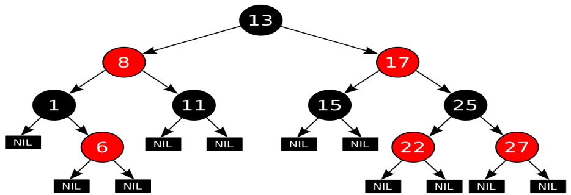
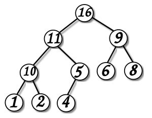
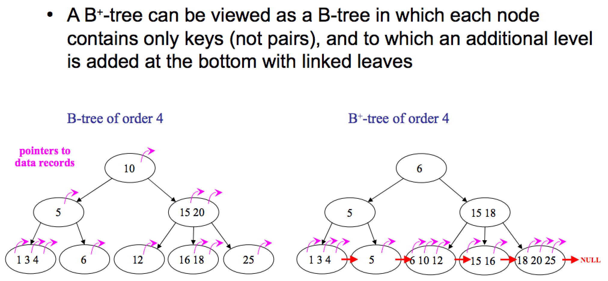
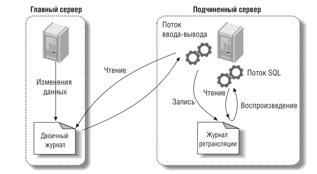
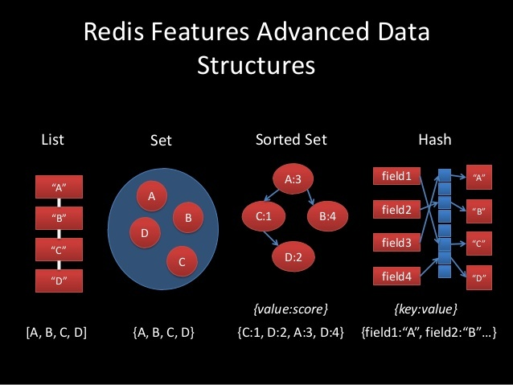
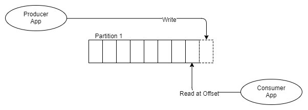
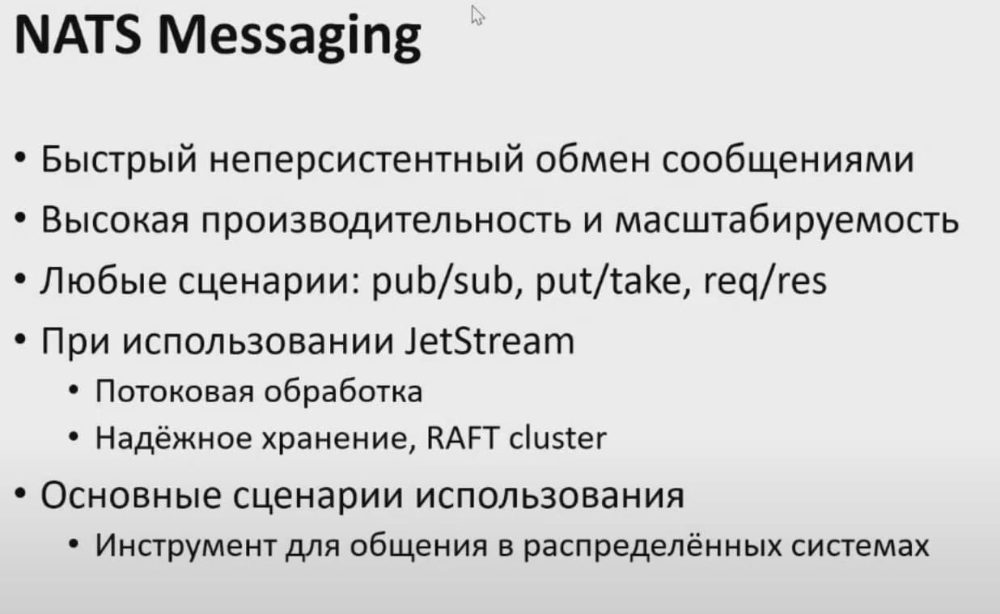
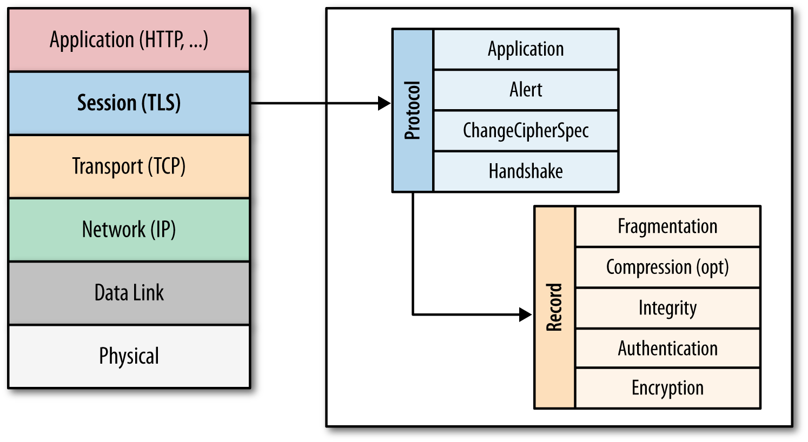
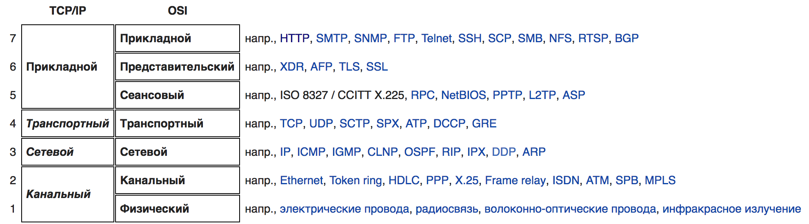

Памятка PHP/GoLang разработчику для подготовки к собеседованиям
Всем привет, меня зовут Артур Пантелеев и вы читаете мою книгу о собеседованиях.
Это методичка(краткий справочник) по темам/вопросам, знание которых может понадобиться при собеседовании на бэкендера (с уклоном в php/Golang) и на работе.
Не является исчерпывающим руководством, а служит лишь тезисным помощником в повторении нужного материала для подготовки к собеседованию и структурированию собственных знаний. Также тут есть много полезных ссылок на дополнительные материалы по каждой теме.
Вопросы можно задать в чат @phpgeeks или в лс @arturpanteleev
Улучшения/дополнения шлите сюда github.com/arturpanteleev/phpInterview
P.S. Первый кирпич в создание данного пособия заложил, увековечив здесь своё имя, Сергей Пронин.

Алгоритмы и структуры данных
Основные структуры данных
Ассоциативный массив
Абстрактный тип данных (интерфейс к хранилищу данных), позволяющий хранить пары вида «(ключ, значение)» и поддерживающий операции добавления пары, а также поиска и удаления пары по ключу.
Стек (LIFO)
Абстрактный тип данных, представляющий собой список элементов, организованных по принципу LIFO (англ. last in — first out, «последним пришёл — первым вышел»).
Очередь (FIFO)
Абстрактный тип данных с дисциплиной доступа к элементам «первый пришёл — первый вышел» (FIFO, First In — First Out). Добавление элемента (принято обозначать словом enqueue — поставить в очередь) возможно лишь в конец очереди, выборка — только из начала очереди (что принято называть словом dequeue — убрать из очереди), при этом выбранный элемент из очереди удаляется.
Двусвязная очередь
Двусвязная очередь (жарг. дэк, дек от англ. deque — double ended queue; двухсторонняя очередь, двусвязный список, очередь с двумя концами) — структура данных, в которой элементы можно добавлять и удалять как в начало, так и в конец, то есть дисциплинами обслуживания являются одновременно FIFO и LIFO.
Связный список
Базовая динамическая структура данных, состоящая из узлов, каждый из которых содержит как собственно данные, так и одну или две ссылки («связки») на следующий и/или предыдущий узел списка. Принципиальным преимуществом перед массивом является структурная гибкость: порядок элементов связного списка может не совпадать с порядком расположения элементов данных в памяти компьютера, а порядок обхода списка всегда явно задаётся его внутренними связями.
Линейный однонаправленный список
Структура данных, состоящая из элементов одного типа, связанных между собой последовательно посредством указателей. Каждый элемент списка имеет указатель на следующий элемент. Последний элемент списка указывает на NULL. Элемент, на который нет указателя, является первым (головным) элементом списка. Здесь ссылка в каждом узле указывает на следующий узел в списке. В односвязном списке можно передвигаться только в сторону конца списка. Узнать адрес предыдущего элемента, опираясь на содержимое текущего узла, невозможно.
Двусвязный список (двунаправленный связный список)
Здесь ссылки в каждом узле указывают на предыдущий и на последующий узел в списке. По двусвязному списку можно эффективно передвигаться в любом направлении — как к началу, так и к концу. В этом списке проще производить удаление и перестановку элементов, так как легко доступны адреса тех элементов списка, указатели которых направлены на изменяемый элемент.
Кольцевой связный список
Разновидностью связных списков является кольцевой (циклический, замкнутый) список. Он тоже может быть односвязным или двусвязным. Последний элемент кольцевого списка содержит указатель на первый, а первый (в случае двусвязного списка) — на последний.
Дополнительно:
Массив
Структура данных, хранящая набор значений (элементов массива), идентифицируемых по индексу или набору индексов, принимающих целые (или приводимые к целым) значения из некоторого заданного непрерывного диапазона.
Сортировки массивов
Сортировка пузырьком / Bubble sort
Или сортировка простыми обменами. Обходим массив от начала до конца, попутно меняя местами неотсортированные соседние элементы. В результате первого прохода на последнее место «всплывёт» максимальный элемент. Теперь снова обходим неотсортированную часть массива (от первого элемента до предпоследнего) и меняем по пути неотсортированных соседей. Второй по величине элемент окажется на предпоследнем месте. Если за проход не произошло ни одного обмена, то массив отсортирован. Продолжая в том же духе, будем обходить всё уменьшающуюся неотсортированную часть массива, запихивая найденные максимумы в конец. Очевидно, не более чем после n итераций массив будет отсортирован.
<?php
/**
* Worst O(n^2)
* Average O(n^2)
* Best O(n)
*/
function bubbleSort(array $array): array {
$length = count($array);
for ($i = $length - 1; $i > 0; $i--) {
$changes = false;
for ($j = 0; $j < $i; $j++) {
if ($array[$j] > $array[$j + 1]) {
[$array[$j], $array[$j + 1]] = [$array[$j + 1], $array[$j]];
$changes = true;
}
}
if (!$changes) {
return $array;
}
}
return $array;
}
print_r(bubbleSort([5, 25, 10, 7, 6, 20, 21, 1, 2, 13]));
Сортировка вставками / Insertion sort
Элементы входной последовательности просматриваются по одному, и каждый новый поступивший элемент размещается в подходящее место среди ранее упорядоченных элементов.
<?php
/**
* Worst O(n^2)
* Average O(n^2)
* Best O(n)
*/
function insertSort(array $arr): array {
$count = count($arr);
for ($i = 1; $i < $count; $i++) {
for ($j = $i; $j >= 1 && $arr[$j] < $arr[$j-1]; $j--) {
[$arr[$j], $arr[$j-1]] = [$arr[$j-1], $arr[$j]];
}
}
return $arr;
}
print_r(insertSort([3,4,1,2,5,9,6,7,8]));
Сортировка выбором / Selection sort
На очередной итерации будем находить минимум в массиве после текущего элемента и менять его с ним, если надо. Таким образом, после i-ой итерации первые i элементов будут стоять на своих местах. Нужно отметить, что эту сортировку можно реализовать двумя способами – сохраняя минимум и его индекс или просто переставляя текущий элемент с рассматриваемым, если они стоят в неправильном порядке.
<?php
/**
* Worst O(n^2)
* Average O(n^2)
* Best O(n^2)
*/
function selectionSort(array $arr): array
{
$count = count($arr);
for ($i = 0; $i < $count - 1; $i++) {
$min = $i;
for ($j = $i + 1; $j < $count; $j++) {
if ($arr[$j] < $arr[$min]) {
$min = $j;
}
}
if ($min != $i) {
[$arr[$i], $arr[$min]] = [$arr[$min], $arr[$i]];
}
}
return $arr;
}
$array = [3,4,1,2,5,9,6,7,8];
print_r(selectionSort($array));
Быстрая сортировка / Quicksort
Выберем некоторый опорный элемент(пивот). После этого перекинем все элементы, меньшие его, налево, а большие – направо. Рекурсивно вызовемся от каждой из частей. В итоге получим отсортированный массив, так как каждый элемент меньше опорного стоял раньше каждого большего опорного. Асимптотика: O(n logn) в среднем и лучшем случае, O(n^2). Наихудшая оценка достигается при неудачном выборе опорного элемента. Идем одновременно слева и справа, находим пару элементов, таких, что левый элемент больше опорного, а правый меньше, и меняем их местами.
<?php
/**
* Worst O(n^2)
* Average O(n logn)
* Best O(n logn)
*/
function quick(array $arr) : array {
if (count($arr) < 2) {
return $arr;
}
$pivot = (int)(count($arr) / 2); // самый тупой выбор опорника
$less_arr = [];
$more_arr = [];
for ($i = 0; $i <count($arr); $i++) {
if ($i == $pivot) {
continue;
}
if ($arr[$i] < $arr[$pivot]) {
$less_arr[] = $arr[$i];
} else {
$more_arr[] = $arr[$i];
}
}
return array_merge(quick($less_arr), [$arr[$pivot]], quick($more_arr));
}
print_r(quick([3, 4, 1, 2, 5, 9, 6, 7, 8]));
Сортировка слиянием / Merge sort
Сортировка, основанная на парадигме «разделяй и властвуй». Разделим массив пополам, рекурсивно отсортируем части, после чего выполним процедуру слияния: поддерживаем два указателя, один на текущий элемент первой части, второй – на текущий элемент второй части. Из этих двух элементов выбираем минимальный, вставляем в ответ и сдвигаем указатель, соответствующий минимуму. Слияние работает за O(n), уровней всего logn, поэтому асимптотика O(n logn). Эффективно заранее создать временный массив и передать его в качестве аргумента функции. Эта сортировка рекурсивна, как и быстрая, а потому возможен переход на квадратичную при небольшом числе элементов.
<?php
/**
* Worst O(n log n)
* Average O(n log n)
* Best O(n log n)
*/
function merge(array $arr) : array {
if (count($arr) < 2) {
return $arr;
}
if (count($arr) == 2) {
if ($arr[0] < $arr[1]) {
return $arr;
} else {
return [$arr[1], $arr[0]];
}
}
$halved = array_chunk($arr, ceil(count($arr)/2)); // пополам
// разбиваем и сортируем каждую половину
$h1 = merge($halved[0]);
$h2 = merge($halved[1]);
//сливаем
$res = [];
for ($i = 0, $j = 0; $i < count($h1) || $j < count($h2); ) {
if (!isset($h1[$i])) {
$res[] = $h2[$j];
$j++;
continue;
}
if (!isset($h2[$j])) {
$res[] = $h1[$i];
$i++;
continue;
}
if ($h1[$i] < $h2[$j]) {
$res[] = $h1[$i];
$i++;
} else {
$res[] = $h2[$j];
$j++;
}
}
return $res;
}
var_dump(merge([3,34,1,33,5,213213,99,1,1,0,0, -123]));
Сортировка кучей
Пирамидальная сортировка (англ. Heapsort, «Сортировка кучей») — алгоритм сортировки, работающий в худшем, в среднем и в лучшем случае (то есть гарантированно) за O(n*log n) операций при сортировке n элементов. Количество применяемой служебной памяти не зависит от размера массива O(1). Может рассматриваться как усовершенствованная сортировка пузырьком, в которой элемент всплывает/тонет по многим путям.
<?php
// Реализация пирамидальной сортировки на Php
// Процедура для преобразования в двоичную кучу поддерева с корневым узлом i, что является
// индексом в arr[]. n - размер кучи
function heapify(&$arr, $n, $i)
{
$largest = $i; // Инициализируем наибольший элемент как корень
$l = 2*$i + 1; // левый = 2*i + 1
$r = 2*$i + 2; // правый = 2*i + 2
// Если левый дочерний элемент больше корня
if ($l < $n && $arr[$l] > $arr[$largest])
$largest = $l;
//Если правый дочерний элемент больше, чем самый большой элемент на данный момент
if ($r < $n && $arr[$r] > $arr[$largest])
$largest = $r;
// Если самый большой элемент не корень
if ($largest != $i)
{
$swap = $arr[$i];
$arr[$i] = $arr[$largest];
$arr[$largest] = $swap;
// Рекурсивно преобразуем в двоичную кучу затронутое поддерево
heapify($arr, $n, $largest);
}
}
//Основная функция, выполняющая пирамидальную сортировку
function heapSort(&$arr, $n)
{
// Построение кучи (перегруппируем массив)
for ($i = $n / 2 - 1; $i >= 0; $i--)
heapify($arr, $n, $i);
//Один за другим извлекаем элементы из кучи
for ($i = $n-1; $i >= 0; $i--)
{
// Перемещаем текущий корень в конец
$temp = $arr[0];
$arr[0] = $arr[$i];
$arr[$i] = $temp;
// вызываем процедуру heapify на уменьшенной куче
heapify($arr, $i, 0);
}
}
/* Вспомогательная функция для вывода на экран массива размера n */
function printArray(&$arr, $n)
{
for ($i = 0; $i < $n; ++$i)
echo ($arr[$i]." ") ;
}
$arr = array(12, 11, 13, 5, 6, 7);
$n = sizeof($arr)/sizeof($arr[0]);
heapSort($arr, $n);
printArray($arr , $n);
Дополнительно:
- Пузырьковая сортировка и все-все-все
- Алгоритмы сортировки
- Описание алгоритмов сортировки и сравнение их производительности
Хэш таблица
Хеш-таблица(hash table) — это структура данных, реализующая интерфейс ассоциативного массива, а именно, она позволяет хранить пары ключ => значение и выполнять три операции:
- добавление
- поиск
- удаление
Главное свойство hash-таблиц — все операции(вставка, поиск и удаление) в среднем выполняются за O(1), среднее время поиска по ней также равно O(1) и O(n) в худшем случае.
Выполнение операции в хеш-таблице начинается с вычисления хеш-функции от ключа. Получающееся хеш-значение играет роль индекса. Затем выполняемая операция (добавление, удаление или поиск) перенаправляется объекту, который хранится в соответствующей ячейке массива. Ситуация, когда для различных ключей получается одно и то же хеш-значение, называется коллизией. Существует несколько способов разрешения коллизий.
Метод цепочек
Этот метод часто называют открытым хешированием. Его суть проста — элементы с одинаковым хешем попадают в одну ячейку в виде связного списка(возможны оптимизации, где вместо списка будет дерево). Каждая ячейка массива H является указателем на связный список(цепочку) пар ключ-значение, соответствующих одному и тому же хеш-значению ключа. Коллизии просто приводят к тому, что появляются цепочки длиной более одного элемента.
Открытая индексация (или закрытое хеширование)
В массиве H хранятся сами пары ключ-значение. Алгоритм вставки элемента проверяет ячейки массива H в некотором порядке (последовательность проб) до тех пор, пока не будет найдена первая свободная ячейка, в которую и будет записан новый элемент.
В общем случае, она зависит только от ключа элемента, то есть это последовательность h0(x), h1(x), …, h**n — 1(x), где x — ключ элемента, а h**i(x) — произвольные функции, сопоставляющие каждому ключу ячейку в хеш-таблице. Первый элемент в последовательности, как правило, равен значению некоторой хеш-функции от ключа, а остальные считаются от него одним из приведённых ниже способов. Для успешной работы алгоритмов поиска последовательность проб должна быть такой, чтобы все ячейки хеш-таблицы оказались просмотренными ровно по одному разу.
Алгоритм поиска просматривает ячейки хеш-таблицы в том же самом порядке, что и при вставке, до тех пор, пока не найдется либо элемент с искомым ключом, либо свободная ячейка (что означает отсутствие элемента в хеш-таблице). Этот порядок вычисляется на лету, что позволяет сэкономить на памяти для указателей, требующихся в хеш-таблицах с цепочками.

Дополнительно:
Дерево
Иерархическая структура элементов, называемыми узлами (вершинами). На самом верхнем уровне имеется только один узел — корень дерева. Каждый узел, кроме корня, связан только с одним узлом на более высоком уровне. Каждый элемент может быть связан ребром с одним или несколькими элементами на следующем, более низком, уровне. Элементы, не имеющий потомков называются листьями. От корня до любой вершины существует один путь. Любой узел дерева с потомками на всех уровнях так же образует дерево, называемое поддеревом.
Термины:
- Корневой узел — самый верхний узел дерева.
- Корень — одна из вершин, по желанию наблюдателя.
- Лист, листовой или терминальный узел — узел, не имеющий дочерних элементов.
- Внутренний узел — любой узел дерева, имеющий потомков, и таким образом, не являющийся листовым узлом.
- Дерево считается ориентированным, если в корень не заходит ни одно ребро.
- Полный сцепленный ключ — идентификатор записи, который образуется путём конкатенации всех ключей экземпляров родительских записей (групп).
- M-арное дерево - число поддеревьев данного узла образует степень узла, максимальное значение m степени всех узлов дерева является степенью дерева. Дерево степени 2 называется бинарным деревом. Если в дереве на каждом уровне задан порядок следования вершин, то такое дерево называется упорядоченным
Бинарное дерево поиска
Поиск - O(log n); Вставка - O(log n); Удаление - O(log n);
Это двоичное дерево, для которого выполняются следующие условия:
-
У каждого узла не более двух детей(так как бинарное).
-
У всех узлов левого поддерева произвольного узла X значения ключей данных меньше, нежели значение ключа данных самого узла X.
-
У всех узлов правого поддерева произвольного узла X значения ключей данных больше либо равно, нежели значение ключа данных самого узла X.

АВЛ-Дерево
Сбалансированное по высоте двоичное дерево поиска: для каждой его вершины высота её двух поддеревьев различается не более чем на 1.

Красно-чёрное дерево
Красно-черные деревья - один из способов балансировки деревьев. Название происходит от стандартной раскраски узлов таких деревьев в красный и черный цвета. Цвета узлов используются при балансировке дерева. Во время операций вставки и удаления поддеревья может понадобиться повернуть, чтобы достигнуть сбалансированности дерева. Оценкой как среднего время, так и наихудшего является O(log n).
Красно-чёрное дерево - это двоичное дерево поиска, в котором каждый узел имеет атрибут цвет, принимающий значения красный или чёрный.
Как бинарное дерево, красно-черное обладает свойствами:
- Оба поддерева являются бинарными деревьями поиска.
- Для каждого узла с ключом k выполняется критерий упорядочения: ключи всех левых потомков <= k < ключи всех правых потомков(в других определениях дубликаты должны располагаться с правой стороны либо вообще отсутствовать). Это неравенство должно быть истинным для всех потомков узла, а не только его дочерних узлов.
В дополнение к обычным требованиям, налагаемым на двоичные деревья поиска, к красно-чёрным деревьям применяются следующие требования:
-
Узел либо красный, либо чёрный.
-
Корень — чёрный. (В других определениях это правило иногда опускается. Это правило слабо влияет на анализ, так как корень всегда может быть изменен с красного на чёрный, но не обязательно наоборот).
-
Все листья(NIL) — чёрные.
-
Оба потомка каждого красного узла — чёрные.
-
Всякий простой путь от данного узла до любого листового узла, являющегося его потомком, содержит одинаковое число чёрных узлов.

Количество черных узлов на ветви от корня до листа называется черной высотой дерева. Перечисленные свойства гарантируют, что самая длинная ветвь от корня к листу не более чем вдвое длиннее любой другой ветви от корня к листу. Чтобы понять, почему это так, рассмотрим дерево с черной высотой 2. Кратчайшее возможное расстояние от корня до листа равно двум - когда оба узла черные. Длиннейшее расстояние от корня до листа равно четырем - узлы при этом покрашены (от корня к листу) так: красный, черный, красный, черный. Сюда нельзя добавить черные узлы, поскольку при этом нарушится свойство 4, из которого вытекает корректность понятия черной высоты. Поскольку согласно свойству 3 у красных узлов непременно черные наследники, в подобной последовательности недопустимы и два красных узла подряд. Таким образом, длиннейший путь, который мы можем сконструировать, состоит из чередования красных и черных узлов, что и приводит нас к удвоенной длине пути, проходящего только через черные узлы. Все операции над деревом должны уметь работать с перечисленными свойствами. В частности, при вставке и удалении эти свойства должны сохраниться.
Куча
Специализированное дерево, которая удовлетворяет *свойству кучи:*если B является узлом-потомком узла A, то ключ(A) ≥ ключ(B). Из этого следует, что элемент с наибольшим ключом всегда является корневым узлом кучи, поэтому иногда такие кучи называют max-кучами (в качестве альтернативы, если сравнение перевернуть, то наименьший элемент будет всегда корневым узлом, такие кучи называют min-кучами). Не существует никаких ограничений относительно того, сколько узлов-потомков имеет каждый узел кучи, хотя на практике их число обычно не более двух. Куча является максимально эффективной реализации очереди с приоритетом. Кучи имеют решающее значение в некоторых эффективных алгоритмах на графах, таких как алгоритм Дейкстры на d-кучах и сортировка методом пирамиды.
Двои́чная ку́ча, пирами́да, или сортиру́ющее де́рево — такое двоичное дерево, для которого выполнены три условия:
-
Значение в любой вершине не меньше, чем значения её потомков.
-
Глубина всех листьев (расстояние до корня) отличается не более чем на 1 слой.
-
Последний слой заполняется слева направо без «дырок».

B-дерево
B-дерево – это структура хранения данных, являющаяся разновидностью дерева поиска. Особенностями В-деревьев является:
- сбалансированность,
- ветвистость,
- отсортированность
- логарифмическое O(log n) время работы всех стандартных операций (поиск, вставка, удаление).
Сбалансированность означает, что все листы находятся на одинаковом расстоянии от корня. В отличие от бинарных деревьев В-деревья допускают большое число потомков для любого из узлов. Это свойство называется ветвистостью. Благодаря ветвистости, В-деревья очень удобны для хранения крупных последовательных блоков данных, поэтому такая структура часто находит применение в базах данных и файловых системах.
С точки зрения физической организации B-дерево представляется как мультисписочная структура страниц памяти, то есть каждому узлу дерева соответствует блок памяти (страница). Внутренние и листовые страницы обычно имеют разную структуру.
Порядок(m) В-дерева – это максимальное число потомков для любого узла. Кроме узлов в дереве присутствует ещё одна сущность – ключи. Именно в них и содержится вся полезная информация. Каждый узел дерева можно представить в виде упорядоченной последовательности ”потомок1; ключ1; потомок2; ключ2; … потомок(N-1); ключ(N-1); потомокN”. Важно заметить, что ключи располагаются между ссылками на потомков и, таким образом, ключей всегда на 1 меньше. В организации В-дерева можно выделить несколько ключевых правил:
- Каждый узел содержит строго меньше m (порядок дерева) потомков.
- Каждый узел содержит не менее m/2 потомков.
- Корень может содержать меньше m/2 потомков.
- У корневого узла есть хотя бы 2 потомка, если он не является листом.
- Все листья находятся на одном уровне и содержат только данные (ключи). Но это не значит что ключи находятся только в листьях.
Ключи во внутреннем узле окружены указателями или смещениями записей, отсылающими к ключам, которые либо все больше, либо все меньше окруженного ключа. Например, все ключи, меньшие 22, адресуются левой ссылкой, все большие - правой. Для простоты здесь не показаны адреса записей, связанные с каждым ключом.

B+ дерево
B+ дерево — структура данных на основе B-дерева, сбалансированное n-арное дерево поиска с переменным, но зачастую большим количеством потомков в узле. B+ дерево состоит из корня, внутренних узлов и листьев, корень может быть либо листом, либо узлом с двумя и более потомками.
Изначально структура предназначалась для хранения данных в целях эффективного поиска в блочно-ориентированной среде хранения — в частности, для файловых систем; применение связано с тем, что в отличие от бинарных деревьев поиска, B+ деревья имеют очень высокий коэффициент ветвления (число указателей из родительского узла на дочерние, обычно порядка 100 или более), что снижает количество операций ввода-вывода, требующих поиска элемента в дереве.
Построение B+-дерева может требовать перестройки промежуточной структуры, это связано с тем, что количество ключей в каждом узле (кроме корня) должно быть от t до 2t, где t — степень (или порядок) дерева. При попытке вставить в узел 2t+1-й ключ возникает необходимость разделить этот узел, в качестве ключа-разделителя сформированных ветвей выступает t+1-й ключ, который помещается на соседний ярус дерева. Особым же случаем является разделение корня, так как в этом случае увеличивается число ярусов дерева. Особенностью разделения листа B+-дерева является то, что он делится на неравные части. При разделении внутреннего узла или корня возникают узлы с равным числом ключей k. Разделение листа может вызвать «цепную реакцию» деления узлов, заканчивающуюся в корне.
Свойства структуры:
- Легко реализуется независимость программы от структуры информационной записи.
- Поиск обязательно заканчивается в листе.
- Удаление ключа имеет преимущество — удаление всегда происходит из листа.
- Другие операции выполняются аналогично B-деревьям.
- B+ деревья требуют больше памяти для представления, чем классические B-деревья.
- B+ деревья имеют возможность последовательного доступа к ключам.

B* дерево
B* дерево — разновидность B дерева, в которой каждый узел дерева заполнен не менее чем на ⅔ (в отличие от B-дерева, где этот показатель составляет 1/2). B+ дерево, удовлетворяющее таким требованиям называется B+* деревом.
B* дерево относительно компактнее, так как каждый узел используется полнее. В остальном же этот вид деревьев не отличается от простого B дерева.
Для выполнения требования «заполненность узла не менее 2/3», приходится отказываться от простой процедуры разделения переполненного узла. Вместо этого происходит «переливание» в соседний узел. Если же и соседний узел заполнен, то ключи приблизительно поровну разделяются на 3 новых узла.
LSM Дерево
LSM-дерево (Log-structured merge-tree — журнально-структурированное дерево со слиянием) — используемая во многих СУБД структура данных, предоставляющая быстрый доступ по индексу в условиях частых запросов на вставку (например, при хранении журналов транзакций). LSM-деревья, как и другие деревья, хранят пары «ключ — значение». LSM-дерево поддерживает две или более различные структуры, каждая из которых оптимизирована под устройство, в котором она будет храниться. Синхронизация между этими структурами происходит блоками.
Принцип работы
Простая версия LSM-дерева — двухуровневое дерево — состоит из двух древоподобных структур C0 и C1. C0 меньше по размеру и хранится целиком в оперативной памяти, а C1 находится в энергонезависимой памяти. Новые записи вставляются в C0. Если после вставки размер C0 превышает некоторое заданное пороговое значение, непрерывный сегмент удаляется из C0 и сливается с C1 на устройстве постоянного хранения. Хорошая производительность достигается за счёт того, что деревья оптимизированы под своё хранилище, а слияние осуществляется эффективно и группами по нескольку записей, используя алгоритм, напоминающий сортировку слиянием.
Большинство LSM-деревьев, используемых на практике, реализует несколько уровней. Уровень 0 (назовём его MemTable) хранится в оперативной памяти и может быть представлен обычным деревом. Данные на устройствах постоянного хранения хранятся в виде отсортированных по ключу таблиц (SSTable). Таблица может храниться в виде отдельного файла или набора файлов с непересекающимися значениями ключей. Для поиска конкретного ключа нужно проверить его наличие в MemTable, а затем — пройти по всем SSTable на устройстве постоянного хранения.
Схема работы с LSM-деревом:
- индексы SSTable всегда загружены в оперативную память;
- запись производится в MemTable;
- при чтении сначала проверяется MemTable, а затем, если надо, — SSTable на устройстве постоянного хранения;
- периодически MemTable сбрасывается в энергонезависимую память для постоянного хранения в виде SSTable;
- периодически SSTable на устройствах постоянного хранения сливаются.
Искомый ключ может появиться сразу в нескольких таблицах на устройствах постоянного хранения, и итоговый ответ зависит от программы. Большинству приложений нужно лишь последнее значение, относящееся к данному ключу. Другие, например Apache Cassandra, в которой каждое значение представляет собой строку базы данных (а строка может иметь разное количество столбцов в разных таблицах с устройств постоянного хранения), вынуждены как-либо обрабатывать все имеющиеся значения, чтобы получить корректный результат. Чтобы сократить время выполнения запросов, на практике стараются избегать ситуации со слишком большим количеством таблиц на устройствах постоянного хранения.
Были разработаны расширения к «уровневому» методу для поддержания B+-структур, например, bLSM[2] и Diff-Index.[3]
Время работы
Архитектура LSM-дерева позволяет удовлетворить запрос на чтение либо из оперативной памяти, либо за одно обращение к устройствам постоянного хранения. Запись тоже всегда быстра независимо от размеров хранилища.
SSTable на устройствах постоянного хранения неизменяема. Поэтому изменения хранятся в MemTable, а удаления должны добавлять в MemTable специальное значение. Поскольку новые считывания происходят последовательно по индексу, обновлённое значение или запись об удалении значения встретятся раньше, чем старые значения. Периодически запускаемое слияние старых SSTable на устройстве постоянного хранения будет производить эти изменения и действительно удалять и обновлять значения, избавляясь от ненужных данных.
R-дерево
R-дерево (R-trees) — древовидная структура данных (дерево). Она подобна B-дереву, но используется для организации доступа к пространственным данным, то есть для индексации многомерной информации, такой, например, как географические данные с двумерными координатами (широтой и долготой). Типичным запросом с использованием R-деревьев мог бы быть такой: «Найти все музеи в пределах 2 километров от моего текущего местоположения».
Эта структура данных разбивает многомерное пространство на множество иерархически вложенных и, возможно, пересекающихся, прямоугольников (для двумерного пространства). В случае трехмерного или многомерного пространства это будут прямоугольные параллелепипеды (кубоиды) или параллелотопы.
Алгоритмы вставки и удаления используют эти ограничивающие прямоугольники для обеспечения того, чтобы «близкорасположенные» объекты были помещены в одну листовую вершину. В частности, новый объект попадёт в ту листовую вершину, для которой потребуется наименьшее расширение её ограничивающего прямоугольника. Каждый элемент листовой вершины хранит два поля данных: способ идентификации данных, описывающих объект, (либо сами эти данные) и ограничивающий прямоугольник этого объекта.
Аналогично, алгоритмы поиска (например, пересечение, включение, окрестности) используют ограничивающие прямоугольники для принятия решения о необходимости поиска в дочерней вершине. Таким образом, большинство вершин никогда не затрагиваются в ходе поиска. Как и в случае с B-деревьями, это свойство R-деревьев обусловливает их применимость для баз данных, где вершины могут выгружаться на диск по мере необходимости.
Для расщепления переполненных вершин могут применяться различные алгоритмы, что порождает деление R-деревьев на подтипы: квадратичные и линейные.

Структура R-дерева
Каждая вершина R-дерева имеет переменное количество элементов (не более некоторого заранее заданного максимума). Каждый элемент нелистовой вершины хранит два поля данных: способ идентификации дочерней вершины и ограничивающий прямоугольник (кубоид), охватывающий все элементы этой дочерней вершины. Все хранимые кортежи хранятся на одном уровне глубины, таким образом, дерево идеально сбалансировано. При проектировании R-дерева нужно задать некоторые константы:
- MaxEntries — максимальное число детей у вершины
- MinEntries — минимальное число детей у вершины, за исключением корня.
Для корректной работы алгоритмов необходимо выполнение условия MinEntries <= MaxEntries / 2. В корневой вершине может быть от 2 до MaxEntries потомков. Часто выбирают MinEntries = 2, тогда для корня выполняются те же условия, что и для остальных вершин. Также иногда разумно выделять отдельные константы для количества точек в листовых вершинах, так как их часто можно делать больше.
Граф
Граф — это совокупность объектов со связями между ними. Объекты представляются как вершины, или узлы графа, а связи — как дуги, или рёбра. Для разных областей применения виды графов могут различаться направленностью, ограничениями на количество связей и дополнительными данными о вершинах или рёбрах. Граф называется:
- связным, если для любых вершин u,v есть путь из u в v.
- деревом, если он связный и не содержит простых циклов.
- полным, если любые его две (различные, если не допускаются петли) вершины соединены ребром.
- двудольным, если его вершины можно разбить на два непересекающихся подмножества V1 и V2 так, что всякое ребро соединяет вершину из V1 с вершиной из V2.
- планарным, если граф можно изобразить диаграммой на плоскости без пересечений рёбер.
- ориентированным, если рёбрам которого присвоено направление. Направленные рёбра именуются также дугами, а в некоторых источниках и просто рёбрами.
Что такое обход графа?
Простыми словами, обход графа — это переход от одной его вершины к другой в поисках свойств связей этих вершин. Связи (линии, соединяющие вершины) называются направлениями, путями, гранями или ребрами графа. Вершины графа также именуются узлами.
Двумя основными алгоритмами обхода графа являются поиск в глубину (Depth-First Search, DFS) и поиск в ширину (Breadth-First Search, BFS).
Поиск в глубину
Поиск в глубину(Depth-First Search, DFS) находит такой путь от данной вершины, до нужной, что этот путь содержит минимальную сумму ребер графа. Например, если мы ищем на карте метро путь от Сокольников, до Парка Победы, требующий наименьшее время для переезда(расстояние между каждыми соседними станциями, будет весом ребра), то мы ищем в глубину.
DFS следует концепции «погружайся глубже, головой вперед» («go deep, head first»). Идея заключается в том, что мы двигаемся от начальной вершины (точки, места) в определенном направлении (по определенному пути) до тех пор, пока не достигнем конца пути или пункта назначения (искомой вершины). Если мы достигли конца пути, но он не является пунктом назначения, то мы возвращаемся назад (к точке разветвления или расхождения путей) и идем по другому маршруту.
Поиск в ширину
Поиск в ширину(Breadth-First Search, BFS) — это один из основных алгоритмов на графах. В результате поиска в ширину находится путь кратчайшей длины в невзвешенном графе, т.е. путь, содержащий наименьшее число рёбер. Например, если мы ищем на карте метро путь от Сокольников, до Парка Победы, содержащий наименьшее число станций, то мы ищем в ширину.
BFS следует концепции «расширяйся, поднимаясь на высоту птичьего полета» («go wide, bird’s eye-view»). Вместо того чтобы двигаться по определенному пути до конца, BFS предполагает движение вперед по одному соседу за раз.
Алгори́тм Де́йкстры
Алгори́тм Де́йкстры (Dijkstra’s algorithm) — алгоритм на графах, изобретённый нидерландским учёным Эдсгером Дейкстрой в 1959 году. Находит кратчайшие пути от одной из вершин графа до всех остальных. Алгоритм работает только для графов без рёбер отрицательного веса.
Каждой вершине из V сопоставим метку — минимальное известное расстояние от этой вершины до a. Алгоритм работает пошагово — на каждом шаге он «посещает» одну вершину и пытается уменьшать метки. Работа алгоритма завершается, когда все вершины посещены.
Инициализация. Метка самой вершины a полагается равной 0, метки остальных вершин — бесконечности. Это отражает то, что расстояния от a до других вершин пока неизвестны. Все вершины графа помечаются как не посещённые.
Шаг алгоритма. Если все вершины посещены, алгоритм завершается. В противном случае из ещё не посещённых вершин выбирается вершина u, имеющая минимальную метку. Мы рассматриваем всевозможные маршруты, в которых u является предпоследним пунктом. Вершины, в которые ведут рёбра из u, назовём соседями этой вершины. Для каждого соседа вершины u, кроме отмеченных как посещённые, рассмотрим новую длину пути, равную сумме значений текущей метки u и длины ребра, соединяющего u с этим соседом. Если полученное значение длины меньше значения метки соседа, заменим значение метки полученным значением длины. Рассмотрев всех соседей, пометим вершину u как посещённую и повторим шаг алгоритма.
Дополнительно:
Вероятностные структуры данных
Фильтр Блума
Фильтр Блума (англ. Bloom filter) — это вероятностная структура данных, придуманная Бёртоном Блумом в 1970 году, позволяющая проверять принадлежность элемента к множеству. При этом существует возможность получить ложноположительное срабатывание (элемента в множестве нет, но структура данных сообщает, что он есть), но не ложноотрицательное.
Фильтр Блума может использовать любой объём памяти, заранее заданный пользователем, причём чем он больше, тем меньше вероятность ложного срабатывания. Поддерживается операция добавления новых элементов в множество, но не удаления существующих (если только не используется модификация со счётчиками).
По сравнению с хеш-таблицами фильтр Блума может обходиться на несколько порядков меньшими объёмами памяти, жертвуя детерминизмом. Обычно он используется для уменьшения числа запросов к несуществующим данным в структуре данных с более дорогостоящим доступом (например, расположенной на жестком диске или в сетевой базе данных), то есть для «фильтрации» запросов к ней.
Как фильтр это делает? Как я уже говорил, идея до гениальности проста. Заводится массив битов фиксированного размера m и набор из k различных хеш-функций, выдающих значения от 0 до m - 1. При необходимости добавить элемент к множеству, для элемента считается значение каждой хеш-функции и в массиве устанавливаются биты с соответствующими индексами.
Для проверки принадлежности, как вы уже догадались, достаточно посчитать значения хеш-функций для потенциального члена и убедиться, что все соответствующие биты установлены в единицу — это и будет ответом «возможно». Если же хотя бы один бит не равен единице, значит множество этого элемента не содержит — ответ «нет», элемент отфильтрован.
Примеры практических применений:
-
Прокси-сервер Squid использует фильтры Блума для опции cache digests.
-
Google BigTable использует фильтры Блума для уменьшения числа обращений к жесткому диску при проверке на существование заданной строки или столбца в таблице базы данных.
-
Компьютерные программы для проверки орфографии.
-
MinHash
-
LogLog
Криптография
Криптогра́фия — наука о методах обеспечения конфиденциальности (невозможности прочтения информации посторонним), целостности данных (невозможности незаметного изменения информации), аутентификации (проверки подлинности авторства или иных свойств объекта), а также невозможности отказа от авторства.
Терминология
-
Открытый (исходный) текст — данные (необязательно текстовые), передаваемые без использования криптографии или другими словами незашифрованные данные.
-
Шифротекст, шифрованный (закрытый) текст — данные, полученные после применения криптосистемы (обычно — с некоторым указанным ключом). Другое название криптограмма
-
Шифр, криптосистема — семейство обратимых преобразований открытого текста в шифрованный.
-
Ключ — параметр шифра, определяющий выбор конкретного преобразования данного текста. В современных шифрах криптографическая стойкость шифра целиком определяется секретностью ключа (принцип Керкгоффса). Также выделяют ключ шифрования (encription key) и ключ расшифрования (decryption key)
-
Шифрование — процесс нормального применения криптографического преобразования открытого текста на основе алгоритма и ключа, в результате которого возникает шифрованный текст.
-
Расшифровывание — процесс нормального применения криптографического преобразования шифрованного текста в открытый.
-
Асимметричный шифр, двухключевой шифр, шифр с открытым ключом — шифр, в котором используются два ключа, шифрующий и расшифровывающий. При этом, зная лишь ключ зашифровывания, нельзя расшифровать сообщение, и наоборот.
-
Открытый ключ — тот из двух ключей асимметричной системы, который свободно распространяется. Шифрующий для секретной переписки и расшифровывающий — для электронной подписи.
-
Секретный ключ, закрытый ключ — тот из двух ключей асимметричной системы, который хранится в секрете.
-
Криптоанализ — наука, изучающая математические методы нарушения конфиденциальности и целостности информации.
-
Криптоаналитик — учёный, создающий и применяющий методы криптоанализа.
-
Криптография и криптоанализ составляют криптологию, как единую науку о создании и взломе шифров (такое деление привнесено с запада, до этого в СССР и России не применялось специального деления).
-
Криптографическая атака — попытка криптоаналитика вызвать отклонения в атакуемой защищённой системе обмена информацией. Успешную криптографическую атаку называют взлом или вскрытие.
-
Дешифрование (дешифровка) — процесс извлечения открытого текста без знания криптографического ключа на основе известного шифрованного. Термин дешифрование обычно применяют по отношению к процессу криптоанализа шифротекста (криптоанализ сам по себе, вообще говоря, может заключаться и в анализе криптосистемы, а не только зашифрованного ею открытого сообщения).
-
Криптографическая стойкость — способность криптографического алгоритма противостоять криптоанализу.
-
Имитозащита — защита от навязывания ложной информации. Другими словами, текст остаётся открытым, но появляется возможность проверить, что его не изменяли ни случайно, ни намеренно. Имитозащита достигается обычно за счёт включения в пакет передаваемых данных имитовставки.
-
Имитовставка — блок информации, применяемый для имитозащиты, зависящий от ключа и данных.
-
Электронная цифровая подпись, или электронная подпись — асимметричная имитовставка (ключ защиты отличается от ключа проверки). Другими словами, такая имитовставка, которую проверяющий не может подделать.
-
Центр сертификации — сторона, чья честность неоспорима, а открытый ключ широко известен. Электронная подпись центра сертификации подтверждает подлинность открытого ключа.
-
Хеш-функция — функция, которая преобразует сообщение произвольной длины в число («свёртку») фиксированной длины. Для криптографической хеш-функции (в отличие от хеш-функции общего назначения) сложно вычислить обратную и даже найти два сообщения с общей хеш-функцией.
-
Гибри́дная криптосисте́ма — это система шифрования, совмещающая преимущества криптосистемы с открытым ключом с производительностью симметричных криптосистем.
Криптографические примитивы
В основе построения криптостойких систем лежит многократное использование относительно простых преобразований, так называемых криптографических примитивов. Клод Шеннон, известный американский математик и электротехник, предложил использовать подстановки (англ. substitution) и перестановки (англ. permutation). Схемы, которые реализуют эти преобразования, называются SP-сетями. Нередко используемыми криптографическими примитивами являются также преобразования типа циклический сдвиг или гаммирование. Ниже приведены основные криптографические примитивы и их использование.
-
Симметричное шифрование. Заключается в том, что обе стороны-участники обмена данными имеют абсолютно одинаковые ключи для шифрования и расшифровки данных. Данный способ осуществляет преобразование, позволяющее предотвратить просмотр информации третьей стороной.
-
Асимметричное шифрование. Предполагает использовать в паре два разных ключа — открытый и секретный. В асимметричном шифровании ключи работают в паре — если данные шифруются открытым ключом, то расшифровать их можно только соответствующим секретным ключом и наоборот — если данные шифруются секретным ключом, то расшифровать их можно только соответствующим открытым ключом. Использовать открытый ключ из одной пары и секретный с другой — невозможно. Каждая пара асимметричных ключей связана математическими зависимостями. Данный способ также нацелен на преобразование информации от просмотра третьей стороной.
-
Цифровые подписи. Цифровые подписи используются для установления подлинности документа, его происхождения и авторства, исключает искажения информации в электронном документе.
-
Хеширование. Преобразование входного массива данных произвольной длины в выходную битовую строку фиксированной длины. Такие преобразования также называются хеш-функциями или функциями свёртки, а их результаты называют хеш-кодом, контрольной суммой или дайджестом сообщения (англ. message digest). Результаты хеширования статистически уникальны. Последовательность, отличающаяся хотя бы одним байтом, не будет преобразована в то же самое значение.
Разное
Асимптотический анализ
Асимптотический анализ показывает порядок роста алгоритма - как увеличивается время работы алгоритма при увеличении объема входных данных. По факту измеряем не время, а число операций, например - сравнения,присваивания,выделение памяти. Обычно измеряется наихудший случай выполнения, если не оговорено иное. Записывается, как O(n) (О нотация, О большое) . Примеры:
- Константный — O(1)
- Линейный — O(n)
- Логарифмический — O( log n)
- Линеарифметический — O(n·log n)
- Квадратичный — O(n 2)
- И другие
Бинарный поиск
Ищет элемент в отсортированном массиве:
- Определение значения элемента в середине структуры данных. Полученное значение сравнивается с ключом.
- Если ключ меньше значения середины, то поиск осуществляется в первой половине элементов, иначе — во второй.
- Поиск сводится к тому, что вновь определяется значение серединного элемента в выбранной половине и сравнивается с ключом.
- Процесс продолжается до тех пор, пока не будет найден элемент со значением ключа или не станет пустым интервал для поиска.
<?php
function binarySearch( array $arr, int $needle): ?int
{
$min = 0;
$max = count($arr) - 1;
while ($min < $max) {
$middleKey = floor($min + ($max - $min) / 2);
$middleVal = $arr[$middleKey];
if ($needle < $middleVal) {
$max = $middleKey - 1;
} elseif ($needle > $middleVal) {
$min = $middleKey + 1;
} else {
return $middleKey;
}
}
return null;
}
$arr = [0,11,22,33,44,55,66,77,88,99];
print_r(binarySearch($arr, 44));
Рекурсия
Рекурсия – это когда функция вызывает сама себя(напрямую или через функцию посредника), как правило, с другими аргументами. Рекурсия помогает писать код более компактно и понятно, однако имеет оверхэд по памяти из-за необходимости хранить стек вызова. Для оптимизации можно переписать алгоритм используя циклы - любая рекурсия может быть переделана в цикл, как правило, вариант с циклом будет эффективнее. Также есть хвостовая рекурсия.
Хвостовая рекурсия — частный случай рекурсии, при котором любой рекурсивный вызов является последней операцией перед возвратом из функции. Подобный вид рекурсии примечателен тем, что может быть легко заменён на итерацию путём формальной и гарантированно корректной перестройки кода функции. Оптимизация хвостовой рекурсии путём преобразования её в плоскую итерацию реализована во многих оптимизирующих компиляторах. В некоторых функциональных языках программирования спецификация гарантирует обязательную оптимизацию хвостовой рекурсии.
Разделяй и властвуй
Разделяй и властвуй(divide and conquer) — важная парадигма разработки алгоритмов, заключающаяся в рекурсивном разбиении решаемой задачи на две или более подзадачи того же типа, но меньшего размера, и комбинировании их решений для получения ответа к исходной задаче; разбиения выполняются до тех пор, пока все подзадачи не окажутся элементарными.
Типичный пример — алгоритм сортировки слиянием. Чтобы отсортировать массив чисел по возрастанию, он разбивается на две равные части, каждая сортируется, затем отсортированные части сливаются в одну. Эта процедура применяется к каждой из частей до тех пор, пока сортируемая часть массива содержит хотя бы два элемента (чтобы можно было её разбить на две части).
Динамическое программирование
Динамическое программирование — способ решения сложных задач путём разбиения их на более простые подзадачи. Он применим к задачам с оптимальной подструктурой, выглядящим как набор перекрывающихся подзадач, сложность которых чуть меньше исходной. В этом случае время вычислений, по сравнению с «наивными» методами, можно значительно сократить.
Ключевая идея в динамическом программировании достаточно проста. Как правило, чтобы решить поставленную задачу, требуется решить отдельные части задачи (подзадачи), после чего объединить решения подзадач в одно общее решение. Часто многие из этих подзадач одинаковы. Подход динамического программирования состоит в том, чтобы решить каждую подзадачу только один раз, сократив тем самым количество вычислений. Это особенно полезно в случаях, когда число повторяющихся подзадач экспоненциально велико.
Метод динамического программирования сверху — это простое запоминание результатов решения тех подзадач, которые могут повторно встретиться в дальнейшем. Динамическое программирование снизу включает в себя переформулирование сложной задачи в виде рекурсивной последовательности более простых подзадач. The difference between dynamic programming and greedy algorithms is that with dynamic programming, there are overlapping subproblems, and those subproblems are solved using memoization. "Memoization" is the technique whereby solutions to subproblems are used to solve other subproblems more quickly.
The difference is that dynamic programming requires you to remember the answer for the smaller states, while a greedy algorithm is local in the sense that all the information needed is in the current state. Of course, there is some intersection.
Жадный алгоритм
Жадный алгоритм — алгоритм, заключающийся в принятии локально оптимальных решений на каждом этапе, допуская, что конечное решение также окажется оптимальным. В общем случае нельзя сказать, можно ли получить оптимальное решение с помощью жадного алгоритма применительно к конкретной задаче. Но есть две особенности, характерные для задач, которые решаются с помощью жадных алгоритмов: принцип жадного выбора и свойство оптимальности для подзадач.
Принцип жадного выбора
Говорят, что к задаче оптимизации применим принцип жадного выбора, если последовательность локально оптимальных выборов дает глобально оптимальное решение. В этом состоит главное отличие жадных алгоритмов от динамического программирования: во втором просчитываются сразу последствия всех вариантов.
Чтобы доказать, что жадный алгоритм дает оптимум, нужно попытаться провести доказательство, аналогичное доказательству алгоритма задачи о выборе заявок. Сначала мы показываем, что жадный выбор на первом шаге не закрывает путь к оптимальному решению: для любого решения есть другое, согласованное с жадным выбором и не хуже первого. Потом мы показываем, что подзадача, возникшая после жадного выбора на первом шаге, аналогична исходной. По индукции будет следовать, что такая последовательность жадных выборов дает оптимальное решение.
Оптимальность для подзадач
Это свойство говорит о том, что оптимальное решение всей задачи содержит в себе оптимальные решения подзадач.
Задача NP-полная (NP-complete problem)
Тип задач, принадлежащих классу NP (non-deterministic polynomial – «недетерминированные с полиномиальным временем»), для которых отсутствуют быстрые алгоритмы решения. Время работы алгоритмов решения таких задач существенно (обычно, экспоненциально) возрастает с увеличением объема входных данных.
Однако, если предоставить алгоритму некоторые дополнительные сведения, то временные затраты могут быть существенно снижены. При этом, если будет найден быстрый алгоритм для какой-либо из NP-полных задач, то для любой другой задачи из класса NP можно будет найти соответствующее решение.
В теории алгоритмов - задача с ответом «да» или «нет» из класса NP, к которой можно свести любую другую задачу из этого класса за полиномиальное время (то есть при помощи операций, число которых не превышает некоторого полинома в зависимости от размера исходных данных).
Таким образом, NP-полные задачи образуют в некотором смысле подмножество «типовых» задач в классе NP: если для какой-то из них найден «полиномиально быстрый» алгоритм решения, то и любая другая задача из класса NP может быть решена так же «быстро».
К классу NP-полных относятся задача о коммивояжере, о вершинном покрытии и покрытии множеств.
Базы данных
В данном разделе рассказывается о классической теории баз данных + об особенностях работы и устройства различных реально существующих СУБД.
Теория баз данных
Классическая теория БД не привязанна к каким-либо конкретным системам хранения и обработки данных.
База данных — представленная в объективной форме совокупность самостоятельных материалов (статей, расчётов, нормативных актов, судебных решений и иных подобных материалов), систематизированных таким образом, чтобы эти материалы могли быть найдены и обработаны с помощью электронной вычислительной машины. Многие специалисты указывают на распространённую ошибку, состоящую в некорректном использовании термина «база данных» вместо термина «система управления базами данных», и указывают на необходимость различения этих понятий.
Транзакции
Транзакция - атомарное действие над БД, переводящее ее из одного целостного состояния в другое целостное состояние. Другими словами, транзакция - это последовательность операций, которые должны быть или все выполнены, или все не выполнены.
ACID
В информатике акроним ACID описывает требования к транзакционной системе (например, к СУБД), обеспечивающие наиболее надёжную и предсказуемую её работу. Требования ACID были в основном сформулированы в конце 70-х годов Джимом Греем.
Atomicity — Атомарность
Атомарность гарантирует, что никакая транзакция не будет зафиксирована в системе частично. Будут либо выполнены все её подоперации, либо не выполнено ни одной. Поскольку на практике невозможно одновременно и атомарно выполнить всю последовательность операций внутри транзакции, вводится понятие «отката» (rollback): если транзакцию не удаётся полностью завершить, результаты всех её до сих пор произведённых действий будут отменены и система вернётся во «внешне исходное» состояние — со стороны будет казаться, что транзакции и не было. (Естественно, счётчики, индексы и другие внутренние структуры могут измениться, но, если СУБД запрограммирована без ошибок, это не повлияет на внешнее её поведение.)
Consistency — Согласованность
Транзакция, достигающая своего нормального завершения (EOT — end of transaction, завершение транзакции) и, тем самым, фиксирующая свои результаты, сохраняет согласованность базы данных. Другими словами, каждая успешная транзакция по определению фиксирует только допустимые результаты.
Согласованность является более широким понятием. Например, в банковской системе может существовать требование равенства суммы, списываемой с одного счёта, сумме, зачисляемой на другой. Это бизнес-правило и оно не может быть гарантировано только проверками целостности, его должны соблюсти программисты при написании кода транзакций. Если какая-либо транзакция произведёт списание, но не произведёт зачисление, то система останется в некорректном состоянии и свойство согласованности будет нарушено.
Isolation — Изолированность
Во время выполнения транзакции параллельные транзакции не должны оказывать влияние на её результат. Изолированность — требование дорогое, поэтому в реальных БД существуют режимы, не полностью изолирующие транзакцию
Durability — Долговечность
Независимо от проблем на нижних уровнях (к примеру, обесточивание системы или сбои в оборудовании) изменения, сделанные успешно завершённой транзакцией, должны остаться сохранёнными после возвращения системы в работу. Другими словами, если пользователь получил подтверждение от системы, что транзакция выполнена, он может быть уверен, что сделанные им изменения не будут отменены из-за какого-либо сбоя.
Проблемы параллельного доступа с использованием транзакций
При параллельном выполнении транзакций возможны следующие проблемы:
- потерянное обновление (англ. lost update) — при одновременном изменении одного блока данных разными транзакциями одно из изменений теряется;
| Транзакция 1 | Транзакция 2 |
|---|---|
UPDATE tbl1 SET f2=f2+20 WHERE f1=1; | UPDATE tbl1 SET f2=f2+25 WHERE f1=1; |
- «грязное» чтение (англ. dirty read) — чтение данных, добавленных или изменённых транзакцией, которая впоследствии не подтвердится (откатится);
| Транзакция 1 | Транзакция 2 |
|---|---|
UPDATE tbl1 SET f2=f2+1 WHERE f1=1; | |
SELECT f2 FROM tbl1 WHERE f1=1; | |
ROLLBACK WORK; |
- неповторяющееся чтение (англ. non-repeatable read) — при повторном чтении в рамках одной транзакции ранее прочитанные данные оказываются изменёнными;
| Транзакция 1 | Транзакция 2 |
|---|---|
SELECT f2 FROM tbl1 WHERE f1=1; | |
UPDATE tbl1 SET f2=f2+1 WHERE f1=1; | |
COMMIT; | |
SELECT f2 FROM tbl1 WHERE f1=1; |
- фантомное чтение (англ. phantom reads) — одна транзакция в ходе своего выполнения несколько раз выбирает множество строк по одним и тем же критериям. Другая транзакция в интервалах между этими выборками добавляет или удаляет строки, или изменяет столбцы некоторых строк, используемых в критериях выборки первой транзакции, и успешно заканчивается. В результате получится, что одни и те же выборки в первой транзакции дают разные множества строк.
| Транзакция 1 | Транзакция 2 |
|---|---|
SELECT SUM(f2) FROM tbl1; | |
INSERT INTO tbl1 (f1,f2) VALUES (15,20); | |
COMMIT; | |
SELECT SUM(f2) FROM tbl1; |
Уровень изолированности транзакций
Уровень изолированности транзакций — значение, определяющее уровень, при котором в транзакции допускаются несогласованные данные, то есть степень изолированности одной транзакции от другой. Более высокий уровень изолированности повышает точность данных, но при этом может снижаться количество параллельно выполняемых транзакций. С другой стороны, более низкий уровень изолированности позволяет выполнять больше параллельных транзакций, но снижает точность данных.
Стандарт SQL-92 определяет шкалу из четырёх уровней изоляции: Read uncommitted, Read committed, Repeatable read, Serializable.
Read uncommitted (чтение незафиксированных данных)
Низший (первый) уровень изоляции. Он гарантирует только отсутствие потерянных обновлений[1]. Если несколько параллельных транзакций пытаются изменять одну и ту же строку таблицы, то в окончательном варианте строка будет иметь значение, определенное всем набором успешно выполненных транзакций. При этом возможно считывание не только логически несогласованных данных, но и данных, изменения которых ещё не зафиксированы.
Типичный способ реализации данного уровня изоляции — блокировка данных на время выполнения команды изменения, что гарантирует, что команды изменения одних и тех же строк, запущенные параллельно, фактически выполнятся последовательно, и ни одно из изменений не потеряется. Транзакции, выполняющие только чтение, при данном уровне изоляции никогда не блокируются.
Read committed (чтение фиксированных данных)
На этом уровне обеспечивается защита от чернового, «грязного» чтения, тем не менее, в процессе работы одной транзакции другая может быть успешно завершена и сделанные ею изменения зафиксированы. В итоге первая транзакция будет работать с другим набором данных.
Реализация завершённого чтения может основываться на одном из двух подходов: блокировании или версионности:
- Блокирование читаемых и изменяемых данных. Заключается в том, что читающая транзакция блокирует читаемые данные в разделяемом (shared) режиме, в результате чего параллельная транзакция, пытающаяся изменить эти данные, приостанавливается, а пишущая транзакция блокирует изменяемые данные для читающих транзакций, работающих на уровне read committed или более высоком, до своего завершения, препятствуя, таким образом, «грязному» чтению.
- MVCC(Multiversion concurrency control) Сохранение нескольких версий параллельно изменяемых строк. При каждом изменении строки СУБД создаёт новую версию этой строки, с которой продолжает работать изменившая данные транзакция, в то время как любой другой «читающей» транзакции возвращается последняя зафиксированная версия. Преимущество такого подхода в том, что он обеспечивает бо́льшую скорость, так как предотвращает блокировки. Однако он требует, по сравнению с первым, существенно бо́льшего расхода оперативной памяти, которая тратится на хранение версий строк. Кроме того, при параллельном изменении данных несколькими транзакциями может создаться ситуация, когда несколько параллельных транзакций произведут несогласованные изменения одних и тех же данных (поскольку блокировки отсутствуют, ничто не помешает это сделать). Тогда та транзакция, которая зафиксируется первой, сохранит свои изменения в основной БД, а остальные параллельные транзакции окажется невозможно зафиксировать (так как это приведёт к потере обновления первой транзакции). Единственное, что может в такой ситуации СУБД — это откатить остальные транзакции и выдать сообщение об ошибке «Запись уже изменена».
Repeatable read (повторяемость чтения)
Уровень, при котором читающая транзакция «не видит» изменения данных, которые были ею ранее прочитаны. При этом никакая другая транзакция не может изменять данные, читаемые текущей транзакцией, пока та не окончена.
Блокировки в разделяющем режиме применяются ко всем данным, считываемым любой инструкцией транзакции, и сохраняются до её завершения. Это запрещает другим транзакциям изменять строки, которые были считаны незавершённой транзакцией. Однако другие транзакции могут вставлять новые строки, соответствующие условиям поиска инструкций, содержащихся в текущей транзакции. При повторном запуске инструкции текущей транзакцией будут извлечены новые строки, что приведёт к фантомному чтению. Учитывая то, что разделяющие блокировки сохраняются до завершения транзакции, а не снимаются в конце каждой инструкции, степень параллелизма ниже, чем при уровне изоляции READ COMMITTED. Поэтому пользоваться данным и более высокими уровнями транзакций без необходимости обычно не рекомендуется.
Serializable (упорядочиваемость)
Самый высокий уровень изолированности; транзакции полностью изолируются друг от друга, каждая выполняется так, как будто параллельных транзакций не существует. Только на этом уровне параллельные транзакции не подвержены эффекту «фантомного чтения».
Дополнительно:
Нормализация и нормальные формы
Нормализация — это процесс организации данных в базе данных, включающий создание таблиц и установление отношений между ними в соответствии с правилами (нормальными формами), которые обеспечивают защиту данных и делают базу данных более гибкой, устраняя избыточность и несогласованные зависимости.
Процесс проектирования БД с использованием метода НФ является итерационным и заключается в последовательном переводе отношения из 1НФ в НФ более высокого порядка по определенным правилам. Каждая следующая НФ ограничивается определенным типом функциональных зависимостей и устранением соответствующих аномалий при выполнении операций над отношениями БД, а также сохранении свойств предшествующих НФ.
Нормальная форма — требование, предъявляемое к структуре таблиц в теории реляционных баз данных для устранения из базы избыточных функциональных зависимостей между атрибутами (полями таблиц).
Функциональная зависимость между атрибутами (множествами атрибутов) X и Y означает, что для любого допустимого набора кортежей в данном отношении: если два кортежа совпадают по значению X, то они совпадают по значению Y. Например, если значение атрибута «Название компании» — Canonical Ltd, то значением атрибута «Штаб-квартира» в таком кортеже всегда будет Millbank Tower, London, United Kingdom. Обозначение: {X} -> {Y}.
Метод нормальных форм (НФ) состоит в сборе информации об объектах решения задачи в рамках одного отношения и последующей декомпозиции этого отношения на несколько взаимосвязанных отношений на основе процедур нормализации отношений.
Цель нормализации: исключить избыточное дублирование данных, которое является причиной аномалий, возникших при добавлении, редактировании и удалении кортежей(строк таблицы).
Аномалией называется такая ситуация в таблице БД, которая приводит к противоречию в БД либо существенно усложняет обработку БД. Причиной является излишнее дублирование данных в таблице, которое вызывается наличием функциональных зависимостей от не ключевых атрибутов.
Аномалии-модификации проявляются в том, что изменение одних данных может повлечь просмотр всей таблицы и соответствующее изменение некоторых записей таблицы.
Аномалии-удаления — при удалении какого либо кортежа из таблицы может пропасть информация, которая не связана на прямую с удаляемой записью.
Аномалии-добавления возникают, когда информацию в таблицу нельзя поместить, пока она не полная, либо вставка записи требует дополнительного просмотра таблицы.
Первая нормальная форма
Отношение находится в 1НФ, если все его атрибуты являются простыми, все используемые домены должны содержать только скалярные значения. Не должно быть повторений строк в таблице.
Например, есть таблица «Автомобили»:
| Фирма | Модели |
|---|---|
| BMW | M5, X5M, M1 |
| Nissan | GT-R |
Нарушение нормализации 1НФ происходит в моделях BMW, т.к. в одной ячейке содержится список из 3 элементов: M5, X5M, M1, т.е. он не является атомарным. Преобразуем таблицу к 1НФ:
| Фирма | Модели |
|---|---|
| BMW | M5 |
| BMW | X5M |
| BMW | M1 |
| Nissan | GT-R |
Вторая нормальная форма
Отношение находится во 2НФ, если оно находится в 1НФ и каждый не ключевой атрибут неприводимо зависит от Первичного Ключа(ПК).
Неприводимость означает, что в составе потенциального ключа отсутствует меньшее подмножество атрибутов, от которого можно также вывести данную функциональную зависимость.
Например, дана таблица:
| Модель | Фирма | Цена | Скидка |
|---|---|---|---|
| M5 | BMW | 5500000 | 5% |
| X5M | BMW | 6000000 | 5% |
| M1 | BMW | 2500000 | 5% |
| GT-R | Nissan | 5000000 | 10% |
Таблица находится в первой нормальной форме, но не во второй. Цена машины зависит от модели и фирмы. Скидка зависит от фирмы, то есть зависимость от первичного ключа неполная. Исправляется это путем декомпозиции на два отношения, в которых не ключевые атрибуты зависят от ПК.
| Модель | Фирма | Цена |
|---|---|---|
| M5 | BMW | 5500000 |
| X5M | BMW | 6000000 |
| M1 | BMW | 2500000 |
| GT-R | Nissan | 5000000 |
| Фирма | Скидка |
|---|---|
| BMW | 5% |
| Nissan | 10% |
Третья нормальная форма
Отношение находится в 3НФ, когда находится во 2НФ и каждый не ключевой атрибут нетранзитивно зависит от первичного ключа. Проще говоря, второе правило требует выносить все не ключевые поля, содержимое которых может относиться к нескольким записям таблицы в отдельные таблицы.
Рассмотрим таблицу:
| Модель | Магазин | Телефон |
|---|---|---|
| BMW | Риал-авто | 87-33-98 |
| Audi | Риал-авто | 87-33-98 |
| Nissan | Некст-Авто | 94-54-12 |
Таблица находится во 2НФ, но не в 3НФ.
В отношении атрибут «Модель» является первичным ключом. Личных телефонов у автомобилей нет, и телефон зависит исключительно от магазина.
Таким образом, в отношении существуют следующие функциональные зависимости: Модель → Магазин, Магазин → Телефон, Модель → Телефон.
Зависимость Модель → Телефон является транзитивной, следовательно, отношение не находится в 3НФ.
В результате разделения исходного отношения получаются два отношения, находящиеся в 3НФ:
Риал-авто 87-33-98
Риал-авто 87-33-98
Некст-Авто 94-54-12
| Модель | Магазин |
|---|---|
| BMW | Риал-авто |
| Audi | Риал-авто |
| Nissan | Некст-Авто |
Нормальная форма Бойса-Кодда (НФБК) (частная форма третьей нормальной формы)
Определение 3НФ не совсем подходит для следующих отношений:
-
отношение имеет две или более потенциальных ключа;
-
два и более потенциальных ключа являются составными;
-
они пересекаются, т.е. имеют хотя бы один атрибут.
Для отношений, имеющих один потенциальный ключ (первичный), НФБК является 3НФ.
Отношение находится в НФБК, когда каждая нетривиальная и неприводимая слева функциональная зависимость обладает потенциальным ключом в качестве детерминанта.
Предположим, рассматривается отношение, представляющее данные о бронировании стоянки на день:
| Номер стоянки | Время начала | Время окончания | Тариф |
|---|---|---|---|
| 1 | 09:30 | 10:30 | Бережливый |
| 1 | 11:00 | 12:00 | Бережливый |
| 1 | 14:00 | 15:30 | Стандарт |
| 2 | 10:00 | 12:00 | Премиум-В |
| 2 | 12:00 | 14:00 | Премиум-В |
| 2 | 15:00 | 18:00 | Премиум-А |
Тариф имеет уникальное название и зависит от выбранной стоянки и наличии льгот, в частности:
- «Бережливый»: стоянка 1 для льготников
- «Стандарт»: стоянка 1 для не льготников
- «Премиум-А»: стоянка 2 для льготников
- «Премиум-B»: стоянка 2 для не льготников.
Таким образом, возможны следующие составные первичные ключи: {Номер стоянки, Время начала}, {Номер стоянки, Время окончания}, {Тариф, Время начала}, {Тариф, Время окончания}.
Отношение находится в 3НФ. Требования второй нормальной формы выполняются, так как все атрибуты входят в какой-то из потенциальных ключей, а неключевых атрибутов в отношении нет. Также нет и транзитивных зависимостей, что соответствует требованиям третьей нормальной формы. Тем не менее существует функциональная зависимость Тариф → Номер стоянки, в которой левая часть (детерминант) не является потенциальным ключом отношения, то есть отношение не находится в нормальной форме Бойса — Кодда.
Недостатком данной структуры является то, что, например, по ошибке можно приписать тариф «Бережливый» к бронированию второй стоянки, хотя он может относиться только к первой стоянки.
Можно улучшить структуру с помощью декомпозиции отношения на два и добавления атрибута
Имеет льготы, получив отношения, удовлетворяющие НФБК (подчёркнуты атрибуты, входящие в первичный ключ.):
Тарифы
| Тариф | Номер стоянки | Имеет льготы |
|---|---|---|
| Бережливый | 1 | Да |
| Стандарт | 1 | Нет |
| Премиум-А | 2 | Да |
| Премиум-В | 2 | Нет |
Бронирование
| Тариф | Время начала | Время окончания |
|---|---|---|
| Бережливый | 09:30 | 10:30 |
| Бережливый | 11:00 | 12:00 |
| Стандарт | 14:00 | 15:30 |
| Премиум-В | 10:00 | 12:00 |
| Премиум-В | 12:00 | 14:00 |
| Премиум-А | 15:00 | 18:00 |
Также еще есть несколько нормальных форм(4,5,Доменно-ключевая,6) но на них всем похуй.
Дополнительное чтение:
Нормализация отношений. Шесть нормальных форм
Распределенные системы
Репликация (replication)
Репликация — одна из техник масштабирования баз данных. Состоит эта техника в том, что данные с одного сервера базы данных постоянно копируются (реплицируются) на один или несколько других (называемые репликами). Для приложения появляется возможность использовать не один сервер для обработки всех запросов, а несколько. Таким образом появляется возможность распределить нагрузку с одного сервера на несколько.
Репликация — это синхронное или асинхронное копирование данных между несколькими серверами. Ведущие сервера называют master, а ведомые сервера slave. Мастера используются для изменения данных, а слэйвы для считывания. В классической схеме репликации обычно один мастер и несколько слэйвов, так как в большей части веб-проектов операций чтения на несколько порядков больше, чем операций записи. Однако в более сложной схеме репликации может быть и несколько мастеров.
Например, создание нескольких дополнительных slave-серверов позволяет снять с основного сервера нагрузку и повысить общую производительность системы, а также можно организовать слэйвы под конкретные ресурсоёмкие задачи и таким образом, например, упростить составление серьёзных аналитических отчётов — используемый для этих целей slave может быть нагружен на 100%, но на работу других пользователей приложения это не повлияет.
Проблемы, решаемые репликацией
-
Распространение данных. Обычно репликация в MySQL потребляет не очень большую часть пропускной способности сети, к тому же ее можно в любой момент остановить и затем возобновить. Это полезно, если хранение копии данных происходит в географически удаленном пункте, например в другом центре обработки данных. Удаленный подчиненный сервер может работать даже с непостоянным (намеренно или по другим причинам) соединением. Однако если вы хотите обеспечить минимальное отставание реплики, то следует использовать надежный канал с малым временем задержки.
-
Балансировка нагрузки. С помощью репликации можно распределить запросы на чтение между несколькими серверами MySQL; в приложениях с интенсивным чтением эта тактика работает очень хорошо. Реализовать несложное балансирование нагрузки можно, внеся совсем немного изменений в код. Для небольших приложений достаточно просто «зашить» в программу несколько доменных имен или воспользоваться циклическим (round-robin) разрешением DNS-имен (когда с одним доменным именем связано несколько IP-адресов). Возможны и более изощренные решения. Стандартные технологии балансирования нагрузки, в частности сетевые балансировщики, прекрасно послужат для распределения нагрузки между несколькими серверами MySQL.
-
Резервное копирование. Репликация – это ценное подспорье для резервного копирования. Однако подчиненный сервер все же не может использоваться в качестве резервной копии и не является заменой настоящему резервному копированию.
-
Высокая доступность и аварийное переключение на резервный сервер(failover). Репликация позволяет исправить ситуацию, при которой сервер MySQL является единственной точкой отказа приложения. Хорошая сис тема аварийного переключения при отказе, имеющая в составе реплицированные подчиненные серверы, способна существенно сократить время простоя.
Топологии репликации
Master-Slave репликация
В этом подходе выделяется один основной сервер базы данных, который называется Master. На нем происходят все изменения в данных (любые запросы MySQL INSERT/UPDATE/DELETE). Слейв сервер постоянно копирует все изменения с Master. С приложения на Слейв сервер отправляются запросы чтения данных (запросы SELECT). Таким образом Master сервер отвечает за изменения данных, а Slave за чтение.
Master-Master репикация
Существует также схема Master-Master в ней любой из серверов может использоваться как для чтения, так и для записи. Но вероятные поломки делают Master-Master репликацию непривлекательной. Выход из строя одного из серверов практически всегда приводит к потере каких-то данных. Последующее восстановление также сильно затрудняется необходимостью ручного анализа данных, которые успели либо не успели скопироваться.
Следует отметить, что репликация сама по себе не очень удобный механизм масштабирования. Причиной тому — рассинхронизация данных и задержки в копировании с мастера на слейв. Зато это отличное средство для обеспечения отказоустойчивости. Вы всегда можете переключиться на слейв, если мастер ломается и наоборот. Чаще всего репликация используется совместно с шардингом именно из соображений надежности.
Репликация без Master
Некоторые системы хранения данных используют подход, отказываясь от концепции ведущего узла и позволяя непосредственное поступление информации об операциях записи на все реплики. В ряде ранних реплицируемых информационных систем не было ведущего узла, но за время доминирования реляционных баз данных эта идея была практически забыта. Такая архитектура снова вошла в моду после того, как Amazon задействовал ее для своей предназначенной для внутреннего использования системы Dynamo. Riak, Cassandra и Voldemort представляют собой вдохновленные Dynamo склады данных с открытым исходным кодом, применяющие модели репликации без ведущего узла. Поэтому подобный тип БД называют Dynamo-подобной базой данных (Dynamo-style database).
В некоторых реализациях репликации без ведущего узла клиент непосредственно отправляет информацию о своих операциях записи на несколько реплик, в то время как для остальных данную манипуляцию от имени клиента совершает узел-координатор. Однако он, в отличие от БД с ведущим узлом, не навязывает определенный порядок операций записи. Как мы увидим в дальнейшем, это отличие в архитектуре приводит к очень серьезным последствиям в смысле стиля использования базы данных
Как работает репликация
Главный сервер записывает изменения данных в двоичный журнал. Эти записи называются событиями двоичного журнала. Конкретные реализации репликации могут быть нескольких видов.
Операторная(командная).
В простейшем случае ведущий узел записывает в журнал каждый выполняемый запрос на запись (оператор) и отправляет данный журнал выполнения операторов ведомым узлам. В случае реляционной БД это значит, что каждый оператор INSERT, UPDATE или DELETE пересылается ведомым узлам, и каждый ведомый узел производит синтаксический разбор и выполнение этого оператора SQL так, как если бы он был получен от клиента.
Но есть проблемы:
- Все операторы, вызывающие недетерминированные функции (например, функцию NOW() для получения текущего времени или RAND() — для случайного числа), вероятно, будут генерировать разные значения для каждой реплики.
- Если операторы используют столбец с автоматически увеличиваемым значением или зависят от существующих данных из базы (например, UPDATE … WHERE <какое-то условие>), то они должны выполняться на всех репликах в строго одинаковом порядке, иначе их результаты будут различными. Это может быть неудобно в случае множества параллельно выполняемых транзакций.
- Операторы с побочными действиями (например, триггеры, хранимые процедуры, пользовательские функции) могут приводить к различным побочным действиям на разных репликах, за исключением случая, когда все побочные действия полностью детерминированы.
Эти проблемы решаемы: например, ведущий узел может заменять все вызовы недетерминированных функций фиксированным возвращаемым значением при записи оператора в журнал, чтобы все ведомые узлы получали одно значение. Однако в связи с большим количеством граничных случаев обычно предпочитают другие методы репликации. Операторная репликация использовалась в MySQL вплоть до версии 5.1. Она иногда применяется и сейчас, в силу своей компактности, но по умолчанию MySQL переключается на построчную репликацию при малейших признаках недетерминизма в операторе. VoltDB задействует операторную репликацию и обеспечивает ее надежную работу путем требования детерминизма транзакций.
Перенос журнала упреждающей записи WAL(физическая репликация)
В двоичный журнал записывает фактические изменения данных Самое существенное достоинство заключается в том, что теперь MySQL может корректно реплицировать любую команду, причем в некоторых случаях это происходит гораздо более эффективно. Основной недостаток – это то, что двоичный журнал стал намного больше и из него непонятно, какие команды привели к обновлению данных, так что использовать его для аудита с помощью программы mysqlbinlog уже невозможно. Команды не включаются в журнал событий, поэтому будет сложно определить, какая команда выполнялась. Во многих случаях знать это так же важно, как и знать об изменении строк. Фактически процесс применения изменений при построчной репликации в значительной степени является черным ящиком — не видно, что делает сервер. Кроме того, он плохо документирован и объяснен, поэтому когда что-то работает неправильно, устранить неполадки довольно сложно. Например, если подчиненный сервер выберет неэффективный способ поиска строк для изменения, вы этого не заметите.
-
Подчиненный сервер копирует события двоичного журнала в свой журнал ретрансляции (relay log).
-
Подчиненный сервер воспроизводит события из журнала ретрансляции, применяя изменения к собственным данным.

Основной его недостаток метода состоит в том, что журнал описывает данные на очень низком уровне: WAL содержит все подробности того, какие байты менялись в тех или иных дисковых блоках. Это тесно связывает репликацию с подсистемой хранения. Если база данных меняет формат хранения с одной версии на другую, то обычно становится невозможной работа различных версий СУБД на ведущем и ведомых узлах.
На первый взгляд, это лишь незначительный нюанс реализации, но влияние его на эксплуатацию огромно. Если протокол репликации допускает использование ведомыми узлами более нового программного обеспечения, чем ведущим, то появляется возможность выполнять обновление ПО базы данных без всякого простоя: сначала обновляются ведомые узлы, а затем производится восстановление после отказа, чтобы сделать один из этих обновленных узлов новым ведущим. Если же протокол репликации не допускает подобного расхождения версий, как часто бывает при переносе журнала упреждающей записи, то подобные обновления требуют простоя системы
Логическая (построчная) журнальная репликация
Альтернатива — использовать разные форматы журнала для репликации и подсистемы хранения; это даст возможность расцепить журнал репликации с внутренним устройством подсистемы хранения. Такой вид журнала называется логическим журналом (logical log), чтобы различать его с физическим представлением данных подсистемы хранения.
Логический журнал для реляционных баз данных обычно представляет собой последовательность строк, описывающих операции записи в таблицы базы на уровне строк:
- при вставке строки журнал включает новые значения всех столбцов;
- при удалении строки журнал содержит информацию, достаточную для однозначной идентификации удаляемой строки. Обычно это первичный ключ, но если в таблице он отсутствует, то сохраняются старые значения всех столбцов;
- при обновлении строки журнал содержит информацию, достаточную для однозначной идентификации обновляемой строки, и новые значения всех столбцов (или по крайней мере новые значения всех изменившихся столбцов).
Транзакция, меняющая несколько строк, приводит к генерации нескольких подобных записей в журнале, за которыми следует запись, указывающая, что транзакция была зафиксирована. Этот подход использует бинарный журнал СУБД MySQL (в случае, когда он настроен на применение построчной репликации). Поскольку логический журнал расцеплен с внутренним устройством подсистемы хранения, оказывается проще поддерживать его обратную совместимость, благодаря чему на ведущем и ведомых узлах могут выполняться различные версии СУБД или даже различные подсистемы хранения. Формат логического журнала также удобнее для синтаксического разбора внешними приложениями. Этот аспект играет важную роль при необходимости отправить содержимое БД во внешнюю систему, например в склад данных для офлайн-анализа или построения пользовательских индексов и кэшей. Такая методика называется захватом изменений данных (change data capture).
Триггерная репликация
Описанные до сих пор подходы к репликации реализовались СУБД без участия кода приложения. Во многих случаях именно это и нужно, но встречаются обстоятельства, когда требуется большая гибкость. Например, если необходимо реплицировать только подмножество данных, или выполнить репликацию из БД одного типа в БД другого, или задействовать логику разрешения конфликтов, то может понадобиться перенести репликацию на уровень приложения. Некоторые утилиты, например Oracle GoldenGate, позволяют приложению получить доступ к данным с помощью чтения журнала БД. Или же можно воспользоваться возможностями, имеющимися во многих реляционных БД: триггерами (trigger) и хранимыми процедурами (stored procedure). Триггеры позволяют регистрировать пользовательский код, автоматически запускаемый при возникновении в БД события изменения данных (транзакции записи). Триггер получает возможность занести изменения в отдельную таблицу, из которой их сможет прочитать внешний процесс. Затем этот внешний процесс сможет применить любую логику приложения, которая только понадобится, и реплицировать изменения данных в другую систему. Накладные расходы при триггерной репликации обычно выше, чем при других типах репликации, и она сильнее подвержена ошибкам и более ограниченна, чем встроенная репликация базы данных. Однако благодаря своей гибкости может оказаться полезной
Синхронная и асинхронная

Синхронная
В случае синхронной репликации, если данная реплика обновляется, все другие реплики того же фрагмента данных также должны быть обновлены в одной и той же транзакции. Логически это означает, что существует лишь одна версия данных.
В большинстве продуктов синхронная репликация реализуется с помощью триггерных процедур (возможно, скрытых и управляемых системой). Но синхронная репликация имеет тот недостаток, что она создаёт дополнительную нагрузку при выполнении всех транзакций, в которых обновляются какие-либо реплики (кроме того, могут возникать проблемы, связанные с доступностью данных).
Синхронная означает, если у вас commit прошел, то база вам обещает, что не просто commit прошел, а он еще и прошел на удаленных нодах. Т.е. мы commit сделали, подключились к одной конкретной ноде, к одному конкретному серверу, эти данные в идеале, чтобы обеспечить и масштабируемость по чтениям и доступность данных, должны улететь на соседние машины, и транзакции там должны зафиксироваться. Это синхронная репликация.
Асинхронная
В случае асинхронной репликации обновление одной реплики распространяется на другие спустя некоторое время, а не в той же транзакции. Таким образом, при асинхронной репликации вводится задержка, или время ожидания, в течение которого отдельные реплики могут быть фактически неидентичными (то есть определение реплика оказывается не совсем подходящим, поскольку мы не имеем дело с точными и своевременно созданными копиями).
В большинстве продуктов асинхронная репликация реализуется посредством чтения журнала транзакций или постоянной очереди тех обновлений, которые подлежат распространению. Преимущество асинхронной репликации состоит в том, что дополнительные издержки репликации не связаны с транзакциями обновлений, которые могут иметь важное значение для функционирования всего предприятия и предъявлять высокие требования к производительности.
К недостаткам этой схемы относится то, что данные могут оказаться несовместимыми (то есть несовместимыми с точки зрения пользователя). Иными словами, избыточность может проявляться на логическом уровне, а это, строго говоря, означает, что термин контролируемая избыточность в таком случае не применим.
Асинхронность репликации означает, что данные на Слейве могут появиться с небольшой задержкой. Поэтому, в последовательных операциях необходимо использовать чтение с Мастера, чтобы получить актуальные данные.
Рассмотрим кратко проблему согласованности (или, скорее, несогласованности). Дело в том, что реплики могут становиться несовместимыми в результате ситуаций, которые трудно (или даже невозможно) избежать и последствия которых трудно исправить.
В частности, конфликты могут возникать по поводу того, в каком порядке должны применяться обновления. Например, предположим, что в результате выполнения транзакции А происходит вставка строки в реплику X, после чего транзакция B удаляет эту строку, а также допустим, что Y — реплика X. Если обновления распространяются на Y, но вводятся в реплику Y в обратном порядке (например, из-за разных задержек при передаче), то транзакция B не находит в Y строку, подлежащую удалению, и не выполняет своё действие, после чего транзакция А вставляет эту строку. Суммарный эффект состоит в том, что реплика Y содержит указанную строку, а реплика X — нет.
Но ок, транзакция зафиксировалась локально, это тебе что-нибудь гарантирует? Правильный ответ – нет. Потому что возможно, что все остальные реплики лежат дохлые, и те данные, которые вы вкатили на master, они у вас никуда не резервируются. Если у вас master просто упадет, в смысле SQL-сервер упадет, то все хорошо условно, он эти изменения с Write-Ahead Log'a проиграет, но если у вас внезапно демоническая сила подожжет сервер, и он сгорит, прям весь, то данные, которые вы якобы зафиксировали, они на самом деле зафиксировались на одной машине.
Полусинхронная
Синхронность – хорошо с точки зрения надежности, но медленно. Асинхронность полная – зафиксировали локально транзакцию и не ждем вообще удаленные реплики – очевидно быстро (ничем же не отличается от локального commit'a), но никаких гарантий по надежности.
Возникает промежуточный вариант – полусинхронная репликация – это когда commit возвращает успех, в тот момент, когда локально транзакция уже зафиксирована, селекты к master'у уже начнут возвращать новое состояние, новый баланс, и удаленные сервера уже скачали эти данные, уже скачали эту транзакцию, но возможно еще не успели накатить, то ли накатят через 2 секунды, то ли через 2 недели – как повезет. Это самый важный момент, с которым на практике придется сталкиваться, и делать выбор, настраивать и т.д.
Также есть другое определение полусинхронности: делать все ведомые узлы синхронными неразумно: перебой в обслуживании одного любого узла приведет к замедлению работы системы вплоть до полной остановки. На практике активизация в СУБД синхронной репликации обычно означает, что один из ведомых узлов — синхронный, а остальные — асинхронны. В случае замедления или недоступности синхронного ведомого узла в него превращается один из асинхронных ведомых узлов. Это гарантирует наличие актуальной копии данных по крайней мере на двух узлах: ведущем и одном синхронном ведомом. Такая конфигурация иногда называется полусинхронной (semi-synchronous).
Инвалидация кеша при репликации
https://emacsway.github.io/ru/cache-dependencies/
Шардинг (sharding)
Шардинг — прием, который позволяет распределять данные между разными физическими серверами. Процесс шардинга предполагает разнесения данных между отдельными шардами на основе некого ключа шардинга. Связанные одинаковым значением ключа шардинга сущности группируются в набор данных по заданному ключу, а этот набор хранится в пределах одного физического шарда. Это существенно облегчает обработку данных.
Шардинг можно рассматривать как частный случай партиционирования. Партиционирование(partitioning, также секционирование) — это разбиение таблиц, содержащих большое количество записей, на логические части по неким выбранным администратором критериям. Партиционирование таблиц делит весь объем операций по обработке данных на несколько независимых и параллельно выполняющихся потоков, что существенно ускоряет работу СУБД. Для правильного конфигурирования параметров партиционирования необходимо, чтобы в каждом потоке было примерно одинаковое количество записей.
Например, на новостных сайтах имеет смысл партиционировать записи по дате публикации, так как свежие новости на несколько порядков более востребованы и чаще требуется работа именно с ними, а не со всех архивом за годы существования новостного ресурса.
Самая важная и сложная задача, возникающая при шардинге – поиск и выборка данных. Способ поиска зависит от того, как они шардированы. Наша цель состоит в том, чтобы самые важные и часто встречающиеся запросы затрагивали как можно меньше секций. В этом плане очень важно выбрать ключ (или ключи) секционирования данных. Ключ шардирования определяет, в какую секцию попадает та или иная строка. Если известен ключ шардирования некоторого объекта, то можно ответить на два вопроса:
- Где следует сохранить данные?
- Где найти запрошенные данные?
Запросы к нескольким шарданм хуже, чем к одному, но если они затрагивают не слишком много шардов, то все еще не так плохо. Самый худший случай – когда у вас нет ни малейшего представления о том, где находятся данные, и приходится просматривать все шарды без исключения.
Выбор ключа шардирования
Обычно хорошим ключом секционирования является идентификатор какой-нибудь важной сущности в базе данных. Такие сущности называются единицами шардирвания (unit of sharding). Например, если информация секционируется по идентификатору пользователя или клиента, то единицей секционирования является соответственно пользователь или клиент.
Если модель данных сложна, то и секционировать ее труднее. Во многих приложениях существует более одного ключа секционирования, особенно если в данных можно выделить несколько важных «измерений». Иными словами, приложение должно иметь возможность эффективно взглянуть на информацию под разными углами зрения и получить целостное представление. Это означает, что некоторые данные придется хранить в двух разных видах.
Распределение данных
Существует два основных способа распределения данных по секциям: фиксированное и динамическое. Для обеих стратегий необходима функция секционирования, которая принимает на входе ключ секционирования строки и возвращает номер секции, в которой эта строка находится. Здесь слово «функция» употребляется в математическом смысле как отображение множества входных значений (области определения) во множество выходных значений (область значений), такую функцию можно реализовать разными способами, в том числе с использованием справочной таблицы в базе данных.
Фиксированное распределение
Для фиксированного распределения применяется функция разбиения, которая зависит только от значения ключа секционирования. В качестве примеров можно привести деление по модулю или хеш-функции. Такие функции отображают значения ключей секционирования на конечное число «ячеек» (buckets), в которых хранятся данные. Пусть имеется всего 100 ячеек и требуется найти, в какую из них поместить пользователя 111. С применением деления по модулю ответ ясен:остаток от деления 111 на 100 равен 11, поэтому пользователь должен находиться в секции 11.
Однако у этой стратегии есть и недостатки.
- Если секции велики и их немного, то балансировать нагрузку между ними будет сложно.
- При фиксированном распределении вы лишены возможности решать, куда помещать конкретную запись, а это важно в приложениях, где нагрузка на единицы секционирования неравномерна. Некоторые части данных используются гораздо чаще, чем остальные, и когда такие обращения по большей части адресуются к одной и той же секции, стратегия фиксированного распределения не позволяет снять нагрузку, переместив часть данных в другую секцию. Эта проблема не так серьезна, если элементы данных малы, но их количество в каждой секции велико; закон больших чисел все расставит по своим местам.
- Как правило, изменить алгоритм секционирования сложнее, потому что требуется перераспределить все существующие данные. Например, если секционирование производилось делением по модулю 10, то имеется 10 секций. Когда приложение вырастет, и секции станут слишком большими, возникнет желание увеличить их количество до 20. Но для этого придется перехешировать все заново, обновить очень много данных и перераспределить их по новым секциям.
Динамическое распределение
Альтернативой фиксированному распределению является динамическое распределение, описание которого хранится отдельно в виде отображения единицы секционирования на номер секции. Примером может служить таблица с двумя столбцами: идентификатор пользователя и идентификатор секции:
CREATE TABLE user_to_shard (
user_id INT NOT NULL,
shard_id INT NOT NULL,
PRIMARY KEY (user_id)
);
Функцией разбиения служит сама таблица. Зная ключ секционирования (идентификатор пользователя), можно найти соответствующий номер секции. Если подходящей строки не существует, можно выбрать нужную секцию и добавить строку в таб лицу. Впоследствии сопоставление можно будет изменить, потому стратегия и называется динамической.
Table functions – это когда у вас просто какой-то config. Использование подходов Table functions к шардингу очень тесно завязано на таком понятии как virtual bucket. Вспомните, у вас есть функция отображения ключа на шард. Представьте себе, что у вас посередине появляется некое промежуточное отображение, т.е. это отображение превращается в два. Сначала вы отображаете ключ на некоторый виртуальный bucket, потом виртуальный bucket – на соответствующую координату в пространстве вашего кластера.
Существует не очень много методов это все сделать. А еще мы помним о том, что самое главное – это дать свободу и удобство работы системному администратору. Виртуальные bucket-ы, как правило, выбираются в достаточно большом количестве. Почему они виртуальные? Потому что на самом деле они не отражают реального физического сервера. И используется несколько методов для отображения непосредственно ключа на шард.
Один метод – это когда первая часть «key to bucket» function – это просто какой-то хэш или консистентный хэш, т.е. какая-то часть, которая определяется по формуле, а bucket непосредственно на шард отображается через config. Вторая вещь более сложная – когда вы и то и то отображаете через config. Более сложная, потому что вам, условно говоря, для каждого ключа нужно еще помнить, где он лежит. Вы приобретаете возможность передвинуть любой ключ куда угодно, но с другой стороны вы теряете возможность легко и быстро, имея просто маленький config в «bucket to shard», из ключа определить bucket и потом пойти достаточно быстро пойти в нужное место.
С динамическим распределением связаны определенные накладные расходы, так как требуется обращение к внешнему ресурсу, например серверу каталогов (узлу, на котором хранится отображение). Для поддержания приемлемой эффективности такая архитектура часто нуждается в дополнительных слоях программного обеспечения. Например, можно использовать распределенную сис тему кэширования, в памяти которой хранятся данные с сервера каталогов, которые на практике изменяются довольно редко. Основное достоинство динамического распределения – более точное управление местом хранения данных. Это упрощает равномерное разделение данных по секциям и позволяет гибко адаптироваться к непредвиденным изменениям.
Кроме того, динамическое распределение дает возможность выстраивать многоуровневую стратегию шардировани поверх простого отображения ключей на секции. Например, можно организовать двойное отображение, при котором каждой единице секционирования сопоставляется некоторая группа (например, группа членов клуба книголюбов), а сами группы по возможности размещаются в одной секции. Это позволяет воспользоваться преимуществами близости шардов и избегать межсекционных запросов. Динамическое распределение дает возможность создавать несбалансированные секции. Это полезно, когда не все сервера одинаково мощные или когда некоторые серверы используются еще и для других целей, например для архивирования данных. Если при этом имеется еще и возможность в любой момент перебалансировать шарды, то можно поддерживать взаимно-однозначное соответствие между секциями и узлами, не растрачивая впустую емкость дисков. Некоторым нравится та простота, которая свойственна хранению в каждом узле ровно одной сек ции (но не забывайте, что имеет смысл делать шарды относительно небольшими). Динамическое распределение позволяет организовать стратегию секционирования любой сложности, фиксированное такого богатства выбора не предоставляет.
Комбинирование динамического и фиксированного распределений
Можно также применять комбинацию динамического и фиксированного распределения. Это часто бывает полезно, а иногда даже необходимо. Динамическое распределение хорошо работает, когда отображение не слишком велико. С ростом количества единиц секционирования его эффективность падает.
В качестве примера рассмотрим сис тему, в которой хранятся ссылки между сайтами. В ней необходимо хранить десятки миллиардов строк, а ключом секционирования является комбинация исходного и конечного URL. На любой из двух URL могут быть сотни миллионов ссылок, поэтому ни один URL по отдельности не является достаточно избирательным. Однако невозможно хранить все комбинации исходного и конечного URL в таб лице сопоставления, поскольку их слишком много, а каждый URL занимает много места.
Одно из возможных решений – конкатенировать URL и написать хеш-функцию, отображающую получившиеся строки на фиксированное число ячеек, которые затем можно динамически отображать на шарды. Если количество ячеек достаточно велико, скажем, миллион, то в каждый шард их можно поместить довольно много. В результате мы получаем многие преимущества динамического секционирования, не заводя гигантскую таблицу отображения.
Поиск данных
Самых распространенных метода – три:
- Умный клиент
Представьте себе, что у вас есть табличная функция, которая использует маппинг ключа на bucket. Используется какой-то хэш, какая-то формула. Затем у вас есть некоторый config, который состоит из всего лишь небольшого количества данных, например, 1000 маппингов, 1000 строк, 1000 соответствий ключ-значение. В результате это все где-то зашито в вашем клиенте. Ваш клиент получил ключ, сразу определил, на какой сервер идти, и сразу пошел на этот сервер.
В принципе, хороший метод, самый простой и самый клевый. За одним исключением – в случае, если у вас разрастается инфраструктура, и вам в какой-то момент нужно задевелопить кучу других каких-то клиентов, на других языках, для других приложений, то вам нужно повторить эту логику – это во-первых. Во-вторых, если вам нужно сделать каким-то образом решардинг, и сделать это с нулевым maintenance subwindow, то это сделать довольно сложно, потому что вся логика – в процессах приложений, которые сейчас работают. Каким-то образом вам надо сигнализировать, что что-то сейчас будет меняться, карта такая-то будет становиться другой и т.д. Все это, в общем, достаточно сложно.
- Прокси
Представьте себе, что прокси делает следующее: он принимает запрос, как будто к одной ноде, вернее, как будто к одному приложению, и клиент просто не знает о том, что на самом деле за этим прокси есть много нод.
Какая-то логика применяется внутри прокси, он определяет, на какую ноду идти, делает запрос, получает данные, потом передает эти данные назад клиенту. Это очень удобно, хотя бы потому, что ничего специально учить не надо, разговаривать можно как с одной базой, как мы привыкли, и если у нас есть какие-то клиентские приложения, которые уже написаны, нам их переписывать не надо.
Жирные стрелочки на этом слайде указывают, где потекли данные. Например, видно, что жирные данные текут уже в два места. Одно место – это между прокси и, собственно, нодой данных. Другое место – это между прокси и клиентом. Для больших производительных систем это является неким дополнительным условием, которое надо иметь в виду – удвоение трафика внутри площадки.
Прокси перегружается. Вы увеличиваете их количество. Прокси выходят из строя, у вас появляется еще одна точка отказа. Решение неидеальное, но какой еще потенциальный профит у этого решения? Вы в прокси можете также заниматься load balancing-ом, вы можете смотреть, какие ноды у вас вышли из строя, т.е. автоматически определять, делать failover полностью прозрачным для прокси. Т.е. прокси позволяет сделать логику приложения очень простой.
Есть некий способ упростить всю эту технологию, если сделать так, чтобы прокси работала на том же хосте, на котором работает само приложение. Проблема прокси – вы должны распространять состояние шардинга, т.е. прокси должны знать, где какой ключ находится. И тут мы приходим к следующей технологии, которая упрощает именно эту историю – технологии вынесения этого состояния в единое место – в координатор.
- Координатор
Координатор – это вещь, похожая на предыдущие (т.е. клиент, по- прежнему, ничего не знает), но совершенно другая. Координатор – это просто такой классный парень, который очень быстро отвечает на простые вопросы «Куда мне идти?». Получает маленькую порцию вопросов, т.е. длина вопроса небольшая, быстро дает ответ, после этого клиент сам устанавливает соединение и идет на нужную дата-ноду. Здесь преимущество заключается в том, что у вас убирается сложность прокси.
Эта архитектура обладает определенными проблемами. Если координатор вдруг упадет, то все пропало. Но с другой стороны, координатор – вещь крайне простая и ее очень легко резервировать через асинхронный мастер-мастер, даже мастер-слэйв.
Перераспределине данных(решардинг)
При необходимости можно переместить данные из одной секции в другую, чтобы сбалансировать нагрузку. Например, многие читатели, намверное, слышали, как разработчики больших сайтов фотогалерей или популярных социальных сетей рассказывали о своих инструментах перемещения пользователей в другие секции. Способность перемещать данные открывает целый ряд возможностей. Например, чтобы модернизировать оборудование, можно перенести всех пользователей из старой секции в новую, не останавливая секцию целиком и не переводя ее в режим чтения.
Однако мы стараемся по возможности избегать перебалансирования, так как это может вызвать приостановку обслуживания. Из-за перемещения данных становится сложнее добавлять в приложение новые функции, поскольку их приходится учитывать в сценариях перебалансирования. Если секции не слишком велики, то прибегать к этому, возможно, и не понадобится; часто для балансирования нагрузки достаточно перенести секцию целиком, а это гораздо проще, чем перемещать часть секции (и более эффективно, если говорить о стоимости в расчете на одну строку данных).
Один из подходов – «update is a move». Идея следующая – всегда, когда вы меняете кокой-то ключ, вы его неявно двигаете. Допустим, у вас ключ шардинга – это, собственно, ключ шардинга и timestamp. Когда вы меняете данные, вы меняете timestamp, и он у вас естественным образом оказывается на другом шарде. Вы можете в какой-то момент закрыть апдейты на определенный шард и рано или поздно просто его вывести из строя. Т.е. очень просто передвигать данные, очень просто выводить данные из строя.
Второй подход – «data expiration». В нем просто добавили несколько серверов, явно не решардили, данные естественным образом заэкспайрились – получилась новая схема шардинга. Этот же подход можно использовать где угодно, где вы можете старые данные просто удалять. Тогда вы новые данные льете на новые ноды или закрываете какие-то старые ноды. Данные сами собой просто постепенно переезжают.
Здесь ключевым моментом являются части – горячая и холодная. Автоматически появляются на вашем кластере горячая и холодная части, и может оказаться, что если вы неправильно подобрали какие-то конфигурации или веса, то горячая часть будет очень маленькой, и число серверов, которые вам нужно постоянно добавлять для того, чтобы поддерживать горячую часть (например, если это на twitter или выборы Обамы)...
Консистентный хэш
Способ создания распределенных хеш-таблиц, при котором вывод из строя одного или более серверов-хранилищ не приводит к необходимости полного переразмещения всех хранимых ключей и значений. Консистентное хеширование позволяет перераспределять только те ключи, которые использовались удаленным сервером или которые будут использоваться новым сервером. Таким образом, в случае выхода из строя одного узла, ключи не просто переходят на следующую ноду, а равномерно распределяются по нескольким следующим нодам.
Идея простая, возьмем окружность и будем рассматривать ее как интервал на котором определена хеш-функция функция. Применив хеш-функцию к набору ключей (синие точки) и серверов (зеленые точки) сможем разместить их на окружности. Для того чтобы определить на каком сервере размещен ключ, найдем ключ на окружности и будем двигаться по часовой стрелке до ближайшего сервера. Теперь в случае падения (недоступности) сервера, загрузить на новые сервер необходимо только недоступные данные. Все остальные хеши не меняют свое местоположение, то есть консистентны. При добавлении нового сервера соседний разделяет с ним часть своих данных.

На практике также применяют следующий трюк. Сервер можно пометить на окружности не одной точкой, а несколькими. Что это дает ? - более равномерное распределение данных по серверам - при падении сервера данные распределяются не на один соседний, а на несколько, распределяя тем самым нагрузку - при добавлении нового сервера, точки можно делать ‘активными’ постепенно одна за другой, предотвращая шквальную нагрузку на сервер - если конфигурация серверов отличается, например размером диска, количество данных можно контролировать числом его точек. Больше точек - большая длина окружности принадлежит этому серверу и соответственно больше данных.

Для реализации храним хеши серверов в виде какого-либо дерева, например Red-Black. Операция поиска сервера по ключу будет занимать O(log n).
Дополнительно:
- http://dyagilev.org/blog/2012/03/23/consistent-hashing/
Распределенные системы. Разное
2 Phase Commit
Алгоритм двухфазного коммита — классический централизованный оптимистичный алгоритм распределённого консенсуса из баз данных для подтверждения распределённых транзакций.
После того как мы завершили транзакцию, её надо атомарно подтвердить на всех участниках (participants). У каждой транзакции есть выделенный координатор (transaction coordinator). Алгоритм работает в две фазы:
- Запрос (request): координатор спрашивает каждого участника: "готов ли ты очень быстро и гарантированно завершить транзакцию?". Если кто-нибудь ответил "нет", то отменяем транзакцию. Если кто-то отвечает "да", то он должен уметь обеспечить завершение транзакции даже если упадёт и поднимается (например, все данные уже в журнале).
- Завершение: координатор принимает решение о закреплении (commit) или отмене (rollback) транзакции и записывает его в свою надёжную память, после чего рассылает всем решение. После рассылки можно сообщить о фиксации транзакции, подтверждения от участников ждать не нужно (но тогда может быть проблема с тем, что следующие чтения из СУБД будут возвращать старые данные, пока не закоммитили).
При этом проблемы двух генералов на практике обычно нет: после того, как координатор принял решение о транзакции, он будет его доносить до всех любопытствующих узлов.
Всего на коммит требуется 3N сообщений (NN — количество участников транзакции) и задержка порядка 3⋅RTT (round-trip time).
Так как это алгоритм консенсуса, к нему применима FLP. Если у нас есть отказы узлов или связи, то 2PC будет ждать, пока связь не восстановится:
- Если отказ произошёл на первой фазе, то координатор может отменить транзакцию по таймауту.
- После того как координатор перешёл на вторую фазу, он не имеет права успокоиться, пока не донесёт своё решение до всех узлов.
- Если узел отказал, а потом восстановился, то он спрашивает координатора, какое решение было принято. Если "да", то обязан закрепить транзакцию (т.е. координатор должен хранить все подтверждённые транзакции, которые подтвердили не все узлы).
- Если отказал координатор, то, если узел ответил "да", он не имеет права забить на транзакцию, пока координатор не восстановится.
Но алгоритм классический, простой, на практике неплохо работает, потому что сложно только с отказами координатора и отказами узлов на второй фазе (когда решение о коммите уже принято), а такое бывает не так часто.
Eventual Consistency
Согласованность в конечном счёте (eventual consistency) — одна из моделей согласованности, используемая в распределённых системах для достижения высокой доступности, в рамках которой гарантируется, что в отсутствии изменений данных, через какой-то промежуток времени после последнего обновления («в конечном счёте») все запросы будут возвращать последнее обновлённое значение.
Пример консистентной в конечном счёте системы — DNS: обновлённая DNS-запись распространяется по серверам в соответствии с настройками интервалов кэширования и, хоть и не моментально, но в конечном счёте все клиенты увидят обновление.
Теорема CAP
Теорема САР (теорема Брюера) — эвристическое утверждение о том, что в любой реализации распределённых вычислений возможно обеспечить не более двух из трёх следующих свойств:
- Сonsistency(согласованность) — во всех вычислительных узлах в один момент времени данные не противоречат друг другу. При обращении к системе, которая обеспечивает консистентность, вы не получите ответа(получите ошибку), если не будет гарантии, что данные с запрашиваемого узла, совпадают с остальными.
- Availability(доступность)— любой запрос к распределённой системе завершается корректным откликом, однако без гарантии, что ответы всех узлов системы совпадают. То есть система обязательно вернет какие-то данные, но не факт что они будут актуальными.
- Partition Tolerance (Устойчивость к разделению системы). Потеря сообщений между компонентами системы (возможно даже потеря всех сообщений) не влияет на работоспособность системы. Здесь очень важный момент состоит в том, что если какие-то компоненты выходят из строя, то это тоже подпадает под этот случай, так как можно считать, что данные компоненты просто теряют связь со всей остальной системой.
В теореме говорится, что если вы строите распределенную систему, то можете удовлетворить только два из вышеупомянутых свойства, т.е. обязательно надо пожертвовать одним из свойств. Главный вопрос, который вызывает недопонимание — это что значит пожертвовать Partition Tolerance.
Не требовать partition tolerance для распределённой системы означает работу в сети, гарантирующей никогда не терять (или даже задерживать) сообщения, и чьи узлы гарантированно никогда не падают. Вы и я не работаем с такими системами, потому что их не существует.
Другими словами, требование partition tolerance для распределённой системы — это не выбор инженера, а просто практическая данность, и выбирать остаётся только между consistency и availability. Даже если инженер упрямо решит построить систему с расчётом на 100% надёжность сети, то при следующем сбое она либо потеряет данные и станет неконсистентной, или не сможет вернуть ответ на запрос, и будет недоступной.
Еще другими словами: Если у вас есть место куда вы пишите и читаете, то в случае сетевого сбоя, вам нужно выбрать либо вы продолжаете читать и писать(availibility) либо вам нужны консистентные данные.
Таким образом, так как нельзя пожертвовать Partition Tolerance, для себя я формулирую CAP теорему следующим образом. При построении распределенной системы, которая могла бы пережить отказ некоторых из ее компонент необходимо пожертвовать либо доступностью (avalability), либо согласованностью (consistency).
Соответственно, если система называет себя CP (т.е. consistency и partition tolerance), то при разрыве (если у нас есть кластер, и он разнесен, например, по двум дата-центрам, и связь рвется между дата-центрами) как ведет себя консистентная система? Она, если мы обращаемся на узел, и узел видит, что он не может надежно обеспечить эту запись, что у него нет, например, связи с большинством узлов системы, то он просто откажет приложению в этой записи, и она не удастся. Когда потом связь восстановится, приложение может попробовать снова и у него может получиться.
А если система называет себя AP, то она будет всеми силами стараться удовлетворить запросы приложения путем отдачи ему устаревших данных, она может принять себе запрос на запись и куда-то ее себе записать, чтобы потом выполнить на всем кластере. Здесь есть нюансы. Например, если у нас разделился кластер надвое, и мы пишем в обе части, то есть шанс, что мы получим конфликты, т.е. мы в одной части записали в один ключ одни данные, а в другом – другие, а когда связь восстанавливается, то возникает проблема – какая версия данных корректная?
MapReduce
MapReduce — модель распределённых вычислений, представленная компанией Google, используемая для параллельных вычислений над очень большими, вплоть до нескольких петабайт, наборами данных в компьютерных кластерах.
Работа MapReduce состоит из двух шагов: Map и Reduce, названных так по аналогии с одноименными функциями высшего порядка, map и reduce. На Map-шаге происходит предварительная обработка входных данных. Для этого один из компьютеров (называемый главным узлом — master node) получает входные данные задачи, разделяет их на части и передает другим компьютерам (рабочим узлам — worker node) для предварительной обработки. На Reduce-шаге происходит свёртка предварительно обработанных данных. Главный узел получает ответы от рабочих узлов и на их основе формирует результат — решение задачи, которая изначально формулировалась.
Преимущество MapReduce заключается в том, что он позволяет распределенно производить операции предварительной обработки и свертки. Операции предварительной обработки работают независимо друг от друга и могут производиться параллельно (хотя на практике это ограничено источником входных данных и/или количеством используемых процессоров). Аналогично, множество рабочих узлов может осуществлять свертку — для этого необходимо только чтобы все результаты предварительной обработки с одним конкретным значением ключа обрабатывались одним рабочим узлом в один момент времени. Хотя этот процесс может быть менее эффективным по сравнению с более последовательными алгоритмами, MapReduce может быть применен к большим объёмам данных, которые могут обрабатываться большим количеством серверов. Так, MapReduce может быть использован для сортировки петабайта данных, что займет всего лишь несколько часов. Параллелизм также дает некоторые возможности восстановления после частичных сбоев серверов: если в рабочем узле, производящем операцию предварительной обработки или свертки, возникает сбой, то его работа может быть передана другому рабочему узлу (при условии, что входные данные для проводимой операции доступны).
Дополнительно:
- Двухфазный коммит и будущее распределённых систем
- Partition tolerance
- Согласованные в конечном счете (Eventually Consistent)
Конкретные БД
В данном разделе содержится информация относящаяся к конкретным реализациям различных СУБД.
MySql
- Архитектура MySql
- Конкурентный доступ
- Типы данных
- Индексы
- Оптимизация запросов
- Основы SQL
- Explain
- Разное
Логическая архитектура Mysql

На самом верхнем уровне содержатся службы, которые не являются уникальными для MySQL. Эти службы необходимы большинству сетевых клиент-серверных инструментов и серверов: они обеспечивают поддержку соединений, идентификацию, безопасность и т. п.
Второй уровень представляет гораздо больший интерес. Здесь сосредоточена значительная часть интеллекта MySQL: синтаксический анализ запросов, оптимизация, кэширование и все встроенные функции (например, функции работы с датами и временем, математические функции, шифрование). На этом уровне реализуется любая независимая от подсистемы хранения данных функциональность, например хранимые процедуры, триггеры и представления.
Третий уровень содержит подсистемы хранения данных. Они отвечают за сохранение и извлечение всех данных, хранимых в MySQL. Подобно различным файловым системам GNU/Linux, каждая подсистема хранения данных имеет свои сильные и слабые стороны. Сервер взаимодействует с ними с помощью API подсистемы хранения данных. Этот интерфейс скрывает различия между подсистемами хранения данных и делает их почти прозрачными на уровне запросов. Кроме того, данный интерфейс содержит пару десятков низкоуровневых функций, выполняющих операции типа «начать транзакцию» или «извлечь строку с таким первичным ключом». Подсистемы хранения не производят синтаксический анализ кода SQL и не взаимодействуют друг с другом, они просто отвечают на исходящие от сервера запросы.
Управление соединениями и безопасность
Для каждого клиентского соединения выделяется отдельный поток внутри процесса сервера. Запросы по данному соединению исполняются в пределах этого потока, который, в свою очередь, выполняется одним ядром или процессором. Сервер кэширует потоки, так что их не нужно создавать или уничтожать для каждого нового соединения. Когда клиенты (приложения) подключаются к серверу MySQL, сервер должен их идентифицировать. Идентификация основывается на имени пользователя, адресе хоста, с которого происходит соединение, и пароле. Также можно использовать сертификаты X.509 при соединении по протоколу Secure Sockets Layer (SSL). После того как клиент подключился, для каждого запроса сервер проверяет наличие необходимых привилегий (например, разрешено ли клиенту использовать команду SELECT применительно к таблице Country базы данных world).
Управление конкурентным доступом
Блокировки
Есть два базовых типа блокировок:
- shared lock — совместная блокировка, блокировка на чтение - позволяет другим транзакциям читать строку и ставить на нее такую же совместную блокировку, но не позволяет изменять строку или ставить исключительную блокировку.
- exclusive lock — исключительная блокировка, блокировка на запись - запрещает другим транзакциям блокировать строку, а также может блокировать строку как на запись, так и на чтение в зависимости от текущего уровня изоляции.
Также блокировки можно поделить по детальности:
- Табличная блокировка - блокирует всю таблицу. Когда клиент хочет выполнить запись в таблицу (вставку, удаление, обновление и т. п.), он захватывает блокировку на запись для всей таблицы. Такая блокировка предотвращает все остальные операции чтения и записи. В тот момент, когда никто не производит запись, любой клиент может получить блокировку на чтение и она не будет конфликтовать с другими аналогичными блокировками.
- Построчная блокировка - Блокировки строк реализуются подсистемами хранения данных, а не сервером (взгляните на иллюстрацию логической архитектуры). Сервер ничего не знает о блокировках, реализованных подсистемой хранения данных.
Явные и неявные блокировки
В подсистеме InnoDB используется двухфазный протокол блокировки. Она может устанавливать блокировки в любой момент времени на протяжении всей транзакции, но не снимает их до выполнения команды COMMIT или ROLLBACK. Все блокировки снимаются одновременно. Описанные ранее механизмы блокировки являются неявными. InnoDB обрабатывает блокировки автоматически в соответствии с уровнем изоляции. Однако InnoDB поддерживает и явную блокировку, которая в стандарте SQL вообще не упоминается:
SELECT… LOCK IN SHARE MODE — блокирует считываемые строки на запись. Другие сессии могут читать, но ждут окончания транзакции для изменения затронутых строк. Если же в момент такого SELECT'а строка уже изменена другой транзакцией, но еще не зафиксирована, то запрос ждет окончания транзакции и затем читает свежие данные. Данная конструкция нужна, как правило, для того чтобы получить свежайшие данные (независимо от времени жизни транзакции) и заодно убедиться в том, что их никто не изменит.
SELECT… FOR UPDATE — блокирует считываемые строки на чтение. Точно такую же блокировку ставит обычный UPDATE, когда считывает данные для обновления.
MySQL также поддерживает команды LOCK TABLES и UNLOCK TABLES, которые реализуются сервером, а не подсистемой хранения. У них есть свое применение, но они не являются заменой транзакциям. Если вам нужны транзакции, используйте транзакционную подсистему хранения.
Существует еще 2 типа блокировок, назовем их блокировками «о намерениях». Нельзя просто так взять и заблокировать запись в InnoDB. Блокировки intention shared и intention exclusive являются блокировками на уровне таблицы и блокируют только создание других блокировок и операции на всей таблице типа LOCK TABLE. Наложение такой блокировки транзакцией лишь сообщает о намерении данной транзакции получить соответствующую совместную или исключительную блокировку строки.
InnoDB накладывает блокировки не на сами строки с данными, а на записи индексов. Они бывают следующих типов:
Record Lock
Блокировка индексной записи - такая блокировка происходит, если условие запроса ограничивает только одну запись уникального индекса (unique index); например, если в таблице t поле c1 является уникальным индексом и существует запись для которой с1 = 10, то при выполнении блокирующего чтения SELECT * FROM t WHERE c1 = 10 FOR UPDATE InnoDB установит блокировку на этот индекс и не допустит чтобы другая транзакция вставила, обновила или удалила строку с полем с1 = 10 если выполнить тот же запрос, но записи с полем с1 = 10 (а соответственно и записи индекса) не будет существовать, то это уже будет блокировка интервала
Gap Lock
Блокировка интервала - происходит, когда блокируется интервал между индексными записями, интервал до первой индексной записи или интервал после последней индексной записи; допустим что в таблице есть две строки для которых с1 = 10 и c1 = 20, т.е. индекс содержит значения 10 и 20. интервалами будут являться следующие отрезки: (минус бесконечность, 10), (10, 20), (20, плюс бесконечность); если мы выполним запрос на блокирующее чтение несуществующей пока записи SELECT * FROM t WHERE c1 = 15 FOR UPDATE, то будет блокирован интервал от 10 до 20, но не включительно, т.е. обновить граничные записи можно, можно даже их удалить, а вот вставка новой строки в этот интервал будет блокирована; еще один интересный пример: если выполнить предыдущий запрос на блокирующее чтение строки, но таблица t будет пуста, то заблокируется интервал, размером во все индексное пространство, т.е. вся таблица
Next Key Lock
Блокировка следующего ключа - комбинация блокировок индексных записей и блокировок интервалов; возьмем предыдущий пример, но выполним другой запрос: SELECT * FROM t WHERE c1 > 15 в данном случае помимо индекса со значением 20 заблокируются также интервалы (10, 20) и (20, плюс бесконечность). При этом строку с индексом 10 можно изменять, т.к. она не блокируется; в общем случае блокируемых индексных интервалов и индексных записей может быть гораздо больше, все зависит от условий блокирующего запроса
В момент первого запроса в транзакции создается снэпшот данных БД (т.н. read view), на который не влияют изменения в параллельных транзакциях, но влияют изменения в текущей. Чтение из такого снэпшота называют неблокирующим согласованным чтением. Неблокирующим — потому что для создания такого снэпшота не требуется навешивание блокировок, согласованным — потому что никакие катаклизмы во внешнем мире (кроме DROP TABLE и ALTER TABLE) не повлияют на уютный мирок снэпшота. InnoDB можно попросить сделать снэпшот и до первого запроса в транзакции, для этого нужно упомянуть об этом во время старта транзакции — START TRANSACTION WITH CONSISTENT SNAPSHOT.
DeadLock
Deadlock(взаимоблокировка) - ситуация, где транзакции не способны продолжить работу потому, заблокировали ресурсы, нужные друг другу. Происходит, когда две или более транзакции запрашивают блокировку одних и тех же ресурсов, в результате чего образуется циклическая зависимость. Они также возникают в случае, если +транзакции пытаются заблокировать ресурсы в разном порядке.
Для разрешения этой проблемы в системах баз данных реализованы различные формы обнаружения взаимоблокировок и тайм-аутов. InnoDB, обнаруживают циклические зависимости и немедленно возвращают ошибку. На самом деле это очень хорошо, иначе взаимоблокировки проявлялись бы как очень медленные запросы. Другие системы в подобных ситуациях откатывают транзакцию по истечении тайм-аута, что не очень хорошо. При обнаружении дедлока, InnoDB автоматически откатывает транзакцию, с наименьшим числом эффектед(вставленных, удаленных или измененных) строк.
InnoDB использует автоматическую блокировку уровня строки. Вы можете создать взаимоблокировку даже в случае транзакций, которые всего лишь добавляют или удаляют единичную строку. Это происходит из-за того, что в действительности эти операции не являются "атомарными": они автоматически устанавливают блокировку на индексные записи добавляемых/удаляемых строк (или на несколько записей).
Взаимоблокировку нельзя разрешить без отката одной из транзакций, частичного либо полного. Существование взаимоблокировок в транзакционных системах – непреложный факт, с учетом которого ваше приложение и нужно проектировать. При возникновении такой ситуации многие приложения могут просто попытаться выполнить транзакцию с самого начала.
Вы можете избежать взаимоблокировок или уменьшить их количество, следуя следующим приемам:
- Используйте
SHOW INNODB STATUSв MySQL начиная с 3.23.52 и 4.0.3 для определения причины последней взаимоблокировки. Это поможет вам настроить ваше приложение, что бы избежать взаимоблокировок. - Всегда подготавливайте перезапуск транзакции, если произошел откат из-за взаимоблокировки. Взаимоблокировка не опасна: всего лишь попробуйте еще раз.
- Чаще фиксируйте свои транзакии. Маленькие транзакции меньше склонны к противоречиям.
- Если вы используете чтение с блокировкой
SELECT ... FOR UPDATEили... LOCK IN SHARE MODE, попробуйте использовать более низкий уровень изоляцииREAD COMMITTED. - Производите операции с вашими таблицами и строками в фиксированном порядке. Тогда транзакции будут формировать очередь и не будет происходить взаимоблокировка.
- Добавьте хорошие индексы на ваши таблицы. Тогда ваши запросы будут сканировать меньше индексных записей и, соответственно, будут устанавливать меньше блокировок. Используйте
EXPLAIN SELECTдля того, чтобы узнать, выбирает ли MySQL соответствующий индекс для ваших запросов. - Используйте меньше блокировок: если вы можете допустить, чтобы
SELECTвозвращал данные из старого снимка, не добавляйте к выражениюFOR UPDATEилиLOCK IN SHARE MODE. Используйте уровень изоляцииREAD COMMITTED, который больше всего подходит для данной ситуации, так как каждое согласованное чтение внутри одной и той же транзакции читает свой собственный свежий снимок. - Если ничего не помогло, сериализируйте свои транзакции с блокировкой уровня таблиц:
LOCK TABLES t1 WRITE, t2 READ, ... ; [здесь можете развлекаться с таблицами t1 и t2]; UNLOCK TABLES. Блокировка на уровне таблиц выстраивает ваши транзакции в очередь, и позволяет избежать взаимоблокировки. Заметьте, чтоLOCK TABLESнеявным образом начинает транзакцию наподобиеBEGIN, иUNLOCK TABLESнеявным образом завершает ее вCOMMIT. - Другое решение для сериализации транзакций - это создание вспомогательного "семафора" таблицы, где есть всего лишь одна строка. Каждая транзакция обновляет эту строку перед доступом к другой таблице. В этом случае все транзакции выполняются в виде очереди. Отметим что таким же образом в настоящий момент работает и алгоритм определения взаимоблокировок в InnoDB, так как блокировка сериализации - это блокировка уровня строки. При блокировке на уровне таблицы в MySQL мы используем метод таймаута для разрешения взаимоблокировки.
Динамическая взаимоблокировка (livelock) означает такую ситуацию: система не «застревает» (как в обычной взаимной блокировке), а занимается бесполезной работой, её состояние постоянно меняется — но, тем не менее, она «зациклилась», не производит никакой полезной работы.
Жизненный пример такой ситуации: двое встречаются лицом к лицу. Каждый из них пытается посторониться, но они не расходятся, а несколько секунд сдвигаются в одну и ту же сторону.
Livelock- это программы, которые активно выполняют параллельные операции, но эти операции никак не влияют на продвижение состояния программы вперед.
Ситуация, в которой два или более процессов непрерывно изменяют свои состояния в ответ на изменения в других процессах без какой-либо полезной работы. Это похоже на deadlock, но разница в том, что процессы становятся “вежливыми” и позволяют другим делать свою работу.
Выполнение алгоритмов поиска удаления взаимных блокировок может привести к livelock — взаимная блокировка образуется, сбрасывается, снова образуется, снова сбрасывается и так далее.
Livelock — это подмножество более широкого набора проблем, называемых Starvation.
Starvation — это любая ситуация, когда параллельный процесс не может получить все ресурсы, необходимые для выполнения его работы.
Multiversion Concurrency Control (MVCC)
Большая часть транзакционных подсистем хранения в MySQL, например InnoDB, используют не просто механизм блокировки строк, а блокировку строк в сочетании с методикой повышения степени конкурентности под названием MVCC (multiversion concurrency control – многоверсионное управление конкурентным доступом). MVCC позволяет во многих случаях вообще отказаться от блокировки и способна значительно снизить накладные расходы. В зависимости от способа реализации она может допускать чтение без блокировок, а блокировать лишь необходимые строки во время операций записи.
Принцип работы MVCC заключается в сохранении мгновенного снимка данных, какими они были в некоторый момент времени. Это означает, что вне зависимости от своей длительности транзакции могут видеть согласованное представление данных. Это также означает, что различные транзакции могут видеть разные данные в одних и тех же таблицах в одно и то же время! Если вы никогда не сталкивались с этим раньше, то наверняка будете удивлены.
InnoDB реализует MVCC путем сохранения с каждой строкой двух дополнительных скрытых значений, в которых записано, когда строка была создана и когда срок ее хранения истек (или она была удалена). Вместо записи реальных значений момента времени, когда произошли указанные события, строка хранит системный номер версии для этого момента. Данное число увеличивается на единицу в начале каждой транзакции. Новая транзакция на момент ее начала хранит свою собственную запись текущей версии системы. Любой запрос должен сравнивать номера версий каждой строки с версией транзакции. Давайте посмотрим, как эта методика применяется к конкретным операциям, когда транзакция имеет уровень изоляции REPEATABLE READ:
SELECT - Подсистема InnoDB должна проверить каждую строку, чтобы убедиться, что она отвечает двум критериям:
-
InnoDB должна найти версию строки, которая по крайней мере такая же старая, как версия транзакции (то есть ее номер версии должен быть меньше или равен номеру версии транзакции). Это гарантирует, что-либо строка существовала до начала транзакции, либо транзакция создала или изменила эту строку.
-
Версия удаления строки должна быть не определена или ее значение больше, чем версия транзакции. Это гарантирует, что строка не была удалена до начала транзакции. Строки, которые проходят обе проверки, могут быть возвращены как результат запроса.
- INSERT - InnoDB записывает текущий системный номер версии вместе с новой строкой.
- DELETE - InnoDB записывает текущий системный номер версии как идентификатор удаления строки.
- UPDATE - InnoDB создает новую копию строки, используя системный номер версии в качестве версии новой строки. Она также записывает системный номер версии как версию удаления старой строки.
Результатом хранения всех этих дополнительных записей является то, что большинство запросов на чтение никогда не ставит блокировки. Они просто считывают данные настолько быстро, насколько можно, обеспечивая выборку только тех строк, которые удовлетворяют заданному критерию. Недостатком подобного подхода является то, что подсистема хранения должна записывать для каждой строки дополнительные данные, выполнять лишнюю работу при проверке строк и производить некоторые дополнительные служебные операции.
Методика MVCC работает только на уровнях изоляции REPEATABLE READ и READ COMMITTED. Уровень READ UNCOMMITTED несовместим с MVCC, поскольку запросы не считывают версию строки, соответствующую их версии транзакции. Они читают самую последнюю версию, несмотря ни на что. Уровень SERIALIZABLE несовместим с MVCC, поскольку операции чтения блокируют каждую возвращаемую строку.
Дополнительно:
- https://dev.mysql.com/doc/refman/8.0/en/innodb-multi-versioning.html
- Как устроены базы данных
- Deadlocks, Livelocks и Starvation
Индексы
Индексы представляют собой структуры, которые помогают MySQL эффективно извлекать данные. Они критичны для достижения хорошей производительности, но многие часто забывают о них или плохо понимают их смысл, поэтому индексирование является главной причиной проблем с производительностью в реальных условиях.
Важность индексов (именуемых в MySQL также ключами) увеличивается по мере роста объема данных. Небольшие, слабо загруженные базы зачастую могут удовлетворительно работать даже без правильно построенных индексов, но по мере роста объемов хранимой в базе информации производительность может упасть очень быстро.
Самый простой способ понять, как работает индекс в MySQL, – представить себе алфавитный указатель в книге. Чтобы выяснить, в какой части издания обсуждается конкретный вопрос, вы смотрите в алфавитный указатель и находите номер страницы, где упоминается термин. MySQL использует индексы сходным образом. Она ищет значение в структурах данных индекса. Обнаружив соответствие, она может перейти к самой строке.
Следует понимать, что индексы - дорогая штука. Они имеют свой оверхед, как на запись(что все понимают) так и на чтение:
- При вставке новых значений, нужно обновлять индекс
- При изменении значений, по которому построен индекс - нужно обновлять индекс
- При поиске значения по индексу, мы сначала ищем индексную запись(примари кей) уже потом сами значения(покрывающие и кластерные не обладают этой проблемой)
- Имея много индексов таблицы Mysql тратит время на выбор подходящего
Индексы используются для того, чтобы:
- Быстро найти строки, соответствующие выражению
WHERE. - Извлечь строки из других таблиц при выполнении объединений.
- Найти величины
MAX()илиMIN()для заданного индексированного столбца. - Производить сортировку или группирование в таблице, если эти операции делаются на крайнем слева префиксе используемого ключа (например
ORDER BY key_part_1,key_part_2). Если за всеми частями ключа следуетDESC, то данный ключ читается в обратном порядке. - Производить join(индекс накладывается на поле правой таблицы)
Типы индексов
B-Tree
Когда говорят об индексе без упоминания типа, обычно имеют в виду B-Tree индексы, в которых для хранения данных используется структура, называемая B-Tree. Мы используем термин «B-tree» для этих индексов потому, что именно так MySQL называет их в CREATE TABLE и других командах. Однако на внутреннем уровне подсистемы хранения могут использовать совершенно другие структуры данных. Общая идея B-дерева заключается в том, что значения хранятся по порядку, и все листовые страницы находятся на одинаковом расстоянии от корня. На рисунке показано абстрактное представление B-Tree индекса, которое приблизительно соответствует тому, как работают индексы InnoDB (InnoDB использует структуру данных B+Tree).

Предположим, у нас есть следующая таблица:
CREATE TABLE People (
last_name varchar(50) not null,
first_name varchar(50) not null,
dob date not null,
gender enum(‘m’, ‘f’) not null,
key(last_name, first_name, dob)
);
Примерно так это будет храниться в индексе:

Рассмотрим когда B-Tree будет реально полезен, на примере этой таблицы:
-
Поиск по полному значению При поиске с полным значением ключа задаются критерии для всех столбцов, по которым построен индекс. Например, индекс позволит найти человека по имени Cuba Allen, родившегося 1 января 1960.
-
Поиск по самому левому префиксу Индекс позволит найти всех людей с фамилией Allen. В этом случае используется только первый столбец индекса.
-
Поиск по префиксу столбца Вы можете искать соответствие по началу значения столбца. Рассматриваемый индекс позволит найти всех людей, чьи фамилии начинаются с буквы J. В этом случае используется только первый столбец индекса.
-
Поиск по диапазону значений Индекс позволит найти всех людей с фамилиями, начиная с Allen и кончая Barrymore. В этом случае также используется только первый столбец индекса.
-
Поиск по полному совпадению одной части и диапазону в другой части Индекс позволит найти всех людей с фамилией Allen, чьи имена начинаются с буквы K (Kim, Karl и т. п.). Полное совпадение со столбцом last_name и поиск по диапазону значений столбца first_name.
Hash index
Хешиндекс строится на основе хеш-таблицы и полезен только для точного поиска с указанием всех столбцов индекса. Для каждой строки подсистема хранения вычисляет хешкод индексированных столбцов – сравнительно короткое значение, которое, скорее всего, будет различно для строк с разными значениями ключей. В индексе хранятся хеш-коды и указатели на соответствующие строки.
В MySQL только подсистема хранения Memory поддерживает явные хеш-индексы. Этот тип индекса принимается по умолчанию для таблиц типа Memory, хотя над ними можно строить также и B-Tree-индексы. Подсистема Memory поддерживает неуникальные хеш-индексы, что в мире баз данных является необычным. Если для нескольких строк хеш-код одинаков, то в индексе будет храниться связанный список указателей на эти строки.
Подсистема хранения InnoDB поддерживает так называемые адаптивные хешиндексы. Когда InnoDB замечает, что доступ к некоторым значениям индекса происходит очень часто, она строит для них хешиндекс в памяти, помимо уже имеющихся B-Tree-индексов. Тем самым к B-Tree-индексам добавляются некоторые свойства хеш-индексов, например очень быстрый поиск. Этот процесс полностью автоматический, и вы не можете ни контролировать, ни настраивать его.
Также можно симулировать хеш-индекс в ручную - добавить колонку, хранящую вычисляемый хеш для другой колонки и строить индекс для колонки хранящей хеш.
R-Tree
MyISAM поддерживает пространственные индексы, которые можно строить по столбцам пространственного типа, например GEOMETRY. Однако для того чтобы R-Tree индексы работали, необходимо использовать геоинформационные функции MySQL, например MBRCONTAINS(). В целом пространственные индексы в MySql гавно, лучше юзать Postgres для этого.
Полнотекстовые индексы
Полнотекстовый (FULLTEXT) индекс позволяет искать в тексте ключевые слова, а не сравнивать искомое значение со значениями в столбце. Полнотекстовый поиск не имеет ничего общего с другими типами поиска. С ним связано много тонкостей, например стоп-слова, стемминг, учет множественного числа, а также булевский поиск. Он гораздо больше напоминает поисковые системы, нежели обычное сравнение с критерием во фразе WHERE.
Наличие полнотекстового индекса по столбцу не делает B-Tree-индекс по этому же столбцу менее ценным. Полнотекстовые индексы предназначены для операций MATCH AGAINST, а не обычных операций с фразой WHERE.
Селективность
Селективность индекса – это отношение количества различных проиндексированных значений (кардинальности) к общему количеству строк в таблице distinct / count(). Индекс с высокой селективностью хорош тем, что позволяет MySQL при поиске соответствий отфильтровывать больше строк. Уникальный индекс имеет селективность, равную единице.
Кластерные индексы
Кластерные индексы не являются отдельным типом индекса. Скорее, это подход к хранению данных. Детали в разных реализациях отличаются, но в InnoDB кластерный индекс фактически содержит и B-Tree- индекс, и сами строки в одной и той же структуре. Когда над таб лицей построен кластерный индекс, в листовых страницах индекса хранятся сами строки. Термин «кластерный» означает, что строки с близкими значениями ключа хранятся по соседству. Над таблицей можно построить только один кластерный индекс, поскольку невозможно хранить одну и ту же строку одновременно в двух местах(однако покрывающие индексы позволяют эмулировать несколько кластерных индексов).
Покрывающие индексы
Индексы являются средством эффективного поиска строк, но MySQL может также использовать индекс для извлечения данных, не считывая строку таблицы. В конце концов, листовые узлы индекса содержат те значения, которые они индексируют. Зачем просматривать саму строку, если чтение индекса уже может дать нужные данные? Индекс, который содержит (или «покрывает») все данные, необходимые для формирования результатов запроса, называется покрывающим индексом.
Дополнительно:
Основы языка SQL
SQL (structured query language — «язык структурированных запросов») — декларативный язык программирования, применяемый для создания, модификации и управления данными в реляционной базе данных, управляемой соответствующей системой управления базами данных.
Операторы
Операторы SQL делятся на:
- операторы определения данных (Data Definition Language, DDL):
- CREATE создаёт объект БД (саму базу, таблицу, представление, пользователя и т. д.),
- ALTER изменяет объект,
- DROP удаляет объект;
- операторы манипуляции данными (Data Manipulation Language, DML):
- SELECT выбирает данные, удовлетворяющие заданным условиям,
- INSERT добавляет новые данные,
- UPDATE изменяет существующие данные,
- DELETE удаляет данные;
- операторы определения доступа к данным (Data Control Language, DCL):
- GRANT предоставляет пользователю (группе) разрешения на определённые операции с объектом,
- REVOKE отзывает ранее выданные разрешения,
- DENY задаёт запрет, имеющий приоритет над разрешением;
- операторы управления транзакциями (Transaction Control Language, TCL):
- COMMIT применяет транзакцию,
- ROLLBACK откатывает все изменения, сделанные в контексте текущей транзакции,
- SAVEPOINT делит транзакцию на более мелкие участки.

Explain
Оператор EXLPAIN используется для анализа запросов. При помощи этого оператора можно увидеть какие запросы не являются оптимальными и оптимизировать их. Для получения информации о запросе необходимо записать оператор EXPLAIN прямо перед самим запросом, например:
EXPLAIN SELECT * FROM student ;
+----+-------------+---------+------+---------------+------+---------+------+------+-------+
| id | select_type | table | type | possible_keys | key | key_len | ref | rows | Extra |
+----+-------------+---------+------+---------------+------+---------+------+------+-------+
| 1 | SIMPLE | student | ALL | NULL | NULL | NULL | NULL | 8 | NULL |
+----+-------------+---------+------+---------------+------+---------+------+------+-------+
1 row in set (0.14 sec)
-
id – порядковый номер для каждого SELECT’а внутри запроса, строк будет столько, сколько операторов SELECT в запросе.
-
select_type – тип запроса SELECT.
- SIMPLE — Простой запрос SELECT без подзапросов или UNION’ов
- PRIMARY – данный SELECT – самый внешний запрос в JOIN’е
- DERIVED – данный SELECT является частью подзапроса внутри FROM
- SUBQUERY – первый SELECT в подзапросе
- DEPENDENT SUBQUERY – подзапрос, который зависит от внешнего запроса
- UNCACHABLE SUBQUERY – не кешируемый подзапрос (существуют определенные условия для того, чтобы запрос кешировался)
- UNION – второй или последующий SELECT в UNION’е
- DEPENDENT UNION – второй или последующий SELECT в UNION’е, зависимый от внешнего запроса
- UNION RESULT – результат UNION’а
-
table – таблица, которая использована для запроса. Значения могут совпадать с существующими таблицами, либо могут принимать специальные значения, например
если был записан запрос в предложении FROM или если был использован оператор UNION. -
type — то как система осуществляет соединение таблиц. Иногда говорят, что это то, как осуществляется доступ к значениям в таблице. Например, производился поиск по всей таблице, либо же по определенному интервалу. Или же поиск производился исключительно по индексу. Это одно из наиболее полезных полей в выводе потому, что может сообщать об отсутствующих индексах или почему написанный запрос должен быть пересмотрен и переписан. Возможные значения:
- System – таблица имеет только одну строку
- Const – таблица имеет только одну соответствующую строку, которая проиндексирована. Это наиболее быстрый тип соединения потому, что таблица читается только один раз и значение строки может восприниматься при дальнейших соединениях как константа.
- Eq_ref – все части индекса используются для связывания. Используемые индексы: PRIMARY KEY или UNIQUE NOT NULL. Это еще один наилучший возможный тип связывания.
- Ref – все соответствующие строки индексного столбца считываются для каждой комбинации строк из предыдущей таблицы. Этот тип соединения для индексированных столбцов выглядит как использование операторов = или < = >
- Ref_or_null – то же самое, что и ref, но также содержит строки со значением null для столбца
- Fulltext – соединение использует полнотекстовый индекс таблицы
- Index_merge – соединение использует список индексов для получения результирующего набора. Столбец key вывода команды EXPLAIN будет содержать список использованных индексов.
- Unique_subquery – подзапрос IN возвращает только один результат из таблицы и использует первичный ключ.
- Index_subquery – то же, что и предыдущий, но возвращает более одного результата.
- Range – индекс, использованный для нахождения соответствующей строки в определенном диапазоне, обычно, когда ключевой столбец сравнивается с константой, используя операторы вроде: BETWEEN, IN, >, >=, etc.
- Index – сканируется все дерево индексов для нахождения соответствующих строк.
- All – Для нахождения соответствующих строк используются сканирование всей таблицы. Это наихудший тип соединения и обычно указывает на отсутствие подходящих индексов в таблице.
-
possible_keys – показывает индексы, которые могут быть использованы для нахождения строк в таблице. На практике они могут использоваться, а могут и не использоваться. Фактически, этот столбец может сослужить добрую службу в деле оптимизации запросов, т.к. значение NULL указывает на то, что не найдено ни одного подходящего индекса.
-
key– указывает на использованный индекс. Этот столбец может содержать индекс, не указанный в столбце possible_keys. Это происходит в тех случаях, когда, например, SELECT FROM таблицы никаких условий WHERE нет. Оптимизатор видит, что, вроде как, никаких ключей использовать не надо, а потом смотрит, что столбцы являются частью ключа и, в принципе, можно их выбрать именно по индексу и тогда делать покрывающий индекс. Так может получиться, что possible_key: NULL, а key – покрывающий индекс, это значит, что он будет использовать именно индекс.
-
key_len – длина индекса, которую оптимизатор MySQL выбрал для использования. Например, значение key_len, равное 4, означает, что памяти требуется для хранения 4 знаков.
-
ref – указываются столбцы или константы, которые сравниваются с индексом, указанным в поле key. MySQL выберет либо значение константы для сравнения, либо само поле, основываясь на плане выполнения запроса.
-
rows – отображает число записей, обработанных для получения выходных данных. Это еще одно очень важное поле, которое дает повод оптимизировать запросы, особенно те, которые используют JOIN’ы и подзапросы.
-
extra – содержит дополнительную информацию, относящуюся к плану выполнения запроса:
- Distinct - После нахождения первой совпадающей строки MySQL не будет продолжать поиск строк для текущей комбинации строк.
- Not exists - MySQL смог осуществить оптимизацию LEFT JOIN для запроса и после нахождения одной строки, соответствующей критерию LEFT JOIN, не будет искать в этой таблице последующие строки для предыдущей комбинации строк. Например: SELECT * FROM t1 LEFT JOIN t2 ON t1.id=t2.id WHERE t2.id IS NULL; Предположим, что столбец t2.id определен как NOT NULL. В этом случае MySQL просмотрит таблицу t1 и будет искать строки в t2 соответствующие t1.id. Если MySQL находит в t2 нужную строку, он знает, что t2.id никогда не может иметь значение NULL, и не будет искать в t2 оставшуюся часть строк, имеющих тот же самый id. Другими словами, для каждой строки в t1 MySQL должен выполнить только один поиск в t2, независимо от того, сколько совпадающих строк содержится в t2.
- range checked for each record (index map: #) - MySQL не нашел достаточно хорошего индекса для использования. Вместо этого для каждой комбинации строк в предшествующих таблицах он будет проверять, какой индекс следует использовать (если есть какой-либо индекс), и применять его для поиска строк в таблице. Это делается не очень быстро, но таким образом таблицы связываются быстрее, чем без индекса.
- Using filesort - MySQL должен будет сделать дополнительный проход, чтобы выяснить, как извлечь строки в порядке сортировки. Для выполнения сортировки выполняется просмотр всех строк согласно типу связывания (join type) и сохраняются ключ сортировки + указатель на строку для всех строк, удовлетворяющих выражению WHERE. После этого ключи сортируются и строки извлекаются в порядке сортировки.
- Using index - Для извлечения данных из столбца используется только информация дерева индексов; при этом нет необходимости производить собственно чтение записи. Это применимо для случаев, когда все используемые столбцы таблицы являются частью одного индекса.
- Using temporary - Чтобы выполнить запрос, MySQL должен будет создать временную таблицу для хранения результата. Это обычно происходит, если предложение ORDER BY выполняется для набора столбцов, отличного от того, который используется в предложении GROUP BY.
- Where used - Выражение WHERE будет использоваться для выделения тех строк, которые будут сопоставляться со следующей таблицей или тех, которые будут посланы клиенту. Если этой информации нет, а таблица имеет тип ALL или index, то, значит, в вашем запросе есть какая-то ошибка (если вы не собираетесь делать выборку/тестирование всех строк таблицы).
Также есть расширенный вариант EXPLAIN EXTENDED. EXPLAIN EXTENDED умеет показывать, что же конкретно делает с Вашим запросом оптимизатор MySQL. Для разработчика может быть совсем не очевидно, насколько сильно может отличаться написанный им запрос от того, который в действительности будет выполнен сервером. Этот процесс называется механизмом перезаписи запросов (query-rewrite), и он является частью любого хорошего SQL-оптимизатора. Команда EXPLAIN EXTENDED добавляет дополнительные предупреждения (warnings) к выводу команды EXPLAIN, в том числе и переписанный SQL-запрос.
Кроме того появился json формат вывода EXPLAIN - он менее удобен для чтения, но чуть более информативен.
Дополнительно:
-
https://habr.com/post/211022/
-
http://www.mysql.ru/docs/man/EXPLAIN.html
-
https://habr.com/post/31129/
-
https://devionity.com/ru/courses/mysql-pro/explain
Mysql
Движки таблиц MySql
MyIsam
Одна из основных (наряду с InnoDB) систем хранения данных в СУБД MySQL. Она основывается на принципах ISAM и обладает в сравнении с ним рядом полезных дополнений. Поддерживается с версий MySQL 3.x, до версий MySQL 5.5 являлась системой хранения по умолчанию. MyISAM имеет возможности по сжатию данных, по созданию полнотекстовых индексов. Однако не является устойчивой к сбоям и не выполняет требования ACID.[1]
InnoDB
Одна из выбираемых подсистем низкого уровня в СУБД MySQL, входит во все стандартные сборки для различных операционных систем. Основным отличием InnoDB от других подсистем низкого уровня MySQL является наличие механизма транзакций и внешних ключей.
В отличие от таблиц MyISAM, где для каждой таблицы создается один файл данных, данные InnoDB в настройках по умолчанию хранятся в больших совместно используемых файлах (изменить это можно с помощью настроек опции innodb_file_per_table), что позволяет использовать постраничный кэш страниц базы данных. Формат данных InnoDB обеспечивает надежное хранение данных за счет транзакционности и блокировки данных на уровне строки.
Memory
Таблица, хранимая в памяти. Поддерживает хеш индекс. Может подойти для справочных» таблиц или таблиц «соответствия», например для таблицы, в которой почтовым кодам соответствуют названия регионов; Для кэширования результатов периодического агрегирования данных; для промежуточных результатов при анализе данных.
CSV
хранит таблицы в CSV формате позволяет редактировать таблицы внешними приложениями плохо документирован, есть открытые баги
FEDERATED
Представляет собой «прозрачное» подключение к другому серверу (не репликация). Есть множество ограничений, планируется возможность подключения к отличным от MySQL серверам.
BLACKHOLE
Данные идут «вникуда», двоичные логи пишутся. Оптимизация репликации (мастер-сервер не пишет данные на диск)
Разное
Char & Varchar
При выборе типов строк действует правило минимума. Оцените максимальную длину строки и поставьте ограничение. Тип CHAR — тип фиксированной длины. Это значит, что для любой строки будет выделено всегда одно и то же количество байт. VARCHAR — тип переменной длины. В такой колонке строка будет занимать ровно свою длину (в количестве символов). Однако Mysql прибавит еще 1 или 2 байта на хранение длины самой строки. Также стоит учесть, что обновление такой строки может быть дорогой операцией (чревато фрагментацией данных, а значит — замедлением чтения). Используйте такое правило:
Если значения в текстовой колонке похожи по длине, выбирайте CHAR, иначе — VARCHAR.
Innodb VS MyIsam
-
MyISAM поддерживает сжатие таблиц в отличие от InnoDB.
-
MyISAM имеет встроенные полнотекстный поиск в отличие от InnoDB.
-
InnoDB поддерживает транзакции в отличие от MyISAM.
-
InnoDB поддерживает блокировки уровня строки (MyISAM - только уровня таблицы).
-
InnoDB поддерживает ограничения внешних ключей (MyISAM - нет).
-
InnoDB более надежна при больших объемах данных.
-
InnoDB в теории немного быстрее.
| Описание | MyISAM | InnoDB |
| Транзакционный движок?Транзакция (Transaction) — блок операторов SQL, который в случае ошибки в одном запросе, возвращается к предыдущему состоянию (Rollback), и только в случае выполнения всех запросов подтверждается (Commit) | Нет | Да |
| Поддержка внешних ключейВнешние ключи — это способ связать записи в двух таблицах по определенным полям так, что при обновлении поля в родительской автоматически происходит определенное изменение поля в дочерней (дочернюю и родительскую выбираешь при создании ключа; точнее, создаешь ключ в дочерней, который ссылается на родительскую). | Нет | Да |
| Блокировка.Блокировка на уровне строк, т.е. если процессу нужно обновить строку в таблице, то он блокирует только эту строку, позволяя другим обновлять другие строки параллельно | Блокировка на уровне таблиц | Блокировка на уровне строк |
| Одновременные запросы к разным частям таблицы. | Медленнее | Быстрее |
| При смешанной нагрузке в таблице (select/update/delete/insert) | Медленнее | Быстрее |
| Операция Insert | Быстрее | Медленнее, ибо есть оверхед на транзакцию, но это цена надежности |
| Если преобладают операции чтения (SELECT) | Работает быстрее | Работает медленнее |
| DeadlockDeadlock — ситуация в многозадачной среде или СУБД, при которой несколько процессов находятся в состоянии бесконечного ожидания ресурсов, захваченных самими этими процессами. | Не возникают | Возможны. |
| Поддержка полнотекстового поиска | Да | Нет (доступен начиная с версии MySQL 5.6.4) |
| Запрос Count(*) | Быстрее | Медленнее |
| Поддержка mysqlhotcopyУтилита mysqlhotcopy представляет собой Perl-сценарий, использующий SQL-команды LOCK TABLES, FLUSH TABLES и Unix-утилиты cp или scp для быстрого получения резервной копии базы данных. | Да | Нет |
| Файловое хранение таблиц | Каждой таблице отдельный файл | Данные при настройках по умолчанию хранятся в больших совместно используемых файлах |
| Бинарное копировании таблиц?Табличные файлы можно перемещать между компьютерами разных архитектур и разными операционными системами без всякого преобразования. | Да | Нет |
| Размер таблиц в БД | Меньше | Больше |
| Поведение в случае сбоя | Крашится вся таблица | По логам можно все восстановить |
| В случае хранения «логов» и подобного | Лучше | Хуже |
DATATIME vs TIMESTAMP
TIMESTAMP хранит значение равное количеству секунд, прошедших с полуночи 1 января 1970 года по усреднённому времени Гринвича. При получении из базы отображается с учётом часового пояса. Предназначен для хранения даты и/или времени происхождения неких событий. Важное отличие от DATATIME в диапазонах значений: очевидно, что TIMESTAMP не годится для хранения исторических событий (даже таких, как дни рождений), но отлично подходит для хранения текущих (логирование, даты размещения статей, добавления товаров, оформления заказов) и предстоящих, в обозримом будущем, событий (выходы новых версий, календари и планировщики и т.д).
Основное удобство использования типа TIMESTAMP состоит в том, что для столбцов этого типа в таблицах можно задавать значение по умолчанию в виде подстановки текущего времени, а так же установки текущего времени при обновлении записи. Если вам требуется эти возможности, то с вероятностью 99% TIMESTAMP — именно то, что вам нужно.
Не стоит бояться того, что с приближением к 2038 году ваш софт перестанет работать. Во-первых, до этого времени вашим софтом, скорее всего, просто перестанут пользоваться (особенно версиями, которые пишутся сейчас). Во-вторых, с приближением к этой дате разработчики MySQL обязательно что-нибудь придумают для сохранения работоспособности вашего софта. Все решится так же хорошо, как проблема Y2K.
Итак, тип TIMESTAMP используем для хранения дат и времени свершения событий нашего времени, а DATETIME и DATE — для хранения дат и времени свершения исторических событий, или событий глубокого будущего.
Диапазоны значений — это важное отличие между типами TIMESTAMP, DATETIME и DATE, но не главное. Главное то, что TIMESTAMP хранит значение в UTC. При сохранении значения оно переводится из текущего временной зоны в UTC, а при его чтении — во время текущей временной зоны из UTC. DATETIME и DATE хранят и выводят всегда одно и то же время, независимо от временных зон.
Временные зоны устанавливаются в СУБД MySQL глобально или для текущего подключения. Последнее можно использовать для обеспечения работы разных пользователей в разных временных зонах на уровне СУБД. Все значения времени физически будут храниться в UTC, а приниматься от клиента и отдаваться клиенту — в значениях его временной зоны. Но только при использовании типа данных TIMESTAMP. DATE и DATETIME всегда принимают, хранят и отдают одно и то же значение.
Функция NOW() и ее синонимы возвращают значение времени в текущей временной зоне пользователя.
Учитывая все эти обстоятельства, необходимо быть крайне внимательными при изменении временной зоны в пределах подключения к серверу и использовании типов DATE и DATETIME. Если надо хранить дату (например, дату рождения), то никаких проблем не будет. Дата рождения в любой зоне одинаковая. Т.е. если вы родились 1 января в 0:00 UTC/GMT+0, то это не значит, что в Америке будут праздновать ваш день рождения 31 декабря. Но если вы решите хранить время события в столбце DATETIME, то тут уже построить работу с пользовательскими временными зонами на уровне СУБД просто не выйдет.
DATETIME 8 байт TIMESTAMP4 байта
Является ли триггер частью транзакции?
For transactional tables, failure of a statement should cause rollback of all changes performed by the statement. Failure of a trigger causes the statement to fail, so trigger failure also causes rollback. For nontransactional tables, such rollback cannot be done, so although the statement fails, any changes performed prior to the point of the error remain in effect.
NULL
К NULL-значениям нужно привыкнуть. По идее, NULL обозначает отсутствующее или неизвестное значение и обрабатывается отличным от других значений образом. Проверить значение на равенство NULL с помощью обычных арифметических операторов сравнения (=, < или <>) нельзя. Это отлично иллюстрирует следующий запрос:
mysql> SELECT 1 = NULL, 1 <> NULL, 1 < NULL, 1 > NULL;
+----------+-----------+----------+----------+
| 1 = NULL | 1 <> NULL | 1 < NULL | 1 > NULL |
+----------+-----------+----------+----------+
| NULL | NULL | NULL | NULL |
+----------+-----------+----------+----------+
Очевидно, что от таких сравнений значащих результатов ожидать нечего. Вместо этого нужно пользоваться операторами IS NULL и IS NOT NULL:
mysql> SELECT 1 IS NULL, 1 IS NOT NULL;
+-----------+---------------+
| 1 IS NULL | 1 IS NOT NULL |
+-----------+---------------+
| 0 | 1 |
+-----------+---------------+
Отметим, что два значения NULL считаются равными при выполнении команды GROUP BY.
В MySQL 0 или NULL приравнивается к логическому false, а все остальное - к true. По умолчанию значение "истина" для булевого оператора равно 1.
При выполнении команды ORDER BY значения NULL всегда располагаются в самом начале списка результатов, даже при использовании параметра DESC.
Проблема LIMIT 100000, 10
Основная проблема тут в том, что при «LIMIT 100000, 10» MySQL сначала посмотрит 100000 записей, а только потом вернёт 10.
Дополнительно:
- https://ruhighload.com/%D0%92%D1%8B%D0%B1%D0%BE%D1%80+%D1%82%D0%B8%D0%BF%D0%BE%D0%B2+%D0%B4%D0%B0%D0%BD%D0%BD%D1%8B%D1%85+%D0%B2+mysql
- https://itif.ru/otlichiya-myisam-innodb/
- https://valera.ws/2009.09.17~time-formats-in-mysql/
- https://habr.com/company/mailru/blog/266811/
Что такое PostgreSQL?
PostgreSQL — это объектно-реляционная система управления базами данных (ОРСУБД, ORDBMS), основанная на POSTGRES, Version 4.2 — программе, разработанной на факультете компьютерных наук Калифорнийского университета в Беркли. В POSTGRES появилось множество новшеств, которые были реализованы в некоторых коммерческих СУБД гораздо позднее.
PostgreSQL — СУБД с открытым исходным кодом, основой которого был код, написанный в Беркли. Она поддерживает большую часть стандарта SQL и предлагает множество современных функций:
- сложные запросы
- внешние ключи
- триггеры
- изменяемые представления
- транзакционная целостность
- многоверсионность
Кроме того, пользователи могут всячески расширять возможности PostgreSQL, например создавая свои
- типы данных
- функции
- операторы
- агрегатные функции
- методы индексирования
- процедурные языки
noSql
NoSQL (от англ. not only SQL — не только SQL) — термин, обозначающий ряд подходов, направленных на реализацию хранилищ баз данных, имеющих существенные отличия от моделей, используемых в традиционных реляционных СУБД с доступом к данным средствами языка SQL. Применяется к базам данных, в которых делается попытка решить проблемы масштабируемости и доступности за счёт атомарности (англ. atomicity) и согласованности данных (англ. consistency).
Redis
Redis (REmote DIctionary Server) — это нереляционная высокопроизводительная СУБД. Быстрое хранилище данных в памяти с открытым исходным кодом для использования в качестве базы данных, кэша, брокера сообщений или очереди. Redis хранит все данные в памяти, доступ к данным осуществляется только по ключу. Опционально копия данных может храниться на диске. Этот подход обеспечивает производительность, в десятки раз превосходящую производительность реляционных СУБД, а также упрощает шардинг данных.
Интересная особенность Redis заключается в том, что это — однопоточный сервер. Такое решение сильно упрощает поддержку кода, обеспечивает атомарность операций и позволяет запустить по одному процессу Redis на каждое ядро процессора. Разумеется, каждый процесс будет прослушивать свой порт. Решение нетипичное, но вполне оправданное, так как на выполнение одной операции Redis тратит мало времени - порядка одной стотысячной секунды
Типы данных
Строки (strings)
Базовый тип данных Redis. Строки в Redis бинарно-безопасны, могут использоваться так же как числа, ограничены размером 512 Мб. Строки — это основная структура. Это одна их четырех базовых структур, а так же основа всех сложных структур, потому что Список — это список строк, Множество — это множество строк, и так далее.
Строки хороши во всех очевидных сценариях использования, когда вы хотите хранить HTML страницу, но так же они хороши если вы хотите избежать конвертирования уже закодированных данных. Например, если у вас есть JSON или MessagePack, вы можете просто хранить объекты как строки. В Redis 2.6 вы даже можете управлять этим видом структур на стороне сервера, используя скрипты на Lua.
Другое интересное использование строк — это битовые массивы, и вообще, случайный доступ к массивам байтов, так как Redis предоставляет команды доступа к произвольным диапазонам байтов, или даже к отдельным битам.
Списки (lists)
Классические списки строк, упорядоченные в порядке вставки, которая возможна как со стороны головы, так и со стороны хвоста списка. Максимальное количество элементов — 2^32 — 1. Списки хороши когда в основном вы работаете с крайними элементами: около хвоста, или около головы. Списки не лучший выбор для деления чего-либо на страницы, из-за медленного случайного доступа, O(N). Хорошим использованием списков будут простые очереди и стеки, или циклическая обработка элементов командой RPOPLPUSH, параметрами которой будет один и тот же список. Списки так же хороши, когда нам нужна ограниченная коллекция из N элементов, доступ в которой обычно осуществляется только к верхнему или нижнему элементам, или когда N небольшое.
Множества(sets)
Множества строк в математическом понимании: не упорядочены, поддерживают операции вставки, проверки вхождения элемента, пересечения и разницы множеств. Максимальное количество элементов — 2^32 — 1. Множество — это не упорядоченный набор данных, оно эффективно когда у вас есть коллекция элементов, и важно очень быстро проверить присутствие элемента в коллекции, или получить ее размер. Еще одна «фишка» множеств — это возможность получить случайный элемент.
Множества поддерживают сложные операции, такие как пересечение, объединение и так далее, это хороший способ использовать Redis в «вычислительной» манере, когда у вас есть данные, и вы хотите получить некоторый результат, выполняя преобразования над этими данными. Небольшие множества кодируются очень эффективным способом.
Множества используются для хранения уникальных значений и предоставляют набор операций — таких, как объединение. Множества не упорядочены, но предоставляют эффективные операции со значениями. Список друзей является классическим примером использования множеств:
sadd friends:leto ghanima paul chani jessica
sadd friends:duncan paul jessica alia
Независимо от того, сколько друзей имеет пользователь, мы можем эффективно (O(1)) определить, являются ли пользователи userX и userY друзьями, или нет.
sismember friends:leto jessica
sismember friends:leto vladimir
Более того, мы можем узнать, имеют ли два пользователя общих друзей:
sinter friends:leto friends:duncan
и даже сохранить результат этой операции под новым ключом:
sinterstore friends:leto_duncan friends:leto friends:duncan
Множества отлично подходят для теггинга и отслеживания любых других свойств, для которых повторы не имеют смысла (или там, где мы хотим использовать операции над множествами, такие как пересечение и объединение).
Упорядоченные множества(sorted sets)
Упорядоченное множество отличается от обычного тем, что его элементы упорядочены по особому параметру «score». Упорядоченное Множество — это единственная структура данных, кроме списка, поддерживающая работу с упорядоченными элементами. С упорядоченными множествами можно делать много крутых вещей. Например, вы можете реализовать все виды Топа Чего-либо в вашем веб-приложении. Топ пользователей по рейтингу, топ постов по числу просмотров, топ чего угодно, и один экземпляр Redis будет обслуживать тонны вставок и запросов в секунду.
Упорядоченные множества, как и обычные множества, могут быть использованы для описания отношений, но они так же позволят делить элементы на страницы, и сохранять порядок. К примеру, если я храню друзей пользователя X как упорядоченное множество, я могу легко хранить их в порядке добавления в друзья.
Упорядоченные множества хороши для очередей с приоритетами.
Упорядоченные множества — это что-то вроде более мощных списков, в которых вставка, удаление или получение элементов из середины списка так же быстро. Но они используют больше памяти, и являются O(log(N)) структурами.
Упорядоченные множества — симбиоз обычных множеств и списков. Дело в том, что они содержат только уникальные значения, но каждому значению соответствуют число (score). В результате для это типа данных вводится порядок:
A > B, если A.score > B.score если A.score = B.score, то A и B упорядочиваются в соответствии с лексикографическим порядком значений. Так как они уникальны, равенство двух различных элементов в упорядоченном множестве невозможно.
Хеш-таблицы
Хеш-таблицы (hashes). Классические хеш-таблицы или ассоциативные массивы. Максимальное количество пар «ключ-значение» — 2^32 — 1. Хэши отличная структура для представления объектов, составленных из полей и значений. Поля хэшей могут быть атомарно инкрементированы командой HINCRBY. Если у вас есть объекты, такие как пользователи, записи в блоге, или другие виды элементов, хэши — это то, что вам нужно, если вы не хотите использовать свой собственный формат, такой как JSON или любой другой.
Хеши — хороший пример того, почему называть Redis хранилищем пар ключ-значение не совсем корректно. Хеши во многом похожи на строки. Важным отличием является то, что они предоставляют дополнительный уровень адресации данных — поля (fields). Эквивалентами команд set и get для хешей являются:
hset users:goku powerlevel 9000
hget users:goku powerlevel
Мы также можем устанавливать значения сразу нескольких полей, получать все поля со значениями, выводить список всех полей и удалять отдельные поля:
hmset users:goku race saiyan age 737
hmget users:goku race powerlevel
hgetall users:goku
hkeys users:goku
hdel users:goku age
Как вы видите, хеши дают чуть больше контроля, чем строки. Вместо того чтобы хранить данные о пользователе в виде одного сериализованного значения, мы можем использовать хеш для более точного представления. Преимуществом будет возможность извлечения, изменения и удаления отдельных частей данных без необходимости читать и записывать все значение целиком. Однако, имейте в виду, что небольшие хэши в Redis кодируются очень эффективно, и вы можете использовать атомарные операции GET, SET или атомарно инкрементировать отдельное поле с большой скоростью.
Bitmaps
Bitmaps are not an actual data type, but a set of bit-oriented operations defined on the String type. Since strings are binary safe blobs and their maximum length is 512 MB, they are suitable to set up to 232 different bits. Bit operations are divided into two groups: constant-time single bit operations, like setting a bit to 1 or 0, or getting its value, and operations on groups of bits, for example counting the number of set bits in a given range of bits (e.g., population counting).
One of the biggest advantages of bitmaps is that they often provide extreme space savings when storing information. For example in a system where different users are represented by incremental user IDs, it is possible to remember a single bit information (for example, knowing whether a user wants to receive a newsletter) of 4 billion of users using just 512 MB of memory.
HyperLogLog
Redis имеет специальное хранилище HyperLogLog. Оно позволяет сохранять туда ключи, а затем получать количество уникальных ключей в этом хранилище. Ограничение в том, что список сохраненных ключей достать невозможно. Преимущество в том, что одно такое хранилище занимает всего 12 Кб, способно сохранять 264 элементов и возвращает результат с погрешностью всего 0.8%.
Streams
Redis Stream — новый абстрактный тип данных, представленный в Redis с выходом версии 5.0 Концептуально Redis Stream — это List, в который вы можете добавлять записи. Каждая запись имеет уникальный идентификатор. По умолчанию идентификатор генерируется автоматически и включает в себя временную метку. Поэтому вы можете запрашивать диапазоны записей по времени или получать новые данные по мере их поступления в поток, как Unix команда «tail -f» читает лог-файл и замирает в ожидании новых данных. Обратите внимание, что поток могут слушать одновременно несколько клиентов, как многие «tail -f» процессы могут одновременно читать файл, не конфликтуя друг с другом.
- Сообщение доставляется одному клиенту. Первый заблокированный чтением клиент получит данные первым.
- Клинт должен сам инициировать операцию чтения каждого сообщения. List ничего не знает о клиентах.
- Сообщения хранятся до тех пор, пока их кто-то не считает или не удалит явно. Если вы настроили Redis сервер, чтобы он сбрасывал данные на диск, то надёжность системы резко возрастает.

Псевдо-Многоключевые Запросы
Типичной ситуацией, в которую вы будете попадать, будет необходимость запрашивать одно и то же значение по разным ключам. Например, вы можете хотеть получить данные пользователя по адресу электронной почты (в случае, если пользователь входит на сайт впервые) и по идентификатору (после входа пользователя на сайт). Одним из ужасных решений будет дублирование объекта в двух строковых значениях:
set users:leto@dune.gov "{id: 9001, email: 'leto@dune.gov', ...}"
set users:9001 "{id: 9001, email: 'leto@dune.gov', ...}"
Это неправильно, поскольку такими данными трудно управлять, и они занимают в два раза больше памяти.
Было бы здорово, если бы Redis позволял создавать связь между двумя ключами, но такой возможности нет (и скорее всего никогда не будет). Главным принципом развития Redis является простота кода и API. Внутренняя реализация связанных ключей (есть много вещей, которые можно делать с ключами, о чем мы еще не говорили) не стоит возможных усилий, если мы увидим, что Redis уже предоставляет решение — хеши.
Используя хеш, мы можем избавиться от необходимости дублирования:
set users:9001 "{id: 9001, email: leto@dune.gov, ...}"
hset users:lookup:email leto@dune.gov 9001
Мы используем поле как вторичный псевдо-индекс, и получаем ссылку на единственный объект, представляющий пользователя. Чтобы получить пользователя по идентификатору, мы используем обычную команду get:
get users:9001
Чтобы получить пользователя по адресу электронной почты, мы воспользуемся сначала hget, а затем get (код на Ruby):
id = redis.hget('users:lookup:email', 'leto@dune.gov')
user = redis.get("users:#{id}")
Это то, чем вы, скорее всего, будете пользоваться очень часто. Для меня это как раз тот случай, когда хеши особенно хороши, но это не очевидный способ использования, пока вы не увидите это своими глазами.
Хранение
Redis хранит данные в оперативной памяти, но периодически сохраняет их на диск, чтобы восстановить при перезапуске. Стандартные настройки сделаны для скорости, а не надежности, поэтому при перезапуске часть данных теряется. Но есть возможность писать данные на диск. Цена — резкая деградация производительности. Есть 4 режима:
- RDB (Redis Database): The RDB persistence performs point-in-time snapshots of your dataset at specified intervals.
- AOF (Append Only File): The AOF persistence logs every write operation received by the server, that will be played again at server startup, reconstructing the original dataset. Commands are logged using the same format as the Redis protocol itself, in an append-only fashion. Redis is able to rewrite the log in the background when it gets too big.
- No persistence: If you wish, you can disable persistence completely, if you want your data to just exist as long as the server is running.
- RDB + AOF: It is possible to combine both AOF and RDB in the same instance. Notice that, in this case, when Redis restarts the AOF file will be used to reconstruct the original dataset since it is guaranteed to be the most complete.
RDB-snapshot
Полный слепок всех данных. Устанавливается с помощью конфигурации SAVE X Y и читается как «Сохранять полный снепшот всех данных каждые X секунд, если изменилось хотя бы Y ключей». Самый простой способ делать резервные копии данных. Благодаря сжатию, которые можно включить в конфиге, занимает гораздо меньше места, чем на диске AOF. Представляет собой единый файл, который обновляется периодически автоматически, если в конфиге указан параметр SAVE, или при необходимости с помощью команд SAVE или BGSAVE.
RDB — это очень компактное однофайловое представление ваших данных Redis на определенный момент времени. Файлы RDB идеально подходят для резервного копирования. Например, вы можете захотеть архивировать файлы RDB каждый час в течение последних 24 часов и сохранять моментальный снимок RDB каждый день в течение 30 дней. Это позволяет легко восстанавливать разные версии набора данных в случае аварий.
RDB максимизирует производительность Redis, поскольку единственная работа, которую должен выполнить родительский процесс Redis для сохранения, — это разветвление дочернего процесса, который сделает все остальное. Родительский процесс никогда не будет выполнять дисковый ввод-вывод или что-то подобное.
RDB позволяет быстрее перезапускать большие наборы данных по сравнению с AOF.
На репликах RDB поддерживает частичную повторную синхронизацию после перезапуска и отработки отказа.
Минусы
RDB НЕ подходит, если вам нужно свести к минимуму вероятность потери данных в случае, если Redis перестанет работать (например, после отключения электроэнергии). Вы можете настроить различные точки сохранения, в которых создается RDB (например, после как минимум пяти минут и 100 операций записи в набор данных у вас может быть несколько точек сохранения). Однако вы обычно создаете моментальный снимок RDB каждые пять минут или чаще, поэтому в случае, если Redis перестанет работать без корректного завершения работы по какой-либо причине, вы должны быть готовы потерять последние минуты данных.
RDB необходимо часто выполнять fork(), чтобы сохраняться на диске с помощью дочернего процесса. fork() может занимать много времени, если набор данных большой, и может привести к тому, что Redis перестанет обслуживать клиентов на несколько миллисекунд или даже на одну секунду, если набор данных очень большой, а производительность процессора невысокая. AOF также нуждается в fork(), но реже, и вы можете настроить, как часто вы хотите переписывать свои журналы без какого-либо компромисса в отношении долговечности.
AppendOnlyFile
список операций в порядке их выполнения. Добавляет новые пришедшие операции в файл каждые Х секунд или каждые Y операций. Для AOF можно настроить политики fsync: каждую секунду, на каждый запрос или вообще ничего не делать. Благодаря тому, что при использовании AOF Redis по умолчанию пишет данные на диск каждую секунду, максимум, что вы теряете в случае сбоя при использовании этого режима — это 1 секунда. Redis может автоматически перезаписывать AOF-файл, если он становится слишком большим. Но у AOF тоже есть недостатки.
Обычно файлы AOF гораздо больше по размеру, чем аналогичный файл RDB, при том же наборе данных. AOF может быть медленнее, чем RDB на запись, в зависимости от настроек fsync. Кроме того, даже в случае большой нагрузки на запись RDB лучше ведет себя в плане задержек.
RDB +AOF
Комбинация двух предыдущих.
В любом случае Redis — не высоконадежное хранилище данных, а быстрая легкая база для данных, которые нестрашно потерять.
TTL
Redis позволяет назначать ключам срок существования. Вы можете использовать абсолютные значения времени в формате Unix (Unix timestamp, количество секунд, прошедших с 1 января 1970 года) или оставшееся время существования в секундах. Эта команда оперирует ключами, поэтому неважно, какая структура данных при этом используется.
expire pages:about 30
expireat pages:about 1356933600
Первая команда удалит ключ (и ассоциированное с ним значение) по истечении 30 секунд. Вторая сделает то же самое в 12:00, 31 декабря 2012 года
По умолчанию все данные хранятся вечно.
Транзакции
Как и все остальное, реализованы просто и обеспечивают атомарное выполнение набора команд. Изоляции нет, но в Redis она и не нужна, так как Redis — однопоточное приложение, и транзакции не выполняются параллельно.
Репликация
Реализована как master-slave: на мастер можно писать и читать, слейвы — только чтение. Настраивается легко, работает безотказно. Репликация с несколькими главными серверами не поддерживается. Каждый подчиненный сервер может выступать в роли главного для других. Репликация в Redis не приводит к блокировкам ни на главном сервере, ни на подчиненных. На репликах разрешена операция записи. Когда главный и подчиненный сервер восстанавливают соединение после разрыва, происходит полная синхронизация (resync).
Redis поддерживает репликацию, которая означает, что все данные, которые попадают на один узел Redis (который называется master) будут попадать также и на другие узлы (называются slave). Для конфигурирования slave-узлов можно изменить опцию slaveof или выполнить аналогичную по написанию команду (узлы, запущенные без подобных опций являются master-узлами).
PubSub
Позволяет клиентам подписываться на обновления ключей. На основе этого можно построить систему обмена сообщениями, например.
Redis Cluster
Был добавлен в Redis v.3.0, и является полноценным native решением для создания и управления кластером с сегментацией и репликаций данных. Выполняет задачи управления нодами, репликации, синхронизации данных, обеспечением доступа к ним в случае выхода из строя одного или более мастеров.
- Несколько мастер-инстансов, у каждого один или более слейвов (до 1000).
- Выполняет все задачи по шардингу, репликации, failover, синхронизации данных.
- Требует как минимум 6 нод Reedis-а: три для мастеров, и три для слейвов.
- Умеет перенаправлять запросы от клиентов на нужный мастер или слейв — но это требует поддержки кластера самими клиентами Redis.
Сегментация
Кластер не использует консистентное хеширование, вместо этого используется так называемые hash-slots. Весь кластер имеет 16384 слотов, для вычисления хэш-слота для ключа используется формула crc16(key) % 16384. Каждый узел Redis отвечает за конкретное подмножество хэш-слотов, например:
- Узел A содержит хеш-слоты от 0 до 5500.
- Узел B содержит хеш-слоты от 5501 до 11000.
- Узел C содержит хеш-слоты от 11001 до 16383.
Это позволяет легко добавлять и удалять узлы кластера. Если мы добавляем узел D, то можно просто переместить некоторые хеш-лоты других узлов. Если же удаляем A, то нам необходимо постепенно переместить все хэш-слоты узла А на другие, а когда хэш-слотов не останется, то просто удалить узел из кластера. Всё это выполняется постепенно командами, нам не нужно приостанавливать выполнение операций, не нужно пересчитывать процентное соотношение хеш-слотов к количеству узлов, никаких прочих остановок системы.
Возникает вопрос - Redis имеет сложные структуры данных с составными ключами, ведь хэш-функция посчитает для них разные значения? Имеется и ответ:
- Составные ключи одной команды, одной транзакции или одного скрипта Lua, гарантировано попадут в один хэш-слот.
- Пользователь может принудительно сделать составные ключи частью одного хэш слота с помощью концепта хэш-тегов.
Если вкратце, то хэш-теги говорят Redis что именно хешировать, цель хэширования задается в фигурных скобках. Так, хэши этих ключей будут равны - foo.{key}.bar и baz.{key}.biz.
Репликация
Каждый хэш-слот имеет от 1 (master) до N (N-1 slave) реплик. Таким образом, если выйдет из строя некоторый слот, то кластер назначит его slave master-ом.
Дополнительно:
- Использование memcached и Redis в высоконагруженных проектах
- Как мы Redis Cluster готовили
- О переезде с Redis на Redis-cluster
- Memcached vs Redis
- Сравниваем Tarantool с Redis и Memcached
- Redis Cluster
- Redis Persistence
Memcached
Memcached представляет собой сервер, хранящий в оперативной памяти некоторые данные с заданным временем жизни. Доступ к данным осуществляется по ключу (имени). Вы можете думать о Memcached, как о хэш-таблице, хранящейся на сервере. Применяется он в основном для кэширования кода веб-страниц, результатов запросов к базе данных и тп.
Также ничто не мешает использовать Memcached в качестве «не очень надежного» key-value хранилища. Например, в нем можно хранить сессии пользователей, коды капч или счетчик посетителей, находящихся в данный момент на сайте.
Коротко о главном:
- Умеет только key => value in memory
- Вытеснение. Когда Memcache доходит до ограничения в памяти, он начинает удалять объекты по принципу LRU(Least Recently Used). Memcache постарается удалить прежде всего те данные, которые запрашивались очень давно (т.е. менее популярные удалит, а более популярные оставит).
- Шардинг из коробки(достаточно просто добавлять сервера, вся работа будет инкапсулирована в него)
- Максимальная длина ключа по умолчанию составляет 250 байт, а длина значения — 1 Мб;
- Будьте осторожнее со спец-символами;
- Ключи можно «расширить», воспользовавшись каким-нибудь MD5 или SHA512 (в этом случае нехэшированный ключ будет разумно продублировать в значении);
- Если хочется хранить очень длинные значения, можно сжимать их и/или разбивать на части;
- Весь ввод-вывод осуществляется с помощью libevent;
- Для ускорения работы память выделяется при запуске демона и не освобождается до его остановки;
- Для борьбы с фрагментацией памяти используется slab allocator;
- Все операции являются атомарными, есть поддержка compare-and-swap;
- С Memcached можно работать по UDP;
- Помимо текстового протокола также существует бинарный;
Дополнительно:
Tarantool
Tarantool представляет собой решение, совмещающее неблокирующий сервер приложений на Lua с NoSQL базой данных. Высокой производительности позволяет достичь стек технологий, который использует тарантул:
- libev, libcoro и libeio для реализации event-loop'а, кооперативной многозадачности (coroutines/fibers) и асинхронной работы с сетью и другими задачами.
- LuaJIT — Трассирующий JIT-компилятор для Lua (на стероидах).
Особенности хранилища
Базовым элементом хранения является кортеж. Кортеж имеет любую размерность, это просто произвольно длинный список полей, ассоциированный с уникальным ключом. Каждый кортеж принадлежит какому-то пространству (space). По полям кортежа можно определять индексы. Если проводить аналогии с реляционными СУБД, то "пространство" соответствует таблице, а "поля" соответствуют столбцам.
- Несколько движков хранения данных:
- Memtx — движок хранения данных полностью в памяти, с поддержкой нескольких видов индексов:
- TREE (B+*-Дерево) — для быстрого поиска значений и возможности интегрирования.
- HASH (Хеш-таблица) — для еще более быстрого поиска значений.
- BITSET (Битовая маска) — возможность поиска по битовым маскам.
- RTREE (многомерное R*-Дерево) — для быстрого поиска ближайших соседей (KNN) и точек в заданных многомерных параллелепипедах с заданными функциями расстояния между двумя точками.
- Sophia — двухуровневый движок хранения информации на диске, который был разработан в ответ на "недостатки" в LSM-деревьях, B-Деревьях и других. Он прекрасно подходит для нагрузки типа "много записи данных среднего размера и немного чтений", но расчёт идёт также на то, что чтение не будет занимать много времени.
- Memtx — движок хранения данных полностью в памяти, с поддержкой нескольких видов индексов:
- Возможность поддерживать "персистентность" с помощью xlog (также известный как Transaction Log), snap (который, в свою очередь, является полным снимком БД) и eventual-consistency (консистетность в конечном счёте) master-master репликации.
- Поддержка вторичных ключей и составных ключей.
- Аутентификация и привилегии для пользователей и ролей.
- MessagePack в качестве протокола для связи клиента с сервером и хранения информации внутри самой базы. MessagePack обеспечивает упаковку некоторых данных, что позволяет снизить трафик, передаваемый по сети, и размер занимаемой памяти в самом хранилище.
- Поддержка транзакций и мультиверсионности индексов.
Характеристика сервера приложений
Язык Lua прекрасно подходит для написания бизнес-логики вашего приложения и прост в освоении, а благодаря трассирующей JIT компиляции можно добиться существенной производительности. Также есть возможность писать модули приложения на языке C/C++.
Из встроенных библиотек есть возможность работы с YAML, JSON и CSV; имеется возможность для работы с неблокирующим дисковым/сетевым вводом-выводом, работой с UUID, алгоритмами хешированиями, упаковкой-распаковкой данных с заданной схемой и другое.
Имеется возможность связывать Tarantool'ы в кластера с помощью модуля 'net.box'. В качестве примера можно использовать модуль 'sharding', который реализует шардинг на стороне сервера и 'connection-pool'.
MongoDb
MongoDB — документоориентированная система управления базами данных (СУБД) с открытым исходным кодом, не требующая описания схемы таблиц. Классифицирована как NoSQL, использует JSON-подобные документы и схему базы данных. Написана на языке C++.
Формат данных в MongoDB
Одним из популярных стандартов обмена данными и их хранения является JSON (JavaScript Object Notation). JSON эффективно описывает сложные по структуре данные. Способ хранения данных в MongoDB в этом плане похож на JSON, хотя формально JSON не используется. Для хранения в MongoDB применяется формат, который называется BSON (БиСон) или сокращение от binary JSON.
BSON позволяет работать с данными быстрее: быстрее выполняется поиск и обработка. Хотя надо отметить, что BSON в отличие от хранения данных в формате JSON имеет небольшой недостаток: в целом данные в JSON-формате занимают меньше места, чем в формате BSON, с другой стороны, данный недостаток с лихвой окупается скоростью.
Документы вместо строк
Если реляционные базы данных хранят строки, то MongoDB хранит документы. В отличие от строк документы могут хранить сложную по структуре информацию. Документ можно представить как хранилище ключей и значений.
Ключ представляет простую метку, с которым ассоциировано определенный кусок данных.
Однако при всех различиях есть одна особенность, которая сближает MongoDB и реляционные базы данных. В реляционных СУБД встречается такое понятие как первичный ключ. Это понятие описывает некий столбец, который имеет уникальные значения. В MongoDB для каждого документа имеется уникальный идентификатор, который называется _id. И если явным образом не указать его значение, то MongoDB автоматически сгенерирует для него значение.
Каждому ключу сопоставляется определенное значение. Но здесь также надо учитывать одну особенность: если в реляционных базах есть четко очерченная структура, где есть поля, и если какое-то поле не имеет значение, ему (в зависимости от настроек конкретной бд) можно присвоить значение NULL. В MongoDB все иначе. Если какому-то ключу не сопоставлено значение, то этот ключ просто опускается в документе и не употребляется.
Коллекции
Если в традиционном мире SQL есть таблицы, то в мире MongoDB есть коллекции. И если в реляционных БД таблицы хранят однотипные жестко структурированные объекты, то в коллекции могут содержать самые разные объекты, имеющие различную структуру и различный набор свойств.
Репликация
Система хранения данных в MongoDB представляет набор реплик. В этом наборе есть основной узел, а также может быть набор вторичных узлов. Все вторичные узлы сохраняют целостность и автоматически обновляются вместе с обновлением главного узла. И если основной узел по каким-то причинам выходит из строя, то один из вторичных узлов становится главным.
Простота в использовании
Отсутствие жесткой схемы базы данных и в связи с этим потребности при малейшем изменении концепции хранения данных пересоздавать эту схему значительно облегчают работу с базами данных MongoDB и дальнейшим их масштабированием. Кроме того, экономится время разработчиков. Им больше не надо думать о пересоздании базы данных и тратить время на построение сложных запросов.
GridFS
Одной из проблем при работе с любыми системами баз данных является сохранение данных большого размера. Можно сохранять данные в файлах, используя различные языки программирования. Некоторые СУБД предлагают специальные типы данных для хранения бинарных данных в БД (например, BLOB в MySQL).
В отличие от реляционных СУБД MongoDB позволяет сохранять различные документы с различным набором данных, однако при этом размер документа ограничивается 16 мб. Но MongoDB предлагает решение - специальную технологию GridFS, которая позволяет хранить данные по размеру больше, чем 16 мб.
Система GridFS состоит из двух коллекций. В первой коллекции, которая называется files, хранятся имена файлов, а также их метаданные, например, размер. А в другой коллекции, которая называется chunks, в виде небольших сегментов хранятся данные файлов, обычно сегментами по 256 кб.
Для тестирования GridFS можно использовать специальную утилиту mongofiles, которая идет в пакете mongodb.
ClickHouse
Колоночные БД
С выполнением SQL запросов на больших объемах данных стандартные СУБД справляются все хуже, т.к. объемы данных все растут и растут. На таблицах с парой десятков тысяч записей уже нужно создавать индексы, чтобы получить приемлемую производительность. Не говоря уже о том, что добавить или удалить колонку в большую таблицу практически невозможно и это требует специальных техник.
Колоночные базы данных адресуют две проблемы — скорость сложных запросов на больших объемах и изменение структуры таблиц с данными.
Колоночные базы данных позволяют эффективно делать сложные выборки на больших таблицах. Изменение структуры больших таблиц происходит мгновенно, а сжатие данных позволяет сэкономить кучу места. Однако не следует использовать колоночные базы для случаев с обычными выборками по ключу и известными структурами запросов. Для этого лучше подойдут обычные (строчные) СУБД.
Колоночные базы так и называются потому, что хранят данные не в строках, а в колонках. Каждая колонка — это как бы отдельная таблица из одной колонки, которая хранит только свои значения. И значения primary key.
Классические БД - OLTP (Online Transaction Processing) — обработка транзакций в реальном времени. Способ организации БД, при котором система работает с небольшими по размерам транзакциями, но идущими большим потоком, и при этом клиенту требуется от системы максимально быстрое время ответа.
А колоночные - OLAP (англ. online analytical processing, аналитическая обработка в реальном времени) — технология обработки информации, включающая составление и динамическую публикацию отчётов и документов. Используется аналитиками для быстрой обработки сложных запросов к базе данных. Служит для подготовки бизнес-отчётов по продажам, маркетингу, в целях управления, т. н. data mining — добыча данных (способ анализа информации в базе данных с целью отыскания аномалий и трендов без выяснения смыслового значения записей).
OLAP делает мгновенный снимок реляционной БД и структурирует её в пространственную модель для запросов. Заявленное время обработки запросов в OLAP составляет около 0,1 % от аналогичных запросов в реляционную БД.
OLAP-структура, созданная из рабочих данных, называется OLAP-куб. Куб создаётся из соединения таблиц с применением схемы звезды или схемы снежинки. В центре схемы звезды находится таблица фактов, которая содержит ключевые факты, по которым делаются запросы. Множественные таблицы с измерениями присоединены к таблице фактов. Эти таблицы показывают, как могут анализироваться агрегированные реляционные данные. Количество возможных агрегаций определяется количеством способов, которыми первоначальные данные могут быть иерархически отображены.
Когда использовать
Адресуемые проблемы колоночных баз данных очень тесно связаны с аналитическими и Big Data системами. Соответственно применять колоночные базы лучше всего на таких таблицах:
- Событийные таблицы, над которыми выполняются сложные выборки (агрегации, фильтры, сортировки). Например, добавление товаров в корзину в Интернет магазине.
- Агрегатные таблицы с большим количеством данных для аналитических выборок. Это часто таблицы, которые строятся из событийных таблицы. Это может быть таблицы со статистикой добавления товаров в корзину по дням, категориям, ценам и другим параметрам.
Однако обычные строчные базы данных остаются лучшим решением для продуктовых задач:
- Таблицы с доступом по ключу (id) — пользователи, товары, комментарии.
- Таблицы с заранее известной структурой запросов. Например, мы знаем, что будем делать выборку из таблицы статей, сортируя их по дате.
ClickHouse
Ключевым преимуществом Кликхаус считается высокая скорость выполнения SQL-запросов на чтение (OLAP-сценарий), которая обеспечивается благодаря следующим архитектурным особенностям [1]:
- столбцовое хранение данных, что позволяет считывать данные только из нужных колонок и эффективно сжимать однотипную информацию;
- физическая сортировка данных по первичному ключу позволяет быстро получать конкретные значения или диапазонов;
- векторные вычисления по кусочкам столбцов снижают издержки на диспетчеризацию и позволяют более эффективно использовать CPU;
- Линейно масштабируется, если шардировать и использовать distributed таблицы.
- распараллеливание операций как в пределах одного сервера на несколько процессорных ядер, так и в рамках распределенных вычислений на кластере за счет механизма шардирования;
- поддержка приближенных вычислений на части выборки, что снижает число обращений к жесткому диску и еще больше повышает скорость обработки данных.
- Плохо подходит для OLTP, потому что транзакций нет. Key-Value, потому что у нас разреженный индекс. Если вам нужна одна строчка, то вы много чего лишнего прочитаете. И если у вас Key-Value с большими blob, то это вообще будет плохо работать.
- Отказоустойчивая, если использовать replicate таблицы.
Стоит отметить, что в отличие от других популярных столбцовых СУБД для Big Data, например, SAP HANA и Google PowerDrill, которые работают только в оперативной памяти, ClickHouse работает с жесткими дисками. Это снижает стоимость эксплуатации системы, поскольку жесткие диски дешевле RAM.
При работе в кластере данные реплицируются асинхронно в фоновом режиме с поддержкой полной идентичности на разных репликах. Apache ZooKeeper используется для координации процесса репликации, но не участвует в обработке данных и выполнения запросов. При сбое в большинстве случаев восстановление данных происходит автоматически. По желанию можно включить кворумную запись данных. Кластер Кликхаус масштабируется линейно путем добавления новых узлов. ClickHouse поддерживает диалект SQL c расширениями, такими как массивы и вложенные структуры данных, вероятностные структуры, возможность подключить внешнее key-value хранилище. Еще СУБД содержит множество возможностей интеграции с другими Big Data системами, такими как Apache Kafka и HDFS, а также MySQL и прочие внешние источники данных через ODBC или JDBC.
При том, что Кликхаус является реляционной СУБД, он не поддерживает транзакции, а также точечные операции UPDATE и DELETE. Кроме того, в данной системе отсутствуют оконные функции и полноценный оптимизатор запросов.
Дополнительно:
-
Что нужно знать об архитектуре ClickHouse, чтобы его эффективно использовать
-
https://habr.com/post/95181/
-
https://habr.com/post/413051/
-
https://habr.com/post/322724/
Брокеры сообщений
Гарантии доставки
- At-most-once delivery (“как максимум однократная доставка”). Это значит, что сообщение не может быть доставлено больше одного раза. При этом сообщение может быть потеряно.
- At-least-once delivery (“как минимум однократная доставка”). Это значит, что сообщение никогда не будет потеряно. При этом сообщение может быть доставлено более одного раза.
- Exactly-once delivery (“строго однократная доставка”). Святой грааль систем сообщений. Все сообщения доставляются строго единожды.
RabbitMQ
RabbitMQ — это распределенная система управления очередью сообщений. Распределенная, поскольку обычно работает как кластер узлов, где очереди распределяются по узлам и, опционально, реплицируются в целях устойчивости к ошибкам и высокой доступности. Штатно, она реализует AMQP 0.9.1 и предлагает другие протоколы, такие как STOMP, MQTT и HTTP через дополнительные модули.
RabbitMQ использует как классический, так и новаторский подходы к обмену сообщениями. Классический в том смысле, что она ориентирована на очередь сообщений, а новаторский — в возможности гибкой маршрутизации. Именно эта возможность маршрутизации является ее уникальным преимуществом. Создание быстрой, масштабируемой и надежной распределенной системы сообщений само по себе является достижением, но функциональность маршрутизации сообщений делает ее действительно выдающейся среди множества технологий обмена сообщениями.
Exchange'и и очереди
Супер-упрощенный обзор:
- Паблишеры (publishers) отправляют сообщения на exchange’и
- Exchange’и отправляют сообщения в очереди и в другие exchange’и
- RabbitMQ отправляет подтверждения паблишерам при получении сообщения
- Получатели (consumers) поддерживают постоянные TCP-соединения с RabbitMQ и объявляют, какую очередь(-и) они получают
- RabbitMQ проталкивает (push) сообщения получателям
- Получатели отправляют подтверждения успеха/ошибки
- После успешного получения, сообщения удаляются из очередей
Гарантии доставки
RabbitMQ предоставляет надёжные, долговременные гарантии обмена сообщениями, но есть много ситуаций, когда они не помогут. Вот список моментов, которые следует запомнить:
- Следует применять зеркалирование очередей, надёжные очереди, устойчивые сообщения, подтверждения для отправителя, флаг подтверждения и принудительное уведомление от получателя, если требуются надёжные гарантии в стратегии “как минимум однократная доставка”.
- Если отправка производится в рамках стратегии “как минимум однократная доставка”, может потребоваться добавить механизм дедубликации или идемпотентности при дублировании отправляемых данных.
- Если вопрос потери сообщений не так важен, как вопрос скорости доставки и высокой масштабируемости, то подумайте о системах без резервирования, без устойчивых сообщений и без подтверждений на стороне источника. Я всё же предпочел бы оставить принудительные уведомления от получателя, чтобы контролировать поток принимаемых сообщений путем изменения ограничений предвыборки. При этом вам потребуется отправлять уведомления пакетами и использовать флаг “multiple”.
Дополнительно:
- https://habr.com/post/149694/
- https://habr.com/post/150134/
- https://habr.com/post/200870/
- https://habr.com/post/201096/
- https://habr.com/post/201178/
- https://habr.com/post/236221/
Apache Kafka
Kafka — это распределенный реплицированный журнал фиксации изменений (commit log). У Kafka’и нет концепции очередей, что сначала может показаться странным, учитывая, что его используют в качестве системы обмена сообщениями. Очереди долгое время были синонимом систем обмена сообщениями. Давайте для начала разберемся, что значит «распределенный, реплицированный журнал фиксации изменений»:
- Распределенный, поскольку Kafka развертывается как кластер узлов, как для устойчивости к ошибкам, так и для масштабирования
- Реплицированный, поскольку сообщения обычно реплицируются на нескольких узлах (серверах).
- Журнал фиксации изменений, потому что сообщения хранятся в сегментированных, append-only журналах, которые называются топиками. Эта концепция журналирования является основным уникальным преимуществом Kafka’и.
Терминология
- Тема (Topic)
- Партиция
- Подписчики (consumer)
- Издатель (producer)
- Группа (group), раздел (partition)
- Потоки (streams)
Понимание журнала (и топика) и партиций являются ключом к пониманию Kafka’и. Итак, чем партиционированный журнал отличается от набора очередей? Давайте представим, как это выглядит.

Вместо того чтобы помещать сообщения в очередь FIFO и отслеживать статус этого сообщения в очереди, как это делает RabbitMQ, Kafka просто добавляет его в журнал, и на этом все.
Сообщение остается, вне зависимости от того, будет ли оно получено один или несколько раз. Удаляется оно в соответствии с политикой удерживания данных (retention policy, также называемый window time period). Каким же образом информация забирается из топика?
Каждый получатель отслеживает, где она находится в журнале: имеется указатель на последнее полученное сообщение и этот указатель называется адресом смещения. Получатели поддерживают этот адрес через клиентские библиотеки, и в зависимости от версии Kafka адрес сохраняется либо в ZooKeeper, либо в самой Kafka’е.
Отличительная особенность модели журналирования в том, что она мгновенно устраняет множество сложностей, касающихся состояния доставки сообщений и, что более важно для получателей, позволяет им перематывать назад, возвращаться и получать сообщения по предыдущему относительному адресу. Например, представьте, что вы разворачиваете сервис, который выставляет счета, учитывающие заказы, размещаемые клиентами. У службы случилась ошибка, и она неправильно рассчитывает все счета за 24 часа. С RabbitMQ в лучшем случае вам нужно будет как-то переопубликовать эти заказы только на сервисе счетов. Но с Kafka вы просто перемещаете относительный адрес для этого получателя на 24 часа назад.
Каждая партиция представляет собой отдельный файл, в котором гарантируется очередность сообщений. Это важно помнить: порядок сообщений гарантируется только в одной партиции. В дальнейшем это может привести к некоторому противоречию между потребностями в очередности сообщений и потребностями в производительности, поскольку производительность в Kafka также масштабируется партициями. Партиция не может поддерживать конкурирующих получателей, блок параллельности Kafka — это сама партиция. Поэтому, если нам нужны три получателя счетов, нам нужно как минимум три партиции(1 воркер на 1 партицию).
В Kafka соблюдается принцип «тупой брокер – умный потребитель». Таким образом, Kafka не отслеживает, какие записи считываются потребителем и после этого удаляются, а просто хранит их в течение заданного периода времени (например, суток), либо до тех пор, пока не будет достигнут некоторый порог. Потребители сами опрашивают Kafka, не появилось ли у него новых сообщений, и указывают, какие записи им нужно прочесть. Таким образом, они могут увеличивать или уменьшать смещение, переходя к нужной записи; при этом события могут переигрываться или повторно обрабатываться.
Дополнительно:
- RabbitMQ против Kafka
- RabbitMQ против Kafka: применение Kafka в событийно ориентированных приложениях
- Apache Kafka и RabbitMQ: семантика и гарантия доставки сообщений
- Apache Kafka – мой конспект
- Apache Kafka: обзор
- https://stackoverflow.com/questions/38024514/understanding-kafka-topics-and-partitions
Nats
NATS — относительно молодой проект, созданный Derek Collison, за плечами которого более 20 лет работы над распределенными очередями сообщений.
Нас покорила простота администрирования кластера NATS. Чтобы подключить новый узел, процессу NATS достаточно указать адрес любого другого узла кластера, и он мгновенно скачивает всю топологию и определяет живые/мертвые узлы. Сообщения в NATS группируются по темам, и каждый узел знает, какие узлы имеют живых подписчиков на какие темы. Все сообщения в кластере доставляются напрямую от отправителя получателю, без промежуточных шагов и с минимальной задержкой.
По производительности NATS опережает все очереди с “гарантированной доставкой”. NATS написан на языке Go, но имеет клиентские библиотеки для всех популярных языков. Кроме того, клиенты NATS также знают топологию кластера и способны самостоятельно переподключаться в случае потери связи со своим узлом.
Архитектура ПО
Архитектура программного обеспечения (software architecture) — совокупность важнейших решений об организации программной системы. Также это набор ограничений для достижения определенных целей.
- Основы ООП
- Паттерны GoF(Банда 4)
- Принципы хорошей архитектуры
- Архитектурные паттерны
- DDD
- Микросервисы
- Разное
Основы ООП
Объе́ктно-ориенти́рованное программи́рование (ООП) — методология программирования, основанная на представлении программы в виде совокупности объектов(структур данных, хранящих рядом сами данные и их поведение, т.е методы для работы с этими данными), каждый из которых является экземпляром определенного класса, а классы образуют иерархию наследования.
Инкапсуляция — это фундаментальная объектно-ориентированная концепция, позволяющая упаковывать данные и поведение в единый компонент с разделением его на обособленные части — интерфейс и реализацию. Последнее осуществляется благодаря принципу изоляции решений разработки в ПО, известному как сокрытие информации (information hiding).
Сокрытие информации – это сокрытие деталей проектирования, которые могут измениться в будущем, для ограничения каскадных изменений в программной системе и для упрощения ее разработки и сопровождения.
Полиморфизм – это свойство системы использовать разные объекты с одинаковым интерфейсом без информации о типе и внутренней структуре объекта(является следствием инкапсуляции).
Наследование – это свойство системы, позволяющее описать новый класс на основе уже существующего с частично или полностью заимствующейся функциональностью. Класс, от которого производится наследование, называется базовым или родительским. Новый класс – потомком, наследником или производным классом.
Агрегирование - В объектно-ориентированном программировании под агрегированием подразумевают методику создания нового класса из уже существующих классов путём включения, называемого также делегированием. Об агрегировании также часто говорят как об «отношении принадлежности» по принципу «у машины есть корпус, колёса и двигатель».
Вложенные объекты нового класса обычно объявляются закрытыми, что делает их недоступными для прикладных программистов, работающих с классом. С другой стороны, создатель класса может изменять эти объекты, не нарушая при этом работы существующего клиентского кода. Кроме того, замена вложенных объектов на стадии выполнения программы позволяет динамически изменять её поведение. Механизм наследования такой гибкостью не обладает, поскольку для производных классов устанавливаются ограничения, проверяемые на стадии компиляции.
На базе агрегирования реализуется методика делегирования, когда поставленная перед внешним объектом задача перепоручается внутреннему объекту, специализирующемуся на решении задач такого рода.
Агрегация (агрегирование по ссылке) — отношение «часть-целое» между двумя равноправными объектами, когда один объект (контейнер) имеет ссылку на другой объект. Оба объекта могут существовать независимо: если контейнер будет уничтожен, то его содержимое — нет.
Композиция (агрегирование по значению) — более строгий вариант агрегирования, когда включаемый объект может существовать только как часть контейнера. Если контейнер будет уничтожен, то и включённый объект тоже будет уничтожен.
Паттерны проектирования(GoF)
Паттерн проектирования — это часто встречаемое решение определённой проблемы при проектировании архитектуры программ.
В отличие от готовых функций или библиотек, паттерн нельзя просто взять и скопировать в программу. Паттерн представляет собой не какой-то конкретный код, а общую концепцию или пример решения той или иной проблемы, которое нужно будет подстроить под нужды вашей программы.
Паттерны часто путают с алгоритмами, ведь оба понятия описывают типовые решения каких-то известных проблем. И если алгоритм — это чёткий набор действий, то паттерн — это высокоуровневое описание решения, реализация которого может отличаться в двух разных программах. Если привести аналогии, то алгоритм — это кулинарный рецепт с чёткими шагами, а паттерн — инженерный чертёж, на котором нарисовано решение, но не конкретные шаги его получения.
Описания паттернов обычно формальны и чаще всего состоят из таких пунктов:
- проблемы, которую решает паттерн;
- мотивации к решению проблемы способом, который предлагает паттерн;
- структуры классов, составляющих решение;
- примера на одном из языков программирования;
- особенностей реализации в различных контекстах;
- связей с другими паттернами.
Порождающие (Creational)
Шаблоны проектирования, которые абстрагируют процесс инстанцирования. Они позволяют сделать систему независимой от способа создания, композиции и представления объектов.
- Factory(Фабрика) Сам по себе не является паттерном. Подход, при котором логика создания объектов выносится в отдельный класс.
- Фабричный метод(Factory Method) — это порождающий паттерн проектирования, который определяет общий интерфейс для создания объектов в суперклассе, позволяя подклассам изменять тип создаваемых объектов.
- Абстрактная фабрика (Abstract factory) — порождающий шаблон проектирования, предоставляет интерфейс для создания семейств взаимосвязанных или взаимозависимых объектов, не специфицируя их конкретных классов. Шаблон реализуется созданием абстрактного класса Factory, который представляет собой интерфейс для создания компонентов системы (например, для оконного интерфейса он может создавать окна и кнопки). Затем пишутся классы, реализующие этот интерфейс.
- Прототип (Prototype) Задаёт виды создаваемых объектов с помощью экземпляра-прототипа и создаёт новые объекты путём копирования этого прототипа. Он позволяет уйти от реализации и позволяет следовать принципу «программирование через интерфейсы». В качестве возвращающего типа указывается интерфейс/абстрактный класс на вершине иерархии, а классы-наследники могут подставить туда наследника, реализующего этот тип. Проще говоря, это паттерн создания объекта через клонирование другого объекта вместо создания через конструктор.
- Строитель(Builder) — порождающий шаблон проектирования предоставляет способ создания составного объекта. Отделяет конструирование сложного объекта от его представления, так что в результате одного и того же процесса конструирования могут получаться разные представления.
- Одиночка (Singleton) — порождающий шаблон проектирования, гарантирующий, что в однопоточном приложении будет единственный экземпляр класса с глобальной точкой доступа.
Структурные (Structural)
Определяют различные сложные структуры, которые изменяют интерфейс уже существующих объектов или его реализацию, позволяя облегчить разработку и оптимизировать программу. Структурные шаблоны проектирования упрощают проектирование путем выявления простого способа реализовать отношения между субъектами.
- Адаптер (Adapter) — структурный шаблон проектирования, предназначенный для организации использования функций объекта, недоступного для модификации, через специально созданный интерфейс.
- Мост (Bridge) — структурный шаблон проектирования, используемый в проектировании программного обеспечения чтобы «разделять абстракцию и реализацию так, чтобы они могли изменяться независимо». Шаблон мост использует инкапсуляцию, агрегирование и может использовать наследование для того, чтобы разделить ответственность между классами.
- Компоновщик (Composite pattern) — структурный шаблон проектирования, объединяющий объекты в древовидную структуру для представления иерархии от частного к целому. Компоновщик позволяет клиентам обращаться к отдельным объектам и к группам объектов одинаково
- Декоратор (Decorator) — структурный шаблон проектирования, предназначенный для динамического подключения дополнительного поведения к объекту. Шаблон Декоратор предоставляет гибкую альтернативу практике создания подклассов с целью расширения функциональности.
- Фасад (Facade) — структурный шаблон проектирования, позволяющий скрыть сложность системы путём сведения всех возможных внешних вызовов к одному объекту, делегирующему их соответствующим объектам системы.
- Приспособленец (Flyweight, "легковесный (элемент)") — структурный шаблон проектирования, при котором объект, представляющий себя как уникальный экземпляр в разных местах программы, по факту не является таковым.
- Заместитель (Proxy) — структурный шаблон проектирования, который предоставляет объект, который контролирует доступ к другому объекту, перехватывая все вызовы (выполняет функцию контейнера).
Поведенческие (behavioral)
Шаблоны проектирования, определяющие алгоритмы и способы реализации взаимодействия различных объектов и классов. Поведенческие шаблоны проектирования определяют общие закономерности связей между объектами, реализующими данные паттерны. Следование этим шаблонам уменьшает связность системы и облегчает коммуникацию между объектами, что улучшает гибкость программного продукта.
- Цепочка обязанностей (Chain of responsibility) — поведенческий шаблон проектирования, предназначенный для организации в системе уровней ответственности.
- Команда (Command) — поведенческий шаблон проектирования, используемый при объектно-ориентированном программировании, представляющий действие. Объект команды заключает в себе само действие и его параметры.
- Интерпретатор (Interpreter) — поведенческий шаблон проектирования, решающий часто встречающуюся, но подверженную изменениям, задачу. Также известен как Little (Small) Language
- Итератор (iterator) — интерфейс, предоставляющий доступ к элементам коллекции (массива или контейнера) и навигацию по ним. В различных системах итераторы могут иметь разные общепринятые названия. В терминах систем управления базами данных итераторы называются курсорами.
- Посредник (Mediator) — поведенческий шаблон проектирования, обеспечивающий взаимодействие множества объектов, формируя при этом слабую связанность и избавляя объекты от необходимости явно ссылаться друг на друга
- Хранитель (Memento) — поведенческий шаблон проектирования, позволяющий, не нарушая инкапсуляцию, зафиксировать и сохранить внутреннее состояние объекта так, чтобы позднее восстановить его в это состояние.
- Наблюдатель (Observer) — поведенческий шаблон проектирования. Также известен как «подчинённые» (Dependents). Создает механизм у класса, который позволяет получать экземпляру объекта этого класса оповещения от других объектов об изменении их состояния, тем самым наблюдая за ними.
- Состояние (State) — поведенческий шаблон проектирования. Используется в тех случаях, когда во время выполнения программы объект должен менять своё поведение в зависимости от своего состояния.
- Стратегия (Strategy) — поведенческий шаблон проектирования, предназначенный для определения семейства алгоритмов, инкапсуляции каждого из них и обеспечения их взаимозаменяемости. Это позволяет выбирать алгоритм путём определения соответствующего класса. Шаблон Strategy позволяет менять выбранный алгоритм независимо от объектов-клиентов, которые его используют.
- Шаблонный метод (Template method) — поведенческий шаблон проектирования, определяющий основу алгоритма и позволяющий наследникам переопределять некоторые шаги алгоритма, не изменяя его структуру в целом.
- Посетитель (visitor) — поведенческий шаблон проектирования, описывающий операцию, которая выполняется над объектами других классов. При изменении visitor нет необходимости изменять обслуживаемые классы.
Дополнительно:
Принципы хорошей архитектуры
SOLID
SOLID - мнемонический акроним, для первых пяти принципов, названных Робертом Мартином в начале 2000-х, которые означали пять основных принципов объектно-ориентированного(и не только) программирования и проектирования.
Принцип единственной ответственности (Single responsibility)
Модуль должен иметь одну и только одну причину для изменения. Модуль должен отвечать за одного и только за одного актора (пользователя или заинтересованное лицо).
Принцип открытости/закрытости (Open-closed)
Программные сущности должны быть открыты для расширения и закрыты для изменения.
Иными словами - мы должны иметь возможность изменить часть поведения объекта, не изменяя его исходный код. Раньше основным методом соблюдения принципы считалось наследование. Однако теперь, когда все больше разработчиков понимает, что наследование считается антипаттерном, для этой цели лучше использовать делегирование - DI или стратегию, создавая у объекта поля из интерфейсов и заполняя их в конструкторе. Таким образом мы сможем менять особенности поведения объекта предоставляя конструктору объекта разные реализации этих интерфейсов.
Принцип подстановки Барбары Лисков (Liskov substitution)
Стремитесь создавать подклассы таким образом, чтобы их объекты можно было бы подставлять вместо объектов базового класса, не ломая при этом функциональности клиентского кода.
Принцип подстановки — это ряд проверок, которые помогают предсказать, останется ли подкласс совместим с остальным кодом программы, который до этого успешно работал, используя объекты базового класса. Это особенно важно при разработке библиотек и фреймворков, когда ваши классы используются другими людьми, и вы не можете повлиять на чужой клиентский код, даже если бы хотели.
В отличие от других принципов, которые определены очень свободно и имеют массу трактовок, принцип подстановки имеет ряд формальных требований к подклассам, а точнее к переопределённым в них методах:
- Типы параметров метода подкласса должны совпадать или быть боле абстрактными, чем типы параметров базового метода.
- Тип возвращаемого значения метода подкласса должен совпадать или быть подтипом возвращаемого значения базового метода.
- Метод не должен выбрасывать исключения, которые не свойственны базовому методу
- Метод не должен ужесточать _пред_условия
- Метод не должен ослаблять _пост_условия.
- Инварианты класса должны остаться без изменений
Замена объектов их наследниками не должна нарушать работу программы.(У наследника - типы принимаемых параметров должны быть не уже, возвращаемых не шире + должны сохраняться инварианты).
Принцип разделения интерфейса (Interface segregation)
Много специализированных интерфейсов лучше, чем один универсальный - Клиенты не должны зависеть от методов, которые они не используют.
Стремитесь к тому, чтобы интерфейсы были достаточно узкими, чтобы классам не приходилось реализовывать избыточное поведение. Принцип разделения интерфейсов говорит о том, что слишком «толстые» интерфейсы необходимо разделять на более маленькие и специфические, чтобы клиенты маленьких интерфейсов знали только о методах, которые необходимы им в работе. В итоге при изменении метода интерфейса не должны меняться клиенты, которые этот метод не используют.
Принцип инверсии зависимостей (Dependency Invertion)
Компоненты верхних уровней не должны зависеть от компонентов нижних уровней. Оба должны зависеть от абстракций. Абстракции не должны зависеть от деталей. Детали должны зависеть от абстракций
Предпочитайте композицию наследованию класса
Для решения проблемы дублирования кода есть два распространенных приема: наследование и композиция. Очевидно(правда, далеко не всем) - наследование классов может нести колоссальные проблемы, связанные с поддержкой и развитием кодовой базы, т.к. неправильное его использование может нарушить инкапсуляции, слишком жестко связав наследника с родителем. В итоге мы получим:
- хрупкий дизайн (изменяя код родителя, можно сломать код наследников);
- сложность понимания работы кода (большая область видимости переменных, много ответственностей, трудность отслеживания всех возможных взаимосвязей);
- снижается гибкость (иерархия классов задаётся жестко, поэтому комбинировать поведение различных базовых классов становится невозможно).
Композиция лишена этих недостатков, и в 99% случаев будет более верным решением.
Анемичная модель - антипаттерн
Предпочитайте нормальную модель бизнес логики(иногда называют Rich Domain Model), а не процедурную, анемичную модель с DTO вместо полноценных сущностей. Анемичная модель не имеет ничего общего с ООП и ее следует рассматривать как неудачный пример процедурного программирования.
Дополнительно:
Иммутабельность
Иммутабельные данные( объекты например) - те, которые нельзя изменить. Примерно как числа. Число просто есть, его нельзя поменять. Также и иммутабельный массив — он такой, каким его создали, и всегда таким будет. Если нужно добавить элемент — придется создать новый массив.
Преимущества неизменяемых структур:
- Безопасно разделять ссылку между потоками
- Легко тестировать
- Легко отследить жизненный цикл (соответствует data flow)
- Легче читать и поддерживать код
- Лучшая инкапсуляция
Иммутабельность полезна в случаях, когда создаётся кусок данных (объект), который используется в нескольких местах и/или в разных потоках. Тогда вероятность того, что такой объект ВНЕЗАПНО поменяется, равна нулю. В частности, иммутабельный объект всегда потокобезопасен и реентерабелен без дополнительных усилий. В отличие от мутабельных объектов.
Закон Деметры
Говоря упрощённо, каждый программный модуль:
- должен обладать ограниченным знанием о других модулях: знать о модулях, которые имеют «непосредственное» отношение к этому модулю.
- должен взаимодействовать только с известными ему модулями «друзьями», не взаимодействовать с незнакомцами.
- обращаться только к непосредственным «друзьям».
Аналогия из жизни: Если Вы хотите, чтобы собака побежала, глупо командовать её лапами, лучше отдать команду собаке, а она уже разберётся со своими лапами сама.
Основной идеей является то, что объект должен иметь как можно меньше представления о структуре и свойствах чего угодно (включая собственные подкомпоненты).
Общее описание правила: Объект A не должен иметь возможность получить непосредственный доступ к объекту C, если у объекта A есть доступ к объекту B и у объекта B есть доступ к объекту C.
Более формально, Закон Деметры для функций требует, что метод М объекта О должен вызывать методы только следующих типов объектов:
- собственно самого О
- параметров М
- других объектов, созданных в рамках М
- прямых компонентных объектов О
- глобальных переменных, доступных О, в пределах М
Практически, объект-клиент должен избегать вызовов методов объектов, внутренних членов, возвращенных методом объекта-сервиса.
GRASP
GRASP (general responsibility assignment software patterns — общие шаблоны распределения обязанностей; также существует английское слово "grasp" — «контроль, хватка») — шаблоны, используемые в объектно-ориентированном проектировании для решения общих задач по назначению обязанностей классам и объектам.
1. Информационный эксперт (Information Expert) Шаблон определяет базовый принцип распределения обязанностей:
Обязанность должна быть назначена тому, кто владеет максимумом необходимой информации для исполнения — информационному эксперту.
Этот шаблон — самый очевидный и важный из девяти. Если его не учесть — получится спагетти-код, в котором трудно разобраться.
Локализация же обязанностей, проводимая согласно шаблону:
- Повышает:
- Инкапсуляцию;
- Простоту восприятия;
- Готовность компонентов к повторному использованию;
- Снижает: степень зацеплений.
2. Создатель (Creator)
- Класс должен создавать экземпляры тех классов, которые он может:
- Содержать или агрегировать;
- Записывать;
- Использовать;
- Инициализировать, имея нужные данные.
Так применяется шаблон «Информационный эксперт» (смотрите пункт №1) в вопросах создания объектов.
Альтернатива — шаблон «Фабрика» (создание объектов концентрируется в отдельном классе).
3. Контроллер (Controller)
Отвечает за операции, запросы на которые приходят от пользователя, и может выполнять сценарии одного или нескольких вариантов использования (например, создание и удаление) Не выполняет работу самостоятельно, а делегирует компетентным исполнителям;
Может представлять собой:
- Систему в целом;
- Подсистему;
- Корневой объект;
- Устройство.
4. Слабое зацепление (Low Coupling)
«Степень зацепления» (сопряжения[2]) — мера неотрывности элемента от других элементов (либо мера данных, имеющихся у него о них).
«Слабое» зацепление — распределение обязанностей и данных, обеспечивающее взаимную независимость классов. Класс со «слабым» зацеплением:
- Не зависит от внешних изменений;
- Прост для повторного использования.
5. Высокая степень связности (High Cohesion)
Предметные области следует разделять по классам.
Связность класса — мера подобия предметных областей его методов:
«Высокая» степень — сфокусированные подсистемы (предметная область определена, управляема и понятна);
«Низкая» степень — абстрактные подсистемы. Затруднены:
- Восприятие;
- Повторное использование;
- Поддержка;
- Устойчивость к внешним изменениям.
6. Полиморфизм (Polymorphism)
Устройство и поведение системы:
- Определяется данными;
- Задано полиморфными операциями её интерфейса.
Пример: Адаптация коммерческой системы к многообразию систем учёта налогов может быть обеспечена через внешний интерфейс объектов-адаптеров (смотрите также: Шаблон «Адаптеры»).
7. Чистая выдумка (Pure Fabrication)
Не относится к предметной области, но:
- Уменьшает зацепление;
- Повышает связность;
- Упрощает повторное использование.
«Pure Fabrication» отражает концепцию сервисов в модели проблемно-ориентированного проектирования.
Пример задачи: Не используя средства класса «А», внести его объекты в базу данных.
Решение: Создать класс «Б» для записи объектов класса «А» (смотрите также: «Data Access Object»).
8. Посредник (Indirection)
См. также: Посредник (шаблон проектирования)
Слабое зацепление между элементами системы (и возможность повторного использования) обеспечивается назначением промежуточного объекта их посредником.
Пример: В архитектуре Model-View-Controller, контроллер (англ. controller) ослабляет зацепление данных (англ. model) за их представление (англ. view).
9. Устойчивость к изменениям (Protected Variations)
Шаблон защищает элементы от изменения другими элементами (объектами или подсистемами) с помощью вынесения взаимодействия в фиксированный интерфейс, через который (и только через который) возможно взаимодействие между элементами. Поведение может варьироваться лишь через создание другой реализации интерфейса.
Признаки плохого проекта
- Закрепощённость: система с трудом поддается изменениям, поскольку любое минимальное изменение вызывает эффект "снежного кома", затрагивающего другие компоненты системы.
- Неустойчивость: в результате осуществляемых изменений система разрушается в тех местах, которые не имеют прямого отношения к непосредственно изменяемому компоненту.
- Неподвижность: достаточно трудно разделить систему на компоненты, которые могли бы повторно использоваться в других системах.
- Вязкость - сделать что-то правильно намного сложнее, чем выполнить какие-либо некорректные действия.
- Неоправданная сложность: проект включает инфраструктуру, применение которой не влечёт непосредственной выгоды.
- Неопределенность: исходный код трудно читать и понимать. Недостаточно четко выражено содержимое проекта.
Архитектурные паттерны
Onion architecture / Hexagonal Architecture
Если мы делим код приложения на слои, то получаем слоистую архитектуру. Если применим к ней инверсию зависимости, то получим луковую. Гексагональная - это то же самое что и луковая, но с акцентом на разделение ответственностей внутри одного слоя.
Ниже пример "классического"(это не значит что он является единственно верным) способа разделения кода приложения на слои:
Domain layer
Domain layer — модель бизнес-логики приложения. В идеале вся бизнес логика(понятия и операции которым оперирует бизнес) должна находиться в этом слое. Задача остальных слоев, это инкапсуляция бизнес логики от объектов реального мира(бд, сети, файлов, пользователей, и т.д).
Application layer
Слой ответственный за "связь" доменной модели и инфраструктурными сервисами. Никакие другие классы, кроме классов данного слоя не могут дергать объекты доменного. В терминологии Фаулера, называется service layer.
Infrastructure layer
Инфраструктурный слой, содержащий всё необходимое для общения приложения с внешним миром(пользователями, сторонними сервисами, железом и т.д). быстро может стать очень жирным. Как я уже говорил, обычно, этот код сложен и нестабилен. Инфраструктурный код соединяет ядро нашего драгоценного приложения с:
- Файловой системой
- Сетью
- Орм
- Фреймворком
- Сторонними библиотеками
Очень важно понимать что здесь не может быть НИКАКОЙ бизнес логики.
Presentation layer
По сути, представляет собой подмножество слоя Infrastructure для работы с пользовательским вводом/выводом. Многие не выделяют этот слой в отдельный. Содержит в себе веб контроллеры, вьюхи, обработчики консольных команд и т.д
Command and Query Responsibility Segregation (CQRS)
CQRS – подход проектирования программного обеспечения, при котором код, изменяющий состояние, отделяется от кода, просто читающего это состояние. Подобное разделение может быть логическим и основываться на разных уровнях. Кроме того, оно может быть физическим и включать разные звенья (tiers), или уровни.
В основе этого подхода лежит принцип Command-query separation (CQS). Основная идея CQS в том, что в объекте методы могут быть двух типов:
- Commands: Методы изменяют состояние объекта, не возвращая значение.
- Queries: Методы возвращают результат, не изменяя состояние объекта. Другими словами, у Query не никаких побочных эффектов.
Event Driven
Архитектура, управляемая событиями (event-driven architecture, EDA) архитектура, в основе которой лежит создание, определение, потребление и реакции на события. Т.е любое изменение в системы должно выбрасывать событие, на которое могут реагировать другие части системы.
Event Sourcing
Идея Event sourcing (ES)заключается в том, что любому изменению модели можно сопоставить какое-то бизнес-событие, и сохранение всех событий является достаточным для того, чтобы каждый раз заново воспроизвести то же состояние модели.
В качестве примера можно привести риплеи игр: любой риплей обязан как минимум хранить в каком-то виде набор событий, которые генерировали сами игроки (отправил персонажа в такую-то точку, выстрелил в такую-то, купил такой-то предмет и т.д.), а уже последствия от этих действий всегда могут быть заново вычислены при условии, что игра детерминирована, т.е. она гарантирует, что игра будет развиваться точно также, как изначально (для псевдослучайных внутриигровых событий сохраняется seed и «случайный» элемент выполняется вполне себе неслучайно). С этой точки зрения всё, что происходит в игре — это заново вычисляемое состояние, включая смерти персонажей от потери здоровья. Также примером может служить баланс счета на банковском аккаунте, который формируется из совокупности всех операций зачисления и снятия денег со счёта.
Из-за ряда особенностей данного подхода использовать его повсеместно не получится. Event Sourcing не является серебряной пулей. Его использование оправдано там, где есть вероятность множества изменений, которые надо как-то контролировать.
Поток событий
Поток событий - это упорядоченный список событий, которые были применены в рамках агерата. Каждое новое событие увеличивает версию потока на 1.
Проблемы
Существует несколько проблем данного подхода. Во-первых, это избыточность данных. Мы храним огромное кол-во ненормализованных данных (событий). Во-вторых, необходимо затратить ресурсы на конвертацию потока событий в агрегат. В-третьих, у нас нет возможности искать по каким-либо полям (ведь полей у нас нет, есть лишь сериализованное представление события)
Снимки (Snapshot)
Для решения проблемы, связанной с необходимостью накладывать множество событий на агрегат используются снимки. Снимок - сериализованное представление агрегата какой-либо версии (например, 10) Когда в следующий раз мы захотим получить текущее состояние агрегата для версии 20, нам необязательно накладывать все предшествующие 20 событий. Достаточно получить снимок 10-ой версии и применить к нему недостающие события (т.е. ещё 10)
Представления (Projections)
Эффективная работа с Event Sourcing предполагает разделение на 2 интерфейса: write model (наш агрегат) и read model (представление). Представление - это то, с чем будут работать клиенты (например, через API). Оно формируется на основании изменений и в том виде, в котором необходимо. По сути представление - это просто ключ и набор данных, которые были собраны специально под тип запроса. Данный подход позволяет полностью исключить из работы все запросы с соединениями, группировками и т.д., ибо данные уже сохранены в том виде, в котором необходимы для использования.
Индексы
Для решения проблемы, связанной с фильтрацией данных, можно взять любое key\value хранилище для реализации маппинга. Например, нам необходимо обеспечить уникальность email пользователя. В классической Event Sourcing имплементации это если и возможно, то весьма затратно. Но можно поступить иначе: когда мы создаём пользователя, мы записываем его идентификатор и email в специальное хранилище. Когда мы будем создавать другого пользователя, мы можем проверить, используется ли у кого-либо данный email, или нет
Saga
Шаблон “Saga” используется для моделирования long-running (Как это будет по-русски? Долгосрочные? Долгоиграющие?) бизнес-процессов. Фактически, мы можем сказать, что Saga представляет собой Workflow для какого-то определённого сценария.
Long-running не следует понимать в терминах секундной стрелки и задаваться вопросом: 200 миллисекунд – это long-running или нет? В системах с архитектурой, построенной на событиях и сообщениях подобные вопросы вряд ли имеют смысл.
Идея, которую реализует шаблон “Saga” проста: после каждого успешно выполненного шага мы имеем некоторое состояние, с которого можно будет продолжить исполнение процесса. Шагом является выполнение какого-то действия, реакция на какое-то событие и т.д. То есть, если мы не смогли подтвердить транзакцию в базу данных, или если вызов второго веб-сервиса завершился неудачей, у нас имеется состояние, валидное на момент до его вызова. Наш бизнес-процесс остановлен – это да, но он и не потерян. Мы можем предпринять какие-то действия и продолжить процесс. Как результат – процесс просто выполнялся дольше.
Кроме того, имея такое состояние, мы можем легко моделировать процессы, “управляемые” событиями!
Inversion of Control, Dependency Inversion, Dependency Injection
Инверсия управления (IoC, Inversion of Control) – это достаточно общее понятие, которое отличает библиотеку от фреймворка. Классическая модель подразумевает, что вызывающий код контролирует внешнее окружение и время и порядок вызова библиотечных методов. Однако в случае фреймворка обязанности меняются местами: фреймворк предоставляет некоторые точки расширения, через которые он вызывает определенные методы пользовательского кода.
Инверсия управления в ооп, иначе инверсия зависимостей(DI, dependency inversion)— важный принцип объектно-ориентированного программирования, используемый для уменьшения coupling в компьютерных программах. Есть два паттерна реализации DI:
- Суть паттерна Service Locator сводится к тому, что вместо создания конкретных объектов («сервисов») напрямую с помощью ключевого слова new, мы будем использовать специальный «фабричный» объект, который будет отвечать за инициализацию и предоставление всех сервисов.
- Внедрение зависимости (Dependency injection, DI) — Внедрение зависимостей (DI, Dependency Injection) – это механизм передачи классу его зависимостей. Существует несколько конкретных видов или паттернов внедрения зависимостей: внедрение зависимости через конструктор (Constructor Injection), через метод (Method Injection) и через свойство (Property Injection). В полном соответствии с принципом единой обязанности объект отдаёт заботу о построении требуемых ему зависимостей внешнему, специально предназначенному для этого общему механизму, и не дергает никаких контейнеров/фабрик/реестров для получения нужных сервисов самостоятельно(в этом ключевое отличие от Service Locator).
Dependency Inversion Principe(DIP)
Модули верхнего уровня не должны зависеть от модулей нижнего уровня. И те, и другие должны зависеть от абстракции. Абстракции не должны зависеть от деталей. Детали должны зависеть от абстракций.
DDD
Domain-driven design (Предметно-ориентированное проектирование, реже проблемно-ориентированное) — это набор принципов и схем, направленных на создание оптимальных систем объектов. Сводится к созданию программных абстракций, которые называются моделями предметных областей. В эти модели входит бизнес-логика, устанавливающая связь между реальными условиями области применения продукта и кодом.
Предметно-ориентированное проектирование не является какой-либо конкретной технологией или методологией. DDD — это набор правил, которые позволяют принимать правильные проектные решения. Данный подход позволяет значительно ускорить процесс проектирования программного обеспечения в незнакомой предметной области.
Стратегическое проектирование
Проектирование на высоком уровне абстракции, без технических нюансов, осуществляемое всей командой - как менеджерами/заказчиками, так и техническими специалистами.
Основной целью применения DDD является получение высококачественной модели программного обеспечения, которая будет максимально точно отражать поставленные бизнес-цели. Для реализации этого требуется объединение усилий как разработчиков, так и экспертов в предметной области. Создание дружной и сплоченной команды позволяет получить большое количество преимуществ для бизнеса. Обмен знаниями между членами команды снижает шансы появления «тайного знания» о модели, достигается консенсус между экспертами предметной области в отношении различных понятий и терминологии, разрабатывается более точное определение и описание самого бизнеса.
Ubiquitous Language (Единый язык)
Для того чтобы уравнять разработчиков и экспертов предметной области, чтобы было гораздо проще обмениваться полезными знаниями о предметной области, подход DDD предлагает применять общий набор терминов, понятий и фраз, который будет использоваться в общении между членами команды, и который позже отразится в исходном коде результирующей программы.
Этот коллективный язык терминов называется - единый язык. (Ubiquitous Language). Это один из основных и самых важных шаблонов предметного-ориентированного проектирования. Это не бизнес жаргон, навязанный разработчикам, а настоящий язык, созданный целостной командой – экспертами в предметной области, разработчиками, бизнес-аналитиками и всеми, кто вовлечен в создание системы. Роль в команде не столь существенна, поскольку каждый член команды использует для описания проекта единый язык.
Bounded Context (Ограниченный контекст)
Очень важно понимать, что в рамках предметной области смысл определенного термина или фразы может сильно отличаться. Существует некая граница, в пределах которой понятия единого языка имеют вполне конкретное контекстное значение - ограниченный контекст (Bounded context). Это второе по значимости свойство DDD после единого языка. Оба эти понятия взаимосвязаны и не могут существовать друг без друга.
Итак, ограниченный контекст – это явная граница, внутри которой существует модель предметной области, которая отображает единый язык в модель программного обеспечения.
- В каждом ограниченном контексте существует только один
единый язык. - Ограниченные контексты являются относительно небольшими, меньше чем может показаться на первый взгляд.
ограниченный контекстдостаточно велик только для единого языка изолированной предметной области, но не больше. - Единый значит «вездесущий» или «повсеместный», т. е. язык, на котором говорят члены команды и на котором выражается отдельная модель предметной области, которую разрабатывает команда.
- Язык является единым только в рамках команды, работающей над проектом в едином ограниченном контексте.
- Попытка применить
единый языкв рамках всего предприятия или что хуже, среди нескольких предприятий, закончится провалом.
Предметная область (Domain)
Это то, что делает организация, и среда, в которой она это делает. Разработчик программного обеспечения для организации обязательно работает в ее предметной области. Следует понимать, что при разработке модели предметной области необходимо сосредоточиться в определенной подобласти, так как практически невозможно создать единственную, всеобъемлющую модель бизнеса даже умеренно сложной организации. Очень важно разделять модели на логические разделенные предметные подобласти (Subdomain) всей предметной области, согласно их фактической функциональности. Подобласти позволяют быстрее определить разные части предметной области, необходимые для решения конкретной задачи
Смысловое ядро (Core domain)
Очень важный аспект подхода DDD. Смысловое ядро – это подобласть, имеющая первостепенное значение для организации. Со стратегической точки зрения бизнес должен выделяться своим смысловым ядром. Большинство DDD проектов сосредоточены именно на смысловом ядре. Лучшие разработчики и эксперты должны быть задействованы именно в этой подобласти. Большинство инвестиций должны быть направлены именно сюда для достижения преимущества для бизнеса и получения наибольшей прибыли.
Пространство задач и пространство решений
Предметные области из пространства задач и пространства решений. Пространство задач позволяет думать о стратегической бизнес проблеме, которая должна быть решена, а пространство решений, сосредоточится на том, как реализуется программное обеспечение, чтобы решить бизнес проблему.
- Пространство задач – части
предметной области, которые необходимы, чтобы создатьсмысловое ядро. Это комбинациясмыслового ядраиподобластей, которое это ядро должно использовать. - Пространство решений – один или несколько
ограниченных контекстов, набор конкретных моделей программного обеспечения. Разработанныйограниченный контекст– это конкретное решение, представление реализации.
Идеальным вариантом является обеспечение однозначного соответствия между подобластями и ограниченными контекстами. Таким образом, объединяются пространство задач и пространство решений, выделяются модели предметной области в четко определенные области в зависимости от поставленных целей. Если система не разрабатывается с нуля, она часто представляет собой большой комок грязи, где подобласти пересекаются с ограниченными контекстами.
Тактическое проектирование
Использование технических, структурных паттернов в вашем коде, для отражения результатов стратегического проектирования непосредственно в коде приложения.
Entity
Если какое-то понятие предметной области является уникальным и отличным от всех других объектов в системе, то для его моделирования используется сущность. Такие объекты-сущности могут сильно отличаться своей формой за весь цикл существования, тем не менее их всегда можно однозначно идентифицировать и найти по запросу. Для этого используются уникальные идентификаторы, создание которых необходимо продумать в первую очередь при проектировании сущности.
Value Object
A small simple object, like money or a date range, whose equality isn't based on identity
Если для объекта не важна индивидуальность, если он полностью определяется своими атрибутами, его следует считать объектом-значением. Чтобы выяснить, является ли какое-то понятие значением, необходимо выяснить, обладает ли оно большинством из следующих характеристик:
- Оно измеряет, оценивает или описывает объект предметной области;
- Должен быть неизменяем (immutable): при попытке обновления значения свойств мы должны создать и вернуть новый экземпляр VO
- Оно моделирует нечто концептуально целостное, объединяя связанные атрибуты в одно целое;
- При изменении способа измерения или описания его можно полностью заменить;
- Его можно сравнивать с другими объектами с помощью отношения равенства
значений. Два VO считаются одинаковыми тогда и только тогда, когда все поля VO равны - Оно предоставляет связанным с ним объектам
функцию без побочных эффектов. - Состоит только из других VO и примитивов(не может содержать сущность или сервис)
- Должен содержать в себе логику самовалидации: нельзя невалидный VO, исключение должно выкидываться прямо из метода VO(конструктор или клон).
Domain Service
Используя единый язык, существительные этого языка отражаются в объекты, а глаголы отражаются в поведения этих объектов. Очень часто существуют глаголы или какие-то действия, которые нельзя отнести к какой-то сущности или к какому-то объекту-значению. Если существует такого рода операция в предметной области, ее объявляют как Domain Service (она отличается от прикладной службы, которая является клиентом). Есть три характеристики служб:
-
Операция, выполняемая службой, относится к концепции предметной области, которая не принадлежит ни одной из существующих сущностей;
-
Операция выполняется над различными объектами модели предметной области;
-
Операция не имеет состояния.
Domain Event
Событие — это то, что произошло в прошлом. Логически, событие предметной области — это то, что произошло в конкретной предметной области, и то, о чем должны быть в курсе и на что должны реагировать другие части той же предметной области. Должны быть иммутабельными(так как нельзя менять прошлое). Название должно описывать случившиеся в прошлом событие.
Module(Модуль)
Модули внутри модели являются именованными контейнерами для некоторой группы объектов предметной области, тесно связанных друг с другом. Их цель – ослабление связей между классами, которые находятся в различных модулях. Так как модули в подходе DDD – это неформальные или обобщенные разделы, их следует правильно называть. Выбор их имен является функцией единого языка.
Factory
Некоторые агрегаты или сущности могут быть достаточно сложными. Сложный объект не может создавать сам себя посредством конструктора. (В книге Эрика Эванса был приведен пример: двигатель автомобиля, который собирается либо механиком, либо роботом, но он никак не должен собираться сам по себе.) Еще хуже, когда передают создание сложного объекта на клиент. Так, клиент должен знать о внутренней структуре и взаимосвязях внутри объекта. Это нарушает инкапсуляцию и привязывает клиента к определенной реализации (таким образом, при изменении объекта придется менять и реализацию клиента).
Лучше выполнять создание сложных агрегатов или других объектов отдельно. Для этого используются фабрики. Фабрики – элементы программы, обязанности которого создавать другие объекты.
Aggregate
Агрегатом называется кластер из объектов сущностей или значений. То есть эти объекты рассматриваются как единое целое с точки зрения изменения данных. У каждого агрегата есть корень Aggregate Root и граница, внутри которой всегда должны быть удовлетворены инварианты.
Все обращения к агрегату должны осуществляться через его корень, который представляет собой сущность с глобально уникальным идентификатором. Все внутренние объекты агрегата имеют только локальную идентичность, они могут ссылаться друг на друга как угодно. Внешние объекты могут хранить только ссылку на корень, а не на внутренние объекты.
Repository(Репозиторий)
Репозиторий - область памяти, которая предназначена для безопасного хранения помещенных в нее элементов. Именно этим является Репозиторий в DDD. Репозиторий используется для агрегатов. Помещая агрегат в соответствующий Репозиторий, а затем извлекая его оттуда, вы получаете целостный объект. Если агрегат будет изменен, то изменения будут сохранены. Если агрегат будет удален, то его уже нельзя будет извлечь.
Каждый агрегат, предполагающий постоянное хранение, имеет свой Репозиторий. Зачастую в Репозитории реализуются методы для выборки полностью сгенерированных агрегатов по каким-то критериям.
Есть два типа Repository:
- Ориентированные на имитацию коллекций;
- Ориентированные на механизм постоянного хранения.
Application Layer
Дополнительно:
- DDD: стратегическое проектирование
- DDD: тактическое проектирование
- Ключевые концепции DDD
- Domain Driven Design на практике
- DDD: Domain Driven Design
Микросервисная архитектура
Микросервисная архитектура — вариант сервис-ориентированной архитектуры программного обеспечения, ориентированный на взаимодействие насколько это возможно небольших, слабо связанных и легко изменяемых модулей — микросервисов, получивший распространение в середине 2010-х годов в связи с развитием практик гибкой разработки и DevOps.
Если в традиционных вариантах сервис-ориентированной архитектуры модули могут быть сами по себе достаточно сложными программными системами, а взаимодействие между ними зачастую полагается на стандартизованные тяжеловесные протоколы (такие, как SOAP, XML-RPC), в микросервисной архитектуре системы выстраиваются из компонентов, выполняющих относительно элементарные функции, и взаимодействующие с использованием экономичных сетевых коммуникационных протоколов. За счёт повышения гранулярности модулей архитектура нацелена на уменьшение степени зацепления и увеличение связности, что позволяет проще добавлять и изменять функции в системе в любое время.
Преимущества микросервисов
-
Независимые релизы - Выдача компонентов по мере готовности благодаря декомпозиции решения и отделения различных процессов. Раздельные команды, циклы разработки, тестирование, деплоя. И конечно разделенные продуктовые команды - это важно, потому что большой командой, работающей над старым монолитом, сложно было управлять. Такая команда вынуждена была работать по строгому процессу, а хотелось больше творчества и независимости. Это могли позволить себе только небольшие команды.
-
Гибкость развертывания и масштабирования - Хотелось бы комбинировать сервисы так, как это необходимо нам, а не так, как заставляет код. Можно гораздо гибче масштабировать приложение, точечно балансируя число интсансов сервисов, которые не вывозят нагрузку.
-
Технологическая независимость - Можно выбирать инструмент под задачу. Тут заюзаем Go с хранением в памяти тут оставим java с полноценной субд. Гораздо легче внедрить новый инструмент.
Недостатки микросервисов
- Издержки на межсетевое взаимодействие
- Трудности с распределенными транзакциями
- Сложность эксплуатации
- Риски получения зоопарка технологий
- При неверном применении подхода, получим распределенный монолит.
Дополнительно:
- Просто о микросервисах
- Смерть микросервисного безумия в 2018 году
- Переход от монолита к микросервисам: история и практика
- Микросервисы — за и против
Протоколы межсервисного взаимодействия
MQ vs. HTTP
I was going through my old files and came across my notes on MQ and thought I’d share some reasons to use MQ vs. HTTP:
- If your consumer processes at a fixed rate (i.e. can’t handle floods to the HTTP server [bursts]) then using MQ provides the flexibility for the service to buffer the other requests vs. bogging it down.
- Time independent processing and messaging exchange patterns — if the thread is performing a fire-and-forget, then MQ is better suited for that pattern vs. HTTP.
- Long-lived processes are better suited for MQ as you can send a request and have a seperate thread listening for responses (note WS-Addressing allows HTTP to process in this manner but requires both endpoints to support that capability).
- Loose coupling where one process can continue to do work even if the other process is not available vs. HTTP having to retry.
- Request prioritization where more important messages can jump to the front of the queue.
- XA transactions – MQ is fully XA compliant – HTTP is not.
- Fault tolerance – MQ messages survive server or network failures – HTTP does not.
- MQ provides for ‘assured’ delivery of messages once and only once, http does not.
- MQ provides the ability to do message segmentation and message grouping for large messages – HTTP does not have that ability as it treats each transaction seperately.
- MQ provides a pub/sub interface where-as HTTP is point-to-point.
https://solace.com/blog/products-tech/experience-awesomeness-event-driven-microservices
Синхронные
RPC
REST
Асинхронные
Методы распиливания монолита
Разные паттерны
Шаблоны взаимодействия с клиентом
- Model-view-controller (MVC, «модель-представление-контроллер», «модель-вид-контроллер») — схема использования нескольких шаблонов проектирования, с помощью которых модель приложения, пользовательский интерфейс и взаимодействие с пользователем разделены на три отдельных компонента таким образом, чтобы модификация одного из компонентов оказывала минимальное воздействие на остальные. Данная схема проектирования часто используется для построения архитектурного каркаса, когда переходят от теории к реализации в конкретной предметной области.
- HMVC (Hierarchical model–view–controller) — Иерархические Модель-Вид-Контроллер, одно из расширений архитектурного паттерна MVC, позволяющее решить некоторые проблемы масштабируемости приложений, имеющих классическую MVC-архитектуру. Согласно парадигме HMVC, каждая отдельная MVC триада используется в качестве слоя в иерархической структуре. При этом, каждая триада в этой иерархии независима от других, и может обратиться к контроллеру другой триады. Такой подход существенно облегчает и ускоряет разработку сложных приложений, облегчает их дальнейшую поддержку и масштабирование, способствует повторному использованию кода.
- Model Model-View-Presenter (MVP) — шаблон проектирования, производный от MVC, который используется в основном для построения пользовательского интерфейса. Элемент Presenter в данном шаблоне берёт на себя функциональность посредника (аналогично контроллеру в MVC) и отвечает за управление событиями пользовательского интерфейса (например, использование мыши) так же, как в других шаблонах обычно отвечает представление.
- Model-View-ViewModel (MVVM) — применяется при проектировании архитектуры приложения. используется для разделения модели и её представления, что необходимо для изменения их отдельно друг от друга. Например, разработчик задает логику работы с данными, а дизайнер соответственно работает с пользовательским интерфейсом. MVVM удобно использовать вместо классического MVC и ему подобных в тех случаях, когда в платформе, на которой ведётся разработка, присутствует «связывание данных». В шаблонах проектирования MVC/MVP изменения в пользовательском интерфейсе не влияют непосредственно на Модель, а предварительно идут через Контроллер (англ. Controller) или Presenter. В таких технологиях как WPF и Silverlight есть концепция «связывания данных», позволяющая связывать данные с визуальными элементами в обе стороны. Следовательно, при использовании этого приема применение модели MVC становится крайне неудобным из-за того, что привязка данных к представлению напрямую не укладывается в концепцию MVC/MVP.
- PageController - В основе контроллера страниц лежит идея создания компонентов, которые будут выполнять роль контроллеров для каждой страницы Web-сайта.(много физических точек(файлов) входа)
- FrontController - Один контроллер обрабатывает все запросы к веб-сайту(одна физическая точка входа)
Шаблоны для работы с базами данных
- ActiveRecord - реализует популярный подход объектно-реляционного проецирования (ORM). Каждый класс AR отражает таблицу (или представление) базы данных, экземпляр AR — строку в этой таблице, а общие операции CRUD реализованы как методы AR. В результате мы можем использовать более объектно-ориентированный подход доступа к данным
- Data Mapper — это программная прослойка, разделяющая объект и БД. Его обязанность — пересылать данные между ними и изолировать их друг от друга. При использовании Data Mapper'а объекты не нуждаются в знании о существовании БД. Они не нуждаются в SQL-коде, и (естественно) в информации о структуре БД. Так как Data Mapper - это разновидность паттерна Mapper, сам объект-Mapper неизвестен объекту.
Совсем разное
- Делегирование (Delegation) — основной шаблон проектирования, в котором объект внешне выражает некоторое поведение, но в реальности передаёт ответственность за выполнение этого поведения связанному объекту. Шаблон делегирования является фундаментальной абстракцией, на основе которой реализованы другие шаблоны - композиция (также называемая агрегацией), примеси (mixins) и аспекты (aspects).
- Lazy Load (Ленивая Загрузка) подразумевает отказ от загрузки дополнительных данных, когда в этом нет необходимости. Вместо этого ставится маркер о том, что данные не загружены и их надо загрузить в случае, если они понадобятся. Как известно, если Вы ленивы, то вы выигрываете в том случае, если дело, которое вы не делали на самом деле и не надо было делать.
- Registry(реестр) — это ООП замена глобальным переменным, предназначена для хранения данных и передачи их между модулями системы. Соответственно, его наделяют стандартными свойствами — запись, чтение, удаление. Вот типовая реализация.
PHP
PHP (PHP: Hypertext Preprocessor; первоначально Personal Home Page Tools) — скриптовый язык общего назначения, интенсивно применяемый для разработки веб-приложений. Является одним из лидеров среди языков, применяющихся для создания динамических веб-сайтов.
Основные нововведения php
7.0
- возможность обработки исключения, вместо фатальной ошибки
- новые операторы сравнения ( <=>, ?? и другие)
- анонимные классы
- указание типа возвращаемого значения (return type declaration)
- группировка для оператора use
- работа с замыканиями (closure)
- скалярные типы аргументов функции (scalar type hints)
- опционально доступный "строгий режим" работы с типами (strict mode)
- изменена трактовка переменных и выражений
- улучшена работа с генераторами (ключевое слово yield from и другие изменения)
- конструктор класса в стиле php4 (когда имя класса совпадает с именем метод) теперь генерирует E_DEPRECATED и будет удален в php8
- изменено поведение побитовых операторов <<, >> и других
- изменено поведение функций func_get_args и func_get_arg
- функция языка unserialize принимает дополнительный аргумент
- функция языка list изменила поведение
- изменено поведение цикла foreach (например в работе с внутренним итератором)
- новый синтаксис unicode последовательностей
7.1
- возвращаемый тип void
- псевдотип iterable
- null в типизированных и возвращаемых параметрах
- возможность использовать отрицательное значение для смещения в строках
- разрешено использовать строковые ключи в конструкци
- конвертация callable выражений в замыкание
- Поддержка модификаторов видимости для констант класса
- Ловить исключения можно объединяя несколько типов исключений в один блок
7.2
- Добавлена возможность загружать расширения по имени
- Добавлена возможность перегружать абстрактные функции(Liskov)
- Запрещено number_format() возвращать -0
- Добавлена возможность конвертировать нумерованные ключи при приведении типов object/array
- Запрещено передавать null в качестве параметра для get_class()
- Вызов Count с параметром, который нельзя посчитать
- Возможность расширения типа параметра
- Добавлена возможность указывать запятую в конце группированных неймспейсов
- Реализовано семейство функций socket_getaddrinfo
- Улучшены TLS-константы
- Object typehint
- LDAP EXOP
- В ядро PHP добавлена Libsodium
- Добавлен алгоритм Argon2 в хешировании пароля
- HashContext as Object
- Добавлен отладчик PDO Prepared statements
- Добавлен отладчик PDO Prepared statements v2
- Расширенные типы строк для PDO
- Добавлены опции JSON_INVALID_UTF8_IGNORE и JSON_INVALID_UTF8_SUBSTITUTE
7.3
- Смягчение требований к синтаксису Heredoc и Nowdoc
- Поддержка конечных запятых в вызовах функций и методов
- Ссылки в
list() - Функция
image2wbmp()объявлена устаревшей - Флаги
FILTER_FLAG_SCHEME_REQUIREDиFILTER_FLAG_HOST_REQUIREDпри использованииFILTER_VALIDATE_URLобъявлены устаревшими - Регистро-независимые константы объявлены устаревшими
- Опциональный выброс исключений при ошибках в функциях
json_encodeиjson_decode - Добавление функции
is_countable() - Добавление функций
array_key_first()иarray_key_last()
7.4
- Типизированные свойства классов
- Предзагрузка для улучшения производительности
- Стрелочные функции для короткой записи анонимных функций
- Присваивающий оператор объединения с null (??=)
- Ковариантность/контравариантность в сигнатурах унаследованных методов
- Интерфейс внешних функций, открывающий новые возможности для разработки расширений на PHP
- Оператор распаковки в массивах
8
- Именованные аргументы
- Атрибуты
- Объявление свойств в конструкторе
- Union types
- Выражение Match
- Оператор Nullsafe
- Улучшенное сравнение строк и чисел
- Ошибки согласованности типов для встроенных функций
8.1
- Intersection Types
- Enums
neverreturn type- Readonly Properties
- Fibers
finalclass constants- New
fsyncandfdatasyncfunctions - New
array_is_listfunction - New Sodium
XChaCha20functions $_FILES: Newfull_pathvalue for directory-uploads- Intl: New
IntlDatePatternGeneratorclass - First-class Callable Syntax
- GD: AVIF image support
- Phar: Added OpenSSL-256 and OpenSSL-512 signature algorithms
- GD: Lossless WebP encoding support
- New
#[ReturnTypeWillChange\]attribute - Array unpacking support for string-keyed arrays
- Explicit Octal numeral notation
- Hash functions accept algorithm-specific
$options - MurmurHash3 hash algorithm support
- xxHash hash algorithms support
- FPM: Configurable child-process spawn rate
- Curl: DNS-over-HTTPS support
- Curl: File uploads from strings with
CURLStringFile - MySQLi: New
MYSQLI_REFRESH_REPLICAconstant
PHP Internals
Zval
Структура данных zval(Zend value) используется для представления любых значений PHP. Zval хранит в себе само значение и тип этого значения. Это необходимо потому что PHP — это язык с динамической типизацией и поэтому тип переменных известен только во время выполнения программы (run-time), а не во время компиляции (compile-time). Кроме того, тип переменной может быть изменен в течение жизни zval, то есть zval ранее хранимый как целое число (integer) позднее может содержать строку (string).
Структура zval в PHP5 выглядит так:
typedef struct _zval_struct {
zvalue_value value;
zend_uint refcount__gc;
zend_uchar type;
zend_uchar is_ref__gc;
} zval;
Тип переменной хранится как целочисленная метка (type tag, unsigned char). Метка может принимать одно из 8 значений, которое соответствует 8 типам данных доступных в PHP. Эти значения должны присваиваться с использованием констант вида IS_TYPE. Например, IS_NULLсоответствует типу данных null, а IS_STRING — строке.
zvalue_value — это union. Union — в языке С – это структура, в которой можно объявить несколько членов разных типов, но лишь один компонент может быть доступен для использования в данный момент времени, размер union равен размеру самого большого компонента. Все компоненты объединения хранятся в памяти в одном месте и могут интерпретироваться по-разному, в зависимости от того, к кому из них вы обращаетесь. Если считать lval, то его значение будет интерпретировано как знаковое целочисленное. Значение dval будет представлено в виде числа двойной точности с плавающей запятой. И так далее. Чтобы узнать, какой компонент объединения используется в данный момент, можно посмотреть текущее значение свойства type.
typedef union _zvalue_value {
long lval; // Для булевых, целочисленных и ресурсов
double dval; // Для чисел с плавающей запятой
struct { // Для строковых
char *val;
int len;
} str;
HashTable *ht; // Для массивов
zend_object_value obj; // Для объектов
zend_ast *ast; // Для констант
} zvalue_value;
refcount__gc - когда вы присваиваете переменной значение другой переменной, то они обе ссылаются на один zval, а refcount инкрементируется. Теперь, если вы захотите изменить значение одной из этих переменных, то PHP, увидя refcount больше 1, скопирует этот zval, сделает изменения там, и ваша переменная будет указывать уже на новый zval. Эта техника называется copy on write, и она позволяет неплохо снизить потребление памяти.
У подсчёта ссылок есть один серьёзный недостаток: этот механизм не способен определять циклические ссылки. Для этого в PHP используется дополнительный инструмент — циклический сборщик мусора. Каждый раз, когда значение refcount уменьшается и возникает вероятность, что zvalстал частью цикла, он записывается в root buffer. Когда этот буфер заполняется, потенциальные циклы помечаются и зачищаются сборщиком мусора.
А что происходит со ссылками(пхпшными)? Все очень просто: если вы создаете ссылку от переменной, то флаг is_ref становится равным 1, и больше вышеописанная оптимизация для этого zval-а применяться не будет.
Вот список основных проблем, связанных с реализацией zval в PHP 5:
Zval(почти) всегда требуется размещать в куче.Zvalвсегда требуют использования подсчёта ссылок и сбора информации о циклах. Даже в тех случаях, когда расшаривание значений не стоит потраченных ресурсов (целочисленные) или циклы не могут возникнуть в принципе.- Прямой подсчёт ссылок приводит к двойному выполнению этой процедуры в случае с объектами и ресурсами.
- В некоторых случаях приходится прибегать к большому количеству обходных манёвров. Например, чтобы получить доступ к объекту, хранящемуся в переменной, необходимо суммарно разыменовать четыре указателя, со всеми сопутствующими цепочками. Об этом я тоже поговорю во второй части.
- Прямой подсчёт ссылок также означает, что значения можно расшаривать только между
zval’ами. Например, строку невозможно совместно использовать вzvalи ключе хэш-таблицы (без хранения этого ключа также в виде zval).
Zval’ы в PHP 7
In PHP 7 a zval can be reference counted or not. There is a flag in the zval structure which determined this.
There are some types which are never refcounted. These types are null, bool, int and double.
There are other types which are always refcounted. These are objects, resources and references.
And then there are types, which are sometimes refcounted. Those are strings and arrays.
For strings the not-refcounted variant is called an "interned string". If you're using an NTS (not thread-safe) PHP 7 build, which you typically are, all string literals in your code will be interned. These interned strings are deduplicated (i.e. there is only one interned string with a certain content) and are guaranteed to exist for the full duration of the request, so there is no need to use reference counting for them. If you use opcache, these strings will live in shared memory, in which case you can't use reference counting for them (as our refcounting mechanism is non-atomic). Interned strings have a dummy refcount of 1, which is what you're seeing here.
For arrays the not-refcounted variant is called an "immutable array". If you use opcache, then constant array literals in your code will be converted into immutable arrays. Once again, these live in shared memory and as such must not use refcounting. Immutable arrays have a dummy refcount of 2, as it allows us to optimize certain separation paths.
В седьмой версии языка мы получили новую реализацию zval. Одним из главных нововведений стало то, что zval больше не нужно отдельно размещать в куче. Также refcount теперь хранится не в самом zval, а в любом из комплексных значений, на которые он указывает — в строках, массивах или объектах. Это даёт следующие преимущества:
- Простые значения не требуют размещения в куче и не используют подсчёт ссылок. А хранятся или в стеке, или в составе комплексных структур.
- Больше нет никакого двойного подсчёта. В случае с объектами используется счётчик только внутри самого объекта.
- Поскольку refcount теперь хранится в самом значении, то оно может быть использовано независимо от самого zval. Например, строка может использоваться и в zval, и быть ключом в хэш-таблице.
- Теперь стало гораздо меньше указателей, которые нужно перебрать, чтобы получить значение.
Вот как выглядит структура нового zval:
zend_value value;
union {
struct {
ZEND_ENDIAN_LOHI_4(
zend_uchar type,
zend_uchar type_flags,
zend_uchar const_flags,
zend_uchar reserved)
} v;
uint32_t type_info;
} u1;
union {
uint32_t var_flags;
uint32_t next; // hash collision chain
uint32_t cache_slot; // literal cache slot
uint32_t lineno; // line number (for ast nodes)
uint32_t num_args; // arguments number for EX(This)
uint32_t fe_pos; // foreach position
uint32_t fe_iter_idx; // foreach iterator index
} u2;
};`
Первый компонент остался практически таким же, это объединение value. Второй компонент — целочисленный, хранящий информацию о типе, который с помощью объединения разбит на отдельные байты (можно игнорировать макрос ZEND_ENDIAN_LOHI_4, он нужен лишь для обеспечения консистентной структуры между платформами с разными порядками следования байтов). Важными частями этой вложенной конструкции являются type и type_flags, о них я расскажу ниже.
Также здесь есть одна небольшая проблема. Value занимает 8 байт, и благодаря своей структуре добавление даже одного байта повлечёт за собой увеличение размера zval на 16 байт. Но ведь нам не нужно целых 8 байт для хранения типа. Поэтому в zval есть дополнительное объединение u2, которое по умолчанию не используется, но может применяться для хранения 4 байт данных. Разные компоненты объединения предназначены для разных видов использования этого дополнительного хранилища.
В PHP 7 объединение value несколько отличается от пятой версии:
typedef union _zend_value {
zend_long lval;
double dval;
zend_refcounted *counted;
zend_string *str;
zend_array *arr;
zend_object *obj;
zend_resource *res;
zend_reference *ref;
zend_ast_ref *ast;
// Эти пока можно игнорировать, они специальные
zval *zv;
void *ptr;
zend_class_entry *ce;
zend_function *func;
struct {
ZEND_ENDIAN_LOHI(
uint32_t w1,
uint32_t w2)
} ww;
} zend_value;
Обратите внимание, что value теперь занимает 8 байт вместо 16. Оно хранит только целочисленные (lval) и числа с плавающей запятой (dval). Всё остальное — это указатель. Все типы указателей (за исключением специальных, отмеченных выше) используют подсчёт ссылок и содержат заголовок, определяемый zend_refcounted:
struct _zend_refcounted {
uint32_t refcount;
union {
struct {
ZEND_ENDIAN_LOHI_3(
zend_uchar type,
zend_uchar flags,
uint16_t gc_info)
} v;
uint32_t type_info;
} u;
};
Я уже упоминал, что zval больше не нужно отдельно размещать в куче. Но их же нужно где-то хранить. Они всё ещё являются частью структур, размещаемых в кучах. Например, хэш-таблица будет содержать собственный zval вместо указателя на отдельный zval. Скомпилированная таблица переменных функции и таблица свойств объекта будут представлять собой zval-массивы. В качестве таких zval теперь обычно хранятся те, у которых косвенность на один уровень ниже. То есть zval’ом теперь называется то, что раньше было zval*.
Когда-то нужно было копировать zval* и инкрементить его refcount, чтобы использовать zval в новом месте. Теперь для этого достаточно скопировать содержимое zval (игнорируя u2) и, может быть, инкрементить refcount того значения, на которое он указывает, если значение использует подсчёт ссылок.
Откуда PHP знает, что используется подсчёт? Это нельзя определить по одному лишь типу, поскольку некоторые типы не используют refcount — например, строки и массивы. Для этого используется один бит компонента type_info.
Внутренние типы
Какие типы поддерживаются в PHP 7:
// обычные типы данных
#define IS_UNDEF 0
#define IS_NULL 1
#define IS_FALSE 2
#define IS_TRUE 3
#define IS_LONG 4
#define IS_DOUBLE 5
#define IS_STRING 6
#define IS_ARRAY 7
#define IS_OBJECT 8
#define IS_RESOURCE 9
#define IS_REFERENCE 10
// константные выражения
#define IS_CONSTANT 11
#define IS_CONSTANT_AST 12
// внутренние типы
#define IS_INDIRECT 15
#define IS_PTR 17
В чём отличия от PHP 5:
- Тип
IS_UNDEFиспользуется вместо указателя на zvalNULL(не путайте сIS_NULL zval). Например, в приведённых выше примерах переменным назначается типIS_UNDEF. - Тип
IS_BOOLразделён наIS_FALSEиIS_TRUE. Поскольку такое булево значение теперь встроено в тип, это позволяет оптимизировать ряд проверок на основе типа. Данное изменение незаметно для пользователей, которые по-прежнему оперируют единственным «булевым» типом. - PHP-ссылки больше не используют в zval флаг
is_ref. Вместо него введён новый типIS_REFERENCE. Ниже я расскажу, как это работает. IS_INDIRECTиIS_PTRявляются специальными внутренними типами.
Тип IS_LONG вместо обычного long из языка С теперь использует значение zend_long. Причина в том, что в 64-битных Windows long имеет разрядность только 32 бита. Поэтому PHP 5 больше не использует в Windows в обязательном порядке 32-битные числа. А в PHP 7 вы можете использовать 64-битные значения, если система также 64-битная.
Массивы
На уровне PHP, массив — это упорядоченный список скрещенный с мэпом. Грубо говоря, PHP смешивает эти два понятия, в итоге получается, с одной стороны, очень гибкая структура данных, с другой стороны, далеко не самая оптимальная. На самом деле, для реализации массивов в PHP, используется вполне себе стандартная структура данных Hash Table. Hash Table хранит в себе указатель на самое первое и последнее значения (нужно для упорядочивания массивов), указатель на текущее значение (используется для итерации по массиву, это то, что возвращает current()), кол-во элементов, представленных в массиве, массив указателей на Bucket-ы (о них далее), и еще кое-что.
В Hash Table есть две главные сущности, первая — это собственно сам Hash Table, и вторая — это Bucket(ведол). В ведрах хранятся сами значения, то есть на каждое значение — свое ведро. Но помимо этого в ведре хранится оригинал ключа, указатели на следующее и предыдущее ведра (они нужны для упорядочивания массива, ведь в PHP ключи могут идти в любом порядке, в каком вы захотите), и, опять же, еще кое-что.
Таким образом, когда вы добавляете новый элемент в массив, если такого ключа там еще нет, то под него создается новое ведро и добавляется в Hash Table. Как было сказано выше, у HT есть некий массив указателей на ведра, при этом ведра доступны в этом массиве по некоему индексу, а этот индекс можно вычислить зная ключ ведра.
struct _zend_array {
zend_refcounted_h gc;
union {
struct {
ZEND_ENDIAN_LOHI_4(
zend_uchar flags,
zend_uchar nApplyCount,
zend_uchar nIteratorsCount,
zend_uchar reserve)
} v;
uint32_t flags; /* доступно 32 флага */
} u;
uint32_t nTableMask; /* маска — nTableSize */
Bucket *arData; /* полезное хранилище данных */
uint32_t nNumUsed; /* следующая доступная ячейка в arData */
uint32_t nNumOfElements; /* общее количество занятых элементов в arData */
uint32_t nTableSize; /* размер таблицы, всегда равен двойке в степени */
uint32_t nInternalPointer; /* используется для итерации */
zend_long nNextFreeElement; /* следующий доступный целочисленный ключ */
dtor_func_t pDestructor; /* деструктор данных */
};
Самое интересное поле данных — arData, это своеобразный указатель на область памяти цепочки Bucket. Сама Bucket представляет собой одну ячейку в массиве:
typedef struct _Bucket {
zval val; /* значение */
zend_ulong h; /* хэш (или числовой индекс) */
zend_string *key; /* строковый ключ или NULL для числовых значений */
} Bucket;
Как вы могли заметить, в структуре Bucket будет храниться zval. Обратите внимание, что здесь используется не указатель на zval, а именно сама структура. Так сделано потому, что в РНР 7 zval’ы больше не размещаются в куче (в отличие от PHP 5), но при этом в РНР 7 может размещаться целевое значение, хранящееся в zval в виде указателя (например, строка РНР).
Стоит отметить, что в PHP почти все посторено на одной этой структуре HashTable: все переменные, лежащие в каком-либо scope-е, на самом деле лежат в HT, все методы классов, все поля классов, даже сами дефинишины классов лежат в HT, это на самом деле очень гибкая структура. Помимо прочего, HT обеспечивает практически одинаковую скорость выборки/вставки/удаления и сложность всех троих является O(1), но с оговоркой на небольшой оверхед при коллизиях.
Свойства хэш таблицы:
- Ключ может быть строкой или целочисленным. В первом случае используется структура
zend_string, во втором —zend_ulong. - Хэш-таблица всегда должна помнить порядок добавления её элементов.
- Размер хэш-таблицы меняется автоматически. В зависимости от обстоятельств она самостоятельно уменьшается или увеличивается.
- С точки зрения внутренней реализации размер таблицы всегда равен двойке в степени. Это делается для улучшения производительности и выравнивания размещения данных в памяти.
- Все значения в хэш-таблице хранятся в структуре
zval, больше нигде.Zval’ы могут содержать данные любых типов.
Разрешение коллизий
Теперь разберёмся, как разрешаются коллизии. Как вы помните, в хэш-таблице несколько ключей при хэшировании и сжатии могут соответствовать одному и тому же индексу преобразования. Так что, получив индекс преобразования, мы с его помощью извлекаем данные обратно из arData и сравниваем хэши и ключи, проверяя, то ли это, что нужно. Если данные неправильные, мы проходим по связному списку с помощью поля zval.u2.next, в котором отражается следующая ячейка для внесения данных.
Обратите внимание, что связный список не рассеян по памяти, как традиционные связные списки. Вместо того чтобы ходить по нескольким размещённым в памяти указателям, полученным от кучи — и наверняка разбросанным по адресному пространству, — мы считываем из памяти полный вектор arData И это одна из главных причин увеличения производительности хэш-таблиц в РНР 7, а также всего языка.
В РНР 7 у хэш-таблиц очень высокая локальность данных. В большинстве случаев доступ происходит за 1 наносекунду, поскольку данные обычно находятся в процессорном кэше первого уровня.
Строки
В PHP 7 строки представляются с помощью типа zend_string:
struct _zend_string {
zend_refcounted gc;
zend_ulong h; /* hash value */
size_t len;
char val[1];
};
Помимо содержащегося в заголовке refcounted, здесь также используется кэш хэша h, длина len и значение val. Кэш хэша используется для того, чтобы не пересчитывать хэш строки при каждом обращении к HashTable. При первом использовании он инициализируется как ненулевой хэш. Если вы не слишком хорошо знакомы с разнообразными хаками в языке С, то определение val может показаться странным: он объявляется как массив символов с одним-единственным элементом. Но мы же наверняка захотим хранить строки длиной больше, чем один символ. Здесь используется метод под названием «структурный хак» (struct hack): массив хоть и объявляется с одним элементом, но при создании zend_string мы определим возможность хранения более длинной строки. Кроме того, можно будет получить доступ к более длинным строкам с помощью val.
Новая реализация строковой переменной имеет ряд преимуществ перед обычными строками в языке С. Во-первых, в неё теперь интегрирована длина, которая больше не «болтается» где-то поблизости. Во-вторых, в заголовке используется подсчёт ссылок, поэтому стало возможным использовать строки в разных местах без применения zval. Это особенно важно для расшаривания ключей хэш-таблицы.
Но есть и большая ложка дёгтя. Получить из zend_string строку языка С легко (с помощью str->val), а вот из С-строки напрямую получить zend_string нельзя. Для этого придётся скопировать значение строки в заново созданный zend_string. Особенно досадно, когда дело доходит до работы с текстовыми строками (literal string), то есть постоянными строками (constant string), встречающимися в исходном С-коде.
Изолированные (interned) строки — это такие строки, которые не уничтожаются до завершения запроса и потому не нуждаются в использовании счётчика ссылок. Они дедуплицированы, поэтому при создании новой изолированной строки движок сначала проверяет, нет ли другой с таким же значением. Вообще все строки, имеющиеся в PHP-коде (включая переменные, названия функций и т.д.), обычно являются изолированными. Неизменяемые строки — это изолированные строки, созданные до начала запроса. Они не уничтожаются по окончании запроса, в отличие от изолированных.
Если используется OPCache, то изолированные строки будут храниться в общей памяти (SHM) и использоваться всеми PHP-процессами. В этом случае неизменяемые строки становятся бесполезными, поскольку изолированные и так не будут уничтожены.
Классы и объекты
Классы:
- Классы занимают много памяти.
- Внутренние классы гораздо лучше оптимизированы по сравнению с пользовательскими, потому что последние должны быть созданы и уничтожены при каждом запросе. Внутренние классы существуют постоянно.
- Классы, интерфейсы и трейты используют одни и те же структуру и процедуры, различия очень малы.
- Во время наследования или объявления процесс привязки сильно и долго нагружает процессор, но памяти задействуется немного, поскольку многие вещи не дуплицируются, а используются совместно. Кроме того, лучше запускать привязку классов во время компиляции.
Объекты
PHP7 отказались от двойного подсчёта ссылок, уменьшили потребление памяти и количество косвенной адресации. Так выглядит новая структура zend_object:
struct _zend_object {
zend_refcounted gc;
uint32_t handle;
zend_class_entry *ce;
const zend_object_handlers *handlers;
HashTable *properties;
zval properties_table[1];
};
Эта структура — почти всё, что осталось от объекта. zend_object_value, заменённый прямым указателем на объект и хранилище объектов, хоть и не исключён совсем, но на глаза попадается куда реже.
Улучшение производительности PHP7
-
Упакованные массивы — Они потребляют меньше памяти и во многих случаях работают гораздо быстрее традиционных массивов. Упакованные массивы должны удовлетворять критериям:
- Ключи — только целочисленные значения;
- Ключи вставляются в массив только по возрастанию.
Не забывайте: Если вам нужен список, то не используйте строки в ключах (это не даст применять оптимизацию упакованных массивов); Если ключи в списке только целочисленные, постарайтесь распределить их по возрастанию (в противном случае оптимизация тоже не сработает).
-
Неизменяемые массивы - они являются частью расширения OPCache. Неизменяемые массивы — это массивы, заполненные неизменяемыми типами (нет переменных, нет вызовов функций, всё решается во время компиляции), которые не дуплицируются в памяти при переносе из одного места в другое в ходе runtime’а PHP. Также эти типы никогда не уничтожаются в памяти (от одного запроса к другому).
-
Оптимизация encapsed-строк
-
Целочисленные и значения с плавающей запятой в PHP 7 бесплатны
В PHP 7 совершенно иной способ размещения переменных в памяти. Вместо кучи они теперь хранятся в пулах стековой памяти. У этого есть побочный эффект: вы можете бесплатно повторно использовать контейнеры переменных (variable containers), память не выделяется. В PHP 5 такое невозможно, там для каждого создания/присвоения переменной нужно выделить немного памяти (что ухудшает производительность). В седьмой версии использование целочисленных и значений с плавающей запятой совершенно бесплатно: память нужного размера уже выделена для самих контейнеров переменных.
-
Reference mismatch
Дополнительно:
-
http://www.phpinternalsbook.com/
-
https://romka.gitbooks.io/php-internals-book-ru/
Frameworks
В этом разделе собрана разная фреймворкоспецифичная информация(Symfony и Laravel).
Laravel
Laravel — бесплатный веб-фреймворк с открытым кодом, предназначенный для разработки с использованием архитектурной модели MVC (англ. Model View Controller — модель-представление-контроллер). Laravel выпущен под лицензией MIT.
Ключевые особенности, лежащие в основе архитектуры Laravel:
- Пакеты (packages) — позволяют создавать и подключать модули в формате Composer к приложению на Laravel. Многие дополнительные возможности уже доступны в виде таких модулей.
- Eloquent ORM — реализация шаблона проектирования ActiveRecord на PHP. Позволяет строго определить отношения между объектами базы данных. Стандартный для Laravel построитель запросов Fluent поддерживается ядром Eloquent.
- Логика приложения — часть разрабатываемого приложения, объявленная либо при помощи контроллеров, либо маршрутов (функций-замыканий). Синтаксис объявлений похож на синтаксис, используемый в каркасе Sinatra.
- Обратная маршрутизация связывает между собой генерируемые приложением ссылки и маршруты, позволяя изменять последние с автоматическим обновлением связанных ссылок. При создании ссылок с помощью именованных маршрутов Laravel автоматически генерирует конечные URL.
- REST-контроллеры — дополнительный слой для разделения логики обработки GET- и POST-запросов HTTP.
- Автозагрузка классов — механизм автоматической загрузки классов PHP без необходимости подключать файлы их определений в include. Загрузка по требованию предотвращает загрузку ненужных компонентов; загружаются только те из них, которые действительно используются.
- Составители представлений (view composers) — блоки кода, которые выполняются при генерации представления (шаблона).
- Инверсия управления (Inversion of Control) — позволяет получать экземпляры объектов по принципу обратного управления. Также может использоваться для создания и получения объектов-одиночек (англ. singleton).
- Миграции — система управления версиями для баз данных. Позволяет связывать изменения в коде приложения с изменениями, которые требуется внести в структуру БД, что упрощает развёртывание и обновление приложения.
- Модульное тестирование (юнит-тесты) — играет очень большую роль в Laravel, который сам по себе содержит большое число тестов для предотвращения регрессий (ошибок вследствие обновления кода или исправления других ошибок).
- Страничный вывод (pagination) — упрощает генерацию страниц, заменяя различные способы решения этой задачи единым механизмом, встроенным в Laravel.
Symfony
Compiler Pass
На этапе компиляции контейнер выполняет серию проходов для приведения своего содержимого в конечное состояние. Проходы являются реализацией интерфейса CompilerPassInterface и бывают 6 видов (в порядке исполнения):
merge, beforeOptimization, optimization, beforeRemoving, removing, afterRemoving — по умолчанию конфигурация компилятора уже содержит набор проходов.
- before/after — лишь «хуки» для пользовательских «проходов» и не используются стандартными (добавленными по умолчанию);
- merge — обрабатывает расширения (extensions) контейнера;
- optimization — оптимизируют контейнер, примерами могут служить: ResolveInterfaceInjectorsPass (преобразует интерфейсные инъекции), CheckCircularReferencesPass (проверяет циклические ссылки в контейнере)
- removing — удаляют неиспользуемые сервисы, например, RemoveUnusedDefinitionsPass (удаляет неиспользуемые приватные сервисы)
В бандлах CompilerPass чаще всего используется для обработки тегов в контейнере
Пример из стандартного TwigBundle:
$definition = $container->getDefinition('twig');
$calls = $definition->getMethodCalls();
$definition->setMethodCalls(array());
foreach ($container->findTaggedServiceIds('twig.extension') as $id => $attributes) {
$definition->addMethodCall('addExtension', array(new Reference($id)));
}
$definition->setMethodCalls(array_merge($definition->getMethodCalls(), $calls));
Разное о PHP
Магические методы PHP
- __construct() — метод конструктор, если он объявлен в классе то он будет вызываться при каждом создании объекта. Может принимать одно или несколько свойств.
- __destruct() — деструктор вызывается при освобождении всех ссылок на объект в котором он находится или по завершению работы скрипта. Не может принимать свойства.
- __get() — будет выполнен при чтении данных из недоступных свойств.
- __set() — будет выполнен при записи данных в недоступные свойства.
- __isset() будет выполнен при использовании isset() или empty() на недоступных свойствах.
- __unset() — будет выполнен при вызове unset() на недоступном свойстве.
- __call() — данный метод вызывается при вызове недоступных методов класса.
- __callStatic() —данный метод вызывается при вызове недоступных методов класса в статическом контексте.
- __toString() — позволяет написать реакцию класса при возведении его в строку.
- __invoke() — вызывается, когда скрипт выполняет объект как функцию.
- __clone() — клонирует объект.
- __sleep() — метод вызывается перед выполнением функции serialize().
- __wakeup() — метод вызывается перед выполнением функции unserialize()
- __set_state() — этот статический метод вызывается для тех классов, которые экспортируются функцией var_export()
- __debugInfo() — метод вызывается функцией var_dump(), когда необходимо вывести список свойств объекта. Если этот метод не определен, тогда будут выведены все свойства объекта c модификаторами public, protected и private.
PSR-0 vs PSR-4
Here are the major differences,
1. For example if you define that the Acme\Foo\ namespace is anchored in src/,
-
with PSR-0 it means it will look for
Acme\Foo\Barinsrc/Acme/Foo/Bar.php -
while in PSR-4 it will look for
Acme\Foo\Barinsrc/Bar.php(where Bar class is). 2. PSR-4 does not convert underscores to directory separators 3. You would prefer using PSR-4 with namespaces 4. PSR-0 will not work even if the class name is different from file name, like considering above example: -
Acme\Foo\Bar--->src/Acme/Foo/Bar.php(for Bar class) will work -
Acme\Foo\Bar--->src/Acme/Foo/Bar2.php(for Bar class) will not work
Замыкания и лямда функции
Анонимные функции, также известные как замыкания (closures), позволяют создавать функции, не имеющие определенных имен. Они наиболее полезны в качестве значений callback-параметров, но также могут иметь и множество других применений.
Анонимные функции реализуются с использованием класса Closure.
В пхп замыканием считает любая анонимная функция, которая может использовать переменные из внешнего(для функции) контекста с помощью конструкции use.
$message = 'привет';
$example = function () use ($message) {
var_dump($message);
};
$example();
Как передать функцию как callable?
- Анонимная функция
- Имя функции как строку
- Переменную, содержащую функцию
- Массив вида
[(className || objectName), method name] - Замыкание в котором дернуть метод объекта
- Объект с реализованным методом
__invoke()
Composer
composer.json vs composer.lock
composer.json- содержит допустимые "диапазоны" версий для пакетовcomposer.lock- точные версии установленных пакетов, с которыми работает данная версия(коммит) приложения. Так же в отличие отcomposer.jsonвlockфайл пишутся ВСЕ зависимости которые нужны проекту - например вы зависите от пакета Б, а он зависит от пакета В определенной версии. Пакет В в этом случае попадет в ваш lock файл, и так до конца цепочки зависимостей.
install vs update vs require
composer install делает следующее:
- Проверяет, существует ли
composer.lock - если нет, резолвит зависимости и создаёт его
- если
composer.lockсуществует, устанавливает версии, указанные в нём
composer update:
- Проверяет
composer.json - Определяет последние версии на основе указанных в этом файле
- Устанавливает последние версии
- Обновляет
composer.lockв соответствии с установленными
composer require somePackage:
For example if we want to add a dependency with the command line we will simply execute
- composer.json file will be modified automatically and the new dependency will be added
- the dependency will be downloaded to the project
- http://php.net/manual/ru/class.splsubject.php
Варианты ограничений версий для composer.json
"require": {
"vendor/package": "1.3.2", // exactly 1.3.2
// >, <, >=, <= | specify upper / lower bounds
"vendor/package": ">=1.3.2", // anything above or equal to 1.3.2
"vendor/package": "<1.3.2", // anything below 1.3.2
// * | wildcard
"vendor/package": "1.3.*", // >=1.3.0 <1.4.0
// ~ | allows last digit specified to go up
"vendor/package": "~1.3.2", // >=1.3.2 <1.4.0
"vendor/package": "~1.3", // >=1.3.0 <2.0.0
// ^ | doesn't allow breaking changes (major version fixed - following semver)
"vendor/package": "^1.3.2", // >=1.3.2 <2.0.0
"vendor/package": "^0.3.2", // >=0.3.2 <0.4.0 // except if major version is 0
}
Self vs Static
Позднее статическое связывание сохраняет имя класса указанного в последнем "неперенаправленном вызове". В случае статических вызовов это явно указанный класс (обычно слева от оператора ::); в случае не статических вызовов это класс объекта. "Перенаправленный вызов" - это статический вызов, начинающийся с self::, parent::, static::, или, если двигаться вверх по иерархии классов, forward_static_call(). Функция get_called_class() может быть использована для получения строки с именем вызванного класса, а static:: представляет ее область действия.
Само название "позднее статическое связывание" отражает в себе внутреннюю реализацию этой особенности. "Позднее связывание" отражает тот факт, что обращения через static:: не будут вычисляться по отношению к классу, в котором вызываемый метод определен, а будут вычисляться на основе информации в ходе исполнения. Также эта особенность была названа "статическое связывание" потому, что она может быть использована (но не обязательно) в статических методах.
Говоря проще self - обращается непосредственно к классу, в котором описана ф-ция с его использованием, а static - к классу к которому идет обращение из кода.
Можем ли мы гарантировать выполнения деструктора?
Деструктор не выполнится если:
- Exit вызван в другом деструкторе.
- Если другой деструктор бросает исключение.
- Если мы пытаемся обработать исключение в деструкторе.
- При получении SIGTERM в случае запуска через CLI.
- Fatal Error
Сессии
По умолчанию хранятся в файлах. Но можно переопределить:
session.save_handler = memcached
session.save_path = «tcp://192.1680.10:11211, tcp://192.168.0.20:11211»
Основная функция session_start() - создает сессию, либо возобновляет существующую, основываясь на идентификаторе сессии, переданном через GET- или POST-запрос, либо переданный через cookie.
Когда вызвана функция session_start() или когда сессия создается автоматически, PHP вызовет открытие и чтение обработчиков записи сессии. Это могут быть как встроенные обработчики, так и предоставляемые расширениями (например, SQLite или Memcached); или вообще определенный пользователем обработчик, заданный функцией session_set_save_handler(). Callback-функция чтения извлечет все существующие данные сессии (сохраненные в специальном сериализованном виде), десериализует их и занесет в суперглобальный массив $_SESSION, после чего вернет сохраненные данные обработчику сессий PH
Как выполнить код после exit?
You can use register_shutdown_function() to set a callback function which will be executed when PHP exits.
Отладка и профилировка
Анализаторы кода
- php-sat - Requires http://strategoxt.org/
- PHP_Depend
- PHP_CodeSniffer
- PHP Mess Detector
- PHPStan
- PHP-CS-Fixer
- phan
Сегфолт в пхп фпм, как поймать, как отловить трейс
Ошибка сегментации (англ. Segmentation fault, сокр. segfault, жарг. сегфолт) — ошибка, возникающая при попытке обращения к недоступным для записи участкам памяти либо при попытке изменить память запрещённым способом
Список модулей пхп
php -m
SPL
Стандартная библиотека PHP (SPL) - это набор интерфейсов и классов, предназначенных для решения стандартных задач. Не требуется никаких внешних библиотек для сборки этого расширения, и оно доступно по умолчанию в PHP 5.0.0 и выше.
SPL предоставляет ряд стандартных структур данных, итераторов для оббегания объектов, интерфейсов, стандартных исключений, некоторое количество классов для работы с файлами и предоставляет ряд функций, например spl_autoload_register().
Еще примеры:
declare(strict_types=1);
By default, PHP will cast values of the wrong type into the expected scalar type if possible. For example, a function that is given an integer for a parameter that expects a string will get a variable of type string.
В случае включенного строгого режима будут фаталы при несовпадении типов. Строгий режим действует ТОЛЬКО внутри того файла, где он был объявлен.
PECL
PECL (англ. PHP Extension Community Library) — это репозиторий модулей для PHP, написанных на C, доступных через систему пакетов PEAR. PECL был создан, когда возникла проблема удаления некоторых модулей из стандартной поставки PHP. Модули PECL разработаны в соответствии со стандартами кодирования, которые приняты командой разработчиков PHP.
OpCache
Как работает php-интерпретатор - вначале, написанный нами код разбирается лексическим анализатором. Далее, полученные лексемы, передаются в синтаксический анализатор. Если синтаксический анализатор дал добро, то лексемы передаются транслятору, а он, в свою очередь, генерирует так называемые opcodes (operation codes). И только после этого, в дело вступает виртуальная машина PHP (та самая Zend Engine) которая и выполняет наш алгоритм из получившихся opcodes. Opcodes так же называют эдаким php-шным ассемблером.
Акселератор PHP — расширение для PHP, основное назначение которого — увеличение производительности интерпретатора при обработке сценариев путём кэширования их байт-кода.
PHP — это скриптовый язык, который по умолчанию компилирует те файлы, которые вам нужно запустить. Во время компилирования он извлекает опкоды, исполняет их, а затем немедленно уничтожает. PHP был так разработан: когда он переходит к выполнению запроса R, то «забывает» всё, что было выполнено в ходе запроса R-1.
Очень маловероятно, что на production-серверах PHP-код изменится между выполнением нескольких запросов. Так что можно считать, что при компилированиях всегда считывается один и тот же исходный код, а значит и опкод будет точно таким же. И если извлекать его для каждого скрипта, то получается бесполезная трата времени и ресурсов.

В связи с большой продолжительностью компилирования были разработаны расширения для кэширования опкодов. Их главная задача — единожды скомпилировать каждый PHP-скрипт и закэшировать получившиеся опкоды в общую память, чтобы их мог считать и выполнить каждый рабочий процесс PHP. В результате сильно повышается общая производительность языка, а на запуск скрипта уходит намного меньше времени (сильно зависит от самого скрипта).
OPCache — это расширение, внедрённое в исходный код PHP начиная с версии 5.5.0. Его необходимо активировать с помощью обычного процесса активации через php.ini. У OPCache есть две основные функции:
- Кэширование опкодов.
- Оптимизация опкодов.
Поскольку OPCache запускает компилятор, чтобы получить и закэшировать окоды, то он может использовать этот этап для их оптимизации. По сути речь идёт разнообразных оптимизациях компилятора. OPCache работает как многопроходный оптимизатор компилятора.
Дополнительно:
Демон на php
Применимо к PHP, это скрипт, который может работать самостоятельно, без остановок и без участия пользователя. Как получить такой скрипт? На самом деле, очень просто, нужно лишь нарушить одно из первых правил программирования, которому учат в школе, и создать бесконечный цикл:
// Чтобы программа работала постоянно, она просто должна постоянно работать ;)
while(1) {
// Тут будет располагаться код Демона
// Время сна Демона между итерациями (зависит от потребностей системы)
sleep(1);
}
Что он должен уметь?
- Запускаться из консоли и отвязываться от неё
- Всю информацию писать в логи, ничего не выводить в консоль
- Уметь плодить дочерние процессы и контролировать их
- Выполнять поставленную задачу
- Корректно завершать работу
PCNTL в PHP
Если вы (либо операционная система) прерываете какой-то скрипт (процесс), то никакого "прерывания" не происходит. На самом деле, скрипту (процессу) посылается специальный сигнал "остановиться". В ответ на этот сигнал скрипт может отправить сообщение "подождать", тогда ОС подождет. По умолчанию, если никакого ответа от скрипта нет, он останавливается сразу.
Расширение pcntl позволяет получать и обрабатывать сигналы от операционной системы в PHP скриптах.
Простой скрипт, который перехватывает сигнал окончания работы SIGTERM:
<?
# назначаем обработчик сигнала
declare(ticks = 1);
pcntl_signal(SIGTERM, "sig_handler");
# обработчик сигнала
function sig_handler($signo)
{
echo "\n" . 'received signal ' . $signo . "\n";
}
# бесконечный цикл
while ( true )
{
for ( $i = 0; $i < 3; $i++ )
{
echo '.';
sleep(1);
}
echo "\n";
}
- Инструкция declare(ticks = 1) нужна для инициализации обработки сигналов. Используйте ее в начале каждого скрипта, в котором нужен обработчик.
- pcntl_signal назначает обработчик определенному сигналу.
- В функции sig_handler() мы перехватываем сигнал и обрабатываем его. В нашем примере — просто выводим текст, вместо завершения скрипта.
Если запустить этот скрипт (php test.php), а в соседнем терминале попытаться его прервать командой pkill -f test.php, увидим такой вывод:
den@den:~# php test.php
...
received signal 15
...
...
.
received signal 15
...
Для фоновых скриптов удобно использовать обработчики сигналов, чтобы обеспечить их правильную остановку и перезапуск. Сигналы SIGTERM и SIGNINT используются для прекращения работы скрипта, SIGHUP используется для перезапуска. В PHP обработка сигналов происходит с помощью функции pcntl_signal.
Функция pcntl_fork() создает дочерний процесс, который отличается от родительского процесса только его PID и PPID. Пожалуйста, обратитесь к вашему системному руководству (man) fork(2) для ознакомления со спецификой работы fork на вашей системе. В случае успеха, PID дочернего процесса будет возвращен в родительском потоке (thread) запуска и 0 будет возвращен в дочернем потоке запуска. В случае сбоя, в родительский контекст будет возвращено -1, дочерний процесс создан не будет и PHP сгенерирует соответствующую ошибку.
Получить тело HTTP запроса в PHP
To access the entity body of a POST or PUT request (or any other HTTP method):
$entityBody = file_get_contents('php://input');
Also, the STDIN constant is an already-open stream to php://input, so you can alternatively do:
$entityBody = stream_get_contents(STDIN);
From the PHP manual entry on I/O streamsdocs:
php://input is a read-only stream that allows you to read raw data from the request body. In the case of POST requests, it is preferable to use php://input instead of
$HTTP_RAW_POST_DATAas it does not depend on special php.ini directives. Moreover, for those cases where$HTTP_RAW_POST_DATAis not populated by default, it is a potentially less memory intensive alternative to activating always_populate_raw_post_data. php://input is not available with enctype="multipart/form-data".
Specifically you'll want to note that the php://input stream, regardless of how you access it in a web SAPI, is not seekable. This means that it can only be read once. If you're working in an environment where large HTTP entity bodies are routinely uploaded you may wish to maintain the input in its stream form (rather than buffering it like the first example above).
To maintain the stream resource something like this can be helpful:
<?php
function detectRequestBody() {
$rawInput = fopen('php://input', 'r');
$tempStream = fopen('php://temp', 'r+');
stream_copy_to_stream($rawInput, $tempStream);
rewind($tempStream);
return $tempStream;
}
php://temp allows you to manage memory consumption because it will transparently switch to filesystem storage after a certain amount of data is stored (2M by default). This size can be manipulated in the php.ini file or by appending /maxmemory:NN, where NN is the maximum amount of data to keep in memory before using a temporary file, in bytes.
Трейты
Трейт - это механизм обеспечения повторного использования кода в языках с поддержкой только одиночного наследования, таких как PHP. Трейт предназначен для уменьшения некоторых ограничений одиночного наследования, позволяя разработчику повторно использовать наборы методов свободно, в нескольких независимых классах и реализованных с использованием разных архитектур построения классов. Семантика комбинации трейтов и классов определена таким образом, чтобы снизить уровень сложности, а также избежать типичных проблем, связанных с множественным наследованием и смешиванием (mixins).
Трейт очень похож на класс, но предназначен для группирования функционала хорошо структурированым и последовательным образом. Невозможно создать самостоятельный экземпляр трейта. Это дополнение к обычному наследованию и позволяет сделать горизонтальную композицию поведения, то есть применение членов класса без необходимости наследования.
trait GeneratesDomainEvents
{
private $events = [];
protected function raise(DomainEvent $event)
{
$this->events[] = $event;
}
public function releaseEvents()
{
$pendingEvents = $this->events;
$this->events = [];
return $pendingEvents;
}
}
Мы можем сделать рефакторинг и превратить этот код в абстракцию, но это все равно будет хорошим примером того, как трейты могут работать с локальным состоянием объекта в отличие от статических методов. Мы не хотим работать с массивом событий вслепую или перемещать его из объекта. Возможно, мы не хотим добавлять еще одну абстракцию внутрь модели, и нам, конечно же, не хочется копипастить этот шаблонный код везде. И тут опять нам помогут трейты.
Другими практическими примерами могут служить настраиваемое логирование функций, дамп нескольких свойств сразу или общая итерационная/поисковая логика. Мы могли бы решить все эти задачи родительским классом, но поговорим об этом чуть позже.
И наконец, следует помнить, что трейты не предполагают абстракцию и они не являются композицией, но все равно имеют право занять место среди ваших инструментов. Они полезны для предоставления воздействия по-умолчанию при более мелких реализациях или дублировании кода. Всегда будьте готовы реорганизовать их для лучшей абстракции, как только почувствуете признаки кода «с запашком»
Дополнительно:
Генераторы и корутины
Генераторы предоставляют лёгкий способ реализации простых итераторов без использования дополнительных ресурсов или сложностей, связанных с реализацией класса, реализующего интерфейс Iterator.
Генератор позволяет вам писать код, использующий foreach для перебора набора данных без необходимости создания массива в памяти, что может привести к превышению лимита памяти, либо потребует довольно много времени для его создания. Вместо этого, вы можете написать функцию-генератор, которая, по сути, является обычной функцией, за исключением того, что вместо возврата единственного значения, генератор может возвращать (yield) столько раз, сколько необходимо для генерации значений, позволяющих перебрать исходный набор данных.
Преимущества такого подхода должны быть очевидны. Таким образом вы можете работать с очень большими наборами данных, не загружая их всех в память. Вы даже можете работать с бесконечными потоками данных. Все это также может быть сделано без генераторов, создав класс имплементирующий интерфейс Iterator. Генераторы просто делают это (гораздо) более простым занятием, потому что вам не нужно имплементировать пять разных методов для каждого итератора.
Вся суть генератора заключается в ключевом слове yield. В самом простом варианте оператор "yield" можно рассматривать как оператор "return", за исключением того, что вместо прекращения работы функции, "yield" только приостанавливает ее выполнение и возвращает текущее значение, и при следующем вызове функции она возобновит выполнения с места, на котором прервалась.
Главное преимущество генераторов - это их простота. Гораздо меньше шаблонного кода надо написать, по сравнению с реализацией объекта класса Iterator, и этот код гораздо более простой и понятный. Однако за эту простоту, впрочем, приходится платить: генераторы могут быть только однонаправленными итераторами. Их нельзя перемотать назад после старта итерации. Это также означает, что один и тот же генератор нельзя использовать несколько раз: генератор необходимо пересоздавать каждый раз, снова вызвав функцию генератора.
В PHP 5 генераторы не могут возвращать значений и попытка сделать это приведет к ошибке компиляции. В генераторе может присутствовать только пустой оператор return, для обозначения конца генерируемой последовательности. Начиная с PHP 7 генераторы могут возвращать значения, которые можно получить с помощью Generator::getReturn().
Дополнительно:
GoLang
Go (Golang) — компилируемый многопоточный язык программирования.
Язык Go разрабатывался как язык программирования для создания высокоэффективных программ, работающих на современных распределённых системах и многоядерных процессорах. Он может рассматриваться, как попытка создать замену языкам Си и C++. Компилируемый язык. Предполагается, что программы на Go будут транслироваться компилятором в объектный код целевой аппаратной платформы и в дальнейшем исполняться непосредственно, не требуя виртуальной машины. Архитектура языка изначально проектировалась так, чтобы обеспечить быструю компиляцию в эффективный объектный код.
Вопросы
-
Как хранятся переменные в Golang?
-
Что представляет собой тип данных string в Go?
-
Что вернет функция len(), примененная к строке?
-
Что собой представляет тип данных rune?
-
Как устроен слайс и чем он отличается от массива?
-
Как работает функция append? Что происходит с capacity и базовым массивом?
-
Как создать многомерный массив в Golang
-
Нужно ли передавать slice по ссылке в функцию?
-
Что представляет собой map?
-
Чем является функция в Go?
-
Что такое метод структуры? Что такое получатель (receiver) метода? В чем разница между получателем по значению и указателем?*** значения-методы и выражения-методы - в чем отличие?
-
Что такое интерфейсы? Как устроен пустой интерфейс?
-
Как огранить число потоков на системы при запуске Golang программы и возможно ли огранить их до 1 потока?
-
Что такое каналы и каких видов они бывают? Что будет если писать в закрытый канал? Что будет если писать в неинициализированный канал?
-
Как в golang освобождает память и можно ли отключить это поведение и зачем это делать?
-
Что представляют собой каналы? Какой дефолтный размер буфера у канала? Что вернет получение значения из закрытого канала? Что произойдет при записи значения в закрытый канал?
-
В чем отличие буферизированного канала от небуферизированного?
-
Каким способом происходит отмена работы других горутин? Почему важно завершать горутины по окончании / прерывании работы главной программы?
-
Что такое гонка данных (race condition, состояние гонки)? Какие существуют способы избежать состояния гонки в Go?
-
Что такое семафор? Бинарный семафор? Что такое mutex? Какие бывают виды mutex в Go?
-
В чем различия goroutine от потока системы?
-
Расскажите об ООП в Golang
Дополнительно:
- Исходный код
- Каналы в спецификации Go
- Каналы Go на стероидах
- Планировщик Go
- Work-stealing планировщик в Go
- Как не наступать на грабли в Go
- Go Traps
- Хэш таблицы в Go. Детали реализации
- Algorithms to Go
- Практичный Go: советы по написанию поддерживаемых программ в реальном мире
- 50 оттенков Go: ловушки, подводные камни и распространённые ошибки новичков
Типы данных
Фундаментальные типы
Целочисленные типы
- int8, int16, int32, int64, int
- uint8, uint16, uint32, uint64, uint
- byte: синоним типа
uint8 - rune: синоним типа
int32
Стоит отметить типы int и uint. Они имеют наиболее эффективный размер для определенной платформы (32 или 64 бита). Это наиболее используемый тип для представления целых чисел в программе. Причем различные компиляторы могут предоставлять различный размер для этих типов даже для одной и той же платформы.
Числа с плавающей точкой(дробные)
- float32: представляет число с плавающей точкой от 1.410-45 до 3.41038(для положительных). Занимает в памяти 4 байта (32 бита)
- float64: представляет число с плавающей точкой от 4.910-324 до 1.810308 (для положительных) и занимает 8 байт.
Тип float32 обеспечивает шесть десятичных цифр точности, в то время как точность, обеспечиваемая типом float64, составляет около 15 цифр. В качестве разделителя между целой и дробной частью применяется точка.
Комплексные числа
- complex64: комплексное число, где вещественная и мнимая части представляют числа float32
- complex128: комплексное число, где вещественная и мнимая части представляют числа float64
Тип bool
Логический тип или тип bool может иметь одно из двух значений: true (истина) или false (ложь).
Строки
Строки же представляют собой неизменяемый последовательный набор byte фиксированного размера. Это означает, что вы не можете изменять строки — только создавать новые. Это важно понимать в контексте производительности программы. В программах, где нужна очень высокая производительность, постоянное создание большого количества строк создаст ощутимую нагрузку на сборщик мусора.
С юникод строками удобнее работать как со слайсами из rune
func main() {
message := "Строка"
// тут перебираем строку как массив байт
for i := 0; i < len(message); i++ {
fmt.Printf("Type: %T, Val: %s\n", message[i], string(message[i])) // Type: uint8, Val: Ð
}
// тут как массив рун
for _, val := range message {
fmt.Printf("Type: %T, Val: %s\n", val, string(val)) // Type: int32, Val: С
}
}
Константы
Константы вычисляются на тапе компиляции и не меняются в рантайме. Имеют интересную систему типов(чуть отличающуюся от фундаментальных), имеют повышенную точность. Есть генератор констант iota.
Значение по умолчанию
Если переменной не присвоено значение, то она имеет значение по умолчанию, которое определено для ее типа. Для числовых типов это число 0, для логического типа - false, для строк - ""(пустая строка).
Составные
Массив
По определению тип массива состоит из длины и типа его элементов. Например, тип [4]int представляет массив из четырёх целых чисел. Размер массива неизменяем; его длина - это часть его типа ([4]int и [5]int различные, несовместимые типы). Массивы могут быть проиндексированы, поэтому с помощью выражения s[n] мы получаем доступ к n-ному элементу, начиная с нуля. Массивы не нужно инициализировать явно; нулевой массив - это готовый к использованию массив, элементы которого являются нулями:
var a [4]int
a[0] = 1
// a[2] == 0, нулевое значение типа int
Представление [4]int в памяти - это просто четыре целых значения, расположенных последовательно:

Массивы в Go и есть значения. Переменная с именем массива обозначает весь массив; это не указатель на первый элемент (как это было бы в случае С). Это значит, что когда вы присваиваете значение или проходитесь по массиву, вы будете делать копию его содержимого (для избежания копирования, вы могли бы передавать указатель на массив, но тогда это будет указатель на него, а не сам массив).
Литерал массива может быть задан так + можете указать компилятору посчитать количество значений:
b := [2]string{"Penn", "Teller"}
с := [...]string{"Penn", "Teller"}
Слайсы
Слайс - это дескриптор сегмента массива. Он состоит из указателя на массив, длины сегмента и его вместимости (максимальной длины сегмента).
type slice struct {
array unsafe.Pointer
len int
cap int
}
Наша переменная s, созданная ранее с помощью make([]byte, 5), имеет такую структуру:

Длина - это число элементов, на которое ссылается слайс. Вместимость - это число элементов лежащего в основе массива (начиная с элемента, на который ссылается указатель слайса). Разница между длиной и вместимостью станет чётче по ходу знакомства с остальными примерами.
По мере изменения промежутков слайса, можно наблюдать изменения в структуре данных слайса и их отношениях с лежащим в основе массивом:
s = s[2:4]

Слайсниг не производит копирование данных слайса. Создаётся новое значение слайса, указывающее на исходный массив. Это делает операцию слайсинга такой же эффективной, как и манипуляции с индексами массива. Таким образом, изменение элементов (не самого слайса) нового слайса изменяет элементы исходного:
d := []byte{'r', 'o', 'a', 'd'}
e := d[2:]
// e == []byte{'a', 'd'}
e[1] = 'm'
// e == []byte{'a', 'm'}
// d == []byte{'r', 'o', 'a', 'm'}
Ранее мы слайсили s до длины, меньшей, чем вместимость. Мы можем увеличить s до её вместимости, сделав слайсинг снова. Слайс нельзя сделать большим, чем его вместимость. Если вы попытаетесь, это вызовет панику времени выполнения, как и когда происходит обращение к индексу вне границ слайса или массива.
Увеличение слайсов (функции copy и append)
Для увеличения вместимости слайса необходимо создать новый, более крупный слайс и скопировать элементы исходного слайса в него. Эта техника показывает, как реализуются динамические массивы в других языках. Следующий пример удваивает вместимость s, создавая новый слайс t, копируя содержимое s в t, а затем присваивая s значение слайса t:
t := make([]byte, len(s), (cap(s)+1)*2) // +1 в случае cap(s) == 0
for i := range s {
t[i] = s[i]
}
s = t
Повторяющаяся часть этой часто используемой операции реализована с помощью простой встроенной функции copy. Как подсказывает её имя, эта функция копирует данные из слайса-источника в слайс-приёмник. Возвращается количество скопированных элементов.
func copy(dst, src []T) int
Функция copy поддерживает копирование между слайсами разной длины (она скопирует только до меньшего числа элементов). К тому же, copy может справиться со слайсами, относящимися к одному массиву в основе этих слайсов, работая правильно с перекрытием слайсов.
Используя copy, можно упростить кусочек кода выше:
t := make([]byte, len(s), (cap(s)+1)*2)
copy(t, s)
s = t
Часто необходимо добавить данные в конец слайса. Эта функция добавляет элементы в байтовый слайс, увеличивая сам слайс по необходимости, и возвращает обновлённый слайс:
func AppendByte(slice []byte, data ...byte) []byte {
m := len(slice)
n := m + len(data)
if n > cap(slice) { // если нужно, перераспределить память
// выделяем в два раза больше нужного, для увеличения в будущем
newSlice := make([]byte, (n+1)*2)
copy(newSlice, slice)
slice = newSlice
}
slice = slice[0:n]
copy(slice[m:n], data)
return slice
}
Можно было бы использовать AppendByte таким образом:
p := []byte{2, 3, 5}
p = AppendByte(p, 7, 11, 13)
// p == []byte{2, 3, 5, 7, 11, 13}
Такие функции, как AppendByte, полезны, потому что они предоставляют полный контроль над способом увеличения слайсов. В зависимости от характеристики программы может понадобиться создание более маленького или большого слайса, или загрузить слайс элементами до предельного размера памяти.
Хотя большинству программ не нужен абсолютный контроль, поэтому Go предоставляет встроенную функцию append, которая хорошо подходит в большинстве случаев. Она имеет такую сигнатуру:
func append(s []T, x ...T) []T
Эта функция добавляет элементы в конец слайса s и увеличивает вместимость, если нужно.
a := make([]int, 1)
// a == []int{0}
a = append(a, 1, 2, 3)
// a == []int{0, 1, 2, 3}
Чтобы добавить один слайс в другой, используйте … в качестве второго аргумента, чтобы он стал списком аргументов.
a := []string{"John", "Paul"}
b := []string{"George", "Ringo", "Pete"}
a = append(a, b...) // то же самое, что и "append(a, b[0], b[1], b[2])"
// a == []string{"John", "Paul", "George", "Ringo", "Pete"}
Так как нулевой слайс работает как слайс нулевой длины, вы можете объявить переменную со слайсом и затем циклично добавлять в неё элементы:
// Filter возвращает новый слайс,
// из элементов s, удовлетворяющих условиям функции f()
func Filter(s []int, fn func(int) bool) []int {
var p []int // == nil
for _, v := range s {
if fn(v) {
p = append(p, v)
}
}
return p
}
Возможная ловушка
Как говорилось ранее, переслайсинг (re-slicing) среза не создаёт копию массива в основании. Массив полностью будет существовать в памяти, пока на него не перестанут ссылаться. Иногда это вызывает хранение всех данных в памяти, когда нужна только их небольшая часть.
Например, функция FindDigits загружает файл в память и ищет в нём первую группу последовательных цифр, возвращая их в новом слайсе.
var digitRegexp = regexp.MustCompile("[0-9]+")
func FindDigits(filename string) []byte {
b, _ := ioutil.ReadFile(filename)
return digitRegexp.Find(b)
}
Этот код работает, как и говорилось, однако возвращаемый срез []byte указывает на массив, содержащий файл целиком. Так как слайс ссылается на исходный массив, пока слайс есть в памяти, сборщик мусора не сможет очистить массив; несколько важных байтов файла держат всё содержимое в памяти.
Чтобы исправить это, можно скопировать интересующие нас данные в новый слайс до того, как вернуть значение.
func CopyDigits(filename string) []byte {
b, _ := ioutil.ReadFile(filename)
b = digitRegexp.Find(b)
c := make([]byte, len(b))
copy(c, b)
return c
}
Map
Отображение или map представляет ссылку на хеш-таблицу - структуру данных, где каждый элемент представляет пару "ключ-значение". При этом каждый элемент имеет уникальный ключ, по которому можно получить значение элемента. Отображение определяется как объект типа map[K]V, где К представляет тип ключа, а V - тип значения. Причем тип ключа K должен поддерживать операцию сравнения ==, чтобы отображение могло сопоставить значение с одним из ключей и хеш-таблицы.
// A header for a Go map.
type hmap struct {
// Note: the format of the hmap is also encoded in cmd/compile/internal/gc/reflect.go.
// Make sure this stays in sync with the compiler's definition.
count int // # live cells == size of map. Must be first (used by len() builtin)
flags uint8
B uint8 // log_2 of # of buckets (can hold up to loadFactor * 2^B items)
noverflow uint16 // approximate number of overflow buckets; see incrnoverflow for details
hash0 uint32 // hash seed
buckets unsafe.Pointer // array of 2^B Buckets. may be nil if count==0.
oldbuckets unsafe.Pointer // previous bucket array of half the size, non-nil only when growing
nevacuate uintptr // progress counter for evacuation (buckets less than this have been evacuated)
extra *mapextra // optional fields
}
Например, определение отображения, которое в качестве ключей имеет тип string, а в качестве значений - тип int:
var people map[string] int
// Ключи представляют тип string, значения - тип int`
Для проверки наличия элемента по определенному ключу можно применять выражение if. Если значение по заданному ключу имеется в отображении, то переменная ok будет равна true, а переменная val будет хранить полученное значение. Если переменная ok равна false, то значения по ключу в отображении нет.
var people = map[string]int{"Tom": 1, "Bob": 2, "Sam": 4, "Alice": 8}
if val, ok := people["Tom"]; ok {
fmt.Println(val)
}
Адрес элемента мапы получить невозможно(сделано из-за того что адрес может стать недействителен, после рехеширования)
_ = &ages["bob"] // ТАК НЕЛЬЗЯ!!!
Структура
Структура — составной тип, содержащий именованные поля. Также поддерживается встраивание структур в качестве анонимного поля(как способ реализации композиции). К полям и методам встроенных структур можно обращаться как черзе них, так и через "родительскую".
Интерфейсы
type iface struct {
tab *itab
data unsafe.Pointer
}
type itab struct {
inter *interfacetype
_type *_type
hash uint32 // copy of _type.hash. Used for type switches.
_ [4]byte
fun [1]uintptr // variable sized. fun[0]==0 means _type does not implement inter.
}
type interfacetype struct {
typ _type
pkgpath name
mhdr []imethod
}
//пустой интерфейс interface{}
type eface struct {
_type *_type
data unsafe.Pointer
}
Интерфейсы представляют абстракцию поведения других типов. Интерфейсы позволяют определять функции, которые не привязаны к конкретной реализации. То есть интерфейсы определяют некоторый функционал, но не реализуют его.
Для определения интерфейса применяется ключевое слово interface:
type имя_интерфейса interface {определения_функций()}
Nill interface vs nil pointer interface

Сoncurrency
В данном разделе будут темы, относящиеся к параллелизму и конкурентной работе.
Каналы
Каналы (channels) - инструмент коммуникации между горутинами. Для определения канала применяется ключевое слово chan var intChannel chan int
type hchan struct {
qcount uint // количество элементов в буфере
dataqsiz uint // размерность буфера для буферизированного канала
buf unsafe.Pointer // ссылка на буфер с данными, записанными в канал, реализованный с помощью структуры данных “кольцевой буфер”
elemsize uint16 // размер одного элемента в канале
closed uint32 // закрыт или открыт канал в данный момент(из за работы с atomic не bool а uint32)
elemtype *_type // на тип данных в канале
sendx uint // индекс смещения записи - в какой элемент буфера будет следующая запись
recvx uint // индекс смещения чтения - с какого элемента буфера будет следующее чтение
recvq waitq // очередь заблокированных горутин(sudog), ожидающие чтения
sendq waitq // очердь заблокированных горутин(sudog), ожидающие записи
lock mutex // мьютекс, используемый для операций, изменяющих состояние канала
}
Канал содержит в себе ссылку на ожидающую горутину, представленную структурой sudog. Эта структура помещается в односвязный список waitq а горутина переходит в состояние waiting. И когда буфер становится доступным для заполнения, происходит следующее:
- очередная структура, представляющая ожидающую горутину sudog извлекается из списка waitq;
- данные из поля elem добавляются в буфер канала;
- горутина из sudog переходит из состояния “waiting” в состояние “runnable” (готова к выполнению).
// sudog представляет заблокированную горутину, ожидающую чтения или записи
type sudog struct {
g *g // ссылка на горутину
elem unsafe.Pointer // данные для записи
// ...
}
В общем случае, горутина захватывает мьютекс, когда совершает какое-либо действие с каналом, кроме случаев lock-free проверок при неблокирующих вызовах. Closed — это флаг, который устанавливается в 1, если канал закрыт, и в 0, если не закрыт.
Канал может быть синхронным (небуферизированным) или асинхронным (буферезированным).
Синхронные(небуферизированные) каналы
package main
func main() {
ch := make(chan bool)
go func() {
ch <- true
}()
<-ch
}
Вначале создается новый канал и он выглядит вот так:

Go не выделяет буфер для синхронных каналов, поэтому указатель на буфер равен nil и dataqsizравен нулю. Допустим, что первым действием будет чтение из канала (обратный пример, когда вначале идёт запись, будет рассмотрен в примере с буферизированным каналами). Вначале, текущая горутина произведёт некоторые проверки, такие как: закрыт ли канал, буферизирован он или нет, содержит ли гоуртины в send-очереди. В нашем примере у канала нет ни буфера, ни ожидающих отправки горутин, поэтому горутина добавит сама себя в recvq и заблокируется. На этом шаге наш канал будет выглядеть следующим образом:

Теперь у нас осталась только одна работающая горутина, которая пытается записать данные в канал. Все проверки повторяются снова, и когда горутина проверяет recvq очередь, она находит ожидающую чтение горутину, удаляет её из очереди, записывает данные в её стек и снимает блокировку. Это единственное место во всём рантайме Go, когда одна горутина пишет напрямую в стек другой горутины. После этого шага, канал выглядит точно так же, как сразу после инициализации. Обе горутины завершаются и программа завершается.
Буферезированные каналы
package main
func main() {
ch := make(chan bool, 1)
ch <- true
go func() {
<-ch
}()
ch <- true
}
Допустим, что два значения были записаны в канал, и после этого один из элементов вычитан. И первым шагом идёт создание канала, который будет выглядеть вот так:

Разница в сравнении с синхронным каналом в том, что тут Go выделяет буфер и устанавливает значение dataqsiz в единицу.
Следующим шагом будет отправка первого значения в канал. Чтобы сделать это, горутина сначала производит несколько проверок: пуста ли очередь recvq, пуст ли буфер, достаточно ли места в буфере.
В нашем случае в буфере достаточно места и в очереди ожидания чтения нет горутин, поэтому горутина просто записывает элемент в буфер, увеличивает значение qcount и продолжает исполнение далее. Канал в этот момент выглядит так:

На следующем шаге, горутина main отправляет следующее значение в канал. Когда буфер полон, буферизированный канал будет вести себя точно так же, как синхронный (небуферизированный) канал, тоесть горутина добавит себя в очередь ожидания и заблокируется, в результате чего, канал будет выглядеть следующим образом:

Сейчас горутина main заблокирована и Go запустил одну анонимную горутину, которая пытается прочесть значение из канала. И вот тут начинается хитрая часть. Go гарантирует, что канал работает по принципу FIFO очереди (спецификация), но горутина не может просто взять значение из буфера и продолжить исполнение. В этом случае горутина main заблокируется навсегда. Для решения этой ситуации, текущая горутина читает данные из буфера, затем добавляет значение из заблокированной горутины в буфер, разблокирует ожидающую горутину и удаляет её из очереди ожидания. (В случае же, если нет ожидающих горутину, она просто читает первое значение из буфера)
Select
select {
case <-ch:
foo()
default:
bar()
}
-
Элементы(scase) внутри select сортируются в случайном порядке(перемешиваются):
-
Каждый из каналов блокируется мьютексом.
-
Происходит последовательная попытка взаимодействия (запись или чтение) с каналами, перечисленными внутри оператора select. При наличии секции default, чтение и запись происходят в неблокирующем режиме(об этом далее).
-
В случае, если ни один из каналов недоступен для взаимодействия, и секция default отсутствует, то текущая горутина переходит в состояние waiting до тех пор, пока какой-то из каналов не станет доступен.
-
С каналов снимается блокировка мьютексом.
Go запускает функцию со следующей сигнатурой:
func chansend(c *hchan, ep unsafe.Pointer, block bool, callerpc uintptr) bool { ... }
func chanrecv(c *hchan, ep unsafe.Pointer, block bool) (selected, received bool) { ... }
Здесь нас интересует параметр block. При наличии секции default в операторе выбора select, функции chansend и chanrecv вызываются с параметром block равным false, в итоге функции осуществляют быстрый возврат в случае, если записать в канал или прочитать из канала без ожидания не удалось
Закрытие канала
- выполняется проверка, что канал инициализирован(panic в случае, если канал не инициализирован);
- захватывается блокировка мьютекса;
- выполняется проверка, что канал не закрыт (panic в случае, если канал уже закрыт);
- значение поля closed канала (в структуре hchan) выставляется в true;
- все горутины, ожидающие чтения, получают default value в зависимости от типа данных в канале;
- все горутины, ожидающие записи, получают panic;
- мьютекс канала разблокируется;
- заблокированные горутины — разблокируются.
При чтении можно проверить закрыт канал или нет двумя способами:
val, ok :=<- someChan:
if !ok {}// канал закрыт
for val := range someChan {
// получено сообщение
}
// канал закрыт
При записи, нужно во первых обернуть в recover. Во вторых рекомендуется сначала "убить", писателей, а потом уже закрывать канал. Также One general principle of using Go channels is don't close a channel from the receiver side and don't close a channel if the channel has multiple concurrent senders. In other words, we should only close a channel in a sender goroutine if the sender is the only sender of the channel.
It is worth collecting the channel axioms in one post:
- a send on a
nilchannel blocks forever (Spec: Send statements) - a receive from a
nilchannel blocks forever (Spec: Receive operator) - a send to a closed channel panics (Spec: Send statements)
- a receive from a closed channel returns the zero value immediately (Spec: Receive operator)
Дополнительно:
Goroutines
Горутина — функция, которая может работать параллельно с другими функциями. Для создания горутины используется ключевое слово go, за которым следует вызов функции. Горутины очень легкие(примерно 4.5кб на горутину против нескольких мегобайт на поток POSIX).
Отличия горутин от потоков
- Каждый поток операционной системы имеет блок памяти фиксированного размера (зачастую до 2 Мбайт) для стека — рабочей области, в которой он хранит локальные переменные вызовов функций, находящиеся в работе или приостановленные на время вызова другой функции. В противоположность этому go-подпрограмма начинает работу с небольшим стеком, обычно около 2 Кбайт. Стек go-подпрограммы, подобно стеку потока операционной системы, хранит локальные переменные активных и приостановленных функций, но, в отличие от потоков операционной системы, не является фиксированным; при необходимости он может расти и уменьшаться. Максимальный размер стека go-подпрограммы может быть около 1 Гбайта, на порядки больше типичного стека с фиксированным размером, хотя, конечно, такой большой стек могут использовать только несколько go-подпрограмм.
- Потоки операционной системы планируются в ее ядре, а у go есть собственный планировщик (m:n) мультиплексирующий(раскидывающий) горутинки(m) по потокам(n). Основной плюс = отсуствие оверхеда на переключение контекста.
- Планировщик Go использует параметр с именем GOMAXPROCS для определения, сколько потоков операционной системы могут одновременно активно выполнять код Go. Его значение по умолчанию равно количеству процессоров компьютера, так что на машине с 8 процессорами планировщик будет планировать код Go для выполнения на 8 потоках одновременно (GOMAXPROCS равно значению п в т:п-планировании). Спящие или заблокированные в процессе коммуникации go-подпрограммы потоков для себя не требуют. Go-подпрограммы, заблокированные в операции ввода-вывода или в других системных вызовах, или при вызове функций, не являющихся функциями Go, нуждаются в потоке операционной системы, но GOMAXPROCS их не учитывает.
- В большинстве операционных систем и языков программирования, поддерживающих многопоточность, текущий поток имеет идентификацию, которая может быть легко получена как обычное значение (обычно — целое число или указатель). Это облегчает построение абстракции, именуемой локальной памятью потока, которая, по существу, является глобальным отображением, использующим в качестве ключа идентификатор потока, так что каждый поток может сохранять и извлекать значения независимо от других потоков. У горутин нет идентификации, доступной программисту. Так решено во время проектирования языка, поскольку локальной памятью потока программисты злоупотребляют.
context.Context
Хорошей практикой, считается "управлять" горутинами через контекст:
// Контекст предоставляет механизм дедлайнов, сигнал отмены, и доступ к запросозависимым значениям.
// Эти методы безопасны для одновременного использования в разных go-рутинах.
type Context interface {
// Done возвращает канал, который закрывается когда Context отменяется
// или по таймауту.
Done() <-chan struct{}
// Err объясняет почему контекст был отменен, после того как закрылся канал Done.
Err() error
// Deadline возвращает время когда этот Context будет отменен.
Deadline() (deadline time.Time, ok bool)
// Value возвращает значение ассоциированное с ключем или nil.
Value(key interface{}) interface{}
}
Лучшие практики
- context.Background следует использовать только на самом высоком уровне, как корень всех производных контекстов.
- context.TODO должен использоваться, когда вы не уверены, что использовать, или если текущая функция будет использовать контекст в будущем.
- Отмены контекста рекомендуются, но эти функции могут занимать время, чтобы выполнить очистку и выход.
- context.Value следует использовать как можно реже, и его нельзя применять для передачи необязательных параметров. Это делает API непонятным и может привести к ошибкам. Такие значения должны передаваться как аргументы.
- Не храните контексты в структуре, передавайте их явно в функциях, предпочтительно в качестве первого аргумента.
- Никогда не передавайте nil-контекст в качестве аргумента. Если сомневаетесь, используйте TODO.
- Структура
Contextне имеет метода cancel, потому что только функция, которая порождает контекст, должна его отменять.
Дополнительно:
- https://habr.com/ru/company/nixys/blog/461723/
Sync
Atomic
Пакет Atomic предоставляет низкоуровневые атомарные примитивы памяти, полезные для реализации алгоритмов синхронизации. Пример:
var ops uint64 = 0
for i := 0; i < 50; i++ {
go func() {
for {
atomic.AddUint64(&ops, 1)
runtime.Gosched()
}
}()
}
sync.Mutex
// A Mutex is a mutual exclusion lock.
// The zero value for a Mutex is an unlocked mutex.
//
// A Mutex must not be copied after first use.
type Mutex struct {
state int32
sema uint32
}
sync.Mutex
На уровне кода мьютекс представляет тип sync.Mutex. Для блокирования доступа к общему разделяемому ресурсу у мьютекса вызывается метод Lock(), а для разблокировки доступа - метод Unlock().
sync.RWMutex
Существует блокировка несколько читателей, один писатель и в Go обеспечивается мьютексом sync. RWMutex При его использовании чтение может спокойно выполняться параллельно, но операции записи получают, полностью эксклюзивный доступ.
// A RWMutex is a reader/writer mutual exclusion lock.
// The lock can be held by an arbitrary number of readers or a single writer.
// The zero value for a RWMutex is an unlocked mutex.
//
// A RWMutex must not be copied after first use.
//
// If a goroutine holds a RWMutex for reading and another goroutine might
// call Lock, no goroutine should expect to be able to acquire a read lock
// until the initial read lock is released. In particular, this prohibits
// recursive read locking. This is to ensure that the lock eventually becomes
// available; a blocked Lock call excludes new readers from acquiring the
// lock.
type RWMutex struct {
w Mutex // held if there are pending writers
writerSem uint32 // semaphore for writers to wait for completing readers
readerSem uint32 // semaphore for readers to wait for completing writers
readerCount int32 // number of pending readers
readerWait int32 // number of departing readers
}
var mu sync.RWMutex
var balance int
func BalanceQ int {
mu.RLockQ // Блокировка читателя
defer mu.RUnlock()
return balance
}
sync.Once
// Once is an object that will perform exactly one action.
type Once struct {
// done indicates whether the action has been performed.
// It is first in the struct because it is used in the hot path.
// The hot path is inlined at every call site.
// Placing done first allows more compact instructions on some architectures (amd64/x86),
// and fewer instructions (to calculate offset) on other architectures.
done uint32
m Mutex
}
// Do calls the function f if and only if Do is being called for the
// first time for this instance of Once. In other words, given
// var once Once
// if once.Do(f) is called multiple times, only the first call will invoke f,
// even if f has a different value in each invocation. A new instance of
// Once is required for each function to execute.
//
// Do is intended for initialization that must be run exactly once. Since f
// is niladic, it may be necessary to use a function literal to capture the
// arguments to a function to be invoked by Do:
// config.once.Do(func() { config.init(filename) })
//
// Because no call to Do returns until the one call to f returns, if f causes
// Do to be called, it will deadlock.
//
// If f panics, Do considers it to have returned; future calls of Do return
// without calling f.
//
func (o *Once) Do(f func()) {
// Note: Here is an incorrect implementation of Do:
//
// if atomic.CompareAndSwapUint32(&o.done, 0, 1) {
// f()
// }
//
// Do guarantees that when it returns, f has finished.
// This implementation would not implement that guarantee:
// given two simultaneous calls, the winner of the cas would
// call f, and the second would return immediately, without
// waiting for the first's call to f to complete.
// This is why the slow path falls back to a mutex, and why
// the atomic.StoreUint32 must be delayed until after f returns.
if atomic.LoadUint32(&o.done) == 0 {
// Outlined slow-path to allow inlining of the fast-path.
o.doSlow(f)
}
}
sync.Map
Если у вас высоконагруженная (и 100нс решают) система с большим количеством ядер процессора (32+), вы можете захотеть использовать sync.Map вместо стандартного map+sync.RWMutex. В остальных случаях, sync.Map особо не нужен
Итак, ещё раз сделаю акцент — sync.Map решает совершенно конкретную проблему cache contention в стандартной библиотеке для таких случаев, когда ключи в map стабильны (не обновляются часто) и происходит намного больше чтений, чем записей.
Если вы совершенно чётко не идентифицировали в своей программе узкое место из-за cache contention в map+RWMutex, то, вероятнее всего, никакой выгоды от sync.Map вы не получите, и возможно даже слегка потеряете в скорости.
Cache contention
Если посмотреть на код sync.RWMutex, то можно увидеть, что при блокировке на чтение, каждая горутина должна обновить поле readerCount — простой счётчик. Это делается атомарно с помощью функции из пакета sync/atomic atomic.AddInt32(). Эти функции оптимизированы под архитектуру конкретного процессора и реализованы на ассемблере.
Когда каждое ядро процессора обновляет счётчик, оно сбрасывает кеш для этого адреса в памяти для всех остальных ядер и объявляет, что владеет актуальным значением для этого адреса. Следующее ядро, прежде чем обновить счётчик, должно сначала вычитать это значение из кеша другого ядра.
На современном железе передача между L2 кешем занимает что-то около 40 наносекунд. Это немного, но когда много ядер одновременно пытаются обновить счётчик, каждое из них становится в очередь и ждёт эту инвалидацию и вычитывание из кеша. Операция, которая должна укладываться в константное время внезапно становится O(N) по количеству ядер. Эта проблема называется cache contention.
sync.Pool
Сборщик мусора (далее GC) не постоянно собирает мусор, а через определённые промежутки времени. В случае если ваш код выделяет память под некоторые структуры данных, а потом освобождает их — и так по кругу — это вызывает определённое давление на GC, в том числе заставляет runtimeкусок[]byteкусоккусоккусок
- создать пул
- сбрасывать состояние куска
- складывать в пул отработанные куски
- брать новые куски из пула
A Pool is a set of temporary objects that may be individually saved and retrieved.
Any item stored in the Pool may be removed automatically at any time without notification. If the Pool holds the only reference when this happens, the item might be deallocated.
A Pool is safe for use by multiple goroutines simultaneously.
Pool's purpose is to cache allocated but unused items for later reuse, relieving pressure on the garbage collector. That is, it makes it easy to build efficient, thread-safe free lists. However, it is not suitable for all free lists.
An appropriate use of a Pool is to manage a group of temporary items silently shared among and potentially reused by concurrent independent clients of a package. Pool provides a way to amortize allocation overhead across many clients.
An example of good use of a Pool is in the fmt package, which maintains a dynamically-sized store of temporary output buffers. The store scales under load (when many goroutines are actively printing) and shrinks when quiescent.
On the other hand, a free list maintained as part of a short-lived object is not a suitable use for a Pool, since the overhead does not amortize well in that scenario. It is more efficient to have such objects implement their own free list.
sync.WaitGroup
Этот тип позволяет определить группу горутин, которые должны выполняться вместе как одна группа. И можно установить блокировку, которая приостановит выполнение функции, пока не завершит выполнение вся группа горутин.
func main() {
var wg sync.WaitGroup
wg.Add(2) // в группе две горутины
counter := 5
doubleCounter := func() {
defer wg.Done()
counter = counter * 2
}
// вызываем горутины
go doubleCounter()
go doubleCounter()
wg.Wait() // ожидаем завершения обоих горутин
fmt.Println("Counter:", counter)
}
Concurrency patterns
Pipeline(конвейер)
Каналы могут использоваться для подключения go-подпрограмм так, чтобы выход одной из них был входом для другой. Это называется конвейером (pipeline).
func main() {
naturals := make(chan int)
squares := make(chan int)
// Генерация
go func() {
for x := 0; ; x++ {
naturals <-x
}
}()
// Возведение в квадрат
go func() {
for {
x := <-naturals
squares <- x * x
}
}()
// Вывод (в главной go-подпрограмме)
for {
fmt.Println(<-squares)
}
}
Broadcasting
В go нет возможности полноценной широковещательной рассылки нескольким получателям, однако есть лайфхак: при закрытии канала, все консюммеры, могут фиксировать это событие(закрытие канала)
Cancelation
Чтобы отменить выполнение горутины в определенный момент, можем использовать канал отмены:
func main() {
var cancelChan chan bool
cancelChan = make(chan bool)
go func() {
for {
select {
case <-cancelChan:
fmt.Println("Получили сигнал, отмены, вышли")
return
default:
fmt.Println("Делаем полезную работу")
}
time.Sleep(3)
}
}()
time.Sleep(10)
cancelChan <- true
}
Promises
В информатике конструкции future, promise и delay в некоторых языках программирования формируют стратегию вычисления, применяемую для параллельных вычислений. С их помощью описывается объект, к которому можно обратиться за результатом, вычисление которого может быть не завершено на данный момент. Использование future может быть неявным (при любом обращении к future возвращается ссылка на значение) и явным (пользователь должен вызвать функцию, чтобы получить значение). Получение значения из явного future называют stinging или forcing. Явные future могут быть реализованы в качестве библиотеки, в то время, как неявные обычно реализуются как часть языка.
package main
import (
"fmt"
"sync"
"time"
)
type Promise struct {
wg sync.WaitGroup
res string
err error
}
func NewPromise(f func() (string, error)) *Promise {
p := &Promise{}
p.wg.Add(1)
go func() {
p.res, p.err = f()
p.wg.Done()
}()
return p
}
func (p *Promise) Then(r func(string), e func(error)) {
go func() {
p.wg.Wait()
if p.err != nil {
e(p.err)
return
}
r(p.res)
}()
}
func exampleTicker() (string, error) {
<-time.Tick(time.Second * 1)
return "hi", nil
}
func main() {
doneChan := make(chan int)
var p = NewPromise(exampleTicker)
p.Then(func(result string) { fmt.Println(result); doneChan <- 1 }, func(err error) { fmt.Println(err) })
<-doneChan
}
Generator aka Iterator
Futures/Promises
Fan-in, Fan-out
Планировщик
Обычно есть 3 моделей для нарезания вычисления на потоки. Первым является N:1, где несколько пользовательских потоков запущено на едином потоке ядра операционной системы. Этот способ имеет то преимущество, что осуществляется очень быстрое переключение контекстов, но нет возможности воспользоваться преимуществами многоядерных систем. Второй способ — это 1:1, где каждый пользовательский поток выполнения совпадает с одним потоком операционной системы. Он использует все ядра автоматически, но переключение контекста происходит медленно, потому что требует прерываний работы операционной системы.
Go пытается взять лучшее из обоих миров с помощью М:N планировщика. При этом произвольное число Go-рутин (M) планируется на произвольное количество потоков (N) операционной системы. Этим вы получаете одновременно быстрое переключение контекста, и возможность воспользоваться всеми ядрами в вашей системе. Основным недостатком данного подхода является сложность его включения в планировщик.
Чтобы исполнять задачу планирования, планировщик Go использует 3 основных сущностей:

Треугольник представляет поток операционной системы. Выполнением такого потока управляет операционная система, и работает это во многом подобно вашим стандартным потокам POSIX. В исполнимом коде это называется M машиной.
Круг представляет Go-рутину. Он включает стек, указатель команд и другую важную информацию для планирования Go-рутины, такую как канал, который на ней может быть блокирован. В исполнимом коде это обозначается как G.
Прямоугольник представляет контекст планирования. Вы можете понимать его как локализованная версию планировщика, который выполняет код Go-рутин в единственном потоке ядра. Это важная часть, которая позволяет нам уйти от N:1 планировщика к М:N планировщику. Во время выполнения кода контекст обозначается как P для процессора. В общем это и всё, если коротко.

Управление памятью
Эскейп анализ
-
Go сам решает, где выделяется память
-
Определяет, выходят ли указатели на значение за функцию или нет
-
Если нет, то данные спокой̆но располагаются на стеке (с исключениями)
-
Данные на стеке удаляются после выхода из функции и освобождения стека все скопом.
-
Нет повода беспокоить сборщик мусора
Дополнительно:
Экосистема
Пакетный менеджер, тестирование, линтеры, структура проектов
- go mod
- sqlx, squirel,
- errorgroup
- go test -bench
- go tool pprof
Дополнительно:
JavaScript
Джаваскрипт очень нужен, куда мы без него.
Function Declaration vs Function Expression
Давайте разберём ключевые отличия Function Declaration от Function Expression.
Во-первых, синтаксис: как определить, что есть что в коде.
-
Function Declaration: функция объявляется отдельной конструкцией «function…» в основном потоке кода.
// Function Declaration function sum(a, b) { return a + b; } -
Function Expression: функция, созданная внутри другого выражения или синтаксической конструкции. В данном случае функция создаётся в правой части «выражения присваивания»
=:// Function Expression let sum = function(a, b) { return a + b; };
Более тонкое отличие состоит, в том, когда создаётся функция движком JavaScript.
Function Expression создаётся, когда выполнение доходит до него, и затем уже может использоваться.
После того, как поток выполнения достигнет правой части выражения присваивания let sum = function… – с этого момента, функция считается созданной и может быть использована (присвоена переменной, вызвана и т.д. ).
С Function Declaration всё иначе.
Function Declaration можно использовать во всем скрипте (или блоке кода, если функция объявлена в блоке).
Другими словами, когда движок JavaScript готовится выполнять скрипт или блок кода, прежде всего он ищет в нём Function Declaration и создаёт все такие функции. Можно считать этот процесс «стадией инициализации».
И только после того, как все объявления Function Declaration будут обработаны, продолжится выполнение.
В результате функции, созданные, как Function Declaration могут быть вызваны раньше своих определений.
Arrow Functions
This
Поведение ключевого слова this в JavaScript несколько отличается по сравнению с остальными языками. Имеются также различия при использовании this в строгом и нестрогом режиме.
В большинстве случаев значение this определяется тем, каким образом вызвана функция. Значение this не может быть установлено путем присваивания во время исполнения кода и может иметь разное значение при каждом вызове функции. В ES5 представлен метод bind(), который используется для привязки значения ключевого слова this независимо от того, как вызвана функция. Также в ES2015 представлены стрелочные функции, которые не создают собственные привязки к this (они сохраняют значение this лексического окружения, в котором были созданы).
Use Strict
Преимущества:
- Не позволяет случайно создавать глобальные переменные.
- Любое присваивание, которое в обычном режиме завершается неудачей, в строгом режиме выдаст исключение.
- При попытке удалить неудаляемые свойства, выдаст исключение (в то время как в нестрогом режиме никакого действия бы не произошло).
- Требует, чтобы имена параметров функции были уникальными.
thisв глобальной области видимости равно undefined.- Перехватывает распространенные ошибки, выдавая исключения.
- Исключает неочевидные особенности языка.
Недостатки:
- Нельзя использовать некоторые особенности языка, к которым привыкли некоторые разработчики.
- Нет доступа к
function.callerиfunction.arguments. - Объединение скриптов, написанных в строгом режиме может вызвать проблемы.
Concurrency
- Event Loop
- Калбеки
- промисы
- async await
- web workers
Информационная безопасность
SQL-инъекция
SQL-инъекция — это атака, направленная на веб-приложение, в ходе которой конструируется SQL-выражение из пользовательского ввода путем простой конкантенации, например:
$query="SELECT * FROM users WHERE id=".$_REQUEST["id"]
В случае успеха атакующий может изменить логику выполнения SQL-запроса так, как это ему нужно. Чаще всего он выполняет простой fingerprinting СУБД, а также извлекает таблицы с наиболее «интересными» именами (например «users»). После этого, в зависимости от привилегий, с которыми запущено уязвимое приложение, он может обратиться к защищенным частям бэк-энда веб-приложения (например, прочитать файлы на стороне хоста или выполнить произвольные команды)
Защита:
- Данные подставляем в запрос только через плейсхолдеры (подготовленные выражения). Также имеются серверные плейсхолдеры. В их случае выполнение подготавливаемого запроса проводится в два этапа: подготовка и исполнение. На этапе подготовки на сервер посылается шаблон запроса. Сервер выполняет синтаксическую проверку этого шаблона, строит план выполнения запроса и выделяет под него ресурсы. За подготовкой идет выполнение. Во время запуска запроса клиент привязывает к псевдопеременным реальные значения и посылает их на сервер. Сервер, в свою очередь, подставляет их в шаблон и запускает уже готовый запрос на выполнение.
- идентификаторы и ключевые слова подставляем только из белого списка, прописанного в нашем коде.
Экранирование не является надежным способом защиты от SQL. Так как рано или поздно кто-нибудь забудет проэкранировать входящие данные + возможны sql атаки и без кавычек, например мы можем вставить вместо какого-то скалярного значения вложенный запрос.
Дополнительно:
- https://habr.com/post/148701/
XSS
XSS (англ. Cross-Site Scripting — «межсайтовый скриптинг») — тип атаки на веб-системы, заключающийся во внедрении в выдаваемую веб-системой страницу вредоносного кода(который будет выполнен на компьютере пользователя при открытии им этой страницы) и взаимодействии этого кода с веб-сервером злоумышленника. Является разновидностью атаки «внедрение кода[en]».
Специфика подобных атак заключается в том, что вредоносный код может использовать авторизацию пользователя в веб-системе для получения к ней расширенного доступа или для получения авторизационных данных пользователя. Вредоносный код может быть вставлен в страницу как через уязвимость в веб-сервере, так и через уязвимость на компьютере пользователя.
Защита:
Экранируем входные и выходные данные. Или санитизируем(тупо удаляем всё лишнее)
Также стоит включать session.cookie_httponly - запретить чтение и модификацию кук для JS. Это позволит избежать основной проблемы при XSS - угона пользовательской сессии.
CSRF
CSRF (англ. Cross Site Request Forgery — «межсайтовая подделка запроса») — вид атак на посетителей веб-сайтов, использующий недостатки протокола HTTP. Если жертва заходит на сайт, созданный злоумышленником, от её лица тайно отправляется запрос на другой сервер (например, на сервер платёжной системы), осуществляющий некую вредоносную операцию (например, перевод денег на счёт злоумышленника). Для осуществления данной атаки жертва должна быть аутентифицирована на том сервере, на который отправляется запрос, и этот запрос не должен требовать какого-либо подтверждения со стороны пользователя, которое не может быть проигнорировано или подделано атакующим скриптом.
Защита:
CSRF token
- Для каждой пользовательской сессии генерируется уникальный и высокоэнтропийный токен.
- Токен вставляется в DOM HTML страницы или отдается пользователю через API.
- Пользователь с каждым запросом, связанным с какими-либо изменениями, должен отправить токен в параметре или в HTTP-заголовке запроса.
- Так как атакующий не знает токен, то классическая CSRF-атака не работает.
Double submit cookie
- Опять генерируется уникальный и высокоэнтропийный токен для каждой пользовательской сессии, но он помещается в куки.
- Пользователь должен в запросе передать одинаковые значения в куках и в параметре запроса.
- Если эти два значения совпадают в куках и в параметре, то считается, что это легитимный запрос.
- Так как атакующий просто так не может изменить куки в браузере пользователя, то классическая CSRF-атака не работает.
Content-Type based protection
- Пользователь должен отправить запрос с определенным заголовком Content-Type, например, application/json.
- Так как в браузере через HTML форму или XHR API невозможно отправить произвольный Content-Type cross-origin, то классическая CSRF-атака опять не работает.
Referer-based protection
- Пользователь должен отправить запрос с определенным значением заголовка Referer. Бэкенд его проверяет, если он неверный, то считается, что это CSRF-атака.
- Так как браузер не может отправить произвольный Referer через HTML форму или XHR API, то классическая CSRF-атака не работает.
Password confirmation / websudo
- Пользователь должен подтверждать действие с помощью пароля (или секрета).
- Так как атакующий его не знает, то классическая CSRF-атака не работает.
SameSite Cookies в Chrome, Opera
Это новая технология, которая призвана защитить от CSRF. В данный момент она работает только в двух браузерах (Chrome, Opera).
-
У куки устанавливается дополнительный атрибут — samesite, который может иметь два значения: lax или strict.
-
Суть технологии в том, что браузер не отправляет куки, если запрос осуществляется с другого домена, например, с сайта атакующего. Таким образом это опять защищает от классической CSRF-атаки.
Дополнительно:
OWSAP
- Инъекции, они же “Внедрение кода”.
- Некорректная аутентификация
- Раскрытие чувствительной информации
- Внедрение внешних XML-сущностей (XXE)
- Нарушенный контроль доступа
- Security Misconfiguration – Ошибки в конфигурировании
- Межсайтовый скриптинг (XSS)
- Небезопасная десериализация
- Использование компонентов с известными уязвимостями
- Недостаточное логирование и мониторинг
Git
Git — это набор консольных утилит, которые отслеживают и фиксируют изменения в файлах (чаще всего речь идет об исходном коде программ, но вы можете использовать его для любых файлов на ваш вкус). С его помощью вы можете откатиться на более старую версию вашего проекта, сравнивать, анализировать, сливать изменения и многое другое. Этот процесс называется контролем версий. Существуют различные системы для контроля версий. Вы, возможно, о них слышали: SVN, Mercurial, Perforce, CVS, Bitkeeper и другие.
Git является распределенным, то есть не зависит от одного центрального сервера, на котором хранятся файлы. Вместо этого он работает полностью локально, сохраняя данные в папках на жестком диске, которые называются репозиторием. Тем не менее обычно хранят копию репозитория онлайн, доставляя свои и получая изменения других участников через неё.
Терминология Git
- Рабочее дерево (Working tree) — Любая директория в вашей файловой системе, связанная с репозиторием (что можно видеть по наличию в ней поддиректории «.git»). Включает в себя все файлы и поддиректории.
- Коммит (Commit). В роли существительного: «моментальный снимок» рабочего дерева в какой-то момент времени. В роли глагола: коммитить (закоммитить) — добавлять коммит в репозиторий.
- Репозиторий (Repository) — это набор коммитов, т.е. просто архив прошлых состояний рабочего дерева проекта на вашей или чьей-то машине.
- Ветка (Branch) — просто имя для коммита, также называемое ссылкой (reference). Определяет происхождение — «родословную» коммита, и таким образом, является типичным представлением «ветки разработки»
- Checkout — операция переключения между ветками или восстановления файлов рабочего дерева
- Метка (Tag) — также имя для коммита, отличающееся от ветки тем, что оно всегда постоянно указывает на один и тот же коммит, а также может иметь свое текстовое описание
- Мастер (Master). Условно «главная» или «основная» ветка репозитория, но по сути ничем не отличающаяся от прочих веток
- Индекс (Index). В отличие от других подобных инструментов, Git не передает изменения из рабочего дерева в репозиторий напрямую. Вместо этого изменения сначала регистрируются в индексе, или «области подготовки» (staging area). Это можно рассматривать как способ «подтверждения» ваших изменений перед совершением коммита, который запишет в репозиторий все одобренные изменения.
- HEAD — заголовок. Используется репозиторием для определения того, что выбрано с помощью checkout
- Если субъект checkout — ветка, то HEAD будет ссылаться на нее, показывая, что имя ветки должно быть обновлено во время следующего коммита
- Если субъект checkout — коммит, то HEAD будет ссылаться только на него. В этом случае HEAD называется обособленным (detached)
Все начинается с того, что Git представляет содержимое ваших файлов в виде так называемых «фрагментов» («blobs»), которые являются узлами-листьями в структуре, очень похожей на директорию и называемой деревом. Так же как i-узел однозначно идентифицируется присвоенным ему системой номером, фрагмент в Git маркируется путем вычисления SHA-1 хэша от его размера и содержания. Для всех мыслимых применений это всего лишь произвольный номер, как и у i-узла, за исключением двух дополнительных свойств: во-первых, он контролирует неизменность содержимого фрагмента, а во вторых гарантирует, что одно и то же содержимое будет всегда представлено одним и тем же фрагментом независимо от того, где оно будет встречаться — в разных коммитах, репозиториях, или даже в разных частях Интернета. Если несколько деревьев ссылаются на тот же фрагмент, то это похоже на хард-линки: фрагмент не исчезнет из вашего репозитория до тех пор, пока на него существует хотя бы одна ссылка.
Разница между файлом в файловой системе и фрагментом в Git состоит в том, что сам фрагмент не хранит метаданных о его содержимом. Вся эта информация хранится в дереве, к которому принадлежит фрагмент. Одно дерево может считать это содержимое файлом «foo», созданным в августе 2004, в то время как другое дерево может знать то же содержимое под именем файла «bar», созданным на пять лет позже. В нормальной файловой системе такие два файла с совпадающим содержимым, но различающимися метаданными, будут всегда представлены как два независимых файла.
Основы Work area / stage area / commit
Каждый файл в вашем рабочем каталоге может находиться в одном из двух состояний: под версионным контролем (отслеживаемые) и нет (неотслеживаемые). Отслеживаемые файлы — это те файлы, которые были в последнем слепке состояния проекта (snapshot); они могут быть неизменёнными, изменёнными или подготовленными к коммиту (staged). Неотслеживаемые файлы — это всё остальное, любые файлы в вашем рабочем каталоге, которые не входили в ваш последний слепок состояния и не подготовлены к коммиту.


reset(--soft –hard –mixed) vs checkout

| HEAD | Индекс | Рабочий Каталог | Сохранность РК? | |
|---|---|---|---|---|
| На уровне коммитов (без указания путей) | ||||
reset --soft [commit] | REF | NO | NO | YES |
reset [commit] | REF | YES | NO | YES |
reset --hard [commit] | REF | YES | YES | NO |
checkout [commit] | HEAD | YES | YES | YES |
| На уровне файлов (с указанием путей) | ||||
reset (commit) [file] | NO | YES | NO | YES |
checkout (commit) [file] | NO | YES | YES | NO |
merge rebase cherry-pick
merge - слияние двух веток, в новом коммите
rebase - перебазирование ветки таким образом, чтобы история выглядела так, чтобы ее коммиты выходили из заданного (как правило, последнего). Отребейзенные коммиты меняю свою дату и хеш.

rebase -i - интеркативын ребайз, позволяет сквошить(скливать) комммиты, менять их местами, выкидывать нужные, менять описания.
rebase onto
Вы можете взять изменения из ветки client, которых нет в server (C8 и C9), и применить их на ветке master при помощи опции --onto команды git rebas:
$ git rebase --onto master server client
По сути, это указание “переключиться на ветку client, взять изменения от общего предка веток client и server и повторить их на master”.

cherry-pick - просто пытается вставить выбранный коммит в нужную ветку
pull
pull - выборка и интеграция с другим репозиторием или локальной ветвью
git pull [options] [<repository> [<refspec>…]]
Включает изменения из удаленного репозитория в текущую ветку. В режиме по умолчанию git pull является сокращением для git fetch за которым следует git merge FETCH_HEAD .
Точнее, git pull запускает git fetch с заданными параметрами и вызывает git merge чтобы объединить полученные заголовки ветвей в текущую ветвь. С --rebase , он запускает git rebase вместо git merge .
reflog
Во время вашей работы Git записывает все изменения HEAD. Каждый раз при переключении веток и коммите, добавляется запись в reflog Таким образом reflog поможет найти нам потерянные комиты, однако он не вечен, так как есть сборщик мусора и данные хранятся там не вечно.
Дополнительно:
Основы сетей
Базовая информация по сетевому взаимодействию и устройству сетевых протоколов.
Взаимодействие приложения с веб-сервером
SAPI
SAPI (Server Application Programming Interface) - программный интерфейс позволяющий чему-то либо(интерпретатору PHP например) работать в качестве части web-приложения (а по сути - как часть веб-сервера), в частности - получить конкретные запросы от программы-сервера и отдавать данные (определяемые уже внутренней логикой, которую реализовал программист).
CGI
CGI (Common Gateway Interface) — стандарт интерфейса, используемого для связи внешней программы с веб-сервером. Программу, которая работает по такому интерфейсу совместно с веб-сервером, принято называть шлюзом, хотя многие предпочитают названия «скрипт» (сценарий) или «CGI-программа». По сути позволяет использовать консоль ввода и вывода для взаимодействия с клиентом.

Алгоритм работы:
- Клиент запрашивает CGI-приложение по его URI.
- Веб-сервер принимает запрос и устанавливает переменные окружения, через них приложению передаются данные и служебная информация.
- Веб-сервер перенаправляет запросы через стандартный поток ввода (stdin) на вход вызываемой программы.
- CGI-приложение выполняет все необходимые операции и формирует результаты в виде HTML.
- Сформированный гипертекст возвращается веб-серверу через стандартный поток вывода (stdout). Сообщения об ошибках передаются через stderr.
- Веб-сервер передает результаты запроса клиенту.
Недостатки CGI:
- низкая производительность
- каждое обращение к CGI-приложению вызывает порождение нового процесса
- взаимодействуют с сервером через STDIN и STDOUT запущенного CGI-процесса
- если приложение написано с ошибками, то возможна ситуация, когда оно, например, зациклится; браузер прервет соединение по истечении тайм-аута, но на серверной стороне процесс будет продолжаться, пока администратор не снимет его принудительно.
- неправильная настройка прав доступа к серверным ресурсам из CGI-приложения может поставить под угрозу не только работоспособность веб-сервера, но и информационную безопасность
FastCGI SAPI
Интерфейс FastCGI — клиент-серверный протокол взаимодействия веб-сервера и приложения, дальнейшее развитие технологии CGI. По сравнению с CGI является более производительным и безопасным.
- PHP интерпретатор запускается как независимый сервер, обрабатывающий входящие запросы на исполнение PHP скриптов по протоколу FastCGI, что позволяет ему работать с любым веб-сервером, поддерживающим этот протокол
- более производительный и безопасный
- вместо того чтобы создавать новые процессы для каждого нового запроса, использует постоянно запущенные процессы для обработки множества запросов
- использует Unix Domain Sockets или TCP/IP для связи с сервером
- могут быть запущены не только на этом же сервере, но и где угодно в сети
- возможна обработка запросов несколькими FastCGI-процессами, работающими параллельно
- в кластере должен находиться только FastCGI-процесс, а не целый веб-сервер
- обеспечивает дополнительную безопасность, такую как, например, запуск FastCGI-процесса под учётной записью пользователя, отличного от пользователя веб-сервера, а также может находиться в chroot'е, отличном от chroot'а веб-сервера
- может быть использован в любом языке, поддерживающем сокеты.
FPM SAPI
FPM (FastCGI Process Manager), известный как php-fpm — является альтернативной реализацией PHP FastCGI с несколькими дополнительными возможностями обычно используемыми для высоконагруженных сайтов.
- продвинутое управление процессами с корректной (graceful) процедурой остановки и запуска;
- возможность запуска воркеров с разными uid/gid/chroot/окружением, а также запуска на различных портах с использованием разных php.ini (замещение safe_mode)
- логирование стандартных потоков вывода (stdout) и ошибок (stderr)
- аварийный перезапуск в случае внезапного разрушения opcode-кеша
- поддержка ускоренной загрузки (accelerated upload)
- "slowlog" - логирование необычно медленно выполняющихся скриптов (не только их имена, но также и их трассировки. Это достигается с помощью ptrace и других подобных утилит для чтения данных исполнения удаленных процессов)
- fastcgi_finish_request() - специальная функция для завершения запроса и сброса всех буферов данных, причем процесс может продолжать выполнение каких-либо длительных действий
- динамическое/статическое порождение дочерних процессов
- базовая информация о статусе SAPI (аналогично Apache mod_status)
- конфигурационный файл, основанный на php.ini.
- с версии PHP 5.3.3, php-fpm был включён в PHP как отдельное SAPI
CLI SAPI
CLI SAPI — в качестве скрипта командной строки, являющегося исполняемым файлом, который вызывается пользователем из командной строки.
- в отличие от CGI SAPI, заголовки не пишутся в поток вывода
- сообщения об ошибках выдаются в текстовом режиме
- PHP CLI не поддерживает GET, POST или загрузку файлов
- текущая директория не изменяется на рабочую директорию скрипта
- скрипт выполняется в окружении вызвавшего пользователя
- в этом случае возможно использование PHP для создания клиентских GUI-приложений
- для решения административных задач в операционных системах UNIX, Linux, Microsoft Windows, Mac OS X и AmigaOS.
- с версии PHP 5.4.0 в CLI SAPI появилась возможность запуска PHP как отдельного HTTP-сервера (один процесс интерпретатора и выполняет все запросы исключительно последовательно)
NGINX+PHP-FPM vs ApacheModPhp
Апач использует модель prefork(но вообще есть и другие варианты). Каждый процесс обрабатывает единовременно только одно пользовательское соединение. Невыгодно запускать процесс во время установки соединения, поэтому процесс запускается заранее. Апач это старый, тяжеловесный и ресурсоемкий сервер. В стандартную компоновку входит много модулей, которые могут не использоваться непосредственно при обработке запроса, но инициализируются(например даже если запрос идет на статику будет инициализирвоаться ModPhp) тем самым дико замедляя работу.
У nginx есть один главный и несколько рабочих процессов. Основная задача главного процесса — чтение и проверка конфигурации и управление рабочими процессами. Рабочие процессы выполняют фактическую обработку запросов. nginx использует асинхронную модель(процессу не надо ждать пока ответит PHP, в этот момент он может обрабатывать другие запросы), основанную на событиях, и зависящие от операционной системы механизмы для эффективного распределения запросов между рабочими процессами. Отделение основной работы от обработки соединений позволяет каждому воркеру заниматься своей работой и отвлекаться на обработку соединений только тогда когда произошло новое событие. Каждое соединение, обрабатываемое воркером, помещается в event loop вместе с другими соединениями. В этом цикле события обрабатываются асинхронно, позволяя обрабатывать задачи в неблокирующей манере. Когда соединение закрывается - оно удаляется из цикла. Вместо того чтобы выделять на каждый запрос отдельный поток или процесс (как это делают серверы с традиционной архитектурой), NGINX мультиплексирует обработку множества соединений и запросов в одном рабочем процессе. Для этого применяются сокеты в неблокирующем режиме и такие эффективные методы работы с событиями, как epoll и kqueue. Этот подход к обработке соединений позволяет Nginx'у невероятно масштабироваться при ограниченных ресурсах. Поскольку сервер однопоточный и он не создает процессы под каждое соединение, использование памяти и CPU относительно равномерно, даже при высоких нагрузках.
C10k
C10k (10k connections — проблема 10 тысяч соединений) — условное название задачи конфигурирования и обслуживания высокопроизводительного сервера, способного обслуживать порядка 10 тыс. соединений одновременно. Формально аппаратное обеспечение современных компьютеров имеет должную производительность для выполнения задачи, однако неэффективные алгоритмы могут приводить к возникновению «заторов».
Ряд известных веб-серверов особо подчёркивают решение задачи C10k, среди таковых Nginx, Lighttpd, Cherokee HTTP Server, Tornado, Node.js, Yaws. Для обхода проблемы используются различные техники: пулирование потоков выполнения (вместо выделения на каждое соединение отдельного потока), применение легковесных процессов, поддержка функций соединений средствами исключительно пользовательского пространства (с минимизацией системных вызовов для обхода ограничений ядра операционной системы).
По состоянию на середину 2010-х годов серверный аппаратный узел среднего уровня способен обрабатывать до 10 млн соединений, и в связи с чем появились требования к программному обеспечению обеспечивать соответствующий уровень производительности по количеству одновременных подключений, обозначаемые как C10M.
Дополнительно:
- https://habr.com/post/260065/
- https://habr.com/post/260669/
- https://habr.com/post/267721/
HTTP
HTTP(HyperText Transfer Protocol) — протокол прикладного уровня; аналогичными ему являются FTP и SMTP. Обмен сообщениями идёт по схеме «запрос-ответ». Для идентификации ресурсов HTTP использует глобальные URI. В отличие от многих других протоколов, HTTP не сохраняет своего состояния. Это означает отсутствие сохранения промежуточного состояния между парами «запрос-ответ». Компоненты, использующие HTTP, могут самостоятельно осуществлять сохранение информации о состоянии, связанной с последними запросами и ответами (например, «куки» на стороне клиента, «сессии» на стороне сервера).
API многих программных продуктов также подразумевает использование HTTP для передачи данных — сами данные при этом могут иметь любой формат, например, XML или JSON.
Структура HTTP запроса
HTTP запрос состоит из трех основных частей, которые идут в нем именно в том порядке, который указан ниже. Между заголовками и телом сообщения находится пустая строка (в качестве разделителя), она представляет собой символ перевода строки.
-
Строка запроса – указывает метод передачи, URI к которому нужно обратиться и версию протокола HTTP, пример:
GET / HTTP/1.1 -
Заголовки – описывают тело сообщений, передают различные параметры и др. сведения и информацию.
-
Пустая строка (разделитель)
-
Тело сообщения — это сами данные, которые передаются в запросе. Тело сообщения – это необязательный параметр и может отсутствовать.
POST /cgi-bin/process.cgi HTTP/1.1
User-Agent: Mozilla/4.0 (compatible; MSIE5.01; Windows NT)
Host: www.example.com
Content-Type: application/x-www-form-urlencoded
Content-Length: length
Accept-Language: ru-ru
Accept-Encoding: gzip, deflate
Connection: Keep-Alive
licenseID=string&content=string&/paramsXML=string
Структура HTTP ответа
HTTP/Версия Код состояния Пояснение
Код состояния (Status Code) — три цифры (первая из которых указывает на класс состояния), которые определяют результат совершения запроса. Например, в случае, если был использован метод GET, и сервер предоставляет ресурс с указанным идентификатором, то такое состояние задаётся с помощью кода 200. Если сервер сообщает о том, что такого ресурса не существует — 404. Если сервер сообщает о том, что не может предоставить доступ к данному ресурсу по причине отсутствия необходимых привилегий у клиента, то используется код 403. Спецификация HTTP 1.1 определяет 40 различных кодов HTTP, а также допускается расширение протокола и использование дополнительных кодов состояний.
Пояснение к коду состояния (Reason Phrase) — текстовое (но не включающее символы CR и LF) пояснение к коду ответа, предназначено для упрощения чтения ответа человеком. Пояснение может не учитываться клиентским программным обеспечением, а также может отличаться от стандартного в некоторых реализациях серверного ПО.
После стартовой строки следуют заголовки, а также тело ответа. Например:
HTTP/1.1 200 OK
Server: nginx/1.2.1
Date: Sat, 08 Mar 2014 22:53:46 GMT
Content-Type: application/octet-stream
Content-Length: 7
Last-Modified: Sat, 08 Mar 2014 22:53:30 GMT
Connection: keep-alive
Accept-Ranges: bytes
Wisdom
Тело ответа следует через два переноса строки после последнего заголовка. Для определения окончания тела ответа используется значение заголовка Content-Length (в данном случае ответ содержит 7 восьмеричных байтов: слово «Wisdom» и символ переноса строки).
HTTP методы
Http Метод представляет собой последовательность из любых символов, кроме управляющих и разделителей, и определяет операцию, которую нужно осуществить с указанным ресурсом.
OPTIONS
Используется для определения возможностей веб-сервера или параметров соединения для конкретного ресурса. В ответ серверу следует включить заголовок Allow со списком поддерживаемых методов. Также в заголовке ответа может включаться информация о поддерживаемых расширениях.
Предполагается, что запрос клиента может содержать тело сообщения для указания интересующих его сведений. Формат тела и порядок работы с ним в настоящий момент не определён; сервер пока должен его игнорировать. Аналогичная ситуация и с телом в ответе сервера.
Для того чтобы узнать возможности всего сервера, клиент должен указать в URI звёздочку — «*». Запросы «OPTIONS * HTTP/1.1» могут также применяться для проверки работоспособности сервера (аналогично пингованию) и тестирования на предмет поддержки сервером протокола HTTP версии 1.1.
Результат выполнения этого метода не кэшируется.
GET
Используется для запроса содержимого указанного ресурса. С помощью метода GET можно также начать какой-либо процесс. В этом случае в тело ответного сообщения следует включить информацию о ходе выполнения процесса.
Клиент может передавать параметры выполнения запроса в URI целевого ресурса после символа «?»:
GET /path/resource?param1=value1¶m2=value2 HTTP/1.1
Согласно стандарту HTTP, запросы типа GET считаются идемпотентными
Кроме обычного метода GET, различают ещё
- Условный
GET— содержит заголовкиIf-Modified-Since,If-Match,If-Rangeи подобные; - Частичный
GET— содержит в запросеRange.
Порядок выполнения подобных запросов определён стандартами отдельно.
HEAD
Аналогичен методу GET, за исключением того, что в ответе сервера отсутствует тело. Запрос HEAD обычно применяется для извлечения метаданных, проверки наличия ресурса (валидация URL) и чтобы узнать, не изменился ли он с момента последнего обращения.
Заголовки ответа могут кэшироваться. При несовпадении метаданных ресурса с соответствующей информацией в кэше — копия ресурса помечается как устаревшая.
POST
Применяется для передачи пользовательских данных заданному ресурсу. Например, в блогах посетители обычно могут вводить свои комментарии к записям в HTML-форму, после чего они передаются серверу методом POST и он помещает их на страницу. При этом передаваемые данные (в примере с блогами — текст комментария) включаются в тело запроса. Аналогично с помощью метода POST обычно загружаются файлы на сервер.
В отличие от метода GET, метод POST не считается идемпотентным[4], то есть многократное повторение одних и тех же запросов POST может возвращать разные результаты (например, после каждой отправки комментария будет появляться очередная копия этого комментария).
При результате выполнения 200 (Ok) в тело ответа следует включить сообщение об итоге выполнения запроса. Если был создан ресурс, то серверу следует вернуть ответ 201 (Created) с указанием URI нового ресурса в заголовке Location.
Сообщение ответа сервера на выполнение метода POST не кэшируется.
PUT
Применяется для загрузки содержимого запроса на указанный в запросе URI. Если по заданному URI не существует ресурс, то сервер создаёт его и возвращает статус 201 (Created). Если же был изменён ресурс, то сервер возвращает 200 (Ok) или 204 (No Content). Сервер не должен игнорировать некорректные заголовки Content-*, передаваемые клиентом вместе с сообщением. Если какой-то из этих заголовков не может быть распознан или не допустим при текущих условиях, то необходимо вернуть код ошибки 501 (Not Implemented).
Фундаментальное различие методов POST и PUT заключается в понимании предназначений URI ресурсов. Метод POST предполагает, что по указанному URI будет производиться обработка передаваемого клиентом содержимого. Используя PUT, клиент предполагает, что загружаемое содержимое соответствует находящемуся по данному URI ресурсу.
Сообщения ответов сервера на метод PUT не кэшируются.
PATCH
Аналогично PUT, но применяется только к фрагменту ресурса.
DELETE
Удаляет указанный ресурс.
TRACE
Возвращает полученный запрос так, что клиент может увидеть, какую информацию промежуточные серверы добавляют или изменяют в запросе.
CONNECT
Преобразует соединение запроса в прозрачный TCP/IP-туннель, обычно, чтобы содействовать установлению защищённого SSL-соединения через нешифрованный прокси.
Коды состояний
Используются для определения состояния запроса, разделены на 5 групп. Каждая группа имеет собственный «общий смысл»:
- 1xx — информационные. Они описывают процесс передачи.
- 2xx — успешные. Эти говорят нам об успешной передаче.
- 3xx — перенаправленные. Эти же сигнализируют о перенаправлении запроса.
- 4xx — ошибка клиента. Ошибки в запросе, синтаксисе, хосте обращения и т.д.
- 5xx — ошибка сервера. Ошибки в выполнении запроса, связанные с сервером.
Примеры:
- 200 ОК — означает что всё в порядке, запрос обработан и дан ответ.
- 301 Moved Permanently — означает что нужный документ перенесён на другой URI. Новый адрес указывается в заголовке Location.
- 302 Found(v1.1), Moved Temporarily(v1.0) — указывает на то, что нужный документ временно перенесён на другой URI, который находится в заголовке Location.
- 400 Bad Request — означает что в запросе допущена синтаксическая ошибка.
- 401 Unauthorized — означает что для доступа нужно пройти аутентификацию.
- 403 Forbidden — не хватает прав доступа для выполнения запроса.
- 404 Not Found — сервер не может найти запрошенный URI.
- 500 Internal Server Error — любая ошибка сервера, если она не подходит под любой другой код ответа.
Основные HTTP заголовки
Общие
- Cache-Control — параметры управления кэшированием.
- Connection — информация о соединении.
- Date — дата создания сообщения.
- Pragma — специфические опции для выполнения.
- Transfer-Encoding — перечень кодировок, применённых для формирования сообщения.
- Upgrade — перечень протоколов, с которыми может работать клиент. Сервер указывает один.
- Via — история прохождения запроса через прокси сервера, с указанием версии протокола.
Запроса
- Accept — перечень форматов, с которыми работает ресурс. Остальные игнорируются.
- Accept-Charset — список кодировок с которыми может работать клиент.
- Accept-Encoding — список кодировок, применяемых при кодировании сущности при передаче.
- Accept-Language — перечень языков, с которыми может работать клиент.
- Cookie - передает на сервер все свои куки
- Host — указание доменного имени и порта хоста для запрашиваемого ресурса. Нужно для работы виртуальных хостингов.
- Max-Forwards — указывает предельное кол-во переходов по Proxy серверам.
- Referer — указывает URI ресурса, с которого клиент сделал запрос.
- User-Agent — перечень названий и версий компонентов системы клиента.
Ответа
- Location — указывает URI ресурса или URI, на который нужно перейти.
- Public — перечисляет доступные методы, подобно Allow, но для всего сервера.
- Server — перечень названий и версий ПО на сервере, для прокси это поле Via.
- Set-Cookie — устанавливает cookie для клиента
Сущности
-
Content-Encoding — указывает способ кодирования сущности.
-
Content-Language — язык содержимого.
-
Content-Length — размер сообщения выраженный в октетах.
-
Content-Location — резервное расположение сущности.
-
Content-Disposition — В обычном HTTP-ответе заголовок
**Content-Disposition**является индикатором того, что ожидаемый контент ответа будет отображаться в браузере, как вэб-страница или часть вэб-страницы, или же как вложение, которое затем может быть скачано и сохранено локально.В случае, если тело HTTP-запроса типа
multipart/form-data, то общий заголовок Content-Disposition используется для каждой из составных частей multipart тела для указания дополнительных сведений по полю, к которому применён заголовок. Каждая часть отделена с помощью границы (boundary), определённой в заголовкеContent-Type.Content-Disposition,используемый непосредственно для всего тела HTTP-запроса, ни на что не влияет. -
Content-MD5 — MD5-хэш для проверки целостности полученных данных.
-
Content-Type — способ и формат отображения сущности.
-
Link — ссылка на связанный с сущностью ресурс.
-
Title — заголовок сущности.
-
Allow — перечень методов, поддерживаемых именно этим ресурсом(ток для ответа)
Дополнительно:
Cookie
Ку́ки — небольшой фрагмент данных, отправленный веб-сервером и хранимый на компьютере пользователя. Веб-клиент (обычно веб-браузер) всякий раз при попытке открыть страницу соответствующего сайта пересылает этот фрагмент данных веб-серверу в составе HTTP-запроса. Применяется для сохранения данных на стороне пользователя, на практике обычно используется для:
- аутентификации пользователя;
- хранения персональных предпочтений и настроек пользователя;
- отслеживания состояния сеанса[en] доступа пользователя;
- ведения статистики о пользователях.
Установка куки
Запрашивая страницу, браузер отправляет веб-серверу короткий текст с HTTP-запросом. Например, для доступа к странице http://www.example.org/index.html, браузер отправляет на сервер www.example.org обычный запрос. На который сервер отвечает, отправляя запрашиваемую страницу вместе с текстом, содержащим HTTP-ответ. Там может содержаться указание браузеру сохранить куки:
HTTP/1.1 200 OK
Content-type: text/html
Set-Cookie: name=value
Строка Set-cookie отправляется лишь тогда, когда сервер желает, чтобы браузер сохранил куки. В этом случае, если куки поддерживаются браузером и их приём включён, браузер запоминает строку name=value (имя = значение) и отправляет её обратно серверу с каждым последующим запросом. Например, при запросе следующей страницы http://www.example.org/spec.html браузер пошлёт серверу www.example.org следующий запрос:
GET /spec.html HTTP/1.1
Host: www.example.org
Cookie: name=value
Accept: */*
HTTPS
HTTPS (HyperText Transfer Protocol Secure) — расширение протокола HTTP, поддерживающее шифрование. Данные, передаваемые по протоколу HTTPS, «упаковываются» в криптографический протокол SSL или TLS. В отличие от HTTP, для HTTPS по умолчанию используется TCP-порт 443.
HTTPS не является отдельным протоколом. Это обычный HTTP, работающий через шифрованные транспортные механизмы TLS. Он обеспечивает защиту от атак, основанных на прослушивании сетевого соединения — от снифферских атак и атак типа man-in-the-middle, при условии, что будут использоваться шифрующие средства и сертификат сервера проверен и ему доверяют.
Новшества разных версий HTTP
HTTP 1.1
Новым в этой версии был режим «постоянного соединения»(keep-alive): TCP-соединение может оставаться открытым после отправки ответа на запрос, что позволяет посылать несколько запросов за одно соединение. Клиент теперь обязан посылать информацию об имени хоста(Host заголовок), к которому он обращается, что сделало возможной более простую организацию виртуального хостинга.
Достоинства:
- Ниже загрузка ЦПУ и расход памяти (потому как открывается меньше соединений одновременно).
- Можно использовать HTTP pipelining (конвейерную обработку) запросов и ответов.
- Снижает вероятность перегрузки сети (меньше TCP соединений).
- Уменьшает лаги для последующих запросов (не нужно заново устанавливать TCP соединение).
- Ошибки HTTP возвращаются без закрытия соединения — клиенты могут пробовать новые команды, и, если они не поддерживаются сервером, послать повторный запрос в том же соединении, используя старую семантику.
Эти достоинства особенно проявляются для защищённых HTTPS соединений, потому что создание защищённого соединения требует больше процессорного времени и сетевого обмена между клиентом и сервером.
HTTP 2
- бинарный, сжатие заголовков;
- мультиплексирование данных;
- приоритизация;
- возможна отмена загрузки;
- server push
Вторая крупная версия сетевого протокола HTTP, используемая для доступа к World Wide Web. Протокол основан на SPDY.
В отличие от текстового HTTP 1.1, HTTP/2 — бинарный. Поэтому протокол более эффективен при парсинге, более компактный при передаче, подвержен меньшему количеству ошибок.
В HTTP 1.1 браузеры используют множественные подключения к серверу для загрузки веб-страницы, причем количество таких соединений ограничено. Но это не решает проблему с блокированием канала медленными пакетами. Тогда как в HTTP/2 используется мультиплексирование, которое позволяет браузеру использовать одно соединение TCP для всех запросов. Все файлы подгружаются параллельно. Запросы и ответы разделяются по фреймам с мета-данными, которые ассоциируют запросы и ответы. Так что они не перекрывают друг-друга и не вызывают путаницы. При этом ответы получаются по мере их готовности, следовательно, тяжелые запросы не будут блокировать обработку и выдачу более простых объектов.
HTTP 1.1 offers different workarounds for latency issues, including pipelining and the Keep-Alive header. However, pipelining was never widely implemented and the Keep-Alive header suffered from head-of-line blocking: the current request must complete before the next one can be sent.
In HTTP/2, multiple asset requests can reuse a single TCP connection. Unlike HTTP 1.1 requests that use the Keep-Alive header, the requests and response binary frames in HTTP/2 are interleaved and head-of-line blocking does not happen. The cost of establishing a connection (the well-known “three-way handshake”) has to happen only once per host. Multiplexing is especially beneficial for secure connections because of the performance cost involved with multiple TLS negotiations.
Вместе с мультиплексированием появилась приоритезация трафика. Запросам можно назначить приоритет на основе важности и зависимости. Так что при загрузке веб-страницы браузер будет в первую очередь получать важные данные, CSS-код, к примеру, а все второстепенное обработается в последнюю очередь.
Протокол HTTP построен таким образом, что при отправке запросов также передаются заголовки, которые содержат дополнительную информацию. Сервер, в свою очередь, также прикрепляет заголовки к ответам. А учитывая, что веб-страницы состоят из множества файлов, все заголовки могут занимать приличный объем. Поэтому в HTTP/2 присутствует сжатие заголовков, которое позволит существенно сократить объем вспомогательной информации, так что браузер сможет отправить все запросы сразу.
При использовании протокола HTTP 1.1 браузер запрашивает страницу, сервер отправляет в ответ HTML и ждет, пока браузер его обработает и запросит все необходимые файлы: JavaScript, CSS и фото. Поэтому в новый протокол внедрили интересную функцию под названием Server Push. Она позволяет серверу сразу же, не дожидаясь ответа веб-браузера, добавить нужные по его мнению файлы в кэш для быстрой выдачи.
HTTP3
Протокол QUIC с 2013 года развивает Google в качестве альтернативы TCP+TLS. Главным преимуществом является снижение задержек при потере пакетов и уменьшение времени установки и согласования соединений. Технически QUIC представляет собой надстройку над протоколом UDP. QUIC поддерживает мультиплексирование нескольких соединений, а также методы шифрования, аналогичные TLS/SSL.
-
уровень безопасности, сравнимый с TLS;
-
контроль целостности потока с помощью прямой коррекции ошибок, предотвращающей потерю пакетов;
-
почти мгновенное установление соединения и возможность сразу после отправки пакета подключения передавать данные, а также минимизация задержки между отправкой запроса и получением ответа;
-
наличие идентификатора соединения UUID позволит сократить время на переподключение к сетям для перемещающихся мобильных клиентов;
-
избавление от таймаутов за счёт отказа от того же номера последовательности при повторной передаче пакетов;
-
разделение на потоки, при котором потеря пакета влияет только на свой поток;
-
новая система коррекции ошибок на основе кодов;
-
выравнивание криптографических границ блоков с границами пакетов QUIC, что снижает влияние потери пакетов на декодирование;
-
отсутствие проблем с блокировкой очереди TCP;
-
система прогнозирования пропускной способности в каждом направлении, что позволяет уменьшить вероятность возникновения перегрузки. Как следствие — рост производительности и пропускной способности, по сравнению с TCP. В частности, для YouTube это позволило снизить повторную буферизацию на 30 %.

Дополнительно:
- Простым языком об HTTP
- HTTP: протокол, который каждый разработчик должен знать (часть 1)
- HTTP: протокол, который каждый разработчик должен знать (часть 2)
- https://developer.mozilla.org/ru/docs/Web/HTTP/Overview
- http2
- Оптимизация в HTTP/2
- Как HTTP/2 сделает веб быстрее
- http://portscan.ru/article-protocol-http.html
TLS
SSL и TLS представляют собой развитие одной и той же технологии. Аббревиатура TLS (Transport Layer Security) появилась в качестве замены обозначения SSL (Secure Sockets Layer) после того, как протокол окончательно стал интернет-стандартом. Такая замена вызвана юридическими аспектами, так как спецификация SSL изначально принадлежала компании Netscape. И сейчас нередко названия SSL и TLS продолжают использовать в качестве синонимов, но каноническим именем является TLS, а протоколы семейства SSL окончательно устарели и не должны использоваться.
Конкретное место TLS (SSL) в стеке протоколов Интернета показано на схеме:

TLS Handshake

Основные шаги процедуры создания защищённого сеанса связи:
- клиент подключается к серверу, поддерживающему TLS, и запрашивает защищённое соединение;
- клиент предоставляет список поддерживаемых алгоритмов шифрования и хеш-функций;
- сервер выбирает из списка, предоставленного клиентом, наиболее надёжные алгоритмы среди тех, которые поддерживаются сервером, и сообщает о своём выборе клиенту;
- сервер отправляет клиенту цифровой сертификат для собственной аутентификации. Обычно цифровой сертификат содержит имя сервера, имя удостоверяющего центра сертификации и открытый ключ сервера;
- клиент, до начала передачи данных, проверяет валидность (аутентичность) полученного серверного сертификата относительно имеющихся у клиента корневых сертификатов удостоверяющих центров (центров сертификации). Клиент также может проверить, не отозван ли серверный сертификат, связавшись с сервисом доверенного удостоверяющего центра;
- для шифрования сессии используется сеансовый ключ. Получение общего секретного сеансового ключа клиентом и сервером проводится по протоколу Диффи-Хеллмана. Существует исторический метод передачи сгенерированного клиентом секрета на сервер при помощи шифрования асимметричной криптосистемой RSA (используется ключ из сертификата сервера). Данный метод не рекомендован, но иногда продолжает встречаться на практике.
На этом заканчивается процедура подтверждения связи. Между клиентом и сервером установлено безопасное соединение, данные, передаваемые по нему, шифруются и расшифровываются с использованием симметричной криптосистемы до тех пор, пока соединение не будет завершено.
Дополнительно:
- TLS — Википедия
- Что такое TSL
- Ключи, шифры, сообщения: как работает TLS
- Руководство по выживанию — TLS/SSL и сертификаты SSL
Domain Name System
Основной задачей DNS-сервера является трансляция доменных имен в IP адреса и обратно. На заре становления Интернета (когда он еще был ARPANET'ом) это решалось ведением длинных списков, включающих все компьютеры сети, причем копия такого списка должна была присутствовать на каждом компьютере. Некоторые "пережитки" этого метода можно обнаружить и сейчас: существует файл HOSTS (и в UNIX, и в Windows), в котором можно прописывать адреса серверов, с которыми вы регулярно работаете (кстати, именно его использование лежит в основе многих "ускорителей Интернета" — такие программы просто записывают адреса серверов, к которым вы обращаетесь, в файл HOSTS и при следующем обращении берут данные из него, не тратя время на запрос к DNS-серверу).
На смену "однофайловой" схеме пришел DNS — иерархическая структура имен. Существует "корень дерева" с именем "." (точка). Так как корень един для всех доменов, то точка в конце имени обычно не ставится (но она используется в описаниях DNS). Ниже корня лежат домены первого уровня. Их немного — com, net, info, ru и т.д. Ниже находятся домены второго уровня, например, listsoft.ru. Еще ниже — третьего и т.д.
Иерархичность DNS-серверов — штука довольно интересная, если проследить прохождение запроса. При установке (точнее, при настройке) клиенту указывается как минимум один DNS-сервер (как правило, их два) — его адрес выдается провайдером. Клиент посылает запрос этому серверу. Сервер, получив запрос, либо отвечает (если ответ ему известен), либо пересылает запрос на "вышестоящий" сервер (если он известен) или на корневой (каждому DNS-серверу известны адреса корневых DNS-серверов). Так выглядит "восходящая иерархия". Затем запрос начинает спускаться вниз — корневой сервер пересылает запрос серверу первого уровня, тот — серверу второго уровня и т.д. Таким образом, каждый DNS-сервер всегда либо знает ответ, либо знает, у кого спросить.
Помимо "вертикальных связей", у серверов есть еще и "горизонтальные" отношения — "первичный — вторичный". Действительно, если предположить, что сервер, обслуживающий какой-то домен и работающий "без страховки" вдруг перестанет быть доступным, то все машины, расположенные в этом домене, окажутся недоступны! Именно поэтому при регистрации домена второго уровня выдвигается требование указать минимум два сервера DNS, которые будут этот домен обслуживать.
DNS-сервера бывают рекурсивные и нерекурсивные. Первые всегда возвращают клиенту ответ — они самостоятельно отслеживают отсылки к другим DNS-серверам и опрашивают их. Нерекурсивные сервера возвращают клиенту эти отсылки, так что клиент должен самостоятельно опрашивать указанный сервер. Рекурсивные сервера удобно использовать на низких уровнях, в частности, в локальных сетях. Дело в том, что они кэшируют все промежуточные ответы, и при последующих запросах ответы будут возвращаться намного быстрее. Нерекурсивные сервера обычно стоят на верхних ступенях иерархии — поскольку они получают очень много запросов, то для кэширования ответов никаких ресурсов не хватит.
Полезным свойством DNS является умение использовать "пересыльщиков" (forwarders). "Честный" DNS-сервер самостоятельно опрашивает другие сервера и находит нужный ответ, но если ваша сеть подключена к Интернету по медленной (например, dial-up) линии, то этот процесс может занимать довольно много времени. Вместо этого можно перенаправлять все запросы, скажем, на сервер провайдера, а затем принимать его ответ. Использование "пересыльщиков" может оказаться интересным и для больших компаний с несколькими сетями: в каждой сети можно поставить относительно слабый DNS-сервер, указав в качестве "пересыльщика" более мощную машину, подключенную по быстрой линии. При этом все ответы будут кэшироваться на этом мощном сервере, что ускорит разрешение имен для целой сети.
Для каждого домена администратор ведет базу данных DNS. Эта база данных представляет собой набор простых текстовых файлов, расположенных на основном (первичном) сервере DNS (вторичные сервера периодически копируют к себе эти файлы). В файлах конфигурации сервера указывается, в каком именно файле содержатся описания каких зон, и является ли сервер первичным или вторичным для этой зоны.
Элементы базы DNS часто называют RR (сокращение от Resource Record). Базовый формат записи выглядит так:
[имя][время] [класс] тип данные
Имя может быть относительным или абсолютным (FQDN — Fully Qualified Domain Name). Если имя относительное (не заканчивается точкой — помните про корневой домен?), то к нему автоматически добавляется имя текущего домена. Например, если в домене listsoft.ru я опишу имя «www», то полное имя будет интерпретироваться как "www.listsoft.ru." Если же это имя указать как "www.listsoft.ru" (без последней точки), то оно будет считаться относительным и будет интерпретировано как "www.listsoft.ru.listsoft.ru."
Время задает интервал времени в секундах, в течение которого данные могут сохраняться в кэше сервера.
класс определяет класс сети. Практически всегда это будет IN, обозначающее INternet.
Тип может быть одним из следующих:
- SOA — определяет DNS зону
- NS — сервер имен для зоны
- A — преобразование имени в IP-адрес
- PTR — преобразование IP-адреса в имя
- MX — почтовая станция
- CNAME — имена машины
- HINFO — описание "железа" компьютера
- TXT — комментарии или какая-то другая информация
- Есть также некоторые другие типы, но они намного менее распространены.
В записях можно использовать символы # и ; для комментариев, @ для обозначения текущего домена, () — скобки — для написания данных на нескольких строках. Кроме того, можно использовать метасимвол ***** в имени. Порядок записей не имеет значения за одним исключением: запись SOA должна идти первой. Дальнейшие записи считаются относящимися к той же зоне, пока не встретится новая запись SOA. Как правило, после записи зоны указывают записи DNS-серверов, а остальные записи располагают по алфавиту, но это не обязательно.
Дополнительно:
TCP/IP
Протокол TCP/IP - это набор сетевых протоколов, используемых для обмена данными в компьютерных сетях. Он состоит из четырех уровней, каждый из которых выполняет определенные функции. Вот краткое описание каждого уровня протокола TCP/IP:
Уровень доступа к сети (Network Interface Layer):
Этот уровень отвечает за передачу данных через физическую сеть, такую как Ethernet или Wi-Fi. Он определяет способы кодирования, физические характеристики кабелей, методы доступа и другие аспекты, связанные с конкретной технологией передачи данных.
Уровень интернета (Internet Layer):
Этот уровень обеспечивает маршрутизацию пакетов данных через различные сети. Он использует IP-адресацию для определения и доставки пакетов данных между узлами сети. Протокол IP (Internet Protocol) является ключевым протоколом этого уровня. Он также обрабатывает фрагментацию и сборку пакетов данных при передаче через сети с различными максимальными размерами пакетов.
Транспортный уровень (Transport Layer):
Этот уровень обеспечивает надежную доставку данных между хостами. Два наиболее распространенных протокола на этом уровне - это TCP (Transmission Control Protocol) и UDP (User Datagram Protocol). TCP обеспечивает надежную и упорядоченную доставку данных, контроль потока и обнаружение и восстановление потерянных пакетов. UDP, в отличие от TCP, предоставляет ненадежную доставку без гарантии порядка и восстановления потерянных пакетов.
Прикладной уровень (Application Layer): Этот уровень содержит различные протоколы, используемые приложениями для обмена данными. Некоторые из наиболее известных протоколов этого уровня включают HTTP (HyperText Transfer Protocol) для передачи веб-страниц, SMTP (Simple Mail Transfer Protocol) для отправки электронной почты, FTP (File Transfer Protocol) для передачи файлов и DNS (Domain Name System) для разрешения имен хостов в IP-адреса.
Эти уровни взаимодействуют друг с другом, чтобы обеспечить передачу данных через сети, обработку ошибок, контроль потока и другие функции, необходимые для эффективной коммуникации
TCP/UDP
Основные отличия tcp от udp.
TCP гарантирует доставку пакетов данных в неизменных виде, последовательности и без потерь, UDP ничего не гарантирует.TCP нумерует пакеты при передаче, а UDP нетTCP работает в дуплексном режиме, в одном пакете можно отправлять информацию и подтверждать получение предыдущего пакета.TCP требует заранее установленного соединения, UDP соединения не требует, у него это просто поток данных.UDP обеспечивает более высокую скорость передачи данных.TCP надежнее и осуществляет контроль над процессом обмена данными.UDP предпочтительнее для программ, воспроизводящих потоковое видео, видеофонии и телефонии, сетевых игр.UPD не содержит функций восстановления данных

На схеме представлены TCP/IP и UDP/IP стек. Внизу есть Ethernet-пакеты, IP-пакеты, и дальше на уровне ОС есть TCP и UDP. TCP и UDP в этом стеке не сильно друг от друга отличаются. Они инкапсулируются в IP-пакеты, и приложения могут ими пользоваться. Чтобы увидеть отличия, нужно посмотреть внутрь TCP- и UDP-пакета.

И там, и там есть порты. Но в UDP есть только контрольная сумма — длина пакета, этот протокол максимально простой. А в TCP — очень много данных, которые явно указывают окно, acknowledgement, sequence, пакеты и так далее. Очевидно, TCP более сложный. Если говорить очень грубо, то TCP — это протокол надежной доставки, а UDP — ненадежной.
Дополнительно:
Сетевые модели(стеки протоколов)
OSI
OSI - формальная, теоретическая сетевая модель
- Уровень приложений: данные; доступ к сетевым службам, (HTTP, FTP, SMTP, RDP, SNMP, DHCP)
- Уровень представления данных: данные; представление и шифрование данных (ASCII, EBCDIC)
- Сеансовый уровень: данные; управление сеансом связи (RPC, PAP)
- Транспортный уровень: сегменты / дейтаграммы; прямая связь между конечными пунктами и надёжность (TCP, UDP, SCTP, PORTS)
- Сетевой уровень: пакеты; определение маршрута и логическая адресация (IPv4, IPv6, IPsec, AppleTalk)
- Канальный уровень: биты / кадры; физическая адресация (PPP, IEEE 802.22, Ethernet, DSL, ARP, L2TP, Network Cards)
- Физический уровень: биты; Работа со средой передачи, сигналами и двоичными данными (USB, кабель ("витая пара", коаксиальный, оптоволоконный), радиоканал)
7 — протокол прикладного уровня (Application layer)
- взаимодействие сети и пользователя
- уровень разрешает приложениям пользователя иметь доступ к сетевым службам, таким, как обработчик запросов к базам данных, доступ к файлам, пересылке электронной почты
- отвечает за передачу служебной информации, предоставляет приложениям информацию об ошибках и формирует запросы к уровню представления
6 — уровень представления (Presentation layer)
- передаваемая информация не меняет содержания
- преобразование данных
- преобразование между различными наборами символов
- сжатие данных для увеличения пропускной способности канала
- шифрование и расшифрование
5 — сеансовый уровень (Session layer)
- уровень управляет созданием/завершением сеанса, обменом информацией, синхронизацией задач, определением права на передачу данных и поддержанием сеанса в периоды неактивности приложений
- синхронизация передачи обеспечивается помещением в поток данных контрольных точек, начиная с которых возобновляется процесс при нарушении взаимодействия
4 — транспортный уровень (Transport layer)
- предоставляет сам механизм передачи
- блоки данных он разделяет на фрагменты, размеры которых зависят от протокола: короткие объединяет в один, а длинные разбивает
- протоколы этого уровня предназначены для взаимодействия типа точка-точка
- протоколы транспортного уровня часто имеют функцию контроля доставки данных, заставляя принимающую данные систему отправлять подтверждения передающей стороне о приеме данных
- отвечает за восстановление порядка данных при использовании сетевых протоколов без установки соединения
3 — сетевой уровень (Network layer)
- предназначается для определения пути передачи данных
- трансляцию логических адресов и имён в физические
- определение кратчайших маршрутов, коммутацию и маршрутизацию, отслеживание неполадок и заторов в сети
- На этом уровне работает такое сетевое устройство, как маршрутизатор.
- типы:
- Протоколы с установкой соединения начинают передачу данных с вызова или установки маршрута следования пакетов от источника к получателю. После чего начинают последовательную передачу данных и затем по окончании передачи разрывают связь.
- Протоколы без установки соединения посылают данные, содержащие полную адресную информацию в каждом пакете. Каждый пакет содержит адрес отправителя и получателя. Далее каждое промежуточное сетевое устройство считывает адресную информацию и принимает решение о маршрутизации данных. Письмо или пакет данных передается от одного промежуточного устройства к другому до тех пор, пока не будет доставлено получателю. Протоколы без установки соединения не гарантируют поступление информации получателю в том порядке, в котором она была отправлена, так как разные пакеты могут пройти разными маршрутами.
2 — канальный уровень (Data Link layer)
- получение доступа к среде передачи
- выделение границ кадра (резервирование некоторой последовательности, обозначающей начало или конец кадра)
- Аппаратная адресация (или адресация канального уровня). Требуется в том случае, когда кадр могут получить сразу несколько адресатов. В локальных сетях аппаратные адреса (MAC-адреса) применяются всегда.
- обеспечение достоверности принимаемых данных. Во время передачи кадра есть вероятность, что данные исказятся. Важно это обнаружить и не пытаться обработать кадр, содержащий ошибку. Обычно на канальном уровне используются алгоритмы контрольных сумм, дающие высокую гарантию обнаружения ошибок.
- в программировании доступ к этому уровню предоставляет драйвер сетевой платы
- на этом уровне работают коммутаторы, мосты
- 2 подуровня
- LLC (Logical Link Control) обеспечивает обслуживание сетевого уровня
- MAC (Media Access Control) регулирует доступ к разделяемой физической среде
- выступает в качестве интерфейса между подуровнем LLC и физическим (первым) уровнем
- обеспечивает адресацию и механизмы управления доступом к каналам, что позволяет нескольким терминалам или точкам доступа общаться между собой в многоточечной сети
- эмулирует полнодуплексный логический канал связи в многоточечной сети
1 — физический слой (physical layer)
- физическая и электрическая среда для передачи данных
- способы передачи бит через физические среды линий связи, соединяющие сетевые устройства
- описываются параметры сигналов, такие как амплитуда, частота, фаза, используемая модуляция, манипуляция
- решаются вопросы связанные с синхронизацией, избавлением от помех, скорости передачи данных
TCP/IP
TCP/IP — сетевая модель выведенная из практического использования(в отличии от OSI).

4 — Прикладной уровень
- протоколы работают поверх TCP или UDP и привязаны к определённому порту
- порты определены Агентством по выделению имен и уникальных параметров протоколов
- протоколы: Echo, Finger, Gopher, HTTP, HTTPS, IMAP, IMAPS, IRC, NNTP, NTP, POP3, POPS, QOTD, RTSP, SNMP, SSH, Telnet, XDMCP.
3 — Транспортный уровень
- в стеке TCP/IP транспортные протоколы определяют, для какого именно приложения предназначены эти данные
- протоколы
- TCP (IP идентификатор 6) — «гарантированный» транспортный механизм с предварительным установлением соединения, предоставляющий приложению надёжный поток данных, дающий уверенность в безошибочности получаемых данных, перезапрашивающий данные в случае потери и устраняющий дублирование данных. TCP позволяет регулировать нагрузку на сеть, а также уменьшать время ожидания данных при передаче на большие расстояния. Более того, TCP гарантирует, что полученные данные были отправлены точно в такой же последовательности.
- UDP (IP идентификатор 17) — протокол передачи датаграмм без установления соединения. Также его называют протоколом «ненадёжной» передачи, в смысле невозможности удостовериться в доставке сообщения адресату, а также возможного перемешивания пакетов. В приложениях, требующих гарантированной передачи данных, используется протокол TCP. С другой стороны, благодаря такой неизбирательности и бесконтрольности, UDP доставляет пакеты данных (датаграммы) гораздо быстрее, потому для приложений, которые рассчитаны на широкую пропускную способность и быстрый обмен, UDP можно считать оптимальным протоколом. К таковым относятся сетевые и браузерные игры, а также программы просмотра потокового видео и приложения для видеосвязи (или голосовой). Также по udp обычно доставляется статистика в хайлод проектах.
- И TCP, и UDP используют для определения протокола верхнего уровня число, называемое портом.
2 — Сетевой (межсетевой) уровень
- изначально разработан для передачи данных из одной сети в другую
- на этом уровне работают маршрутизаторы, которые перенаправляют пакеты в нужную сеть путем расчета адреса сети по маске сети
- пакеты сетевого протокола IP могут содержать код, указывающий, какой именно протокол следующего уровня нужно использовать, чтобы извлечь данные из пакета. Это число — уникальный IP-номер протокола. ICMP и IGMP имеют номера, соответственно, 1 и 2
- протоколы: DVMRP, ICMP, IGMP, MARS, PIM, RIP, RIP2, RSVP
1 — Канальный уровень
- описывает способ кодирования данных для передачи пакета данных на физическом уровне
- канальный уровень иногда разделяют на 2 подуровня — LLC и MAC
- канальный уровень описывает среду передачи данных
- на канальном уровне рассматривают помехоустойчивое кодирование — позволяющие обнаруживать и исправлять ошибки в данных вследствие воздействия шумов и помех на канал связи
OSI vs TCP/IP

COMET
COMET – общий термин, описывающий различные техники получения данных по инициативе сервера. Можно сказать, что AJAX – это «отправил запрос – получил результат», а COMET – это «непрерывный канал, по которому приходят данные».
Примеры COMET-приложений:
- Чат – человек сидит и смотрит, что пишут другие. При этом новые сообщения приходят «сами по себе», он не должен нажимать на кнопку для обновления окна чата.
- Аукцион – человек смотрит на экран и видит, как обновляется текущая ставка за товар.
- Интерфейс редактирования – когда один редактор начинает изменять документ, другие видят информацию об этом. Возможно и совместное редактирование, когда редакторы видят изменения друг друга.
Ниже рассмотрены разные варианты реализации.
Частые опросы
Первое решение, которое приходит в голову для непрерывного получения событий с сервера – это «частые опросы» (polling), т.е периодические запросы на сервер: «эй, я тут, изменилось ли что-нибудь?». Например, раз в 10 секунд.
В ответ сервер, во-первых, помечает у себя, что клиент онлайн, а во-вторых посылает сообщение, в котором в специальном формате содержится весь пакет событий, накопившихся к данному моменту.
При этом, однако, возможна задержка между появлением и получением данных, как раз в размере этих 10 секунд между запросами.
Другой минус – лишний входящий трафик на сервер. При каждом запросе браузер передает множество заголовков и в ответ получает, кроме данных, также заголовки. Для некоторых приложений трафик заголовков может в 10 и более раз превосходить трафик реальных данных.
Длинные опросы
Длинные опросы – отличная альтернатива частым опросам. Они также удобны в реализации, и при этом сообщения доставляются без задержек.
Схема:
- Отправляется запрос на сервер.
- Соединение не закрывается сервером, пока не появится сообщение.
- Когда сообщение появилось – сервер отвечает на запрос, пересылая данные.
- Браузер тут же делает новый запрос.
Ситуация, когда браузер отправил запрос и держит соединение с сервером, ожидая ответа, является стандартной и прерывается только доставкой сообщений.
Схема коммуникации:

При этом если соединение рвётся само, например, из-за ошибки в сети, то браузер тут же отсылает новый запрос.
WebSocket
Протокол связи поверх TCP-соединения, предназначенный для асинхронного обмена сообщениями между браузером и веб-сервером в режиме реального времени.
Протокол WebSocket работает над TCP. Это означает, что при соединении браузер отправляет по HTTP специальные заголовки, спрашивая: «поддерживает ли сервер WebSocket?». Если сервер в ответных заголовках отвечает «да, поддерживаю», то дальше HTTP прекращается и общение идёт на специальном протоколе WebSocket, который уже не имеет с HTTP ничего общего.
Server Sent Events
Современный стандарт Server-Sent Events позволяет браузеру создавать специальный объект EventSource, который сам обеспечивает соединение с сервером, делает пересоединение в случае обрыва и генерирует события при поступлении данных.
Он, по дизайну, может меньше, чем WebSocket’ы. С другой стороны, Server Side Events проще в реализации, работают по обычному протоколу HTTP и сразу поддерживают ряд возможностей, которые для WebSocket ещё надо реализовать. Поэтому в тех случаях, когда нужна преимущественно односторонняя передача данных от сервера к браузеру, они могут быть удачным выбором.
What happens when...
1. Нажата клавиша «g»
Когда вы нажимаете клавишу «g», браузер получает событие и запускается механизм автоподстановки. В зависимости от алгоритма браузера и его режима (включена ли функция «инкогнито») в выпадающем окне под строкой URL пользователю будет предложено определённое количество вариантов для автоподстановки.
Большинство алгоритмов автоподстановки ранжируют рекомендации в зависимости от истории поиска и оставленных закладках. Некоторые браузеры (например, Rockmelt) даже предлагают профили друзей на Facebook. Когда пользователь планирует напечатать в адресной строке «google.com», ничего из вышеперечисленного не играет роли, но, тем не менее, выполнится большое количество кода, а рекомендации будут обновляться с каждой новой напечатанной буквой. Возможно, браузер предложит перейти на google.com, до того, как пользователь вобьёт адрес целиком.
2. Клавиша «enter» нажата до конца
В качестве некой нулевой точки можно выбрать момент, когда клавиша Enter на клавиатуре нажата до конца и находится в нижнем положении. В этой точке замыкается электрическая цепь этой клавиши и небольшое количество тока отправляется по электросхеме клавиатуры, которая сканирует состояние каждого переключателя клавиши и конвертирует сигнал в целочисленный код клавиши (в данном случае — 13). Затем контроллер клавиатуры конвертирует код клавиши для передачи его компьютеру. Как правило, сейчас передача происходит через USB или Bluetooth, а раньше клавиатура подключалась к компьютеру с помощью коннекторов PS/2 или ADB.
В случае USB-клавиатуры:
- Для работы USB-контуру клавиатуры требуется 5 вольт питания, которые поступают через USB-контроллер на компьютере.
- Сгенерированный код клавиши хранится в регистре внутренней памяти клавиатуры, который называется «конечной точкой» (endpoint).
- USB-контроллер компьютера опрашивает эту конечную точку каждые 10 микросекунд и получает хранящийся там код клавиши.
- Затем это значение поступает в USB SIE (Serial Interface Engine) для конвертации в один или более USB-пакетов, которые формируются по низкоуровневому протоколу USB.
- Эти пакеты затем пересылаются с помощью различных электрических сигналов через D+ и D- контакты с максимальной скоростью 1,5 Мб/сек — поскольку HID-устройства (Human Interface Device) всегда были «низкоскоростными».
- Этот последовательный сигнал далее декодируется в USB-контроллере компьютера и интерпретируется универсальным драйвером HID-устройства (клавиатуры). Затем значение кода клавиши передаётся на «железный» уровень абстракции операционной системы.
В случае виртуальной клавиатуры (тачскрин):
- Когда пользователь прикладывает палец к современному ёмкостному тач-экрану, небольшое количество тока передаётся к пальцу. Это замыкает цепь через электростатическое поле проводящего слоя и создаёт падение напряжения в этой точке экрана. Экранный контроллер затем инициирует прерывание, сообщающее координату «клика».
- Затем мобильная ОС оповещает текущее открытое приложение о событии клика в одном из GUI-элементов (в этом случае — кнопках виртуальной клавиатуры).
- Виртуальная клавиатура вызывает программное прерывание для отправки сообщения «клавиша нажата» обратно в ОС.
- Это прерывание оповещает текущее открытое приложение о возникновении события «нажатия клавиши».
2.1 Возникло прерывание [не для USB-клавиатур]
Клавиатура отправляет сигналы в свою «линию запросов прерываний» (IRQ), которая затем сопоставляется с «вектором прерывания» (целое число) контроллером прерываний. Процессор использует «таблицу дескрипторов прерываний» (IDT) для сопоставления векторов прерываний с функциями («обработчики прерываний») ядра. Когда появляется прерывание, процессор (CPU) обновляет IDT вектором прерывания и запускает соответствующий обработчик. Таким образом, в дело вступает ядро.
2.2 (На Windows) Сообщение WM_KEYDOWN отправлено приложению
HID передаёт событие нажатой клавиши драйверу KBDHID.sys, который конвертирует его в скан-код (scancode). В данном конкретном случае скан-код — VK_RETURN (0x0D). Драйвер KDBHID.sys связывается с драйвером KBDCLASS.sys (драйвер классов клавиатуры). Он отвечает за безопасную обработку всего ввода с клавиатуры. В дальнейшем этот драйвер вызывает Win32K.sys (после возможной передачи сообщения через установленные сторонние клавиатурные фильтры). Все это происходит в режиме ядра.
Win32K.sys определяет, какое окно активно в данный момент, с помощью функции GetForegroundWindow(). Этот API обеспечивает обработку окна адресной строки в браузере. Затем главный «насос сообщений» Windows вызывает SendMessage(hWnd, WM_KEYDOWN, VK_RETURN, lParam). lParam — это битовая маска, которая указывает на дальнейшую информацию о нажатии клавиши: счётчик повторов (в этом случае 0), актуальный скан-код (может зависеть от OEM, но VK_RETURN обычно не зависит от этого), информацию о том, были ли нажаты дополнительные клавиши (например, Alt, Shift, Ctrl — в нашем случае не были) и некоторые другие данные.
В API Windows есть функция SendMessage, которая помещает сообщение в очередь для конкретного обработчика окон (hWnd). После этого для обработки всех сообщений очереди вызывается главная функция обработки сообщений (WindowProc), присвоенная обработчику hWnd.
Окно (hWnd), активное в данный момент, представляет из себя контрол обработки и в этом случае у WindowsProc есть обработчик для сообщений WM_KEYDOWN. Этот код изучает третий параметр, который поступил в SendMessage (wParam) и, поскольку это VK_RETURN, понимает, что пользователь нажал клавишу ENTER.
2.3 (В OS X) Событие NSEVent KeyDown отправлено приложению
Сигнал прерывания активирует событие прерывания в драйвере I/O Kit клавиатуры. Драйвер переводит сигнал в код клавиатуры, который затем передаётся процессу OS X под названием. В результате, передаёт событие любому подходящему (активному или «слушающему») приложению через Mach-порт, в котором событие помещается в очередь. Затем события могут быть прочитаны из этой очереди потоками с достаточными привилегиями, чтобы вызывать функцию. Чаще всего это происходит и обрабатывается с помощью основного цикла через NSEvent в NSEventype KeyDown.
2.4 (В GNU/Linux) Сервер Xorg слушает клавиатурные коды
В случае графического X server, для получения нажатия клавиши будет использован общий драйвер событий. Переназначение клавиатурных кодов скан-кодам осуществляется с помощью специальных правил и карт X Server. Когда скан-кода нажатой клавиши завершён, X server посылает символ в window manager (DWM, metacity, i3), который затем отправляет его в активное окно. Графический API окна, получившего символ, печатает соответствующий символ шрифта в нужном поле.
3. Парсинг URL
Теперь у браузера есть следующая информация об URL:
Protocol «HTTP» - Использовать «Hyper Text Transfer Protocol»
Resource «/» - Показать главную (индексную) страницу
3.1 Это URL или поисковый запрос?
Когда пользователь не вводит протокол или доменное имя, то браузер «скармливает» то, что человек напечатал, поисковой машине, установленной по умолчанию. Часто к URL добавляется специальный текст, который позволяет поисковой машине понять, что информация передана из URL-строки определённого браузера.
3.2 Список проверки HSTS
- Браузер проверяет список «предзагруженных HSTS (HTTP Strict Transport Security)». Это список сайтов, которые требуют, чтобы к ним обращались только по HTTPS.
- Если нужный сайт есть в этом списке, то браузер отправляет ему запрос через HTTPS вместо HTTP. В противном случае начальный запрос посылается по HTTP. (При этом сайт может использовать политику HSTS, но не находиться в списке HSTS — в таком случае на первый запрос по HTTP будет отправлен ответ о том, что необходимо отправлять запросы по HTTPS. Однако это может сделать пользователя уязвимым к downgrade-атакам — чтобы этого избежать, в браузеры и включают список HSTS).
3.3 Конвертация не-ASCII Unicode символов в название хоста
- Браузер проверяет имя хоста на наличие символов, отличных от
a-z,A-Z,0-9,-, или.. - В случае доменного имени google.com никаких проблем не будет, но если бы домен содержал не-ASCII символы, то браузер бы применил кодировку Punycode для этой части URL.
4. Определение DNS
- Браузер проверяет наличие домена в своём кэше.
- Если домена там нет, то браузер вызывает библиотечную функцию
gethostbyname(отличается в разных ОС) для поиска нужного адреса. - Прежде, чем искать домен по DNS
gethostbynameпытается найти нужный адрес в файлеhosts(его расположение отличается в разных ОС). - Если домен нигде не закэширован и отсутствует в файле
hosts,gethostbynameотправляет запрос к сетевому DNS-серверу. Как правило, это локальный роутер или DNS-сервер интернет-провайдера. - Если DNS-сервер находится в той же подсети, то ARP-запрос отправляется этому серверу.
- Если DNS-сервер находится в другой подсети, то ARP-запрос отправляется на IP-адрес шлюза по умолчанию (default gateway).
4.1 Процесс отправки ARP-запроса
Для того, чтобы отправить широковещательный ARP-запрос необходимо отыскать целевой IP-адрес, а также знать MAC-адрес интерфейса, который будет использоваться для отправки ARP-запроса.
Target IP = MAC
Если же записи в кэше нет:
- Проверяется таблица маршрутизации — это делается для того, чтобы узнать, есть ли искомый IP-адрес в какой-либо из подсетей локальной таблицы. Если он там, то запрос посылается с помощью интерфейса, связанного с этой подсетью. Если адрес в таблице не обнаружен, то используется интерфейс подсети шлюза по умолчанию.
- Определяется MAC-адрес выбранного сетевого интерфейса.
- Отправляется ARP-запрос (второй уровень стека):
ARP-запрос:
Sender MAC: interface:mac:address:here
Sender IP: interface.ip.goes.here
Target MAC: FF:FF:FF:FF:FF:FF (Broadcast)
Target IP: target.ip.goes.here
В зависимости от того, какое «железо» расположено между компьютером и роутером (маршрутизатором): Прямое соединение:
- Если компьютер подключён к сетевому концентратору, то этот хаб отправляет широковещательный ARP-запрос со всех своих портов. Если роутер подключён по тому же «проводу», то отправит ARP-ответ.
Между ними концентратор (Хаб):
- Если компьютер подключён к сетевому концентратору, то этот хаб отправляет широковещательный ARP-запрос со всех своих портов. Если роутер подключён по тому же «проводу», то отправит ARP-ответ.
Между ними коммутатор (свитч):
- Если компьютер соединён с сетевым коммутатором, то этот свитч проверит локальную CAM/MAC-таблицу, чтобы узнать, какой порт в ней имеет нужный MAC-адрес. Если нужного адреса в таблице нет, то он заново отправит широковещательный ARP-запрос по всем портам.
- Если в таблице есть нужная запись, то свитч отправит ARP-запрос на порт с искомым MAC-адресом.
- Если роутер «на одной линии» со свитчем, то он ответит (ARP Reply).
ARP-ответ:
Sender MAC: target:mac:address:here
Sender IP: target.ip.goes.here
Target MAC: interface:mac:address:here
Target IP: interface.ip.goes.here
Теперь у сетевой библиотеки есть IP-адрес либо DNS-сервера, либо шлюза по умолчанию, который можно использовать для разрешения доменного имени:
- Порт 53 открывается для отправки UDP-запроса к DNS-серверу (если размер ответа слишком велик, будет использован TCP).
- Если локальный или на стороне провайдера DNS-сервер «не знает» нужный адрес, то запрашивается рекурсивный поиск, который проходит по списку вышестоящих DNS-серверов, пока не будет найдена SOA-запись, а затем возвращается результат.
5. Открытие сокета
Когда браузер получает IP-адрес конечного сервера, то он берёт эту информацию и данные об используемом порте из URL (80 порт для HTTP, 443 для HTTPS) и осуществляет вызов функции socket системной библиотеки и запрашивает поток TCP сокета — AF_INET и SOCK_STREAM.
- Этот запрос сначала проходит через транспортный уровень, где собирается TCP-сегмент. В заголовок добавляется порт назначения, исходный порт выбирается из динамического пула ядра (
ip_local_port_rangeв Linux). - Получившийся сегмент отправляется на сетевой уровень, на котором добавляется дополнительный IP-заголовок. Также включаются IP-адрес сервера назначения и адрес текущей машины — после этого пакет сформирован.
- Пакет передаётся на канальный уровень. Добавляется заголовок кадра, включающий MAC-адрес сетевой карты (NIC) компьютера, а также MAC-адрес шлюза (локального роутера). Как и на предыдущих этапах, если ядру ничего не известно о MAC-адресе шлюза, то для его нахождения отправляется широковещательный ARP-запрос.
На этой точке пакет готов к передаче через:
В случае интернет-соединения большинства частных пользователей или небольших компаний пакет будет отправлен с компьютера, через локальную сеть, а затем через модем (), который транслирует цифровые единицы и нули в аналоговый сигнал, подходящий для передачи по телефонной линии, кабелю или беспроводным телефонным соединениям. На другой стороне соединения расположен другой модем, который конвертирует аналоговый сигнал в цифровые данные и передаёт их следующему, где происходит дальнейший анализ данных об отправителе и получателе.
В конечном итоге пакет доберётся до маршрутизатора, управляющего локальной подсетью. Затем он продолжит путешествовать от одного роутера к другому, пока не доберётся до сервера назначения. Каждый маршрутизатор на пути будет извлекать адрес назначения из IP-заголовка и отправлять пакет на следующий хоп. Значение поля TTL (time to live) в IP-заголовке будет каждый раз уменьшаться после прохождения каждого роутера. Если значение поля TTL достигнет нуля, пакет будет отброшен (это произойдёт также если у маршрутизатора не будет места в текущей очереди — например, из-за перегрузки сети).
Во время TCP-соединения происходит множество подобных запросов и ответов.
5.1 Жизненный цикл TCP-соединения
a. Клиент выбирает номер начальной последовательности (ISN) и отправляет пакет серверу с установленным битом SYN для открытия соединения.
b. Сервер получает пакет с битом SYN и, если готов к установлению соединения, то:
- Увеличивает номер своей начальной последовательности;
- Увеличивает номер подтверждения получения;
- Устанавливает поле ACK.
c. Клиент подтверждает соединение путём отправки пакета:
- Увеличивает номер своей начальной последовательности;
- Увеличивает номер подтверждения получения;
- Устанавливает поле ACK.
d. Данные передаются следующим образом:
- Сторона, которая хочет закрыть соединение, отправляет пакет FIN;
- Другая сторона подтверждает FIN (с помощью ACK) и отправляет собственный FIN-пакет;
- Инициатор прекращения соединения подтверждает получение FIN отправкой собственного ACK.
e. Закрытие соединения:
- Сторона, которая хочет закрыть соединение, отправляет пакет FIN;
- Другая сторона подтверждает FIN (с помощью ACK) и отправляет собственный FIN-пакет;
- Инициатор прекращения соединения подтверждает получение FIN отправкой собственного ACK.
6. TLS handshake
- Клиентский компьютер отправляет сообщение
ClientHelloсерверу со своей версией протокола TLS, списком поддерживаемых алгоритмов шифрования и методов компрессии данных. - Сервер отвечает клиенту сообщением
ServerHello, содержащим версию TLS, выбранный метод шифрования, выбранные методы компрессии и публичный сертификат сервиса, подписанный центром сертификации. Сертификат содержит публичный ключ, который будет использоваться клиентом для шифрования оставшейся части процедуры «рукопожатия» (handshake), пока не будет согласован симметричный ключ. - Клиент подтверждает сертификат сервера с помощью своего списка центров сертификации. Если сертификат подписан центром из списка, то серверу можно доверять, и клиент генерирует строку псевдослучайных байтов и шифрует её с помощью публичного ключа сервера. Эти случайные байты могут быть использованы для определения симметричного ключа.
- Сервер расшифровывает случайные байты с помощью своего секретного ключа и использует эти байты для генерации своей копии симметричного мастер-ключа.
- Клиент отправляет серверу сообщение
Finished, шифруя хеш передачи с помощью симметричного ключа. - Сервер генерирует собственный хеш, а затем расшифровывает полученный от клиента хеш, чтобы проверить, совпадёт ли он с собственным. Если совпадение обнаружено, сервер отправляет клиенту собственный ответ
Finished, также зашифрованный симметричным ключом. - После этого TLS-сессия передаёт данные приложения (HTTP), зашифрованные с помощью подтверждённого симметричного ключа.
7. Протокол HTTP
Если используемый браузер был создан Google, то вместо отправки HTTP-запроса для получения страницы, он отправит запрос, чтобы попытаться «договориться» с сервером об «апгрейде» протокола с HTTP до SPDY («спиди»).
Если клиент использует HTTP-протокол и не поддерживает SPDY, то отправляет серверу запрос следующей формы:
GET / HTTP/1.1
Host: google.com
Connection: close
[другие заголовки]
где [другие заголовки] — это серия пар «ключ: значение», разбитых переносом строки. (Здесь предполагается, что в использованном браузере нет никаких ошибок, нарушающих спецификацию HTTP. Также предполагается, что браузер использует HTTP/1.1, в противном случае он может не включать заголовок Host в запрос и версия, отданная в ответ на GET-запрос может быть HTTP/1.0 или HTTP/0.9).
HTTP/1.1 определяет опцию закрытия соединения («close») для отправителя — с её помощью происходит уведомление о закрытии соединения после завершения ответа. К примеру:
Connection: close
Приложения HTTP/1.1, которые не поддерживают постоянные соединения, обязаны включать опцию «close» в каждое сообщение.
После отправки запроса и заголовков, браузер отправляет серверу единичную пустую строку, сигнализируя о том, что содержимое сообщения закончилось.
Сервер отвечает специальным кодом, который обозначает статус запроса и включает ответ следующей формы:
200 OK
[заголовки ответа]
После этого посылается пустая строка, а затем оставшийся контент HTML-страницы. Сервер может затем закрыть соединение, или, если того требуют отправленные клиентом заголовки, сохранять соединение открытым для его использования следующими запросами.
304 Not Modified``[заголовки ответа]
и, соответственно, клиенту не посылается никакого контента, вместо этого браузер «достаёт» HTML из кэша.
После разбора HTML, браузер (и сервер) повторяет процесс загрузки для каждого ресурса (изображения, стили, скрипты, favicon.ico и так далее), на который ссылается HTML-страница, но при этом изменяется адрес каждого запроса c GET / HTTP/1.1 на GET /$(относительный URL ресурса www.google.com) HTTP/1.1.
Если HTML ссылается на ресурс, размещённый на домене, отличном от google.com, то браузер возвращается к шагам, включающим разрешение доменного имени, а затем заново проходит процесс до текущего состояния, но уже для другого домена. Заголовок Host в запросе вместо google.com будет установлен на нужное доменное имя.
7.1 Обработка HTTP-запросов на сервере
HTTPD (HTTP Daemon) является одним из инструментов обработки запросов/ответов на стороне сервера. Наиболее популярные HTTPD-серверы это Apache или Nginx для Linux и IIS для Windows.
— HTTPD (HTTP Daemon) получает запрос.
— Сервер разбирает запрос по следующим параметрам:
-
Метод HTTP-запроса (
GET,POST,HEAD,PUTилиDELETE). В случае URL-адреса, который пользователь напечатал в строке браузера, мы имеем дело с GET-запросом. -
Домен. В нашем случае — google.com.
-
Запрашиваемые пути/страницы, в нашем случае —
/(нет запрошенных путей,/— это путь по умолчанию). -
Сервер проверяет существование виртуального хоста, который соответствует google.com.
-
Сервер проверяет, что google.com может принимать GET-запросы.
-
Сервер проверяет, имеет ли клиент право использовать этот метод (на основе IP-адреса, аутентификации и прочее).
-
Если на сервере установлен модуль перезаписи (
mod_rewriteдля Apache илиURL Rewriteдля IIS), то он сопоставляет запрос с одним из сконфигурированных правил. Если находится совпадающее правило, то сервер использует его, чтобы переписать запрос. -
Сервер находит контент, который соответствует запросу, в нашем случае он изучит индексный файл.
-
Далее сервер разбирает («парсит») файл с помощью обработчика. Если Google работает на PHP, то сервер использует PHP для интерпретации индексного файла и направляет результат клиенту.
8. За кулисами браузера
Задача браузера заключается в том, чтобы показывать пользователю выбранные им веб-ресурсы, запрашивая их с сервера и отображая в окне просмотра. Как правило, такими ресурсами являются HTML-документы, но это может быть и PDF, изображения или контент другого типа. Расположение ресурсов определяется с помощью URL.
Способ, который браузер использует для интерпретации и отображения HTML-файлов описан в спецификациях HTML и CSS. Эти документы разработаны и поддерживаются консорциумом W3C (World Wide Web Consortium), которая занимается стандартизацией веба.
Интерфейсы браузеров сильно похожи между собой. У них есть большое количество одинаковых элементов:
- Адресная строка, куда вставляются URL-адреса;
- Кнопки возврата на предыдущую и следующую страницу;
- Возможность создания закладок;
- Кнопки обновления страницы (рефреш) и остановки загрузки текущих документов;
- Кнопка «домой», возвращающая пользователя на домашнюю страницу.
Высокоуровневая структура браузера
Браузер включает следующие компоненты:
- Пользовательский интерфейс: В него входит адресная строка, кнопки продвижения вперёд/назад, меню закладок и так далее. Сюда относятся все элементы, кроме окна, в котором собственно отображается веб-страница.
- «Движок» браузера: Распределяет действия между движком рендеринга и интерфейсом пользователя.
- «Движок» рендеринга: Отвечает за отображение запрашиваемого контента. К примеру, если запрашивается HTML, то «движок» разбирает код HTML и CSS, а затем отображает полученный контент на экране.
- Сетевая часть: с помощью сетевых функций браузер обрабатывает вызовы, вроде HTTP-запросов, с применением различных реализаций для разных платформ.
- Бэкенд интерфейса (UI): Используется для отрисовки базовых виджетов, вроде комбо-боксов и окон.
- Интерпретатор JavaScript: Используется для парсинга и выполнения JavaScript-кода.
- Хранилище данных: Браузеру может понадобиться локально хранить некоторые данные (например, cookie). Кроме того, браузеры поддерживают различные механизмы хранения, такие как
localStorage,IndexedDB,WebSQLиFileSystem.
9. Парсинг HTML
Движок рендеринга начинает получать содержимое запрашиваемого документа от сетевого механизма браузера. Как правило, контент поступает кусками по 8Кб. Главной задачей HTML-парсера является разбор разметки в специальное дерево.
Получающееся на выходе дерево («parse tree») — это дерево DOM-элементов и узлов атрибутов. DOM — сокращение от Document Object Model. Это модель объектного представления HTML-документа и интерфейс для взаимодействия HTML-элементов с «внешним миром» (например, JavaScript-кодом). Корнем дерева является объект «Документ».
Алгоритм разбора
HTML-нельзя «распарсить» с помощью обычных анализаторов (нисходящих или восходящих). Тому есть несколько причин:
- Прощающая почти что угодно природа языка;
- Тот факт, что браузеры обладают известной толерантностью к ошибкам и поддерживают популярные ошибки в HTML.
- Процесс парсинга может заходить в тупик. В других языках код, который требуется разобрать, не меняется в процессе анализа, в то время как в HTML с помощью динамического кода (например, скриптовые элементы, содержащие вызовы
document.write()) могут добавляться дополнительные токены, в результате чего сам процесс парсинга модифицирует вывод.
Невозможность использования привычных технологий парсинга приводит к тому, что разработчики браузеров реализуют собственные механизмы разбора HTML. Алгоритм парсинга подробно описан в спецификации HTML5.
Алгоритм состоит из двух этапов: токенизации и создания дерева.
Действия после завершения парсинга
После этого браузер начинает подгружать внешние ресурсы, связанные со страницей (стили, изображения, скрипты и так далее).
На этом этапе браузер помечает документ, как интерактивный и начинает разбирать скрипты, находящиеся в «отложенном» состоянии: то есть те из них, что должны быть исполнены после парсинга. После этого статус документа устанавливается в состояние «complete» и инициируется событие загрузки («load»).
Важный момент: ошибки «Invalid Syntax» при разборе не может быть, поскольку браузеры исправляют любой «невалидный» контент и продолжают работу.
10. Интерпретация CSS
- Во время разбора браузер парсит CSS-файлы, содержимое тегов
<style>и атрибутов «style» c помощью «лексической и синтаксической грамматики CSS». - Каждый CSS-файл разбирается в объект
StyleSheet, каждый из таких объектов содержит правила CSS с селекторами и объектами в соответствии с грамматикой CSS. - Парсер CSS может быть как восходящим, так и нисходящим.
11. Рендеринг страниц
- Путём перебора DOM-узлов и вычисления для каждого узла значений CSS-стилей создаётся «Дерево рендера» (Render Tree или Frame Tree).
- Вычисляется предпочтительная ширина каждого узла в нижней части дерева — для этого суммируются значения предпочтительной ширины дочерних узлов, а также горизонтальные поля, границы и отступы узлов.
- Вычисляется реальная ширина каждого узла сверху-вниз (доступная ширина каждого узла выделяется его потомкам).
- Вычисляется высота каждого узла снизу-вверх — для этого применяется перенос текста и суммируются значения полей, высоты, отступов и границ потомков.
- Вычисляются координаты каждого узла (с использованием ранее полученной информации).
- Если элементы плавающие или спозиционированы абсолютно, или относительно, предпринимаются более сложные действия. Более подробно они описаны здесь и здесь.
- Создаются слои для описания того, какие части страницы можно анимировать без необходимости повторного растрирования. Каждый объект (фрейма или рендера) присваивается слою.
- Для каждого слоя на странице выделяются текстуры.
- Объекты (рендеры/фреймы) каждого слоя перебираются и для соответствующих слоёв выполняются команды отрисовки. Растрирование может осуществляться процессором или возможна отрисовка на графическом процессоре (GPU) через D2D/SkiaGL.
- Все вышеперечисленные шаги могут требовать повторного использования значений, сохранённых с последнего рендеринга страницы, такая инкрементальная работа требует меньше затрат.
- Слои страницы отправляются процессу-компоновщику, где они комбинируются со слоями для другого видимого контента (интерфейс браузера, iframe-элементы, addon-панели).
- Вычисляются финальные позиции слоёв и через Direct3D/OpenGL отдаются композитные команды. Командные буферы GPU освобождаются для асинхронного рендеринга и фрейм отправляется для отображения на экран.
12. Рендеринг GPU
- Во время процесса рендеринга уровни графических вычислений могут использовать процессор компьютера или графический процессор (GPU).
- Во втором случае уровни графического программного обеспечения делят задачу на множество частей, что позволяет использовать параллелизм GPU для вычисления плавающей точки, которое требуется для процесса рендеринга.
13. Вызванное пользователем и пост-рендеринговое исполнение
После завершения рендеринга, браузер исполняет JavaScript-код в результате срабатывания некоего часового механизма (так работают дудлы на странице Google) или в результате действий пользователя (ввод поискового запроса в строку и получение рекомендаций в ответ). Также могут срабатывать плагины вроде Flash или Java (но не в рассматриваемом примере с домашней страницей Google). Скрипты могут потребовать обработки дополнительных сетевых запросов, изменять страницу или её шаблон, что приведёт к следующему этапу рендеринга и отрисовки.
Дополнительно:
- Что на самом деле происходит, когда пользователь вбивает в браузер адрес google.com
- What happens when
Операционные системы(теория)
Многозадачность и параллельные вычисления
Многозадачность(multitasking) — свойство операционной системы или среды выполнения обеспечивать возможность параллельной (или псевдопараллельной)) обработки нескольких задач. Истинная многозадачность операционной системы возможна только в распределённых вычислительных системах.
Есть несколько разных понятий, связанных с областью параллельных вычислений.
Конкурентность (concurrency)
Конкурентность (concurrency) - это наиболее общий термин, который говорит, что одновременно выполняется более одной задачи. Например, вы можете одновременно смотреть телевизор и комментить фоточки в фейсбуке. К сожалению, вменяемого русскоязычного термина я не знаю. Википедия говорит, что concurrent computing - это параллельные вычисления, но как тогда будет parallel computing по русски?
Конкурентное исполнение - это самый общий термин, который не говорит о том, каким образом эта конкурентность будет получена: путем приостановки некоторых вычислительных элементов и их переключение на другую задачу, путем действительно одновременного исполнения, путем делегации работы другим устройствам или еще как-то. Это не важно.
Конкурентное исполнение говорит о том, что за определенный промежуток времени будет решена более, чем одна задача. Точка.
Параллельное исполнение
Параллельное исполнение (parallel computing) подразумевает наличие более одного вычислительного устройства (например, процессора), которые будут одновременно выполнять несколько задач.
Параллельное исполнение - это строгое подмножество конкурентного исполнения. Это значит, что на компьютере с одним процессором параллельное программирование - невозможно;)
Многопоточность
Многопоточность - это один из способов реализации конкурентного исполнения путем выделения абстракции "рабочего потока" (worker thread).
Потоки "абстрагируют" от пользователя низкоуровневые детали и позволяют выполнять более чем одну работу "параллельно". Операционная система, среда исполнения или библиотека прячет подробности того, будет многопоточное исполнение конкурентным (когда потоков больше чем физических процессоров), или параллельным (когда число потоков меньше или равно числу процессоров и несколько задач физически выполняются одновременно).
Асинхронное исполнение
Асинхронность (asynchrony) подразумевает, что операция может быть выполнена кем-то на стороне: удаленным веб-узлом, сервером или другим устройством за пределами текущего вычислительного устройства.
Основное свойство таких операций в том, что начало такой операции требует значительно меньшего времени, чем основная работа. Что позволяет выполнять множество асинхронных операций одновременно даже на устройстве с небольшим числом вычислительных устройств.
CPU-bound и IO-Bound операции
Еще один важный момент, с точки зрения разработчика - разница между CPU-bound и IO-bound операциями. CPU-Bound операции нагружают вычислительные мощности текущего устройства, а IO-Bound позволяют выполнить задачу вне текущей железки.
Разница важна тем, что число одновременных операций зависит от того, к какой категории они относятся. Вполне нормально запустить параллельно сотни IO-Bound операций, и надеяться, что хватит ресурсов обработать все результаты. Запускать же параллельно слишком большое число CPU-bound операций (больше, чем число вычислительных устройств) бессмысленно.
Дополнительно:
Процессы и потоки
Существует 2 типа многозадачности:
- Процессная многозадачность (основанная на процессах — одновременно выполняющихся программах). Здесь программа — наименьший элемент управляемого кода, которым может управлять планировщик операционной системы. Более известна большинству пользователей (работа в текстовом редакторе и прослушивание музыки).
- Поточная многозадачность (основанная на потоках). Наименьший элемент управляемого кода — поток (одна программа может выполнять 2 и более задачи одновременно).
Процесс — экземпляр программы во время выполнения, независимый объект, которому выделены системные ресурсы (например, процессорное время и память). Каждый процесс выполняется в отдельном адресном пространстве: один процесс не может получить доступ к переменным и структурам данных другого. Если процесс хочет получить доступ к чужим ресурсам, необходимо использовать межпроцессное взаимодействие. Это могут быть конвейеры, файлы, каналы связи между компьютерами и многое другое.
Поток использует то же самое пространства стека, что и процесс, а множество потоков совместно используют данные своих состояний. Как правило, каждый поток может работать (читать и писать) с одной и той же областью памяти, в отличие от процессов, которые не могут просто так получить доступ к памяти другого процесса. У каждого потока есть собственные регистры и собственный стек, но другие потоки могут их использовать.
В Linux (в ядре) понятие «threads» отсутствует. С точки зрения ядра все потоки — это полноценные, отдельные, процессы (просто с общим адресным пространством)
Поток — определенный способ выполнения процесса. Когда один поток изменяет ресурс процесса, это изменение сразу же становится видно другим потокам этого процесса. Программный поток (thread): в русскоязычной литературе часто употребляют термин «нить» (в программистском жаргоне — «нитка»).
Рассказ о жизни процессов естественно начать с самого начала - с их появления на свет. Так вот, процессы размножаются... почкованием: системный вызов Linux, создающий новый процесс, называется clone, а дочерний процесс представляет собой почти точную копию родительского. Только далее он выполняет назначенную ему функцию, а исходный процесс - то, что написано в программе после вызова clone. Потом отличий может стать больше, так что пути-дороги процессов способны разойтись достаточно далеко. Но если нам нужно этому воспрепятствовать, вызов clone позволит задать флаги, указывающие, что порожденный процесс будет иметь со своим предком общие моменты.
Если родительский процесс по какой-то причине завершится раньше дочернего, последний становится сиротой (orphaned process). "Сироты" автоматически "усыновляются" программой init, выполняющейся в процессе с номером 1, которая и принимает сигнал об их завершении.
Если же потомок уже завершил работу, а предок не готов принять от системы сигнал об этом событии, то потомок не исчезает полностью, а превращается в зомби (zombie); в поле Stat такие процессы помечаются буквой Z. Зомби не занимает процессорного времени, но строка в таблице процессов остается, и соответствующие структуры ядра не освобождаются. После завершения родительского процесса "осиротевший" зомби на короткое время также становится потомком init, после чего уже "окончательно умирает".
Дополнительно:
Асинхронность
- Асинхронный буквально означает “не синхронный”. Например, отправка email асинхронная, потому что отправитель не ожидает получить ответ сразу же. В программировании “асинхронным” называют код, в котором компоненты посылают друг другу сообщения, не ожидая немедленного ответа.
- Неблокирующий - термин, чаще всего касающийся ввода-вывода. Он означает, что при вызове “неблокирующего” системного API управление сразу же будет возвращено программе, и она продолжит использовать свой квант процессорного времени. Обычные, простые в использовании системные вызовы блокирующие: они усыпляют вызывающий поток до тех пор, пока данные для ответа не будут готовы.
- Событийный означает, что компонент программы обрабатывает очередь событий с помощью цикла, а тем временем кто-либо добавляет события в очередь, формируя входные данные компонента, и забирает у него выходные данные.
Синхронные операции — операции, при которых мы получаем результат в результате блокирования потока выполнения. Для простых вычислительных операций (сложение/умножение чисел) — это единственный вариант их совершения, для операций ввода/вывода — один из, при этом мы говорим, к примеру, «попытайся прочитать из файла что-нибудь за 100мс», и если для чтения ничего нет — поток выполнения будет заблокирован на эти 100мс.
В некоторых случаях это допустимо (например, если мы делаем простое консольное приложение, либо какую-либо утилиту, цель которой — отработать и всё), но в некоторых — нет. К примеру, если мы так застрянем в потоке, в котором обрабатывается UI — наше приложение зависнет. За примерами далеко ходить не нужно — если javascript на сайте сделает while(true);, то перестанут вызываться какие-либо другие обработчики событий страницы и её придётся закрыть. Те же дела, если начать что-нибудь вычислять под Android'ом в обработчиках UI-событий (код которых вызывается в UI-потоке), это приведёт к появлению окна «приложение не отвечает, закрыть?» (подобные окна вызываются по watchdog-таймеру, который сбрасывается, когда выполнение возвращается обратно к системе UI).
Асинхронные операции — операции, при которых мы просим совершить некоторую операцию и можем каким-либо образом отслеживать процесс/результат её выполнения. Когда она будет выполнена — неизвестно, но мы можем продолжить заниматься другими делами.
Блокировки - это проблема для всех программ, требующих конкурентного выполнения, поскольку заблокированные потоки процесса засыпают и не получают процессорное время. Существует два различных, но взаимодополняющих способа устранить блокировки:
- неблокирующий режим ввода-вывода
- мультиплексирование с помощью системного API, такого как
selectлибоepoll
Дополнительно:
Event loop
Бесконечный цикл, который берёт события из очереди и как-то их обрабатывает. А в некоторых промежутках — смотрит, не произошло ли каких-нибудь IO-событий, либо не просрочились ли какие-либо таймеры — тогда добавляет в очередь событие об этом, чтобы потом обработать.
Race condition
Состояние гонки (race condition), также конкуренция — ошибка проектирования многопоточной системы или приложения, при которой работа системы или приложения зависит от того, в каком порядке выполняются части кода. Своё название ошибка получила от похожей ошибки проектирования электронных схем (см. Гонки сигналов).
Термин состояние гонки относится к инженерному жаргону и появился вследствие неаккуратного дословного перевода английского эквивалента. В более строгой академической среде принято использовать термин неопределённость параллелизма.
Состояние гонки — «плавающая» ошибка (гейзенбаг), проявляющаяся в случайные моменты времени и «пропадающая» при попытке её локализовать.
Вытесняющая и кооперативная многозадачность
Совместная или кооперативная многозадачность
Тип многозадачности, при котором следующая задача выполняется только после того, как текущая задача явно объявит себя готовой отдать процессорное время другим задачам. Как частный случай такое объявление подразумевается при попытке захвата уже занятого объекта мьютекс (ядро Linux), а также при ожидании поступления следующего сообщения от подсистемы пользовательского интерфейса (Windows версий до 3.x включительно, а также 16-битные приложения в Windows 9x).
Кооперативную многозадачность можно назвать многозадачностью «второй ступени», поскольку она использует более передовые методы, чем простое переключение задач, реализованное многими известными программами (например, DOS Shell из MS-DOS 5.0). При простом переключении активная программа получает все процессорное время, а фоновые приложения полностью замораживаются. При кооперативной многозадачности приложение может захватить фактически столько процессорного времени, сколько оно считает нужным. Все приложения делят процессорное время, периодически передавая управление следующей задаче.
Преимущества кооперативной многозадачности: отсутствие необходимости защищать все разделяемые структуры данных объектами типа критических секций и мьютексов, что упрощает программирование, особенно перенос кода из однозадачных сред в многозадачные.
Недостатки: неспособность всех приложений работать в случае ошибки в одном из них, приводящей к отсутствию вызова операции «отдать процессорное время». Крайне затрудненная возможность реализации многозадачной архитектуры ввода-вывода в ядре ОС, позволяющей процессору исполнять одну задачу, в то время как другая задача инициировала операцию ввода-вывода и ждет её завершения.
Вытесняющая, или приоритетная, многозадачность (режим реального времени)
Вид многозадачности, в котором операционная система сама передает управление от одной выполняемой программы другой в случае завершения операций ввода-вывода, возникновения событий в аппаратуре компьютера, истечения таймеров и квантов времени, или же поступлений тех или иных сигналов от одной программы к другой. В этом виде многозадачности процессор может быть переключен с исполнения одной программы на исполнение другой без всякого пожелания первой программы и буквально между любыми двумя инструкциями в её коде. Распределение процессорного времени осуществляется планировщиком процессов. К тому же каждой задаче может быть назначен пользователем или самой операционной системой определенный приоритет, что обеспечивает гибкое управление распределением процессорного времени между задачами (например, можно снизить приоритет ресурсоёмкой программе, снизив тем самым скорость её работы, но повысив производительность фоновых процессов). Этот вид многозадачности обеспечивает более быстрый отклик на действия пользователя.
Преимущества:
- возможность полной реализации многозадачного ввода-вывода в ядре ОС, когда ожидание завершения ввода-вывода одной программой позволяет процессору тем временем исполнять другую программу;
- cильное повышение надежности системы в целом, в сочетании с использованием защиты памяти — идеал в виде «ни одна программа пользовательского режима не может нарушить работу ОС в целом» становится достижимым хотя бы теоретически, вне вытесняющей многозадачности он не достижим даже в теории.
- возможность полного использования многопроцессорных и многоядерных систем.
Недостатки:
- необходимость особой дисциплины при написании кода, особые требования к его реентерабельности, к защите всех разделяемых и глобальных данных объектами типа критических секций и мьютексов.
Системный вызов
Системный вызов(system call) — обращение прикладной программы к ядру операционной системы для выполнения какой-либо операции.
Современные операционные системы (ОС) предусматривают разделение времени между выполняющимися вычислительными процессами(многозадачность) и разделение полномочий, препятствующее обращению исполняемых программ к данным других программ и оборудованию. Ядро ОС исполняется в привилегированном режиме работы процессора. Для выполнения межпроцессорной операции или операции, требующей доступа к оборудованию, программа обращается к ядру, которое, в зависимости от полномочий вызывающего процесса, исполняет либо отказывает в исполнении такого вызова.
С точки зрения программиста, системный вызов обычно выглядит как вызов подпрограммы или функции из системной библиотеки. Однако системный вызов, как частный случай вызова такой функции или подпрограммы, следует отличать от более общего обращения к системной библиотеке, поскольку последнее может и не требовать выполнения привилегированных операций.
Системной администрирование
Системное администрирование - обеспечение штатной работы парка компьютерной техники, сети и программного обеспечения. Зачастую системному администратору вменяется обеспечение информационной безопасности в организации. Разговорное название — сисадми́н (англ. sysadmin).
Основы Linux
Команды Управление файлами
- ls - Утилита для просмотра содержимого каталогов. По умолчанию показывает текущий каталог. Если в параметрах передать путь, то она перечислит содержимое того каталога. Полезные опции -l (List) и -a (All). Первая форматирует вывод в виде списка с более подробной информацией, а вторая включает показ скрытых файлов.
- cat - Печатает содержимое файла, переданного в параметре, в стандартный вывод. Если передать несколько файлов, команда склеит их. Также можно перенаправить вывод в еще один файл, с помощью символа '>'. Если нужно вывести только определенное количество строк используйте опцию -n (Number).
- cd - Позволяет перейти из текущего каталога, в указанный. Если запустить без параметров - возвращает в домашний каталог. Вызов с двумя точками возвращает на уровень вверх относительно текущего каталога. Вызов с тире (cd -) возвращает к предыдущему каталогу.
- pwd - Печатает на экран текущий каталог. Это может быть полезно, если ваша командная строка Linux не выводит такую информацию, а также особенно полезно в Bash программировании, для получения ссылки на каталог в котором выполняется скрипт.
- mkdir - Создание новых каталогов. Наиболее удобная опция - p (Parents), позволяет создать всю структуру подкаталогов одной командой, даже если они еще не существуют.
- file - Показывает тип файла. В Linux файлы не обязаны всегда иметь расширения для того, чтобы с ними работать. Поэтому пользователю иногда трудно определить, что за файл перед ним.
- cp - Копирование файлов и каталогов. Она не копирует каталоги рекурсивно по умолчанию, поэтому не забудьте добавить опцию -r (Recursive) или -a (Archive). Последняя включает режим сохранения атрибутов, владельца и временного штампа, в дополнение к рекурсивному копированию.
- mv - Перемещение или переименование файлов и каталогов. Примечательно, что переименование и перемещение - это одна и та же операция. Переименование - это перемещение файла в ту же папку с другим именем.
- rm - Удаляет файлы и папки. Очень полезная команда Linux, с помощью нее вы можете убрать весь беспорядок. Однако будьте осторожны при ее использовании. Хоть и для того чтобы повредить систему вам нужно серьезно постараться, вы можете удалить собственные важные файлы. Rm не удаляет файлы в корзину, из которой потом все можно будет восстановить. Так что будьте осторожны, чтобы потом не говорили: "rm съела мою курсовую". Все действия необратимы. Если нужно рекурсивное удаление, используйте опцию -r.
- ln - Создает жесткие или символические ссылки на файлы. Символические или программные ссылки - это что-то похожее на ярлыки в Windows. Они предоставляют удобный способ доступа к определенному файлу. Символические ссылки указывают на файл, но не имеют никаких метаданных. Жесткие ссылки в отличие от символических указывают на физический адрес области диска, где хранятся данные файла.
- chmod
chmod опции права /путь/к/файлу
Изменяет права доступа к файлу.
Есть три основных вида прав:
- r - чтение;
- w - запись;
- x - выполнение;
- s - выполнение от имени суперпользователя (дополнительный);
Также есть три категории пользователей, для которых вы можете установить эти права на файл linux:
- u - владелец файла;
- g - группа файла;
- o - все остальные пользователи;
Наиболее популярен восьмеричный формат задания прав:
- 0 - никаких прав;
- 1 - только выполнение;
- 2 - только запись;
- 3 - выполнение и запись;
- 4 - только чтение;
- 5 - чтение и выполнение;
- 6 - чтение и запись;
- 7 - чтение запись и выполнение.
Например:
-
744 - разрешить все для владельца, а остальным только чтение;
-
755 - все для владельца, остальным только чтение и выполнение;
-
764 - все для владельца, чтение и запись для группы, и только чтение для остальных;
-
777 - всем разрешено все.
-
chown - Изменяющая владельца и/или группу для указанных файлов. Только суперпользователь может изменять владельцев. Для рекурсивного изменения используйте опцию -R. Поменять владельца для
strace.logв 'rob' и идентификатор группы в developers:chown rob:developers strace.log -
find - Поиск в файловой системе, файлов и папок. Это очень гибкая и мощная команда Linux не только из-за своих возможностей поиска, но и благодаря возможности выполнять произвольные команды для найденных файлов.
locate
В отличие от find ведет поиск в базе данных updatedb, для шаблонов имен файлов. Эта база данных содержит снимок файловой системы, что позволяет искать очень быстро. Но этот поиск ненадежен, потому что вы не можете быть уверены, что ничего не изменилось с момента последнего снимка.
du
(disk usage) Показать размер файла или каталога. Одни из наиболее полезных опций - h (Human), которая преобразует размеры файлов в легко читаемый формат, -s (Summarize) выводит минимум данных и -d (Depth) - устанавливает глубину рекурсии по каталогам.
du [опции][каталоги_или_файлы]
Опции:
–bвыводит информацию в байтах(а не в килобайтах).–cвыводит итоговую информацию об использовании дисковой памяти.–kвыводит информацию в килобайтах(по умолчанию).–sвыводит итоговую информацию об использовании дискового пространства без информации о каталогах.-hвывести информацию в человекочитаемом виде.-d(Depth) - устанавливает глубину рекурсии по каталогам.
df
df(disk free) - позволяет узнать размер свободного и занятого пространства во всех смонтированных файловых системах.
df [опции][файловая_система]
Опции:
-aвыводит информацию обо всех файловых системах.-hвыводит размеры в удобном для человека виде (мегабайты, килобайты, гигабайты и т.д.)-Tпоказать тип файловой системы.-tвыводит информацию только об указанных типах файловых систем.
dd
Как сказано в официальном руководстве, это команда терминала для копирования и преобразования файлов. Не очень понятное описание, но это все что делает dd. Вы передаете ей файл-источник и пункт назначения, и пару дополнительных опций. Затем она делает копию одного файла в другой. Вы можете задать точный размер данных, которые нужно записать или скопировать. Работает утилита со всеми устройствами. Например, если вы хотите перезаписать жесткий диск нулями из /dev/zero, можете сделать это. Также она часто используется для создания LiveUSB или гибридных ISO образов.
mount /umount
Это команды консоли Linux для подключения и отключения файловых систем Linux. Можно подключать все, от USB накопителей, до ISO образов. И только у суперпользователя есть права для этого.
Работа с текстом
more/less
Это две простенькие команды терминала, для просмотра длинных текстов, которые не вмещаются на одном экране. Представьте себе очень длинный вывод команды. Или вы вызвали cat для просмотра файла и вашему эмулятору терминала потребовалось несколько секунд, чтобы прокрутить весь текст. Если ваш терминал не поддерживает прокрутки, вы можете сделать это с помощью less. Less новее, чем more и поддерживает больше опций, поэтому использовать more нет причин.
head/tail
Еще одна пара, но здесь у каждой команды своя область применения. Head выводит несколько первых строк из файла (голова), а tail выдает несколько последних строк (хвост). По умолчанию каждая утилита выводит десять строк. Но это можно изменить с помощью опции -n. Еще один полезный параметр -f. Это сокращение от Follow (следовать), утилита постоянно выводит изменения в файле на экран. Например, если вы хотите следить за лог файлом, вместо того чтобы постоянно открывать и закрывать его используйте tail -nf.
grep
Grep, как и другие инструменты Linux делает одно действие, но делает его хорошо. Она ищет текст по шаблону. По умолчанию она принимает стандартный ввод, но вы можете искать в файлах. Шаблон может быть строкой, или регулярным выражением. Она может вывести как совпадающие, так и несовпадающие строки и их контекст. Каждый раз, когда вы выполняете команду, которая выдает очень много информации, не нужно анализировать все вручную, пусть grep делает свою магию.
sort
Сортировка строк текста по различным критериям. Наиболее полезные: -n (Numeric) - по числовому значению, и -r (Reverse), которая переворачивает вывод. Это может быть полезно для сортировки вывода du. Например, если хотите отсортировать файлы по размеру, просто соедините эти команды.
wc
wc(word count) -Утилита командной строки Linux для подсчета количества слов, строк, байт и символов.
wc -l <filename> вывести количество строк
wc -c <filename> вывести количество байт
wc -m <filename> вывести количество символов
wc -L <filename> вывести длину самой длинной строки
wc -w <filename> вывести количество слов
uniq
Утилита Unix, с помощью которой можно вывести или отфильтровать повторяющиеся строки в отсортированном файле. Если входной файл задан как («-») или не задан вовсе, чтение производится из стандартного ввода. Если выходной файл не задан, запись производится в стандартный вывод. Вторая и последующие копии повторяющихся соседних строк не записываются. Повторяющиеся входные строки не распознаются, если они не следуют строго друг за другом, поэтому может потребоваться предварительная сортировка файлов.
uniq [-c | -d | -u] [-i] [-f число_полей] [-s | -w число_символов] [входной_файл [выходной_файл]]
Опции:
-uВыводить только те строки, которые не повторяются на входе.-dВыводить только те строки, которые повторяются на входе.-cПеред каждой строкой выводить число повторений этой строки на входе и один пробел.-iСравнивать строки без учёта регистра.-s число_символовОпределяет количество символов, начиная с начала строки, игнорируемых при сравнении. Все остальные символы сравниваются. Символы нумеруются начиная с единицы.-w число символовОпределяет количество символов, начиная с начала строки, участвующих в сравнении. Все остальные символы игнорируются.-f число_полейИгнорировать при сравнении первые число_полей полей каждой строки ввода. Полем является строка непробельных символов, отделённая от соседних полей пробельными символами. Поля нумеруются начиная с единицы.
diff
Показывает различия между двумя файлами, в построчном сравнении. Причем выводятся только строки, в которых обнаружены отличия. Измененные строки отмечаются символом "с", удаленные - "d", а новые - "а".
Управление процессам
kill / xkill / pkill / killall
Все они служат для завершения процессов. Но они принимают различные параметры для идентификации процессов. Kill нужен PID процесса, xkill - достаточно кликнуть по окну, чтобы закрыть его, killall и pkill принимают имя процесса.
Команда killall в Linux предназначена для «убийства» всех процессов, имеющих одно и то же имя. Это удобно, так как нам не нужно знать PID процесса. Например, мы хотим закрыть все процессы с именем gcalctool. Выполните в терминале:
killall gcalctool
Команда killall, так же как и kill, по умолчанию шлет сигнал SIGTERM. Чтобы послать другой сигнал нужно воспользоваться опцией -s. Например:
killall -s 9 gcalctool
Когда вы выполняете команду "kill", то фактически вы посылаете системе сигнал, чтобы заставить ее завершить некорректно ведущее себя приложение. Всего вы можете использовать до 60 сигналов, но все, что нужно знать, это SIGTERM (15) и SIGKILL (9).
SIGTERM – Этот сигнал запрашивает остановку процесса который работает. Этот сигнал может быть проигнорирован. Процессу дается время, чтобы хорошо выключился. Когда программа хорошо выключается, это означает, что ей дано время, чтобы спасти его прогресс и освободить ресурсы. Другими словами, он не «forced» прекращение работы процесса.
SIGKILL – сигнал SIGKILL заставляет процесс прекратить выполнение своей работы немедленно. Программа не может игнорировать этот сигнал. Несохраненный прогресс будет потерян.
Вы можете просмотреть все сигналы с помощью команды:
$ kill -l
Вот некоторые:
| N | Имя | Описание | Можно перехватывать | Можно блокировать |
|---|---|---|---|---|
| 1 | HUP | Hangup. Отбой | Да | Да |
| 2 | INT | Interrupt. В случае выполнения простых команд вызывает прекращение выполнения, в интерактивных программах - прекращение активного процесса | Да | Да |
| 3 | QUIT | Как правило, сильнее сигнала Interrupt | Да | Да |
| 4 | ILL | Illegal Instruction. Центральный процессор столкнулся с незнакомой командой (в большинстве случаев это означает, что допущена программная ошибка). Сигнал отправляется программе, в которой возникла проблема | Да | Да |
| 8 | FPE | Floating Point Exception. Вычислительная ошибка, например, деление на ноль | Да | Да |
| 9 | KILL | Всегда прекращает выполнение процесса | Нет | Нет |
| 11 | SEGV | Segmentation Violation. Доступ к недозволенной области памяти | Да | Да |
| 13 | PIPE | Была предпринята попытка передачи данных с помощью конвейера или очереди FIFO, однако не существует процесса, способного принять эти данные | Да | Да |
| 15 | TERM | Software Termination. Требование закончить процесс (программное завершение) | Да | Да |
ps / pgrep
Команда ps выдает информацию об активных процессах. По умолчанию информация дается только о процессах, ассоциированных с данным терминалом. Выводятся идентификатор процесса, идентификатор терминала, истраченное к данному моменту время ЦП и имя команды. Если нужна иная информация, следует пользоваться опциями. Одна из самых распространенных комбинаций флагов: ps aux Выводятся все процессы, выполняющиеся от имени всех пользователей (выводит статистику, время старта процесса и команду, которая его стартовала)
top / htop
Обе команды похожи, обе отображают процессы, и могут быть использованы как консольные системные мониторы. Я рекомендую установить htop, если в вашем дистрибутиве он не поставляется по умолчанию, так как это намного улучшенная версия top. Вы сможете не только просматривать, но и контролировать процессы через его интерактивный интерфейс.
time
Время выполнения процесса. Это секундомер для выполнения программы. Полезно если вам интересно насколько сильно ваша реализация алгоритма отстает от стандартной. Но несмотря на такое название она не сообщит вам текущее время, используйте для этого команду date.
Пользовательское окружение
su / sudo
Su и sudo - это два способа выполнить одну и ту же задачу - запустить программу от имени другого пользователя. В зависимости от вашего дистрибутива, вы, наверное, используете одну или другую. Но работают обе. Разница в том, что su переключает вас на другого пользователя, а sudo только выполняет команду от его имени. Поэтому использование sudo будет наиболее безопасным вариантом работы.
сhroot
Операция изменения корневого каталога диска для запущенного процесса и его дочерних процессов. Программа, запущенная в таком окружении не может получить доступ к файлам вне нового корневого каталога. Это измененное окружение называется chroot jail.
date
В отличие от time, делает именно то, чего вы от него и ожидаете - выводит дату и время в стандартный вывод. Вывод можно форматировать, в зависимости от ваших потребностей: вывести год, месяц, день, установить 12-ти или 24-ти часовой формат, получить наносекунды или номер недели. Например, date +"%j %V", выведет день в году и номер недели в формате ISO.
alias
Эта команда создает синонимы для других команд Linux. Это означает, что вы можете делать новые команды или группы команд, а также переименовывать существующие. Это очень удобно для сокращения длинных команд, которые вы часто используете, или создания более понятных имен для команд которые вы используете нечасто и не можете запомнить.
uname
Выводит некоторую основную информацию о системе. Без параметров она не покажет ничего полезного, кроме строчки Linux, но если задать параметр -a (All) можно получить информацию о ядре, имени хоста и узнать архитектуру процессора.
uptime
Сообщает вам время работы системы. Не очень существенная информация, но может быть полезна для случайных вычислений или просто ради интереса, как давно был перезагружен сервер.
sleep
Вам, наверное, интересно как же ее можно использовать. Но даже кроме Bash скриптинга, у нее есть свои преимущества. Например, если вы хотите выключить компьютер через определенный промежуток времени, или в качестве импровизированной тревоги.
Управления пользователями
useradd / userdel / usermod
Эти команды консоли Linux позволяют вам добавлять, удалять и изменять учетные записи пользователей. Скорее всего, вы не будете использовать их очень часто. Особенно если это домашний компьютер, и вы являетесь единственным пользователем. И даже если нет, управлять пользователями можно с помощью графического интерфейса, но лучше о них знать на случай, если вдруг понадобится.
passwd
Эта команда позволяет изменить пароль учетной записи пользователя. Как суперпользователь, вы можете сбросить пароли всех пользователей, несмотря на то, что не можете их увидеть. Хорошая практика безопасности - менять пароль не очень редко.
Linux команды для просмотра документации
man / whatis
Команда man открывает руководство по определенной команде. Для всех основных команд Linux есть man страницы. Whatis какие разделы руководств есть для данной команды.
whereis
Показывает полный путь к исполняемому файлу программы. Также может показать путь к исходникам если они есть в системе.
Команды Linux для управления сетью
ip
Если список команд Linux для управления сетью вам кажется слишком коротким, скорее всего, вы незнакомы с утилитой ip. В пакете net-tools содержится множество других утилит ipconfig, netstat и другие устаревшие, вроде iproute2. Все это заменяет одна утилита - ip. Вы можете рассматривать ее как швейцарский армейский нож для работы с сетью, или непонятную массу, но в любом случае за ней будущее.
ping
Ping - это ICMP ECHO_REQUEST дейтаграммы, но на самом деле это неважно. Важно то, что утилита ping может быть очень полезным диагностическим инструментом. Она поможет быстро проверить подключены ли вы к маршрутизатору или к интернету, и дает кое-какое представление о качестве этой связи.
nethogs
Если у вас медленный интернет, то вам, наверное, было бы интересно знать сколько трафика использует та или иная программа в Linux, или вообще какая программа потребляет всю скорость. Теперь это можно сделать с помощью утилиты nethogs. Для того чтобы задать сетевой интерфейс используйте опцию -i.
traceroute
Это усовершенствованная версия ping. Кроме непосредственно доступности узла, мы можем увидеть полный маршрут сетевых пакетов, а также время доставки их на каждый узел.
Рецепты
Копируем файл/папку с сервера на сервер
scp -r /path/from/destination username@hostname:/path/to/destination
Мониторим состояние сервера
Ищем логи
Системные вызовы скрипта пхп
Слушатель 80 порта
Посчитать топ 10 адресов в логах
less /var/log/nginx/access.log | cut -d' ' -f1 | sort | uniq -c
Разберём подробно:
less— утилита для вывода содержимого файла /var/log/nginx/access.log. Указываем путь до нужного access-лога.cut -d' ' -f1— разбиваем строку на подстроки разделителем "пробел". Разделитель указывается флагом -d. Флагом -f указываем порядковый номер поля, которое будет отображаться в выводе. В данном случае «1» - первое поле, это и есть ip-адрес.sort— сортировка строк по порядку. Команда сгруппирует одинаковые строки "рядом". Команда sort необходима для корректной работы следующей команды -uniq.uniq— выведет только уникальные строки. Т.е. в результате будут только уникальные ip-адреса.- Для вывода количества, нужно добавить флаг
-с(от слова count) к командеuniq:
Ищем с каких серверов демон получает запросы
.bashrc Файл ~/.bashrc определяет поведение командной оболочки для конкретного пользователя(переменных окружения например). Загружается каждый раз, когда пользователь создает терминальный сеанс, то есть проще говоря, открывает новый терминал. Все переменные окружения, созданные в этом файле вступают в силу каждый раз когда началась новая терминальная сессия.
CТРУКТУРА ФАЙЛОВОЙ СИСТЕМЫ LINUX
- / - КОРЕНЬ
- /BIN - (BINARIES) БИНАРНЫЕ ФАЙЛЫ ПОЛЬЗОВАТЕЛЯ
- /SBIN - (SYSTEM BINARIES) СИСТЕМНЫЕ ИСПОЛНЯЕМЫЕ ФАЙЛЫ
- /ETC - (ETCETERA) КОНФИГУРАЦИОННЫЕ ФАЙЛЫ
- /DEV - (DEVICES) ФАЙЛЫ УСТРОЙСТВ
- /PROC - (PROCCESS) ИНФОРМАЦИЯ О ПРОЦЕССАХ
- /VAR (VARIABLE) - ПЕРЕМЕННЫЕ ФАЙЛЫ
- /VAR/LOG - ФАЙЛЫ ЛОГОВ
- /VAR/LIB - БАЗЫ ДАННЫХ
- /VAR/MAIL - ПОЧТА
- /VAR/SPOOL - ПРИНТЕР
- /VAR/LOCK - ФАЙЛЫ БЛОКИРОВОК
- /VAR/RUN - PID ПРОЦЕССОВ
- /TMP (TEMP) - ВРЕМЕННЫЕ ФАЙЛЫ
- /USR - (USER APPLICATIONS) ПРОГРАММЫ ПОЛЬЗОВАТЕЛЯ
- /USR/BIN/ - ИСПОЛНЯЕМЫЕ ФАЙЛЫ
- /USR/SBIN/ - Содержит двоичные файлы программ для системного администрирования
- /USR/LIB/ - БИБЛИОТЕКИ для программ из /usr/bin или /usr/sbin.
- /USR/LOCAL - ФАЙЛЫ ПОЛЬЗОВАТЕЛЯ
- /HOME - ДОМАШНЯЯ ПАПКА
- /BOOT - ФАЙЛЫ ЗАГРУЗЧИКА
- /LIB (LIBRARY) - СИСТЕМНЫЕ БИБЛИОТЕКИ
- /OPT (OPTIONAL APPLICATIONS) - ДОПОЛНИТЕЛЬНЫЕ ПРОГРАММЫ
- /MNT (MOUNT) - МОНТИРОВАНИЕ
- /MEDIA - СЪЕМНЫЕ НОСИТЕЛИ
- /SRV (SERVER) - СЕРВЕР
- /RUN - ПРОЦЕССЫ
- /SYS (SYSTEM) - ИНФОРМАЦИЯ О СИСТЕМЕ
Дополнительно:
- https://habr.com/post/280093/
- https://habr.com/company/ruvds/blog/323330/
- http://rus-linux.net/MyLDP/server/monitoring-servera-v-konsoli.html
- CТРУКТУРА ФАЙЛОВОЙ СИСТЕМЫ LINUX
Виртуализация
Для изоляции процессов, запущенных на одном хосте, запуска приложений, предназначенных для разных платформ, можно использовать виртуальные машины. Виртуальные машины делят между собой физические ресурсы хоста:
- процессор,
- память,
- дисковое пространство,
- сетевые интерфейсы.

На каждой ВМ устанавливаем нужную ОС и запускаем приложения. Недостатком такого подхода является то, что значительная часть ресурсов хоста расходуется не на полезную нагрузку(работа приложений), а на работу нескольких ОС.
Контейнеры
В отличие от аппаратной виртуализации, при которой эмулируется аппаратное окружение и может быть запущен широкий спектр гостевых операционных систем, в контейнере может быть запущен экземпляр операционной системы только с тем же ядром, что и у хостовой операционной системы (все контейнеры узла используют общее ядро). При этом при контейнеризации отсутствуют дополнительные ресурсные накладные расходы на эмуляцию виртуального оборудования и запуск полноценного экземпляра операционной системы, характерные при аппаратной виртуализации.
Альтернативным подходом к изоляции приложений являются контейнеры. Само понятие контейнеров не ново и давно известно в Linux. Идея состоит в том, чтобы в рамках одной ОС выделить изолированную область и запускать в ней приложение. В этом случае говорим о виртуализации на уровне ОС. В отличие от ВМ контейнеры изолированно используют свой кусочек ОС:
-
файловая система
-
дерево процессов
-
сетевые интерфейсы
-
и др.

Т.о. приложение, запущенное в контейнере думает, что оно одно во всей ОС. Изоляция достигается за счет использования таких Linux-механизмов, как namespaces и control groups. Если говорить просто, то namespaces обеспечивают изоляцию в рамках ОС, а control groups устанавливают лимиты на потребление контейнером ресурсов хоста, чтобы сбалансировать распределение ресурсов между запущенными контейнерами.
Дополнительно:
Docker
Docker — программное обеспечение для автоматизации развёртывания и управления приложениями в средах с поддержкой контейнеризации. Позволяет «упаковать» приложение со всем его окружением и зависимостями в контейнер, который может быть перенесён на любую Linux-систему с поддержкой cgroups в ядре, а также предоставляет среду по управлению контейнерами. Изначально использовал возможности LXC, с 2015 года применял собственную библиотеку, абстрагирующую виртуализационные возможности ядра Linux — libcontainer. С появлением Open Container Initiative начался переход от монолитной к модульной архитектуре.
Основные термины
Image (образ)
Образ в первом приближении можно рассматривать как набор файлов. В состав образа входит все необходимое для запуска и работы приложения на голой машине с докером: ОС, среда выполнения и приложение, готовое к развертыванию.
- Образ — это набор файлов, необходимых для работы приложения на голой машине с установленным Docker.
- Образ состоит из неизменяемых слоев, каждый из которых добавляет/удаляет/изменяет файлы из предыдущего слоя.
- Неизменяемость слоев позволяет их использовать совместно в разных образах.
Docker-контейнеры
Контейнер - процесс, инициализированный на базе образа. То есть контейнер существует только когда запущен. Это как экземпляр класса, а образ это типа класс. Суть преобразования образа в контейнер состоит в добавлении верхнего слоя, для которого разрешена запись. Результаты работы приложения (файлы) пишутся именно в этом слое.

- Host (хост) – среда, в которой запускается докер т.е ваша локальная машина.
- Volume – дисковое пространство между хостом и контейнером. Это папка на вашей локальной машине примонтированная внутрь контейнера. Меняете тут меняется там, и наоборот.
- Dockerfile – файл с набором инструкций для создания образа будущего контейнера
- Service (сервис) – по сути это запущенный образ (один или несколько контейнеров), дополнительно сконфигурированный такими опциями как открытие портов, маппинг папок (volume) и прочее. Обычно это делается при помощи docker-compose.yml файла.
- Docker-compose – тулза, облегчающая сборку и запуск системы состоящей из нескольких контейнеров, связанных между собой.
- Build (билд, билдить) – процесс создания образа из набора инструкций в докерфайле, или нескольких докерфайлов, если билд делается с помощью композера
Популярные команды:
- RUN
- CMD
- ENTRYPOINT
- ADD
- COPY
- FROM
- ENV
- WORKDIR
- ARG
- LABEL
- EXPOSE
RUN vs CMD vs ENTRYPOINT
Эти инструкции выполняются при сборке docker-образа из Dockerfile. RUN позволяет выполнять команды внутри вашего docker-образа — такие команды выполняются только один раз во время сборки и создают новый слой в итоговом docker-образе.
Если вам необходимо установить пакет или создать каталог внутри вашего docker-образа, то инструкция RUN подойдет вам как нельзя лучше. Например:
RUN mkdir -p /var/www/test
Инструкция CMD позволяет определить команду по умолчанию, которая будет выполняться при запуске вашего docker-контейнера (запущенный docker-образ называется контейнером). Эта инструкция не выполняется во время сборки!
Например, в Dockerfile для веб-приложения вполне логично добавить инструкцию CMD, которая запустит веб-сервер при старте контейнера, например:
CMD ["php", "-S", "0.0.0.0:9095", "-t", "public", "public/index.php"]
- Use RUN instructions to build your image by adding layers on top of initial image.
- Prefer ENTRYPOINT to CMD when building executable Docker image, and you need a command always to be executed. Additionally, use CMD if you need to provide extra default arguments that could be overwritten from command line when docker container runs.
- Choose CMD if you need to provide a default command and/or arguments that can be overwritten from command line when docker container runs.
Docker-compose
Пакетный менеджер Docker Compose, позволяющий описывать и запускать многоконтейнерные приложения. Конфигурационные файлы Compose описываются на языке YAML
Дополнительно:
- Docker. Начало
- Основы Docker за Х часов и Y дней
- Изучаем Docker, часть 1: основы
- Руководство по Docker Compose для начинающих
Kubernetes
Kubernetes (часто сокращают до k8s) — открытая система оркестрации контейнеров, представленная компанией Google в 2014 году. Kubernetes реализует идею, ранее использованную во внутренней системе Google под названием [Borg PDF]. Если вкратце, идея состоят в том, что ваш деплоймент строится на базе контейнеров (например, Docker), а также описании того, сколько этих контейнеров нужно и какие ресурсы они используют. Kubernetes на базе этого описания и доступных физических машин разворачивает контейнеры и делает все возможное для поддержания требуемой конфигурации. В том числе, он перезапускает упавшие контейнеры, перемещает их для выделения ресурсов, необходимых новым контейнерам, и так далее.
Зачем это нужно?
Другими словами, используется декларативный подход — мы описываем, что требуется достичь, а не как. Из преимуществ данного подхода можно отметить следующие. Система сама себя восстанавливает в случае сбоев. У вас не болит голова о том, на какой физической машине запущен тот или иной контейнер, и куда его перенести, чтобы запустить новый тяжелый сервис. Система становится повторяемой. Если у вас все развернулось и работает в тестовом окружении, вы можете с хорошей долей уверенности сказать, что оно развернется в точно такую же систему и на продакшене. Наконец, система становится версионируемой. Если что-то пошло не так, вы можете достать из Git старую конфигурацию и развернуть все в точности, как было раньше.
Стоит однако понимать, что кубер является просто инструментом, а не серебряной пулей. В частности, такие проблемы, как миграции схем баз данных или обеспечение обратной совместимости API, остаются на вас. Не следует сломя голову внедрять в проекте кубер, просто потому что сейчас так модно. Определитесь, какую конкретную проблему вы хотели бы решить, и является ли она настолько приоритетной, что решать ее нужно именно сейчас. Затем поднимите где-нибудь на стенде кубер, или воспользуйтесь услугами одной из компаний, предоставляющих его в качестве сервиса. Посмотрите, решает ли кубер вашу проблему, и не создает ли при этом парочку новых. В общем, совсем не факт, что в каждой IT-компании обязательно нужно использовать Kubernetes.
Основные понятия в Kubernetes
- Kubectl
- master node
- worker node
- Kubelet
- pod
- secret
- service
Deployment
Синезеленый деплой
Одна из задач автоматизации деплоя — переход из одного состояния в другое внутри себя же, с переводом софта из финальной стадии тестирования в действующий продакшен. Обычно это нужно сделать быстро, чтобы минимизировать время простоя. При сине-зеленом подходе у вас есть два продакшена, насколько возможно идентичных. В любое время один из них, допустим синий, активен. При подготовке новой версии софта, вы делаете финальное тестирование в зелёном продакшене. Вы убеждаетесь, что программа в этом продакшене работает и настраиваете роутер так, чтобы все входящие запросы шли в зелёную операционную среду — синяя в режиме ожидания.
Сине-зелёный деплой также даёт вам возможность быстро откатиться до старого состояния: если что-то пойдет не так, переключите роутер обратно на синий продакшен. Но вам всё ещё придётся справляться с пропущенными транзакциями, пока зелёный продакшен активен, и, в зависимости от структуры кода, вы сможете направлять транзакции в оба продакшена, чтобы сохранять синий как резервную копию, при активном зелёном. Или можете перевести приложение в read-only режим, перед синхронизацией, запустить его на время в этом режиме, а потом переключить в режим read-write. Этого может оказаться достаточно, чтобы избавиться от многих нерешенных проблем.
Две среды должны быть полностью самостоятельными, но настолько идентичными, насколько возможно. Иногда это могут быть разные компьютеры, иногда просто две виртуальные машины, запущенные одном (или нескольких) компьютерах. Они также могут быть единой операционной средой, разбитой на обособленные зоны с отдельными IP-адресами.
После того, как зелёный продакшен оказывается в работе, и вы довольны его стабильностью, можете использовать синий как staging, чтобы прогнать его через финальные тесты следующего деплоя. Когда вы будете готовы к следующему релизу, сможете переключаться с зеленого на синий так же как переключались с синего на зелёный. В такой конфигурации и зеленый и синий продакшен регулярно проходят через три состояния — действующее приложение, предыдущую версию (для отката) и staging следующей версии.
Преимущество такого подхода в том, что это тот же самый базовый механизм, который нужен для горячего резервирования (hot-standby). Он позволит вам тестировать процедуру аварийного восстановления при каждом релизе. (Надеюсь, что вы релизите чаще, чем у вас происходит аварийное восстановление).
Основная идея в том, чтобы иметь две легко переключаемых среды, а способов изменять детали — множество. Один вариант — делать переключение перезапуском веб-сервера, а не через роутер. Другой — использовать единую базу данных, а сине-зеленые переключения делать для веба и прикладного уровня.
Канареечный релизы
Шаблон канареечного релиза автоматизирует процесс релиза, распространяя его последовательно на все более крупные и более критически важные среды, по мере того как мы убеждаемся в том, что код работает, как задумано.
Термин «канареечный релиз» придуман по аналогии с тем, как шахтеры в угольных шахтах брали с собой канареек в клетках, чтобы обнаруживать опасный уровень угарного газа. Если в шахте скапливалось много угарного газа, то он убивал канарейку до того, как становился опасным для шахтеров, и они успевали спастись.
При использовании этого шаблона, когда мы делаем выпуск, то наблюдаем, как программное обеспечение работает в каждой среде. Когда что-то кажется неправильным, мы выполняем откат, в противном случае мы выполняем развертывание в следующей среде.
Тестирование
Уровни Тестирования
Модульное тестирование (Unit Testing)
Компонентное (модульное) тестирование проверяет функциональность и ищет дефекты в частях приложения, которые доступны и могут быть протестированы по-отдельности (модули программ, объекты, классы, функции и т.д.).
AAA(arrange-act-assert)
Шаблон для форматирования Unit тестов. Обозначающий разделения теста на 3 части
- Arrange - все необходимые подготовки и входные данные
- Act - собственно вызов того метода который вы тестируете
- Assert - проверки, что метод делает то что надо
Интеграционное тестирование (Integration Testing)
Проверяется взаимодействие между компонентами системы после проведения компонентного тестирования.
Системное тестирование (System Testing)
Основной задачей системного тестирования является проверка как функциональных, так и не функциональных требований в системе в целом. При этом выявляются дефекты, такие как неверное использование ресурсов системы, непредусмотренные комбинации данных пользовательского уровня, несовместимость с окружением, непредусмотренные сценарии использования, отсутствующая или неверная функциональность, неудобство использования и т.д.
Операционное тестирование (Release Testing).
Даже если система удовлетворяет всем требованиям, важно убедиться в том, что она удовлетворяет нуждам пользователя и выполняет свою роль в среде своей эксплуатации, как это было определено в бизнес модели системы. Следует учесть, что и бизнес модель может содержать ошибки. Поэтому так важно провести операционное тестирование как финальный шаг валидации. Кроме этого, тестирование в среде эксплуатации позволяет выявить и нефункциональные проблемы, такие как: конфликт с другими системами, смежными в области бизнеса или в программных и электронных окружениях; недостаточная производительность системы в среде эксплуатации и др. Очевидно, что нахождение подобных вещей на стадии внедрения — критичная и дорогостоящая проблема. Поэтому так важно проведение не только верификации, но и валидации, с самых ранних этапов разработки ПО.
Приемочное тестирование (Acceptance Testing)
Формальный процесс тестирования, который проверяет соответствие системы требованиям и проводится с целью: • определения удовлетворяет ли система приемочным критериям; • вынесения решения заказчиком или другим уполномоченным лицом принимается приложение или нет.
Виды / типы тестирования
Функциональные виды тестирования
-
Функциональное тестирование (Functional testing)
-
Тестирование пользовательского интерфейса (GUI Testing)
-
Тестирование безопасности (Security and Access Control Testing)
-
Тестирование взаимодействия (Interoperability Testing)
Нефункциональные виды тестирования
- Все виды тестирования производительности:
- нагрузочное тестирование (Performance and Load Testing)
- стрессовое тестирование (Stress Testing)
- тестирование стабильности или надежности (Stability / Reliability Testing)
- объемное тестирование (Volume Testing)
- Тестирование установки (Installation testing)
- Тестирование удобства пользования (Usability Testing)
- Тестирование на отказ и восстановление (Failover and Recovery Testing)
- Конфигурационное тестирование (Configuration Testing)
Связанные с изменениями виды тестирования
- Дымовое тестирование (Smoke Testing)
- Регрессионное тестирование (Regression Testing)
- Повторное тестирование (Re-testing)
- Тестирование сборки (Build Verification Test)
- Санитарное тестирование или проверка согласованности/исправности (Sanity Testing)
Фреймворки/инструменты для тестирования
PHP Unit
PHP Unit - самый популярный фреймворк для модульного тестирования в PHP.
PHPUnit is based on the idea that developers should be able to find mistakes in their newly committed code quickly and assert that no code regression has occurred in other parts of the code base. Much like other unit testing frameworks, PHPUnit uses assertions to verify that the behavior of the specific component - or "unit" - being tested behaves as expected.
Data Provider
Метод, являющийся data provider-ом, должен возвращать массив массивов или объект, реализующий интерфейс Iterator. Метод, являющийся тестом, будет вызван несколько раз - с каждым массивом и в качестве аргументов будет передано содержимое массива.
Некоторые ключевые моменты при использовании data provider-а:
- Метод data provider-а должен быть публичным (
public). - Метод data provider-а должен возвращать массив собранных данных.
- Метод теста должен использовать аннотацию
@dataProviderчтобы указать какой метод использовать в качестве data provider-а.
Mock vs Stub
The createMock method is used to create three mostly known test doubles. It's how you configure the object makes it a dummy, a stub, or a mock.
You can also create test stubs with the mock builder (getMockBuilder returns the mock builder). It's just another way of doing the same thing that lets you to tweak some additional mock options with a fluent interface (see the documentation for more).
Dummy is passed around, but never actually called, or if it's called it responds with a default answer (mostly null). It mainly exists to satisfy a list of arguments.
$dummy = $this->createMock(SomeClass::class);
// SUT - System Under Test
$sut->action($dummy);
Stubs are used with query like methods - methods that return things, but it's not important if they're actually called.
$stub = $this->createMock(SomeClass::class);
$stub->method('getSomething')
->willReturn('foo');
$sut->action($stub);
Mocks are used with command like methods - it's important that they're called, and we don't care much about their return value (command methods don't usually return any value).
$mock = $this->createMock(SomeClass::class);
$mock->expects($this->once())
->method('doSomething')
->with('bar');
$sut->action($mock);
Expectations will be verified automatically after your test method finished executing. In the example above, the test will fail if the method doSomething wasn't called on SomeClass, or it was called with arguments different to the ones you configured.
Codeception
Сodeception это, надстройка над PHPUnit(или любым другим тест фреймворком). Она позволяет выполнять сценарные тесты на движке PHPUnit. При этом все ваши существующие тесты для PHPUnit Codeception сможет подхватить без каких-либо проблем. К ним вы сможете легко добавить функциональные и приемочные тесты. Очень многие задачи, требующие костылей (например, интеграция с Selenium, с БД) в Codeception уже решены.
Behat
Behat - это инструмент BDD.
BDD - behaviour-driven development - это разработка, основанная на описании поведения. То есть, есть специальный человек(или люди) который пишет описания вида "я как пользователь хочу когда нажали кнопку пуск тогда показывалось меню как на картинке". (там есть специально выделенные ключевые слова).
В чем преимущество BDD?
- тесты читаемые для не программистов.
- их легко изменять. Они часто пишутся почти на чистом английском.
- их теперь может писать product owner или другие заинтересованные лица.
- результаты выполнения тестов более "человечные".
- тесты не зависят от целевого языка программирования. Миграция на другой язык сильно упрощается.
И именно для этих целей Behat и используется. Позволяет писать тесты человекопонятным английским языком в формате Given-When-Then, преобразуя эти инструкции в вызов автотестов.
Selenium
Selenium -- это инструмент для автоматизированного управления браузерами. Наиболее популярной областью применения Selenium является автоматизация тестирования веб-приложений. Однако при помощи Selenium можно автоматизировать любые другие рутинные действия, выполняемые через браузер(клик на кнопку, наведение мыши на объект, печать в инпут и т.д).
TDD
Разработка через тестирование (test-driven development, TDD) — техника разработки программного обеспечения, которая основывается на повторении очень коротких циклов разработки: сначала пишется тест, покрывающий желаемое изменение, затем пишется код, который позволит пройти тест, и под конец проводится рефакторинг нового кода к соответствующим стандартам.
Дополнительно:
- Тестирование. Фундаментальная теория - самый лучший
- PHPUnit Getting Started
- Unit Testing Tutorial Part I: Introduction to PHPUnit
- ProTesting
- PHPUnit для начинающих
- https://codeception.com/05-06-2013/specification-testing-coparison.html
Неотсортированные темы
Здесь будет различная инфа, которую сложно(на данный момент) отнести к какому-либо разделу книги.
Побитовые операторы
Побитовые операторы интерпретируют операнды как последовательность из 32 битов (нулей и единиц). Они производят операции, используя двоичное представление числа, и возвращают новую последовательность из 32 бит (число) в качестве результата.
Формат 32-битного целого числа со знаком
Что такое двоичная система счисления, вам, надеюсь, уже известно. При разборе побитовых операций мы будем обсуждать именно двоичное представление чисел, из 32 бит.
Старший бит слева – это научное название для самого обычного порядка записи цифр (от большего разряда к меньшему). При этом, если больший разряд отсутствует, то соответствующий бит равен нулю.
Примеры представления чисел в двоичной системе:
a = 0; // 00000000000000000000000000000000
a = 1; // 00000000000000000000000000000001
a = 2; // 00000000000000000000000000000010
a = 3; // 00000000000000000000000000000011
a = 255;// 00000000000000000000000011111111
Обратите внимание, каждое число состоит ровно из 32-битов.
Дополнение до двойки – это название способа поддержки отрицательных чисел.
Двоичный вид числа, обратного данному (например, 5 и -5) получается путём обращения всех битов с прибавлением 1.
То есть, нули заменяются на единицы, единицы – на нули и к числу прибавляется 1. Получается внутреннее представление того же числа, но со знаком минус.
Например, вот число 314:
00000000000000000000000100111010
Чтобы получить -314, первый шаг – обратить биты числа: заменить 0 на 1, а 1 на 0:
11111111111111111111111011000101
Второй шаг – к полученному двоичному числу прибавить единицу, обычным двоичным сложением: 11111111111111111111111011000101 + 1 = 11111111111111111111111011000110.
Итак, мы получили:
-314 = 11111111111111111111111011000110
Принцип дополнения до двойки делит все двоичные представления на два множества: если крайний-левый бит равен 0 – число положительное, если 1 – число отрицательное. Поэтому этот бит называется знаковым битом.
Дополнительно:
Типизация
Языки программирования по типизации принято делить на два больших лагеря типизированные и нетипизированные(бестиповые). К первому например относятся C, Python, Scala, PHP и Lua, а ко второму — язык ассемблера, Forth и Brainfuck.
Так как «бестиповая типизация» по своей сути — проста как пробка, дальше она ни на какие другие виды не делится. А вот типизированные языки разделяются еще на несколько пересекающихся категорий:
Статическая / динамическая типизация. Статическая определяется тем, что конечные типы переменных и функций устанавливаются на этапе компиляции. Т.е. уже компилятор на 100% уверен, какой тип где находится. В динамической типизации все типы выясняются уже во время выполнения программы.
Примеры: Статическая: C, Java, C#; Динамическая: Python, JavaScript, Ruby.
Сильная / слабая типизация (также иногда говорят строгая / нестрогая). Сильная типизация выделяется тем, что язык не позволяет смешивать в выражениях различные типы и не выполняет автоматические неявные преобразования, например нельзя вычесть из строки множество. Языки со слабой типизацией выполняют множество неявных преобразований автоматически, даже если может произойти потеря точности или преобразование неоднозначно.
Примеры: Сильная: Java, Python, Haskell, Lisp; Слабая: C, JavaScript, Visual Basic, PHP.
Явная / неявная типизация. Явно-типизированные языки отличаются тем, что тип новых переменных / функций / их аргументов нужно задавать явно. Соответственно языки с неявной типизацией перекладывают эту задачу на компилятор / интерпретатор.
Примеры: Явная: C++, D, C# Неявная: PHP, Lua, JavaScript
Также нужно заметить, что все эти категории пересекаются, например язык C имеет статическую слабую явную типизацию, а язык Python — динамическую сильную неявную.
Номинативная/Структурная типизация. Номинативная, следит за названиями типов, структурная типизация принимает решение о совместимости типов на основе их содержимого. Т.е если тип А содержит все свойства/методы типа б, то он может быть использован как тип Б.
О Юникоде
До появления Юникода широко использовались 8-битные кодировки, главные минусы которых очевидны:
- Всего 255 символов, да и то часть из них не графические;
- Возможность открыть документ не с той кодировкой, в которой он был создан;
- Шрифты необходимо создавать для каждой кодировки.
Так и было решено создать единый стандарт «широкой» кодировки, которая включала бы все символы (при чем сначала хотели в нее включить только обычные символы, но потом передумали и начали добавлять и экзотические). Юникод использует 1 112 064 кодовых позиций (больше чем 16 бит). Начало дублирует ASCII, а дальше остаток латиницы, кирилица, другие европейские и азиатские символы. Для обозначений символов используют шестнадцатеричную запись вида «U+xxxx» для первых 65k и с большим количеством цифр для остальных.
О UTF-8
Когда-то я думал что есть Юникод, а есть UTF-8. Позже я узнал, что ошибался.
UTF-8 является лишь представлением Юникода в 8-битном виде. Символы с кодами меньше 128 представляются одним байтом, а так как в Юникоде они повторяют ASCII, то текст написанный только этими символами будет являться текстом в ASCII. Символы же с кодами от 128 кодируются 2-мя байтами, с кодами от 2048 — 3-мя, от 65536 — 4-мя. Так можно было бы и до 6-ти байт дойти, но кодировать ими уже ничего.
0 — 127: 0xxxxxxx
128 — 2047: 110xxxxx 10xxxxxx
2048 — 65535: 1110xxxx 10xxxxxx 10xxxxxx
655356 — 0x001FFFFF: 11110xxx 10xxxxxx 10xxxxxx 10xxxxxx
Кодируем в UTF-8
Порядок действий примерно такой:
- Каждый символ превращаем в Юникод.
- Проверяем из какого символ диапазона.
- Если код символа меньше 128, то к результату добавляем его в неизменном виде.
- Если код символа меньше 2048, то берем последние 6 бит и первые 5 бит кода символа. К первым 5 битам добавляем 0xC0 и получаем первый байт последовательности, а к последним 6 битам добавляем 0x80 и получаем второй байт. Конкатенируем и добавляем к результату.
- Похожим образом можем продолжить и для больших кодов, но если символ за пределами U+FFFF придется иметь дело с UTF-16 суррогатами.
UTF-32
UTF-32 — способ представления Юникода, при котором каждый символ занимает ровно 4 байта. Главное преимущество UTF-32 перед кодировками переменной длины заключается в том, что символы Юникод в ней непосредственно индексируемы, поэтому найти символ по номеру его позиции в файле можно чрезвычайно быстро, и получение любого символа n-й позиции при этом является операцией, занимающей всегда одинаковое время. Это также делает замену символов в строках UTF-32 очень простой. Напротив, кодировки с переменной длиной требуют последовательного доступа к символу n-й позиции, что может быть очень затратной по времени операцией. Главный недостаток UTF-32 — это неэффективное использование пространства, так как для хранения любого символа используется четыре байта. Символы, лежащие за пределами нулевой (базовой) плоскости кодового пространства, редко используются в большинстве текстов. Поэтому удвоение, в сравнении с UTF-16, занимаемого строками в UTF-32 пространства, зачастую не оправдано.
Методологии разработки ПО
Водопад или Каскадная модель
Каскадная модель (waterfall model) - модель процесса разработки программного обеспечения, в которой процесс разработки выглядит как поток, последовательно проходящий фазы анализа требований, проектирования, реализации, тестирования, интеграции и поддержки. Каскадная модель подходит для больших проектов с большими сроками, большими штатами, большим функционалом: сложные системы в банковской сфере, большие интернет-магазины, проекты с большим числом пользователей и так далее. ТЗ для таких проектов может занимать тысячи страниц, но для разработчиков такой процесс фактически идеален: все описано, всё завизировано и утверждено, сделано максимально всё, чтобы понять как должна работать система.
Водопад даёт качественный результат в силу чёткого следования порядку работы, отсутствию смены требований.
Минус системы: при необходимости изменений возникает большой объём "бюрократических" работ: согласование и утверждение со всеми заинтересованными лицами.
Итеративный процесс
Итеративная разработка - это выполнение работ параллельно с непрерывным анализом полученных результатов и корректировкой предыдущих этапов работы. Проект при этом подходе в каждой фазе развития проходит повторяющийся цикл: Планирование — Реализация — Проверка — Оценка ( plan-do-check-act cycle).
Предпочтителен в случаях когда система сложная и непонятно как она должна работать в конечном виде. Основной принцип: пошаговое приближение к конечной цели. То есть сделать от начала и до конца часть системы, внедрить, собрать фидбек, обсудить, скорректировать процесс и перейти к следующему шагу. Итерация может быть большой (2-3 месяца) или нет (2-3 недели).
Метод очень эффективен в плане взаимодействия с клиентом. Особенно с тем, кто толком не представляет чего он хочет. Улучшается обратная связь с Заказчиком – он принимает каждый этап (итерацию). Выпуск проекта в стартовой, урезанной конфигурации позволяет Заказчику самому понять куда идти дальше. И он идёт дальше вместе с вами.
Метод позволяет брать в работу приоритетные задачи и риски. Распределяется нагрузка равномерно по всему сроку, то есть проектировщики не сидят без дела, после выполнения проектирования, как было бы в методе "водопад", а после выполнения первого этапа, когда программисты только начали работу, переходят ко второму. В это время дизайнеры могут заниматься уже третьим этапом.
Затраты на проект распределяются равномерно, а не в конце проекта. Это важно для Заказчика.
Сложности метода:
- Нужно внедрять, обучать людей;
- Много ролей, требующих узкой специализации;
- Требуется постоянный контроль, поддержание процесса.
Итеративный процесс имеет несколько видов: Agile, XP, Kanban, RUP и другие.
Agile/Scrum
Agile - серия подходов к разработке программного обеспечения, ориентированных на использование итеративной разработки, динамическое формирование требований и обеспечение их реализации в результате постоянного взаимодействия внутри самоорганизующихся рабочих групп, состоящих из специалистов различного профиля.
Scrum - методология гибкой разработки программного обеспечения. Scrum чётко делает акцент на неотвратимости срока демонстрации готового функционала клиенту.

Работа организуется по следующему принципу:
- Менеджер проекта (Product owner) собирает все потребности, "хотелки" по продукту, сценарии использования в списке задач (Product backlog).
- На основе Product backlog на собрании перед циклом разработки (Sprint planning meeting) составляется круг задач (Sprint backlog) решаемых в этой итерации (Sprint'e)
- Производится цикл с разработкой, тестированием, демонстрацией результата заказчику.
- По результатам Sprint'а проводится публичный анализ (Sprint Retrospective) результатов работы.
- Цикл повторяется нужное число раз до выхода готового продукта.
Плюсы и минусы технологии
Плюсы:
- Просто внедрить
- Разработчикам обычно нравится
- Прозрачность проекта
- Ориентация на результат
Минусы:
- Не все люди сработаются, сложности "человеческого фактора".
- Издержки на «болтовню» 10-30%
- Качество веб-системы может сильно пострадать, если неверно организован процесс и неверно заданы Definition of Done.
Канбан
Kanban - модель разработки, в условиях ограничения числа выполняемых задач каждым разработчиком.
Модель подходит для веб-студий, работающих с большим количеством несложных заказов. Работа по этой модели - это работа без конечных сроков. Клиент платит за то, что студия потратила время. При доверии со стороны клиента, что программист работает эффективно и поставленную задачу реально можно было решить именно за то время, которое на неё потрачено.
Канбан позволяет сократить время прохода задачи до состояния «готовности». Количество незавершённой работы разработчика должно быть ограничено. Новая задача может ставиться только тогда, когда какая-то из существующих передаётся следующему элементу производственного цикла. Kanban (или сигнальная карточка) подразумевает, что производится некое визуальное оповещение о том, что можно задавать новую работу, так как текущий объём работ не равен принятым лимитам.
Смысл системы с точки зрения разработчика: максимально упростить бюрократию и дать человеку просто работать над небольшим числом задач.
Смысл системы с точки зрения компании: снижение времени прохождения задачи через группу специалистов до её релиза. Система позволяет создать работнику такие комфортные условия работы, что бы задача проходила через все эти этапы быстро. При этом происходит визуализация задач, облегчающая контроль.

Чеклист подготовки
Чеклист нужен для того, чтобы в максимально короткие сроки выявить пробелы в знаниях.
Алгоритмы и Структуры Данных
- Базовые структуры
- Массив и его сортировки(сложность и реализация)
- Пузырек
- Вставками
- Быстрая
- Выборками
- Хэш-Таблица
- Хеш функция
- Методы разрешения колизий
- Метод цепочек
- Последовательность проб
- Дерево
- Бинарное дерево поиска
- B(balanced) Tree
- B+ Tree
- АВЛ
- Красно черное
- Поворот
- Граф
- Поиск в ширину, в глубину, алгоритм Дейкстры
- Разное
- Бинарный поиск
- Динамическое программирование
- Жадные алгоритмы
- Побитовые операции
Базы Данных
- Теория Баз Данных
- Транзакции
- ACID
- Проблемы параллельного чтения
- Уровни изолированности транзакций
- Нормальные формы(1-6 + бойса кода + доменная)
- Распределенные БД
- Репликация
- Синхронная и асинхронная и полусинхронная
- Master/Master & Master/Slave
- Покомандная(логическая) & Построчная(физическая)
- Шардинг
- Статический и динамический + комбинированный, vitual bucket
- Решардинг
- Ключ шардирования
- Паттерны поиска(умный клиент, прокси, координатор)
- Консистентный хеш
- Теорема САР
- MapReduce
- Репликация
- Транзакции
- Конкретные реализации СУБД
- MySql
- Архитектура MySql
- Конекшн
- Парсер, оптимизатор, кеш и буфер, sql интерфейс
- Движки(подсистемы хранения)
- Файловая система
- Конкурентный доступ
- Блокировки
- shared lock и exclusive loc
- построчная и табличная
- явные/неявные
- SELECT… LOCK IN SHARE MODE
- SELECT… FOR UPDATE
- Блокировка индекса innoDB(record lock, gap lock, next key lock)
- согласованное неблокирующее чтение
- Deadlock
- MVCC
- Блокировки
- Индексы
- B Tree
- B Tree
- B+ Tree
- Составной индекс
- Устройство B Tree индекса изнутри
- Hash
- R-Tree
- Селективность и кардинальность
- Кластерные индексы
- Покрывающие индексы
- B Tree
- Основы SQL
- CREATE, ALTER, DROP, SELECT, INSERT, UPDATE, DELETE, HAVING, GROUP BY, JOIN
- Explain
- Разное
- Innodb vs MyIsam
- Datetime vs Timestamp
- Архитектура MySql
- PostgreSql
- NoSql
- Memcaced
- Redis
- Типы данных
- Redis Cluster
- Репликация и шардинг
- Tarantool
- Rabbit
- Kafka
- Mongo
- MySql
Архитектура
- Основы ООП
- Инкапсуляция
- Полиморфзим
- Наследование
- Композиция/агрегация
- Паттерны GoFБанда 4
- Создающие
- Поведенческие
- Структурные
- Принципы хорошей архитектуры
- SOLID
- GRASP
- DRY
- KISS
- Архитектурные паттерны
- Layer architecture
- Onion architecutre
- Hexogonal architecture
- CQRS
- ES
- Saga
- DDD
- Стратегические
- Bounded context
- Ubiquitous language
- Subdomain
- Тактические
- Agregate root
- Entity
- Value object
- Стратегические
- Api и Микросервисы
- Rest
- Rpc
- JsonApi
- GraphQL
- gRpc
- protobuf
PHP
- Фичи новых версий
- PHP Internals
- Zval
- Union
- CopyOnWrite
- Стандартные функции
- Фреймворки
- Laravel
- Symfony
- Разное
GoLang
- shceduler
- 3 сущности - горутина, поток, контекст привязанный к потоку
- m : n (m задач на n потоках)
- work stealing
- указатели(передача по ссылке/значению)
- arrays & slices
- channels(небуферизированные/буферизированные) неблокирующее чтение
- sync(mutex(r/w), atomic, once, pool, map, waitgrop)
- рефлексия
- unsafe
- Error(), panic, deffer, recover
- context.Context
Информационная безопасность
- SQL injection
- XSS
- CSRF
Git
- Rebase vs Merge
- Checkout vs reset vs revert
Основы сетей
- Взаимодействие с веб-сервером
- HTTP
- SSL/TLS
- DNS
- Сетевые модели
- realTime взаимодействие с сервером
- Что происходит при нажатии на g
Операционные системы
- потоки и процессы
- гринтреды
- вытесняющая и кооперативная многозадачность
Системное администрирование
- Linux
- Как убить процесс
- Load Average
- Docker
- Теория виртуализации
- Kubernetes
Тестирование
- Юнит тесты
- Интеграционные тесты
- Приемочные тесты
- Системные
- Мутационное тестирование
Менеджмент и тимлидство
- Обязанности тимлида
- Resource Manager
- Product Owner
- Integrator
- Technical Lead
- Administrator
- Методологии разработки
- Водопад
- Итеративные модели
- Scrum
- Kanban
- Scrumban